코지임대에는 회원가입 화면과 비밀번호가 없습니다. Google 계정으로 계속하거나, 이메일로 받은 6자리 인증번호를 넣으면 로그인되고, 처음 쓰는 계정이면 이때 자동으로 만들어집니다. 로그인해 두면 입력한 자료가 서버에 자동으로 저장됩니다(13.1 자동 저장 확인하기).
들어가는 곳 — 앱을 처음 열면 나오는 로그인 화면
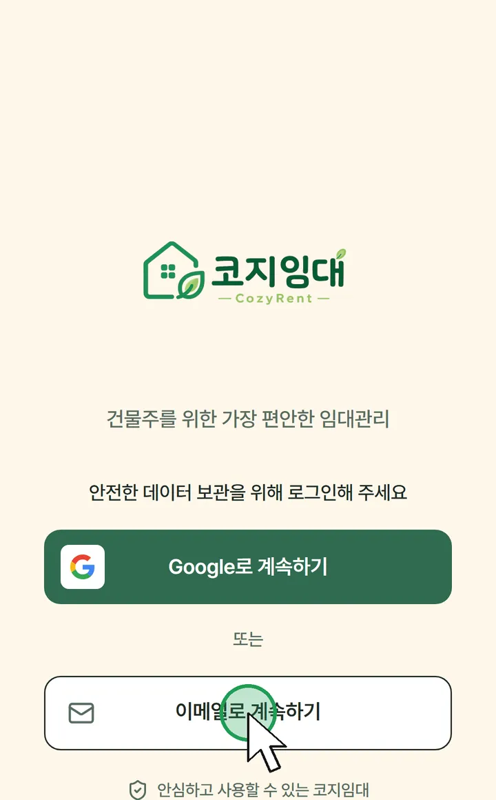
로그인 화면 — 위가 「Google로 계속하기」, 표시된 곳이 「이메일로 계속하기」입니다.
Google 계정으로 로그인하려면 「Google로 계속하기」를 누르고, 휴대폰의 Google 계정 선택 창에서 쓸 계정을 고릅니다. 고르면 아래 4번으로 넘어갑니다. 이메일로 로그인하려면 「이메일로 계속하기」를 누릅니다.
「Google 로그인은 준비 중이에요. 이메일로 로그인해 주세요.」가 보이면 이 휴대폰에서는 Google 로그인을 쓸 수 없는 경우입니다. 「이메일로 계속하기」로 로그인합니다.
「이메일 주소」 칸에 쓸 이메일을 넣고 「인증번호 받기」를 누릅니다.
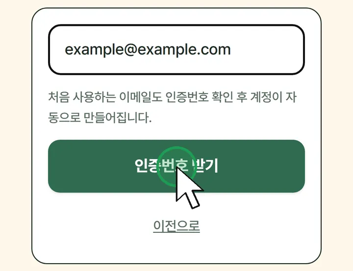
이메일을 넣은 뒤(예시: example@example.com) — 표시된 곳이 「인증번호 받기」입니다.
그 이메일의 받은편지함에서 6자리 숫자를 확인해 「인증번호 6자리」 칸에 넣고 「로그인」을 누릅니다.
메일이 오지 않으면 「인증번호 다시 받기」를 누릅니다.
「인증번호가 만료됐어요. 새 인증번호를 요청해 주세요.」가 보이면 「인증번호 다시 받기」로 새 번호를 받아 다시 넣습니다.
이메일 주소를 잘못 넣었으면 「이메일 변경」을 눌러 이메일 입력 화면으로 돌아갑니다.
「내 정보를 불러오고 있어요」가 잠깐 보인 뒤, 처음 로그인하면 「이 휴대폰을 사용 기기로 등록할까요?」 화면이 나옵니다. 「이 휴대폰 등록」을 누릅니다. 자동으로 등록되지 않으니 꼭 버튼을 누릅니다.
코지임대는 자료가 엇갈리지 않도록 한 계정에서 휴대폰 한 대만 씁니다. 다른 휴대폰에서 쓰던 계정이면 이 화면 대신 「다른 휴대폰에서 사용 중입니다」가 나옵니다. 휴대폰을 바꾸는 방법은 고급 8.5 휴대폰을 바꿀 때에 있습니다.
「기기를 확인하지 못했어요」가 보이면 인터넷 연결을 확인하고 「다시 시도」를 누릅니다.
등록된 건물이 없는 계정이면 첫 건물 등록 안내가 열립니다(1.5 첫 건물 등록하기). 건물이 있는 계정이면 홈이 열립니다.
ℹ️ 참고 — 한 번 로그인하면 앱을 다시 열어도 로그인 화면 없이 바로 열립니다. 인터넷이 끊겨도 로그아웃되지 않고 저장된 자료가 그대로 열립니다. 이때 호실·건물·리포트 탭에 「구독 정보를 확인하고 있어요.」가 보이면 고급 9.7 구독 확인 중·로그인 필요 화면을 봅니다.
홈 맨 위 — 표시된 곳이 「공지사항」 아이콘, 오른쪽이 알림 종, 아래 줄이 한 줄 공지입니다.
확성기 모양 「공지사항」 아이콘을 누르면 공지사항 목록이 열립니다(2.5 공지사항 보기).
알림 종을 누르면 앱 알림을 모아 둔 소식함이 열립니다(12.1 알림 보기). 알림 종은 상세 화면에도 있습니다.
운영자가 일반 공지를 올려 둔 동안에는 제목줄 바로 아래에 한 줄 공지가 흐릅니다.
앱 새 버전이 나오면 다섯 개 탭 화면 맨 위에 「새 버전이 있어요」 안내가 나올 수 있습니다(14.5 앱 업데이트하기).
화면별 뒤로가기 규칙, 저장하지 않고 나갈 때 뜨는 창, 앱을 완전히 종료하는 방법은 뒤로가기와 저장하지 않고 나가기에 있습니다.
1.3 입력할 때 공통 규칙
날짜 칸은 모두 같은 달력으로 고르고, 이름·메모·금액 칸에는 넣을 수 있는 한도가 있습니다. 어느 화면에서나 같은 규칙입니다. 필수 칸이 비어 있거나, 번호를 확인하는 전화번호 칸의 자릿수·형식이 맞지 않으면 「저장」 같은 버튼이 눌리지 않거나 칸 아래·창에 안내가 나오고 저장되지 않으니, 칸을 채우거나 고친 뒤 다시 저장합니다.
날짜 고르기
준공일, 계약 시작일·종료일, 실제 입금일, 수리한 날 등 앱의 모든 날짜 칸은 같은 달력을 씁니다.
날짜 칸을 누르면 그 칸 이름이 제목인 달력이 열립니다. 칸이 비어 있으면 오늘이 있는 달이, 날짜가 들어 있으면 그 날짜의 달이 먼저 보입니다.
위 줄의 ‹ ›로 해를, 아래 줄의 ‹ ›로 달을 옮긴 뒤 날짜를 누릅니다.
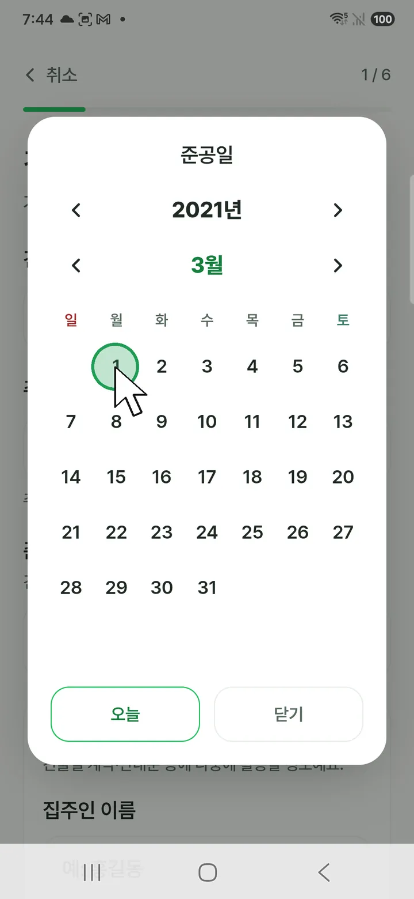
「준공일」 달력 — 위 줄은 해(2021년), 아래 줄은 달(3월)입니다. 표시된 곳은 1일입니다.
글자 수와 금액 한도
이름·메모·금액 칸에는 저장할 수 있는 한도가 있습니다. 한도를 넘으면 글자가 잘리지 않고 저장이 막히며, 「이름은 50자까지 입력할 수 있어요. (현재 N자)」처럼 한도와 지금 글자 수(N)가 나옵니다. 금액은 「보증금은 10,000,000,000원까지 입력할 수 있어요.」처럼 나옵니다. 글자나 금액을 줄인 뒤 다시 저장합니다.
칸
한도
건물·업체·시설·지출·일정 등의 이름
50자
사람 이름(집주인·임차인·공동거주자·담당자)
20자
메모·비고(특약 메모·입주 기록의 특이사항 포함)
500자
보증금
100억 원
임대료(월세·년세)
10억 원
관리비(한 달 기준)
1천만 원
ℹ️ 참고 — 새로 등록할 때는 모든 칸을 확인하고, 고칠 때는 바꾼 칸만 확인합니다. 예전에 저장된 값이 한도를 넘어도 다른 칸만 고치는 저장은 막히지 않습니다. 입출금 분류 이름(20자)만은 입력하는 동안 20자에서 저절로 잘립니다.
1.4 앱이 계산하는 것과 내가 입력하는 것
코지임대의 기본 원칙은 "사실은 사람이 입력하고, 계산은 앱이 한다"입니다. 실제로 돈을 받거나 낸 사실은 내가 기록하고, 받을 돈·못 받은 돈·합계는 앱이 그 기록으로 계산합니다.
내가 입력하는 것
앱이 계산하는 것
건물·층·호실, 계약 조건(보증금·월세·관리비·기간·납부일)
계약 종료일(「1년」·「2년」을 고를 때), 매달 받을 돈, 못 받은 돈, 합계·달성률
실제로 받은 돈·낸 돈의 날짜와 금액(「입금확인」·「납부확인」·「출금확인」)
이번 달에 확인할 입금·납부 항목
고정지출의 시작일·주기·금액
달마다 나갈 돈, 홈·리포트 합계
수리 내용·비용, 시설과 점검 일정, 실제로 점검한 날
수리비의 지출 반영, 다음 예정일 제안, 예정일 3일 전·당일 알림
퇴실일·차감 항목
못 받은 돈·돌려줄 임대료, 돌려줄 보증금, 정산금액과 정산 입출금 기록
앱이 대신 만들어 두는 기록 — 다음 기록은 앱이 계약·고정지출 정보로 미리 만든 것이고, 실제로 돈이 오간 것을 앱이 확인한 것이 아닙니다. 통장 등 실제 내역과 비교해 다르면 고칩니다.
계약을 처음 저장할 때 시작일이 지난달이나 그 전이면, 지난달까지의 보증금·월세(년세)·관리비가 「입금완료」로 기록됩니다(목록에 「앱 자동 생성」). 확인하는 방법은 지난 입금 기록 확인하기에 있습니다.
계약에 중개수수료를 넣으면 계약 시작일 날짜로 출금이 기록됩니다.
고정지출의 시작일이 지난달이나 그 전이면 지난달까지 「납부완료」가 기록되고, 「납부확인」을 하지 않은 채 그 달이 지나도 그 달이 「납부완료」로 기록됩니다(고급 4.5 지난달 납부완료가 자동으로 생긴 이유).
예정 금액과 실제 금액 — 홈의 「이번 달 받을 돈」은 계약으로 계산한 금액이고 실제로 받은 돈이 아닙니다. 앱은 실제로 돈이 오갔는지 알지 못하므로, 돈을 받은 뒤에 「입금확인」, 낸 뒤에 「납부확인」으로 기록합니다. 「변동금액」 고정지출의 예상금액도 실제 금액이 아니므로, 「납부확인」할 때 고지서의 금액을 넣습니다.
ℹ️ 참고 — 못 받은 돈·합계 같은 계산값은 직접 고칠 수 없습니다. 실제로 받은 돈·낸 돈을 바르게 기록하면 계산값이 저절로 맞춰집니다. 퇴실 정산금액도 직접 고칠 수 없습니다(6.3 이사정산).
1.5 첫 건물 등록하기
건물 기본정보부터 층·호실, 설비, 고정지출까지 차례로 고르고 마지막 6단계에서 「건물 등록 완료」를 누르면 건물과 호실이 한 번에 만들어집니다.
들어가는 곳 — 건물이 없는 계정으로 로그인하면 자동으로 열립니다.
그림은 가상의 건물 「코지빌딩」(준공 2021-03-01 · 지상 3층 · 상가 1개 · 주택 4개 · 주차 5대 · 주인세대 301호)을 등록하는 모습입니다.
⚠️ 주의 — 「다음」은 저장이 아닙니다. 6단계의 「건물 등록 완료」를 눌러야 입력한 내용이 저장되고, 그 전에 등록을 그만두면 입력한 내용은 남지 않습니다(등록을 그만두려면). 저장하는 도중에 실패했을 때 할 일은 6단계에 있습니다.
1단계 건물 기본정보 — 「건물 이름」에 홈과 건물 목록에 보일 이름을 넣습니다(필수). 「주소 (선택)」은 나중에 건물 정보에서 넣거나 바꿀 수 있습니다(3.3 건물 정보 고치기).
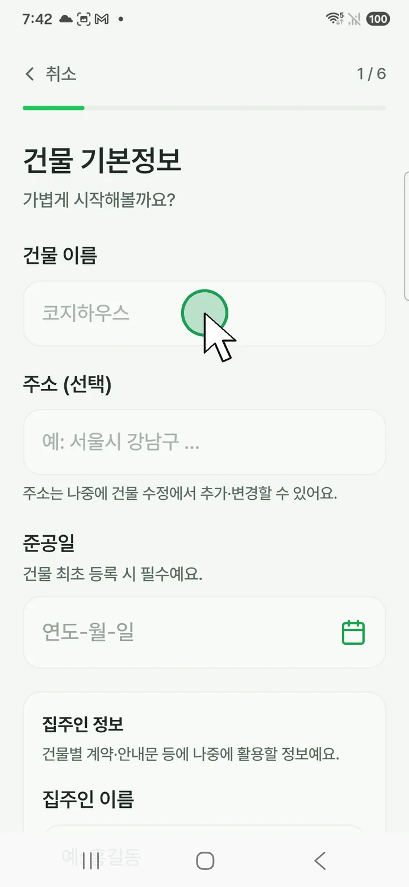
「건물 기본정보」 처음 화면 — 표시된 곳이 「건물 이름」 칸입니다. 흐린 「코지하우스」는 빈 칸에 보이는 안내 글씨입니다.
「준공일」(필수)은 칸을 눌러 달력에서 건물의 준공일을 고릅니다. 칸이 비어 있어 달력이 오늘이 있는 달로 열리므로, 위 줄(해)의 ‹를 눌러 준공한 해까지 옮기고 아래 줄(달)의 ‹ ›로 달을 맞춘 뒤 날짜를 누릅니다(날짜 고르기).
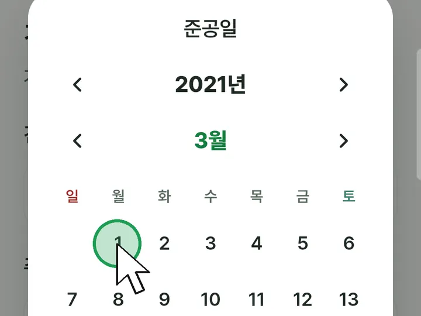
「준공일」 달력 — 위 줄이 해(예시: 2021년), 아래 줄이 달(3월)이고, 표시된 곳이 1일입니다.
아래로 내려 「집주인 정보」의 「집주인 이름」과 「집주인 연락처」를 넣고 「다음」을 누릅니다. 둘 다 필수이고, 연락처는 집주인의 전화번호를 넣습니다(예시: 010-0000-0000).
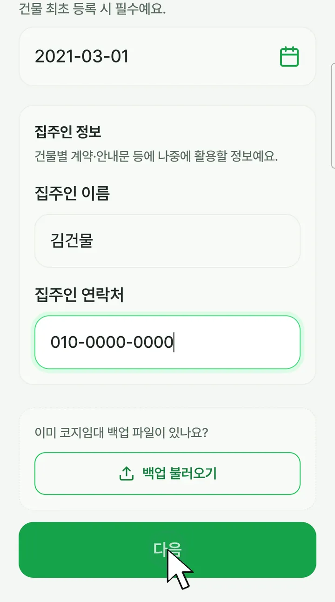
준공일(예시: 2021-03-01)과 집주인 이름·연락처를 넣은 뒤 — 표시된 곳이 「다음」, 그 위가 「백업 불러오기」입니다.
백업 파일이 있으면 「다음」 위의 「백업 불러오기」로 그 자료를 불러와 시작할 수도 있습니다. 이때는 이 화면에 넣은 내용 대신 백업 파일의 자료로 바뀝니다. 유료 구독 중에만 쓸 수 있으며(구독하기 전에는 무료체험 중이어도 쓸 수 없음), 휴대폰의 파일 선택 화면에서 백업 파일을 고르고 「가져온 데이터로 현재 데이터를 덮어쓸까요?」 창에서 「가져오기」를 누르면 그 자료로 앱이 다시 열립니다(고급 8.5 휴대폰을 바꿀 때).
2단계 건물 규모 — 「지하 몇 층인가요?」 「지상 몇 층인가요?」 「상가는 몇 개인가요?」 「주택은 몇 개인가요?」에 버튼을 하나씩 눌러 답합니다. 네 질문을 모두 골라야 넘어갑니다.
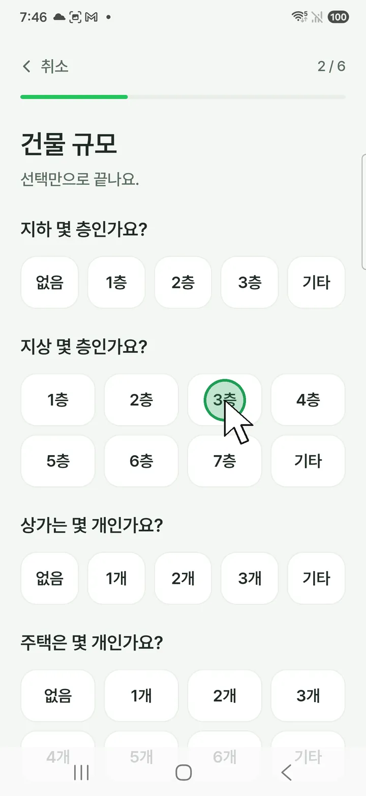
「건물 규모」 — 표시된 곳은 「지상 몇 층인가요?」의 「3층」입니다.
지하가 없으면 「없음」을 누릅니다.
상가·주택 수에는 건물주가 직접 쓰는 호실도 넣습니다. 그 호실은 3단계 뒤에 주인세대로 따로 표시합니다.
버튼에 없는 수는 「기타」를 누르고, 열린 창에서 「−」 「+」로 숫자를 맞춘 뒤 「적용」을 누릅니다.
「주차 공간은 몇 대인가요?」는 필요할 때만 「−」 「+」로 맞춥니다. 가운데 숫자를 누르면 직접 넣을 수 있습니다.
모두 골랐으면 「다음」을 누릅니다.
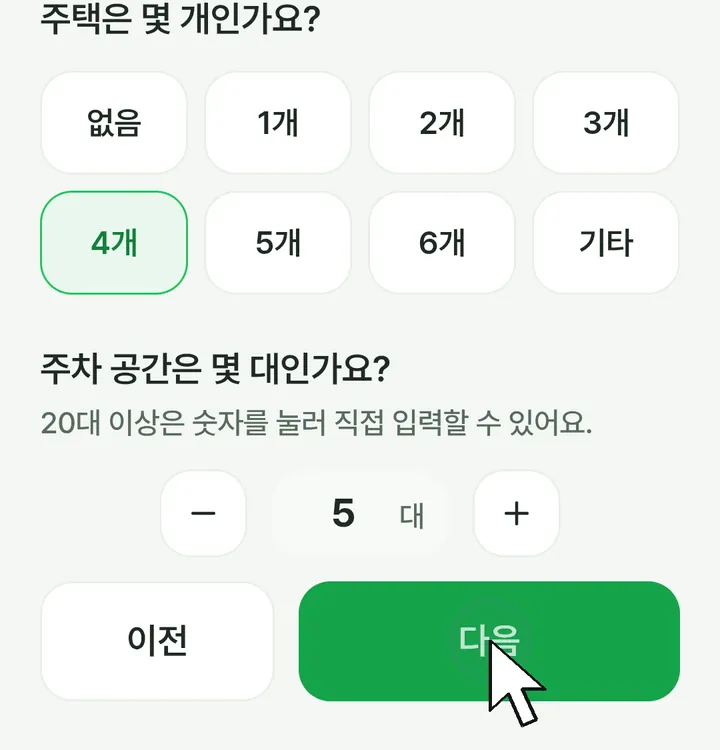
규모를 고른 뒤(예시: 주택 「4개」 · 주차 5대) — 표시된 곳이 「다음」입니다.
3단계 호실 배치 — 2단계에서 정한 수만큼 「상가」·「주택」 버튼이 「아직 배치 안 한 호실」에 생깁니다. 배치할 호실 버튼을 먼저 누릅니다.
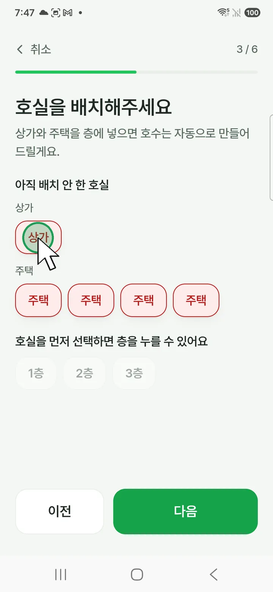
「호실을 배치해주세요」 처음 화면 — 표시된 곳은 「상가」입니다.
「어느 층에 넣을까요?」가 보이면 그 호실을 넣을 층 버튼을 누릅니다.
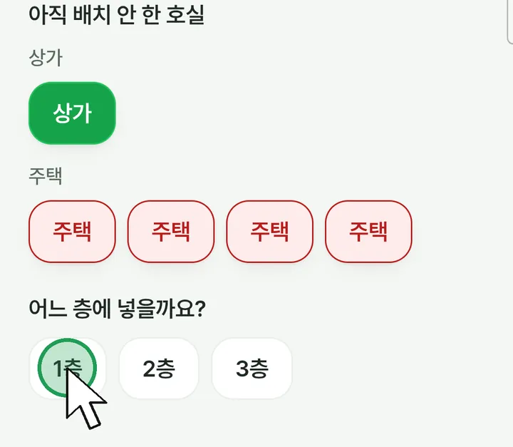
「상가」를 고른 뒤 — 표시된 곳은 「1층」입니다.
층을 누르면 호수가 자동으로 붙습니다. 상가는 「상가1」 「상가2」…, 주택은 층마다 「101호」 「102호」…처럼 붙고, 지하층은 「B101호」처럼 B가 붙습니다. 나머지 호실도 같은 방법(호실 → 층)으로 넣습니다. 모두 넣으면 층별 호수가 맞는지 보고 「다음」을 누릅니다.
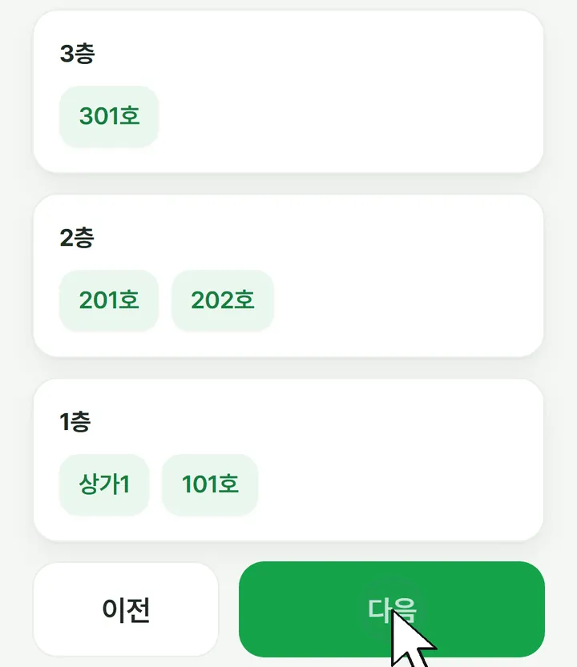
층별로 호수가 만들어진 모습(예시: 3층 301호 · 2층 201호·202호 · 1층 상가1·101호) — 표시된 곳이 「다음」입니다.
잘못 넣은 호수를 누르면 그 호실이 「아직 배치 안 한 호실」로 돌아갑니다.
배치한 뒤 2단계로 돌아가 상가·주택 수를 바꾸면 배치와 주인세대 선택을 처음부터 다시 합니다.
주인세대 정하기 — 3단계에서 「다음」을 누르면 「주인세대가 있나요?」 창이 나옵니다. 주인세대는 건물주가 사는 세대처럼 임대하지 않는 호실이며, 임대수익·미입금·입주율 계산에서 빠집니다. 그런 호실이 없으면 「없음」을 누릅니다.
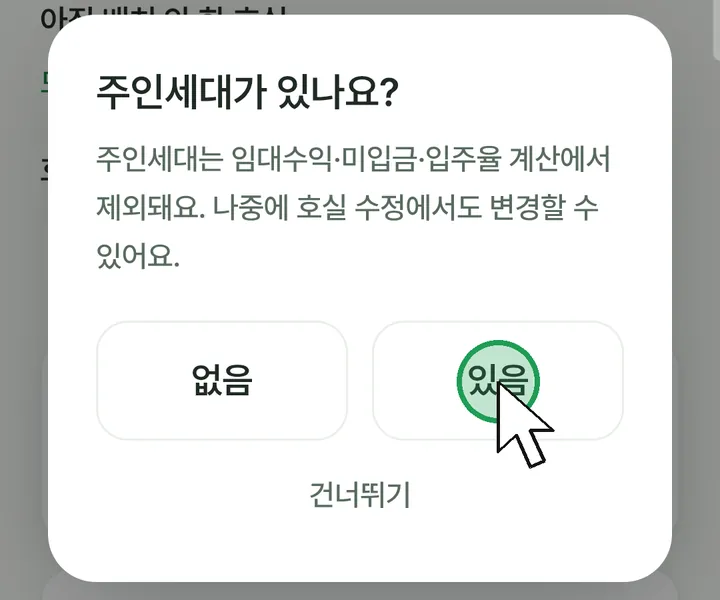
「주인세대가 있나요?」 창 — 표시된 곳은 「있음」입니다.
있으면 「있음」을 누르고, 열린 「주인세대를 선택하세요」 창에서 그 호실을 누른 뒤 「완료」를 누릅니다. 나중에 지정하거나 해제하는 방법은 3.7 주인세대 지정하기에 있습니다.
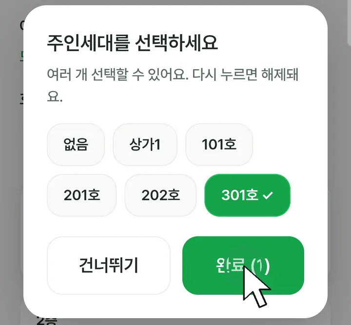
301호를 고른 모습 — 표시된 곳을 눌러 마칩니다.
4단계 설비 선택 — 건물에 있는 설비(예: 소방설비)의 오른쪽 동그라미를 누릅니다. 여러 개 고를 수 있고, 하나도 고르지 않아도 넘어갈 수 있습니다. 설비는 큰 분류이고, 소화기 같은 실제 시설은 등록을 마친 뒤 「시설 관리」에서 하나씩 넣습니다(9.1 시설 등록하기).
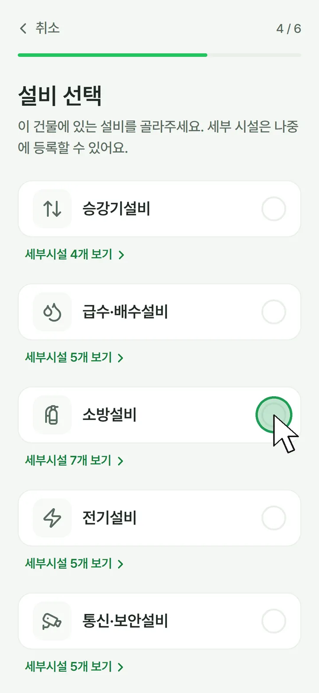
「설비 선택」 처음 화면 — 표시된 곳이 소방설비의 오른쪽 동그라미입니다.
설비는 승강기설비부터 신재생에너지설비까지 11가지입니다. 다 골랐으면 맨 아래까지 내려 「다음」을 누릅니다. 카드 아래 「세부시설 N개 보기 ›」는 그 설비에 들어 있는 시설을 볼 때만 누릅니다. 보기만 하는 창이라 고른 설비는 바뀌지 않습니다.
5단계 고정지출 — 매달 나가는 비용 중 관리할 항목(「공용전기」 「수도」 「청소비」 「엘리베이터 유지비」 「인터넷」 「CCTV」)의 동그라미를 누르고 「다음」을 누릅니다. 하나도 고르지 않아도 되고, 목록에 없는 비용은 등록을 마친 뒤 추가합니다(7.1의 예 3).
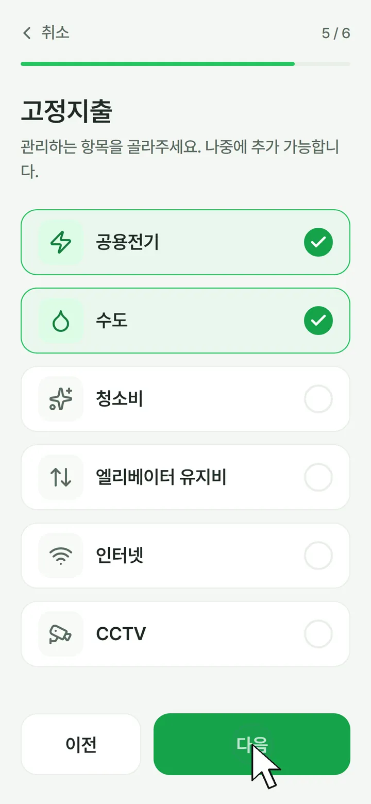
「공용전기」·「수도」를 고른 뒤 — 표시된 곳이 「다음」입니다.
고른 항목은 등록한 뒤 「고정지출관리」 목록에 「설정 필요」로 들어갑니다(주기 「매월」 · 시작일은 건물을 등록한 날). 「설정 필요」인 동안에는 지출로 계산되지 않고, 「지출관리」의 달별 납부 항목과 홈 「오늘 확인할 일」에도 나오지 않습니다. 금액 유형과 금액은 이 단계에서 넣지 않고 7.1 고정지출 설정하기에서 정합니다. 「인터넷」과 「CCTV」는 따로 고르며, 둘 다 고르면 두 항목이 생깁니다(예전 버전의 「인터넷·CCTV」 항목은 고급 4.8).
6단계 준비 끝! — 「첫 건물이 등록됩니다」 안내 아래 「건물 등록 완료」를 누릅니다. 고칠 것이 있으면 먼저 「이전」으로 돌아가 고친 뒤, 6단계로 다시 와서 누릅니다.
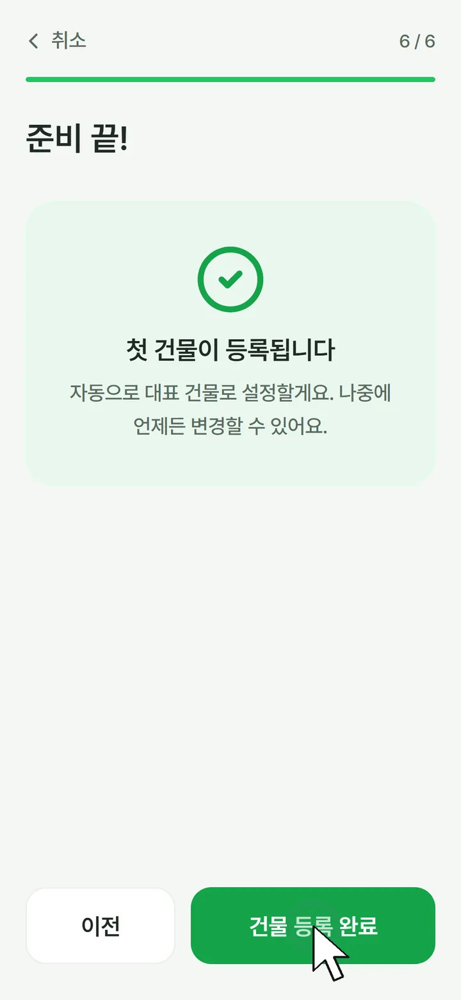
첫 건물의 「준비 끝!」 — 「첫 건물이 등록됩니다」 아래, 표시된 곳이 「건물 등록 완료」입니다.
저장이 끝나면 「축하합니다, 건물주님 🎉」 화면에서 「홈에서 시작하기」를 누릅니다. 첫 건물은 자동으로 대표 건물(앱을 열 때 처음 보이는 건물)이 되고, 나중에 바꿀 수 있습니다(3.1 건물 고르고 추가하기).
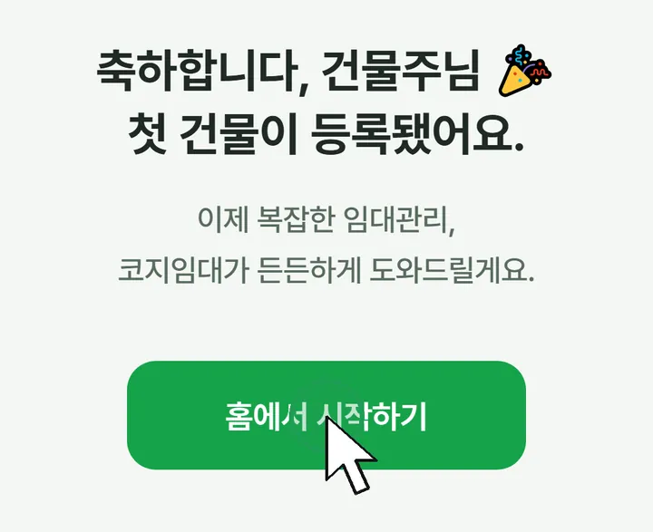
등록을 마친 뒤의 축하 화면 — 표시된 곳이 「홈에서 시작하기」입니다.
저장하는 도중에 실패하면 — 「건물 등록 완료」를 누르면 건물부터 층·호실, 주인세대, 설비, 고정지출 순서로 저장합니다. 도중에 「등록을 마치지 못했어요. 다시 시도해 주세요.」 같은 안내가 보이면 같은 화면에서 버튼을 다시 누릅니다. 입력한 내용은 화면에 남아 있고, 이미 저장된 부분이 두 번 만들어지지 않습니다. 「등록을 마치지 못했어요. 일부만 저장됐어요. …」가 보여도 같은 화면에서 다시 누르면 남은 단계만 이어서 저장됩니다. 건물까지 저장된 뒤 실패했다면 버튼이 「홈으로 시작하기」로 바뀌고, 마치면 축하 화면 없이 홈으로 갑니다. 이 상태에서 등록을 그만두면 이미 저장된 건물은 남습니다(등록을 그만두려면).
홈이 열리면 맨 위 건물 요약에 등록한 건물이 「대표」와 함께 보이는지, 호실 수가 고른 대로인지 봅니다. 주인세대는 「임대」 호실 수에서 빠집니다.
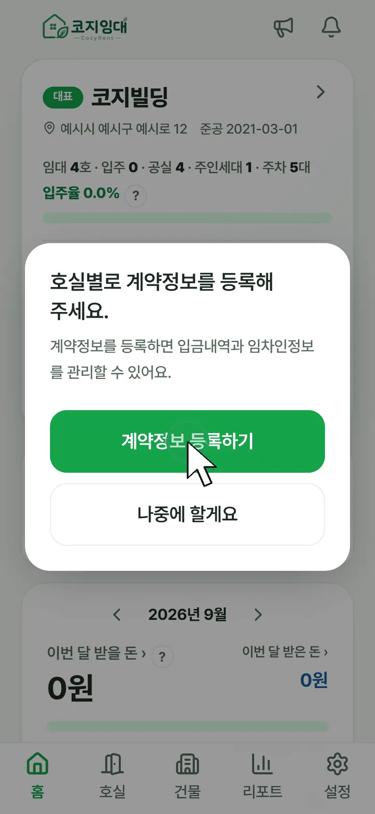
등록 직후 홈 — 건물 요약(예시: 「임대 4호 · 입주 0 · 공실 4 · 주인세대 1 · 주차 5대」 · 「입주율 0.0%」) 위에 계약 등록 안내 창이 떠 있습니다. 표시된 곳이 「계약정보 등록하기」입니다.
계약이 아직 없어서 「호실별로 계약정보를 등록해 주세요.」 창이 함께 나옵니다. 「계약정보 등록하기」를 누르면 호실 탭으로 갑니다.
이미 건물이 있는 계정에서는 홈 맨 위 건물 요약 → 「내 건물 선택」 → 「건물 추가」로 같은 여섯 단계를 엽니다(3.1 건물 고르고 추가하기). 입력 방법은 같고, 다음만 다릅니다.
1단계에 「백업 불러오기」가 없습니다.
같은 이름의 건물이 이미 있으면 1단계에서 「다음」을 누를 때 안내가 나옵니다. 이름과 주소가 모두 같으면(둘 다 주소가 비어 있는 경우 포함) 이름이나 주소를 바꿔야 넘어갑니다. 주소가 다른 건물이 맞다면 「다음」을 한 번 더 누르면 계속됩니다.
「취소」 → 「나가기」를 누르면 로그아웃하지 않고 이전 화면(없으면 홈)으로 돌아갑니다(등록을 그만두려면).
6단계의 버튼은 「홈으로 시작하기」이고, 누르면 축하 화면 없이 홈으로 갑니다. 추가한 건물은 대표 건물이 되지 않고, 홈에는 방금 추가한 건물이 「대표」 표시 없이 보입니다.
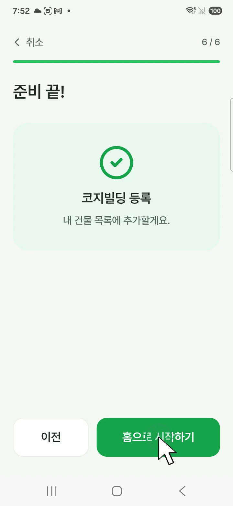
건물을 추가할 때의 「준비 끝!」 — 「내 건물 목록에 추가할게요.」 아래, 표시된 곳이 「홈으로 시작하기」입니다.
등록을 그만두려면
등록 도중 맨 위 「취소」나 휴대폰 뒤로가기를 누르면 「건물 등록을 그만두시겠어요?」 창이 나옵니다.
⚠️ 주의 — 「나가기」를 누르면 지금까지 입력한 내용은 저장되지 않습니다. 다만 「건물 등록 완료」를 누른 뒤 등록이 중간에 실패해 버튼이 「홈으로 시작하기」로 바뀌었다면 건물은 이미 저장된 것이라, 「나가기」를 눌러도 그 건물은 남고 로그아웃 없이 이전 화면(없으면 홈)으로 갑니다. 건물이 하나도 없는 계정에서는 돌아갈 화면이 없어 로그아웃되고 로그인 화면으로 갑니다. 로그아웃일 뿐이라 계정과 이미 저장된 자료는 그대로이고, 다시 로그인하면 첫 건물 등록 안내가 다시 열립니다.
2. 홈에서 오늘 할 일 보기
홈은 앱을 열면 가장 먼저 보이는 화면입니다. 지금 고른 건물 하나를 기준으로 호실 상황, 보증금·임대료 규모, 이번 달에 받을 돈과 나갈 돈, 오늘 처리할 일을 한 화면에 모아 보여 줍니다. 홈의 금액과 건수는 등록한 계약·지출·수리 기록으로 앱이 계산한 값이고, 홈에서 숫자를 직접 고치지는 않습니다.
2.1 홈 둘러보기
건물 요약은 지금 고른 건물의 호실 상황과 보증금·임대료·지출 규모를 보여 주고, 금액을 누르면 정확한 금액과 계산 방법을 볼 수 있습니다.
들어가는 곳 — 하단 「홈」 탭(앱을 열면 처음 보이는 화면)
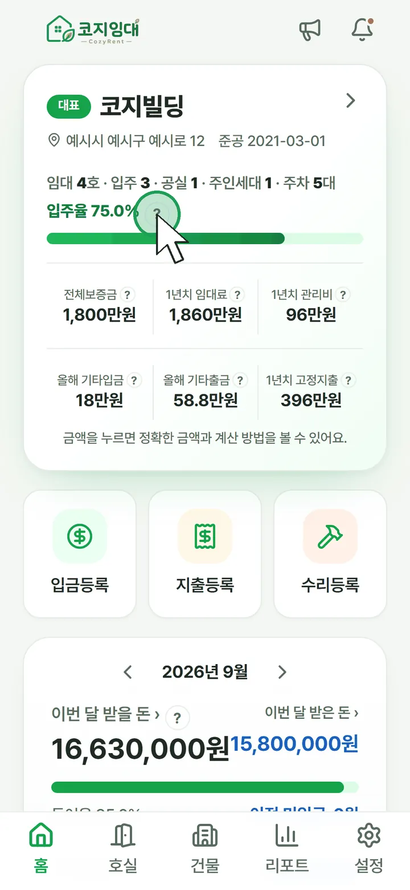
홈 맨 위(예시: 코지빌딩). 표시된 곳은 입주율의 「?」입니다.
맨 위 제목줄 아래가 건물 요약이고, 아래로 내리면 빠른등록 버튼(2.4), 월별 받을 돈·나갈 돈(2.2), 「오늘 확인할 일」(2.3)이 이어집니다.
상황에 따라 다음 안내가 더 보일 수 있습니다.
「새 버전이 있어요」 — Google Play에 새 버전이 올라왔을 때 건물 요약 위에 보입니다(14.5 앱 업데이트하기).
「휴대폰 알림이 꺼져 있어요. …」 — 휴대폰 알림이 꺼져 있을 때 「오늘 확인할 일」 바로 위에 보입니다(12.2 휴대폰 알림 켜기).
건물 요약 맨 위에서 지금 보고 있는 건물을 봅니다. 대표 건물이면 건물명 앞에 「대표」 배지가 붙습니다. 건물이 여러 개면 건물명이나 오른쪽 끝 ›를 눌러 「내 건물 선택」 창에서 볼 건물을 고릅니다. 홈 전체와 리포트의 「이 건물」이 그 건물 기준으로 바뀝니다(3.1 건물 고르고 추가하기).
호실 요약과 입주율을 봅니다. 「임대 4호 · 입주 3 · 공실 1」(예시)은 세를 놓는 호실 수(주인세대 빼고 · 빈 호실 포함), 입주한 호실 수, 빈 호실 수입니다. 「입주율」은 오늘 진행 중인 계약이 있는 호실 수를 세를 놓는 호실 수로 나눈 값이고, 옆의 「?」를 누르면 계산 방법이 보입니다.
금액 여섯 칸을 봅니다.
칸
뜻
「전체보증금」
지금 살고 있는 계약의 보증금을 모두 더한 금액(주인세대와 퇴실이 끝난 계약은 뺌)
「1년치 임대료」
지금 계약이 1년 이어질 때 받을 임대료(월세는 월 임대료 × 12 · 년세는 1년 임대료 · 전세는 0원)
「1년치 관리비」
지금 계약의 월 관리비 × 12(년납도 월 기준 관리비로 계산)
「올해 기타입금」
올해 날짜로 등록한 계약 외 입금(퇴실정산으로 받은 돈·임차인이 부담한 수리비 포함)
「올해 기타출금」
올해 날짜로 등록한 수리비와 기타지출의 합계
「1년치 고정지출」
지금 등록된 고정지출을 1년으로 계산한 금액(매월은 × 12 · 매년은 1회)
「1년치 …」 세 칸은 지금 계약·설정이 1년 이어진다고 보고 계산한 예상 금액이고, 지난 1년 동안 실제로 받거나 낸 돈이 아닙니다. 「올해 …」 두 칸은 올해(1월 1일~12월 31일) 날짜로 등록된 기록의 합계입니다. 같은 줄에 있어도 성격이 다르니 서로 더하거나 비교하지 않습니다. 「1년치 고정지출 계산 제외 N건」이 보이면 금액을 정하지 않은 고정지출이 있다는 뜻입니다(7.1 고정지출 설정하기).
정확한 금액이 필요하면 그 칸을 누릅니다. 칸은 자리가 좁아 금액을 줄여 보여 주고, 줄일 때 반올림하지 않고 아래 자리를 버립니다(예시: 588,000원 → 「58.8만원」).
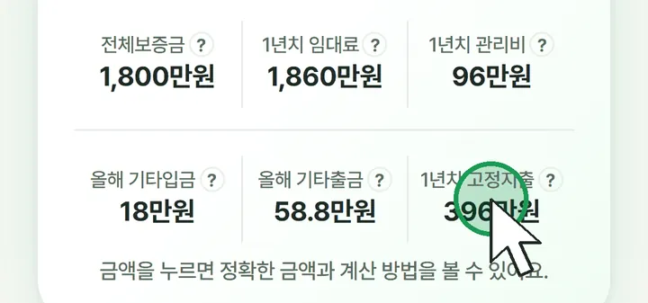
「1년치 고정지출」 칸을 누르는 모습
「{항목명} 계산 방법」 창이 열립니다. 맨 위 「정확한 금액」에 원 단위 금액이, 그 아래 무엇인지와 계산 방법이 보입니다.
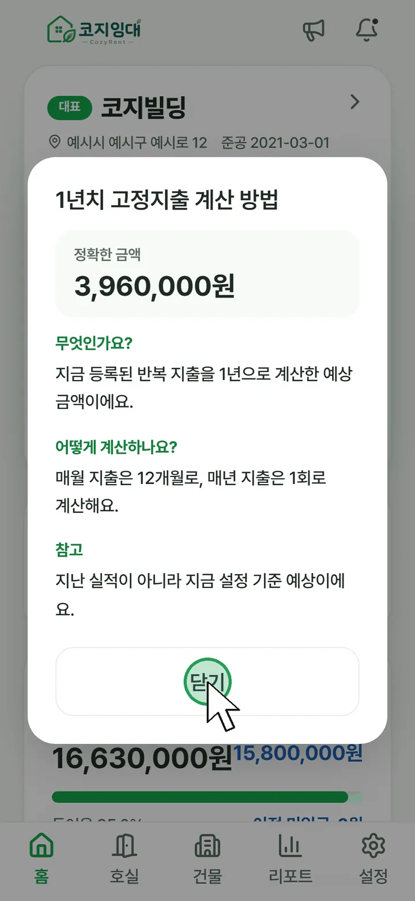
「1년치 고정지출 계산 방법」 창 — 「정확한 금액」 3,960,000원. 표시된 곳은 「닫기」입니다.
빠른등록 버튼 아래의 월별 금액은 한 달 동안 받을 돈과 받은 돈, 나갈 돈과 나간 돈을 보여 줍니다.
들어가는 곳 — 하단 「홈」 탭 → 아래로 내려 빠른등록 버튼 아래
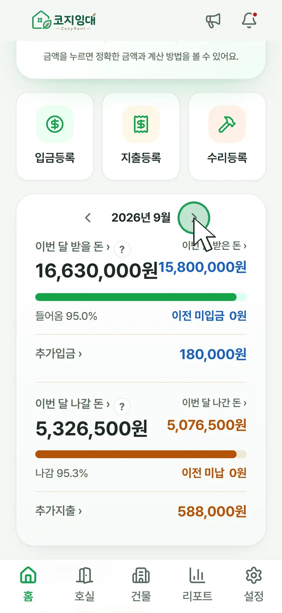
홈의 월별 금액(예시: 2026년 9월). 표시된 곳은 다음 달 ›입니다.
달 이름 양옆의 ‹(이전 달)·›(다음 달)로 볼 달을 고릅니다. 아래 금액이 모두 그 달 기준으로 바뀝니다. 앞으로 올 달을 고르면 다음 달에 받을 돈과 낼 고정지출을 미리 볼 수 있습니다.
위쪽에서 들어오는 돈을 봅니다.
큰 금액(「이번 달 받을 돈」) — 그 달에 받기로 한 월세·관리비·보증금 등의 합계
오른쪽 파란 금액(「이번 달 받은 돈」) — 그 달 몫으로 입금확인한 돈
「들어옴 N%」 — 받은 돈을 받을 돈으로 나눈 비율
「이전 미입금」 — 보고 있는 달보다 앞선 달에 받지 못하고 남은 돈. 큰 금액에는 더하지 않습니다.
「추가입금」 — 퇴실정산으로 받은 돈·임차인이 부담한 수리비처럼 계약으로 받기로 한 돈과 별개로 등록한 입금
아래쪽에서 나가는 돈을 봅니다.
큰 금액(「이번 달 나갈 돈」) — 그 달에 낼 고정지출과 돌려줄 보증금의 합계
오른쪽 주황 금액(「이번 달 나간 돈」) — 그 달 몫으로 납부확인하거나 출금으로 기록한 돈
「나감 N%」 — 나간 돈을 나갈 돈으로 나눈 비율
「이전 미납」 — 보고 있는 달보다 앞선 달에 나가기로 했는데 아직 나가지 않은 돈(고정지출과 보증금 차액 반환 등 · 퇴실확정 전 보증금 반환은 넣지 않음). 큰 금액에는 더하지 않습니다.
「추가지출」 — 일회성 지출·수리비·중개수수료·조기퇴실 환급처럼 정기적이지 않은 지출
⚠️ 주의 — 「받은 돈」·「나간 돈」은 앱에 기록된 금액입니다. 지난 달에는 앱이 자동으로 「입금완료」·「납부완료」로 등록한 기록(계약을 처음 등록할 때 만든 지난 입금 기록, 「납부확인」 없이 지난 고정지출)도 들어가므로, 「들어옴 100.0%」여도 실제로 다 받았다는 뜻은 아닙니다. 실제 내역과 다르면 그 기록을 고칩니다(지난 입금 기록 확인하기 · 고급 4.5).
궁금한 금액을 누릅니다. 항목 이름이나 금액, 「추가입금 ›」·「추가지출 ›」을 누르면 어느 호실·어느 항목에서 나온 금액인지 보여 주는 상세 화면이 열립니다(고급 5.3 금액 상세 화면 읽는 법). 「?」를 누르면 계산 방법이 보입니다.
홈 맨 아래 「오늘 확인할 일」은 오늘 확인하거나 처리할 일을 모아 둔 목록입니다. 못 받은 돈, 낼 고정지출, 진행 중인 수리, 끝나 가는 계약처럼 조건이 맞으면 앱이 항목을 자동으로 만들고, 그 일을 처리하면 항목이 사라집니다. 직접 추가하거나 지울 수는 없습니다. 그날그날 생긴 알림을 시간순으로 쌓아 두는 알림 소식함과는 다릅니다(12.1 알림 보기).
들어가는 곳 — 하단 「홈」 탭 → 맨 아래로 내림
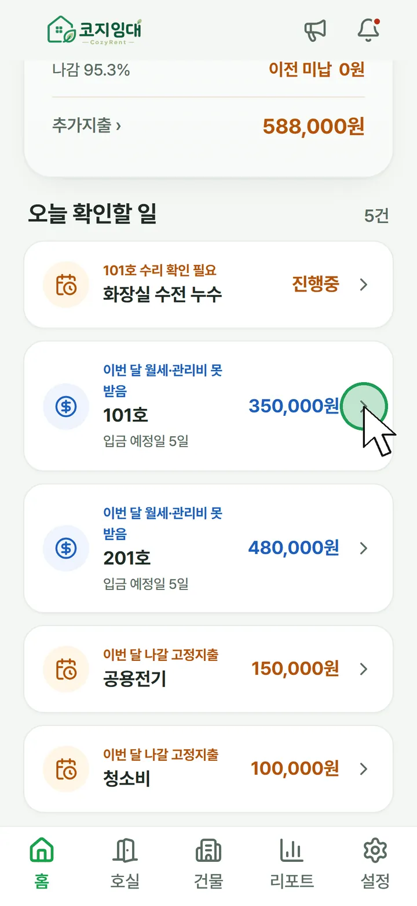
「오늘 확인할 일 5건」(예시). 표시된 곳은 101호의 「이번 달 월세·관리비 못 받음」 항목입니다(입금 예정일 5일이 지나 이 이름으로 보임).
제목 오른쪽 「N건」이 남은 항목 수입니다. 주인세대 호실은 대부분의 항목에서 빠집니다.
처리할 항목을 누릅니다. 그 일을 처리하는 화면이 열립니다(아래 항목별로 할 일). 파란 항목은 받을 돈, 주황 항목은 나갈 돈·수리와 관련된 일입니다.
⚠️ 주의 — 항목의 금액은 앱이 계약·지출 설정으로 계산한 금액입니다. 앱은 실제로 돈을 받았는지·냈는지 알지 못하니, 열린 화면에는 실제로 받거나 낸 날짜와 금액을 넣습니다.
열린 화면에서 실제로 한 일을 기록합니다. 버튼을 누르면 창이나 수정 화면이 열리고, 그 안의 마지막 버튼까지 눌러야 기록됩니다.
월세·관리비를 받았으면 — 그 달 칸의 「입금확인」 → 창에서 받은 금액과 실제 입금일 확인 → 「입금 등록」(5.2 받은 돈 기록하기)
고정지출을 냈으면 — 그 지출의 「납부확인」 → 창에서 납부일(변동금액은 실제 금액) 확인 → 창의 「납부확인」(7.2)
수리를 마쳤으면 — 「수리 수정」 화면에서 「상태」를 「수리완료」로 바꾸고 맨 아래 「수정 완료」(8.1)
하단 「홈」 탭을 눌러 돌아와, 처리한 항목이 사라졌는지 봅니다. 일부만 받았으면 항목이 남고 오른쪽 금액이 남은 금액으로 바뀝니다(예시: 350,000원 가운데 200,000원을 기록하면 「150,000원」).
못 받은 돈·입금일(파란 항목) — 이번 달 받을 돈이 남은 계약마다 한 항목이 보입니다. 입금 예정일 당일부터 보이고 그 전에는 나오지 않습니다. 예정일 당일에는 「오늘 월세·관리비 입금일」처럼, 다음 날부터는 「이번 달 월세·관리비 못 받음」처럼 보이고, 이름에는 아직 받지 않은 항목(보증금·월세·관리비)이 들어갑니다. 지난달 이전 몫은 「2026년 8월 월세 못 받음」처럼 연월이 붙고, 다 받지 못한 계약변경 정산도 「2026년 7월 계약변경 정산 못 받음」처럼 같은 모양으로 보입니다. 누르면 그 계약의 「입출금 내역」(「계약」 화면의 「임대료 입출금 등록/조회」로 여는 화면)이 그 달로 열립니다. 받은 돈을 「입금확인」으로 기록합니다(5.2 받은 돈 기록하기).
입금 예정일 미리 알림(파란 항목) — 「입금 예정일이 3일 남았어요」는 입금 예정일 3일 전 그날에만 보입니다. 누르면 같은 「입출금 내역」이 열립니다. 돈을 받은 뒤에 기록합니다.
보증금 반환(주황 항목) — 「보증금 반환 예정」(돌려줄 달이 이번 달)·「보증금 반환 확인」(돌려줄 달이 지남)·「보증금 차액 반환」(계약갱신으로 보증금이 줄어 차액을 돌려줌)입니다. 누르면 그 계약의 「입출금 내역」이 돌려줄 달로 열립니다. 계약이 끝나 돌려주는 보증금은 퇴실확정에서 정산하고, 열린 화면에서는 출금으로 기록하지 않습니다(「보증금 반환 예정」 칸에는 출금 버튼이 없습니다). 칸의 「퇴실확정에서 정산」을 누르거나, 그 버튼이 없으면 그 계약의 「계약」 화면 → 「퇴실관리」 → 「퇴실확정」으로 갑니다(6.3 퇴실확정하기). 갱신으로 줄어든 차액은 실제로 돌려준 뒤 열린 화면의 「보증금 차액 반환」 칸에서 「출금확인」을 누릅니다(고급 2.7).
고정지출(주황 달력 아이콘) — 「이번 달 나갈 고정지출」과 지난 24개월 안의 「고정지출 과거 미납」입니다. 누르면 「지출관리」가 그 달로 열립니다. 실제로 낸 뒤 「납부확인」으로 기록합니다(7.2 낸 고정지출 기록하기). 달마다 금액이 바뀌는 지출이 「금액 입력 필요」 또는 「금액 미정」으로 보이면 그 화면에서 금액을 넣습니다.
수리(주황 항목) — 상태가 「접수」·「진행중」인 수리마다 「101호 수리 확인 필요」·「건물수리 확인 필요」·「시설수리 확인 필요」가 보입니다. 호실·시설 수리는 그 수리의 수정 화면이 바로 열리고, 건물수리는 건물 수리 목록이 열리니 그 건을 찾아 엽니다. 수리를 마쳤으면 「상태」를 「수리완료」로 바꾸고 「수정 완료」를 누릅니다(8.1 호실 수리 기록하기 · 8.2 건물 수리 기록하기).
계약 종료·만료 — 「퇴실 대기」는 계약 종료일이 지났는데 계약갱신도 퇴실확정도 하지 않은 호실입니다. 누르면 퇴실확정 화면이 열립니다. 「계약 만료 예정」(종료일이 90일 안)과 그날에만 보이는 「계약 만료가 3개월 남았어요」·「계약 만료가 2개월 남았어요」는 누르면 그 호실의 계약 화면이 열립니다. 같은 임차인과 이어 가면 계약갱신(4.6), 나가면 퇴실 처리(6. 퇴실 처리하기)를 합니다.
시설 점검 — 「시설 점검 필요」·「오늘 시설 점검일」·「시설 점검 예정」(7일 안)은 예전 버전에서 시설을 등록할 때 정해 둔 점검 일정이 있는 시설에만 보입니다. 누르면 그 시설의 「점검·관리 등록/조회」가 열리니 「완료 등록」으로 실제로 점검한 날을 기록합니다(고급 6.3). 「새 관리일정/알림 등록」으로 만든 일정은 이 목록에 나오지 않고, 예정일 3일 전과 당일에 소식함으로 알려 줍니다(9.3).
「백업을 확인해 주세요」 — 변경 내용이 3일 이상 서버에 저장되지 못하면 목록 맨 위에 보입니다. 누르면 설정 탭이 열리니 「데이터 관리」의 자동 저장 상태를 봅니다(고급 8.1).
「시작하기」 — 호실은 있는데 진행 중인 계약이 하나도 없을 때 보입니다. 누르면 호실 탭이 열리니 호실을 골라 계약을 등록합니다(4.1 새 계약 등록하기).
계약을 하나도 저장하지 않은 건물에서는 홈에 들어올 때 「호실별로 계약정보를 등록해 주세요.」 창도 뜹니다. 「계약정보 등록하기」를 누르면 호실 탭으로 갑니다.
2.4 빠른등록 쓰기
홈의 「입금등록」·「지출등록」·「수리등록」은 자주 쓰는 기록 화면으로 바로 가는 지름길입니다. 홈에서 입력 창이 열리는 것이 아니라 그 기록 화면으로 이동하고(입금·수리는 대상을 먼저 고름), 금액·날짜·내용은 이동한 화면에서 넣고 저장합니다.
들어가는 곳 — 하단 「홈」 탭 → 건물 요약 바로 아래
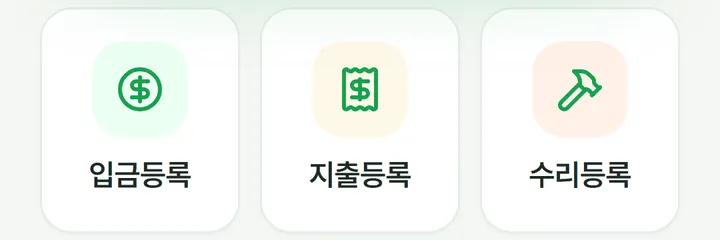
홈의 빠른등록 버튼 세 개
「입금등록」 — 받은 돈 기록하러 가기
계약에 따라 받은 월세·관리비 같은 돈을 기록할 때 씁니다.
「입금등록」을 누르면 「입금 등록」 창이 열립니다.
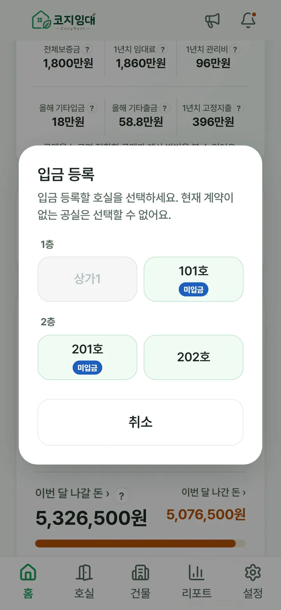
「입금 등록」 창 — 층별 호실과 「미입금」 배지(예시: 101호·201호)
오늘 진행 중인 계약이 있는 호실만 초록색으로 누를 수 있고, 계약이 없는 공실(예시: 회색 「상가1」)은 누를 수 없습니다. 주인세대 호실은 나오지 않습니다. 이번 달 받을 돈이 아직 남은 호실에는 파란 「미입금」 배지가 붙습니다.
「+ 일회성 지출 등록」을 눌러 「지출 이름」과 실제로 낸 「금액」을 넣고 「등록」을 누릅니다(날짜 칸은 없습니다 · 기록되는 날짜는 7.3 한 번만 낸 비용 기록하기).
「수리등록」 — 수리 기록하러 가기
「수리등록」을 누르면 「수리 등록」 창이 열립니다. 「어디 수리인지 선택하세요.」 아래에서 수리할 곳을 누릅니다.
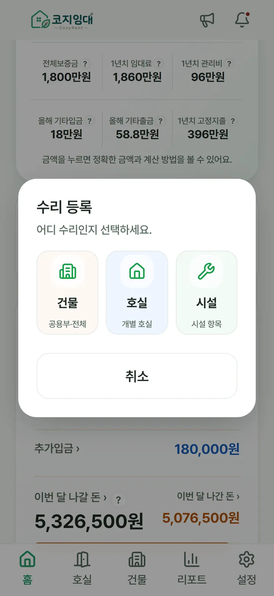
「수리 등록」 창 — 「건물」 · 「호실」 · 「시설」
「건물」(「공용부·전체」) — 복도·계단·외벽처럼 공용부나 건물 전체의 수리입니다. 건물 수리 화면이 바로 열립니다(8.2 건물 수리 기록하기).
「호실」(「개별 호실」) — 호실 선택 창이 열립니다. 「접수」·「진행중」 수리가 있는 호실에는 「수리중」 표시가 붙고, 입금등록과 달리 공실과 주인세대도 고를 수 있습니다. 호실을 누르면 그 호실의 수리 화면이 열립니다(8.1 호실 수리 기록하기).
「시설」(「시설 항목」) — 「시설 수리 등록」 창에 등록된 시설(폐기한 시설 제외)이 나옵니다. 시설을 누르면 그 시설이 지정된 건물 수리 화면이 열립니다(9.2 시설 상세에서 할 일). 등록된 시설이 없으면 「시설 추가하러 가기」로 시설 관리 화면에 가서 시설부터 등록합니다. 「시설 수리 등록」 창의 「뒤로」는 앞 단계로 돌아가지 않고 수리등록을 모두 닫고 홈으로 돌아가니, 다시 하려면 「수리등록」부터 누릅니다.
열린 화면에서 수리 내용을 넣고 저장합니다. 홈에서 시작해 시설 수리를 저장하면 건물 수리 목록에 머무는데, 이 목록에는 시설 수리가 보이지 않습니다. 저장은 된 것이니 건물 탭 → 「시설 관리」에서 그 시설을 열어 등록한 수리를 봅니다(고급 6.6).
2.5 공지사항 보기
코지임대 운영자가 앱 업데이트나 사용 방법 같은 소식을 알리는 곳입니다. 내 건물 자료로 만들어지는 알림(소식함)과 별개여서, 공지는 소식함에 쌓이지 않고 휴대폰 알림으로도 오지 않습니다. 공지는 세 곳에서 봅니다.
「공지사항」 목록 — 지금까지 올라온 중요 공지 모음
중요 공지 창 — 로그인한 뒤 홈에 처음 들어올 때 뜨는 창
한 줄 공지 — 제목줄 바로 아래에 흐르는 짧은 문구
무료체험·구독이 끝나 화면을 확인만 할 수 있는 동안에도 공지는 그대로 볼 수 있습니다.
들어가는 곳 — 제목줄 오른쪽, 알림 종 바로 왼쪽의 확성기 아이콘(하단 탭 다섯 화면)
제목줄의 확성기 아이콘(표시된 곳)과 그 아래 한 줄 공지
확성기 아이콘을 누르면 「공지사항」 목록이 열립니다. 이 아이콘은 홈·호실·건물·리포트·설정 탭 화면의 제목줄에만 있고, 상세·입력 화면에는 없습니다.
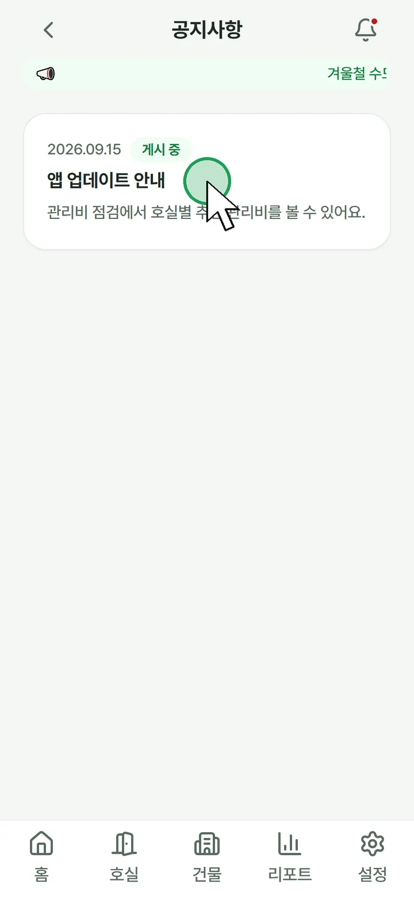
「공지사항」 목록(예시: 「앱 업데이트 안내」 · 「게시 중」). 표시된 곳은 공지 제목입니다.
목록에는 중요 공지만 최신순으로 나오고, 게시 기간이 끝난 공지도 남아 있습니다. 지금 게시 중인 공지에는 「게시 중」 배지가 붙습니다. 한 줄 공지는 이 목록에 없습니다.
읽을 공지의 제목을 누르면 전체 글이 열립니다.
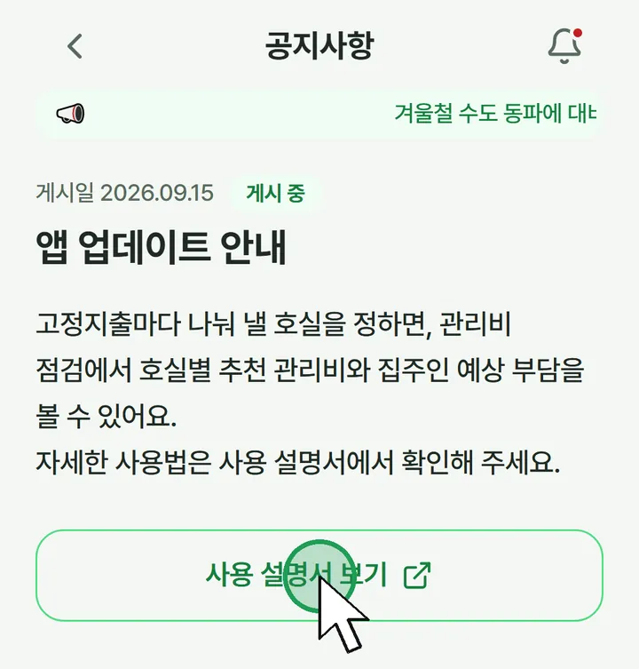
공지 전체 글 — 맨 아래 링크 버튼 「사용 설명서 보기」(표시된 곳)
링크가 붙은 공지는 맨 아래 링크 버튼을 누르면 휴대폰의 인터넷 브라우저 등 다른 화면에서 열립니다.
목록에 「공지사항을 불러오지 못했어요. 잠시 후 다시 확인해 주세요.」가 보이면 인터넷 연결 등의 이유로 공지를 받아 오지 못한 것입니다. 내 건물 자료와는 관계없으니 나중에 다시 엽니다.
한 줄 공지 — 운영자가 일반 공지를 올려 둔 동안 제목줄 바로 아래에 짧은 문구가 흐릅니다(맨 위 그림). 누를 수 없고 보기만 합니다. 게시 기간이 끝나면 저절로 사라지고, 「공지사항」 목록에도 남지 않습니다.
홈에 중요 공지 창이 뜰 때
중요 공지가 올라와 있으면 로그인한 뒤(앱을 열 때 자동으로 로그인되는 경우 포함) 홈에 처음 들어올 때 창이 뜹니다.
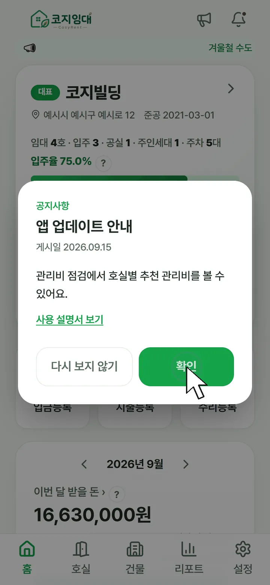
홈에 뜬 중요 공지 창(예시: 「앱 업데이트 안내」). 표시된 곳은 「확인」입니다.
링크를 붙인 공지는 요약 아래의 링크(예시: 「사용 설명서 보기」)를 누르면 휴대폰의 인터넷 브라우저 등 다른 화면에서 열립니다. 내용을 읽고 아래 중 하나로 닫습니다.
누르는 곳
결과
「확인」
창이 닫히고 그 공지의 전체 글이 열립니다. 다음에 앱을 새로 실행하면 다시 뜰 수 있습니다
「다시 보지 않기」
창이 닫히고, 이 계정에서는 그 공지가 다시 자동으로 뜨지 않습니다(앱을 다시 설치하거나 휴대폰을 바꿔도 같습니다). 「공지사항」 목록에는 그대로 남습니다
휴대폰 뒤로가기
창만 닫힙니다. 이번 실행 동안에는 다시 뜨지 않고, 앱을 새로 실행하면 다시 뜰 수 있습니다
게시 중인 중요 공지가 여러 건이어도 창에는 한 건만 뜹니다. 나머지는 「공지사항」 목록에서 봅니다. 꼭 필요한 업데이트가 있는 동안에는 이 창이 뜨지 않습니다(14.5 꼭 필요한 업데이트가 있을 때).
3. 건물·층·호실 관리하기
코지임대는 건물 단위로 호실·계약·입출금·고정지출을 관리합니다. 건물이 여러 개면 볼 건물을 골라 바꾸고, 건물마다 층과 호실을 정리한 뒤 호실별로 계약을 등록하거나 집주인이 쓰는 호실을 주인세대로 정합니다.
3.1 건물 고르고 추가하기
건물이 여러 개면 홈에서 볼 건물을 골라 바꿉니다. 건물을 고르면 화면에서 보는 대상만 바뀌고 자료는 바뀌지 않습니다. 같은 창에서 앱을 열 때 먼저 보일 대표 건물을 정하고, 새 건물을 추가합니다.
들어가는 곳 — 하단 「홈」 탭 → 맨 위 건물 이름(또는 오른쪽 끝 ›)
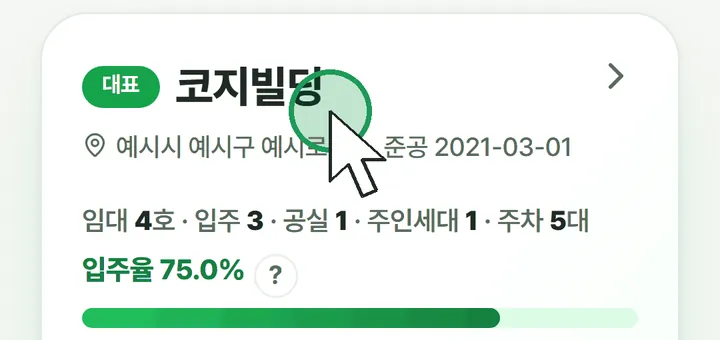
홈 맨 위의 건물 이름(표시된 곳)과 오른쪽 끝 ›
건물 이름이나 ›를 누르면 아래에서 「내 건물 선택」 창이 올라옵니다.
볼 건물의 이름이나 주소를 누릅니다.
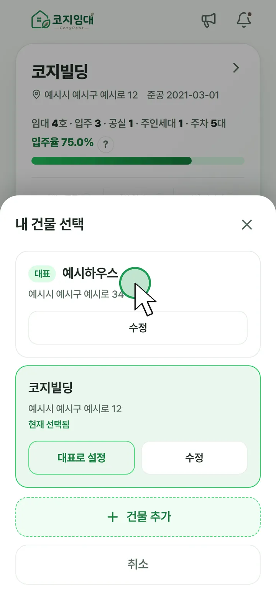
「내 건물 선택」 창 — 표시된 곳이 다른 건물(예시하우스), 초록 테두리가 지금 보고 있는 코지빌딩
홈의 숫자와 「호실」·「건물」 탭, 리포트에서 「이 건물」을 골랐을 때의 숫자가 고른 건물을 따릅니다.
앱을 열 때 먼저 보일 건물을 정하려면 그 건물 아래 「대표로 설정」을 누르고, 그 건물 이름 앞에 「대표」가 붙었는지 확인합니다.
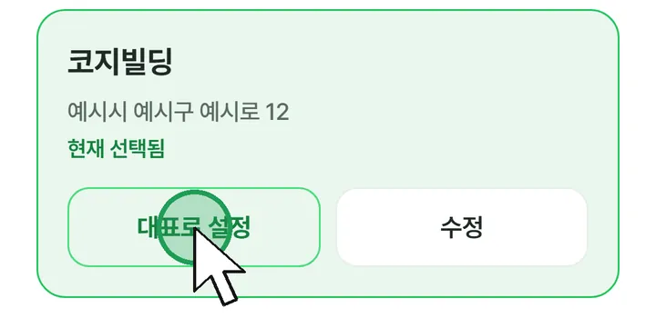
코지빌딩 아래의 「대표로 설정」(표시된 곳)
「대표로 설정」은 대표가 아닌 건물에만 보입니다.
대표 건물은 앱을 다시 열 때 처음 보이는 건물입니다. 건물을 지운 뒤에도 남은 건물 가운데 대표 건물이 먼저 골라집니다.
대표로 정해도 지금 보고 있는 건물은 바뀌지 않고 창도 열린 채로 있으니, 그 건물로 바꿔 보려면 이어서 그 건물 이름을 누릅니다.
새 건물을 등록하려면 창 아래 점선 상자의 「+ 건물 추가」를 누릅니다. 넣는 내용은 첫 건물 등록하기와 같습니다.
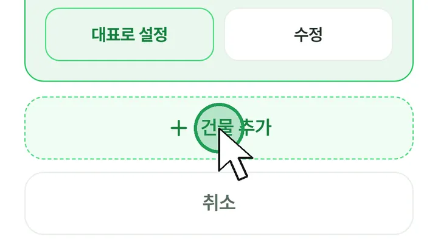
창 아래 점선 상자의 「+ 건물 추가」(표시된 곳)
지금 요금제에서 등록할 수 있는 건물 수를 넘으면 등록 화면 대신 안내창이 열립니다(고급 9.6 등록 한도 안내창). 체험·구독이 끝나 화면을 확인만 할 수 있는 동안에는 이 창에서 건물 바꾸기와 X·창 바깥으로 닫기만 됩니다(고급 9.5).
3.2 건물 탭에서 할 일 찾기
하단 「건물」 탭은 지금 고른 건물을 관리하는 화면입니다. 위쪽 현황판에서 챙겨야 할 일의 개수를 보고, 아래 관리 메뉴로 지출·연락처·시설·수리 화면에 들어갑니다.
들어가는 곳 — 하단 「건물」 탭
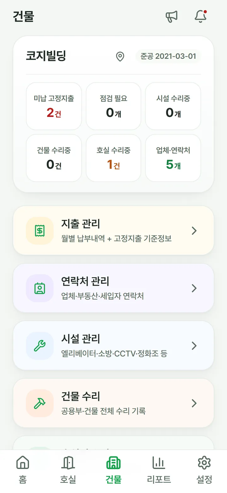
「건물」 탭 처음 화면 — 맨 위 건물 정보 줄, 현황판 6칸, 관리 메뉴
맨 위 줄에는 건물 이름, 핀 모양 주소 아이콘, 준공일(예시: 「준공 2021-03-01」)이 보입니다. 핀을 누르면 전체 주소가 말풍선으로 열립니다. 주소·준공일은 넣었을 때만 보이고, 이 줄에서는 고칠 수 없습니다(3.3 건물 정보 고치기).
현황판에서 확인할 칸을 누르면 그 칸에 해당하는 항목만 걸러진 목록이 열립니다.
칸
세는 것
누르면 열리는 화면
「미납 고정지출 N건」
이번 달 아직 「납부확인」하지 않은 고정지출
「지출 관리」(미납 항목만)
「점검 필요 N개」
예전 방식으로 점검 주기를 정해 둔 시설 가운데 점검일이 지났거나 7일 안에 다가온 시설
「시설 관리」(점검 필요 시설만)
「시설 수리중 N개」
수리가 진행 중인 시설
「시설 관리」(수리 중 시설만)
「건물 수리중 N건」
진행 중인 건물(복도·계단처럼 함께 쓰는 공용부) 수리
「건물 수리」(「수리중」만)
「호실 수리중 N건」
진행 중인 호실 수리
「호실별 수리」(「수리중」만)
「업체·연락처 N개」
등록된 연락처
「연락처 관리」
숫자는 각 화면의 기록으로 앱이 셉니다. 고정지출을 낸 뒤 「납부확인」으로 기록하거나(7.2 낸 고정지출 기록하기), 끝난 수리를 「수리완료」로 바꿔야(8. 수리 기록하기) 숫자가 줄어듭니다.
「점검·관리 등록/조회」로 새로 만든 점검·검사·교육 일정은 「점검 필요」에 세지 않습니다. 「점검 필요 0개」여도 다가오는 일정이 있을 수 있으니 9.3 점검 일정 등록하고 완료하기의 전체 관리일정과 알림으로 확인합니다.
건물에 층·호실·상가를 더하거나, 방금 더한 것을 지웁니다. 편집하는 동안 바꾼 내용은 화면에만 쌓이고, 마지막에 「완료」 → 「저장하기」를 눌러야 실제 건물 정보에 반영됩니다. 호실 이름(호수) 바꾸기와 주인세대 지정은 이 화면이 아니라 호실 상세에서 합니다(3.6 · 3.7).
들어가는 곳 — 하단 「호실」 탭 → 「층추가」·「상가추가」·「호실추가」 중 하려는 일
세 버튼 중 하나를 누르면 편집 상태가 되고 위에 「취소」·「완료」가 나타납니다. 위쪽 「취소」는 확인 없이 편집 중 바꾼 내용을 모두 버리는 버튼이니, 방금 넣은 것 하나만 지우려면 그 항목의 ⊖를 누릅니다(3단계). 편집 상태에서는 호실을 눌러도 상세 화면으로 가지 않습니다. 버튼을 바꿔 눌러 가며 이어서 편집할 수 있습니다.
⚠️ 저장된 층·호실의 ⊖는 지우기입니다 — 편집 상태에서는 이미 저장된 층·호실·상가 옆에도 빨간 ⊖가 보입니다(아래 그림의 1층·2층). 누르면 확인 창이 뜨고, 창에서 「삭제」를 눌러도 「완료」 → 「저장하기」를 누르기 전에는 실제로 지워지지 않습니다. 그 전에 위쪽 「취소」를 누르면 되살아납니다. 아무 기록도 없을 때만 지울 수 있고, 「저장하기」로 지운 뒤에는 되돌릴 수 없습니다. 조건과 방법은 고급 7.2 저장된 층·호실을 지울 때에 있습니다.
층 추가 — 「층추가」를 누르면 「어떤 층을 추가할까요?」가 열립니다. 「지상층 추가」나 「지하층 추가」를 누릅니다.
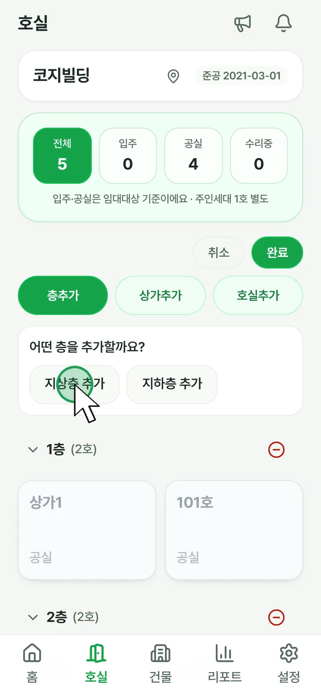
「층추가」를 누른 편집 상태 — 「지상층 추가」(표시된 곳)와 「지하층 추가」
「지상층 추가」는 지금 가장 높은 층의 다음 층(예시: 3층까지 있으면 4층), 「지하층 추가」는 「지하1층」·「지하2층」… 순서로 만듭니다. 새 층에 보이는 「아직 호실이 없어요. 수정에서 추가하세요.」는 이 화면의 「호실추가」(상가는 「상가추가」)로 그 층에 호실을 넣으라는 뜻입니다.
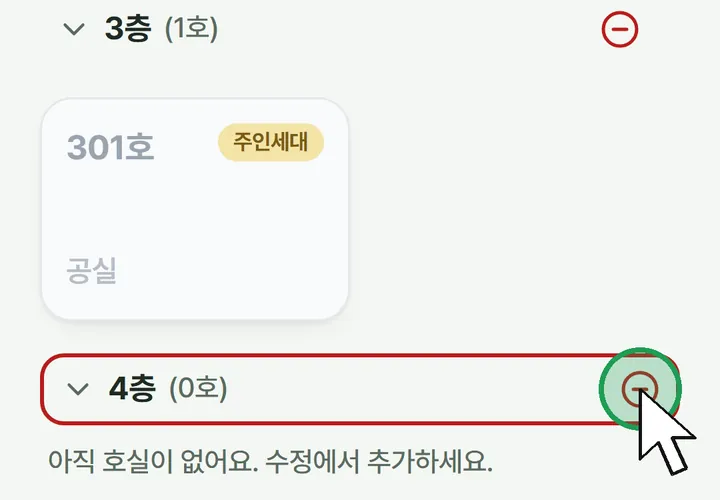
새로 생긴 4층(빨간 테두리)과 그 ⊖(표시된 곳). 위의 3층처럼 이미 저장된 층에도 ⊖가 보입니다.
호실·상가 추가 — 「호실추가」를 누르면 「어느 층에 호실을 추가할까요?」(「상가추가」는 「어느 층에 상가를 추가할까요?」)가 열립니다. 호실을 넣을 층 버튼을 누릅니다.
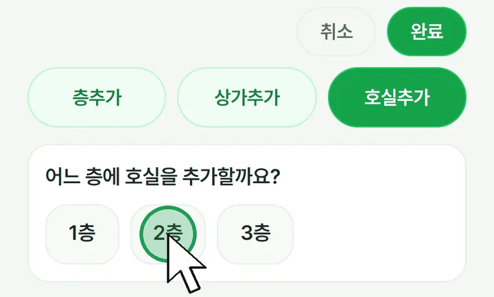
「호실추가」를 누른 뒤 — 「2층」(표시된 곳). 그림은 앞의 4층을 ⊖로 지운 뒤라 층 버튼이 1층~3층입니다.
층 버튼을 누를 때마다 그 층에 호실이 하나씩 바로 생깁니다. 이름은 그 층의 가장 큰 호수 다음 번호입니다(1층 → 101호·102호…, 지하1층 → B101호…). 상가는 층과 관계없이 건물 전체에서 「상가1」·「상가2」… 순서로 붙고, 가운데 상가를 지워도 빈 번호를 다시 채우지 않습니다(상가1·상가3이 있으면 다음은 상가4). 층이 하나도 없으면 먼저 층을 추가합니다.
방금 추가한 것 지우기(⊖) — 새로 생긴 층·호실은 빨간 테두리로 보입니다. 잘못 넣었으면 그 항목의 ⊖(층은 층 이름 줄 오른쪽, 호실은 호실 오른쪽 위)를 누릅니다. 확인 없이 바로 사라집니다.
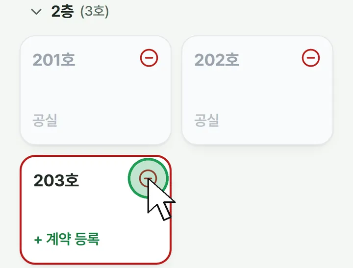
2층에 생긴 203호와 그 ⊖(표시된 곳)
⊖는 지금 편집 상태와 같은 종류에만 보입니다(「층추가」는 층, 「호실추가」는 일반 호실, 「상가추가」는 상가). 빨간 테두리가 없는 항목은 이미 저장된 것이라, 그 ⊖는 이 절 첫머리의 ⚠️처럼 지우기입니다.
⚠️ 주의 — 「완료」는 저장 확인 창을 여는 버튼입니다. 창에서 「저장하기」까지 눌러야 저장됩니다.
편집을 마쳤으면 위쪽 「완료」를 누릅니다.
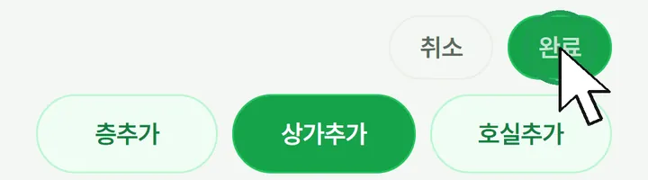
편집 상태 위쪽의 「완료」(표시된 곳)
「호실 구조를 저장할까요?」 창에서 「저장하기」를 누릅니다.
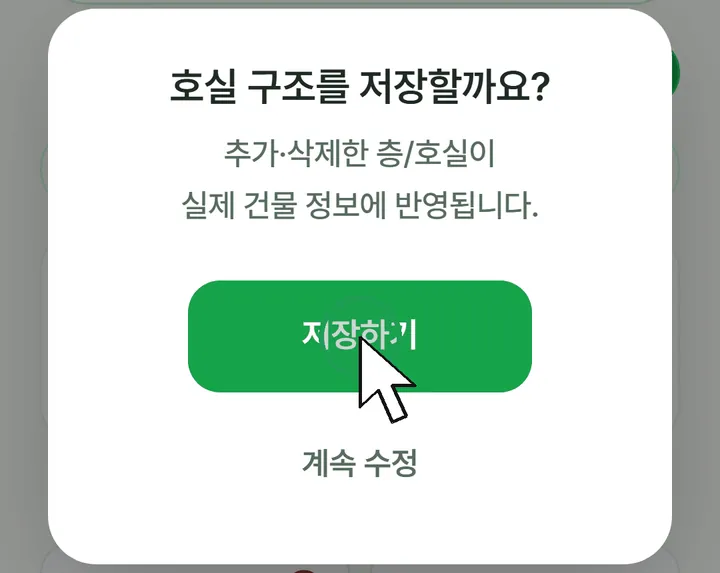
「호실 구조를 저장할까요?」 창 — 「저장하기」(표시된 곳)
편집 상태가 끝나면(위쪽 「취소」·「완료」가 사라짐) 목록의 층·호실이 바꾼 대로인지 확인합니다. 저장하지 못했다는 안내가 뜨면 고급 7.6을 봅니다.
요금제의 호실 등록 한도에 닿으면 호실이 추가되지 않고 「현재 요금제의 호실 등록 한도에 도달했어요.」가 뜹니다. 한도는 다른 건물과 아직 저장하지 않은 호실까지 합쳐 셉니다(고급 9.6).
3.6 호실 상세에서 할 일
호실을 누르면 열리는 호실 상세는 호실 하나에 관한 일의 출발점입니다. 여기서 호실 이름과 집구조를 정리하고, 계약을 등록하거나 열고, 수리와 업체 연락처로 갑니다.
들어가는 곳 — 하단 「호실」 탭 → 호실
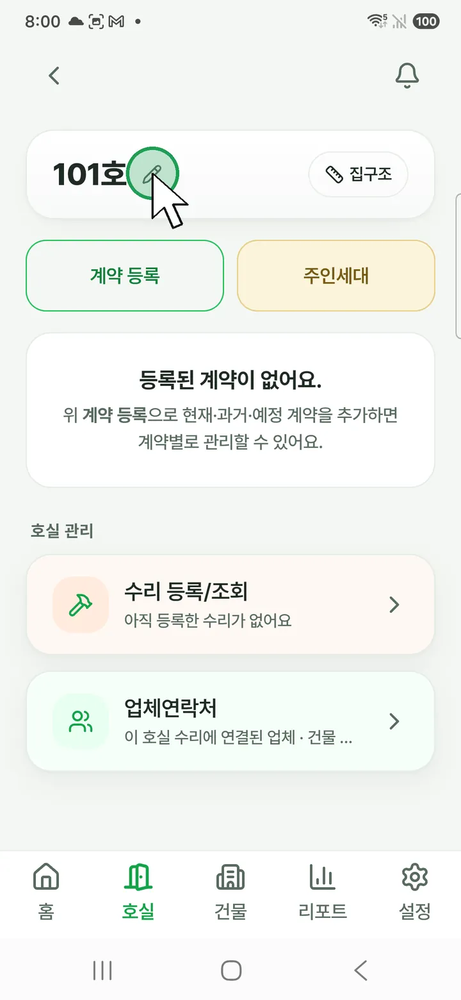
계약이 없는 101호의 호실 상세 — 표시된 곳이 ✎(호실명 수정)
위에서부터 호실 이름과 ✎, 「집구조」, 「계약 등록」·「주인세대」, 계약 목록, 아래쪽 「호실 관리」의 「수리 등록/조회」·「업체연락처」입니다. 「주인세대」는 3.7 주인세대 지정하기에서 씁니다.
호실 이름 바꾸기 — 호실 이름 옆 ✎를 누르면 새 창 「호실명 수정」이 열립니다. 칸에 새 이름(예시: 101호 A)을 넣고 「저장」을 누릅니다.
저장하면 호실 상세·「호실」 탭·홈 등 모든 화면의 이름이 바뀝니다. 화면에 보이는 이름만 바뀌고 계약·입출금·수리 기록은 그대로입니다. 칸을 비우고 저장하면 앱이 붙인 기본 이름(예시: 101호)으로 돌아갑니다.
⚠️ 집구조는 누르는 즉시 저장됩니다 — 이 창에는 「저장」이 없고, 누른 항목은 초록으로 바뀌며 바로 저장됩니다. 같은 항목을 다시 누르면 선택이 풀립니다.
집구조 정하기 — 호실 이름 오른쪽의 「집구조」를 누르면 새 창 「호실 구조 등록」(이미 정했으면 「호실 구조 수정」)이 열립니다. 「구조」(원룸·1.5룸·투룸·쓰리룸 이상)와 「화장실」(1개·2개 이상)에서 하나씩, 「특징」(복층·테라스·다용도실·발코니)에서 해당하는 것을 모두 누른 뒤 「완료」를 누릅니다.
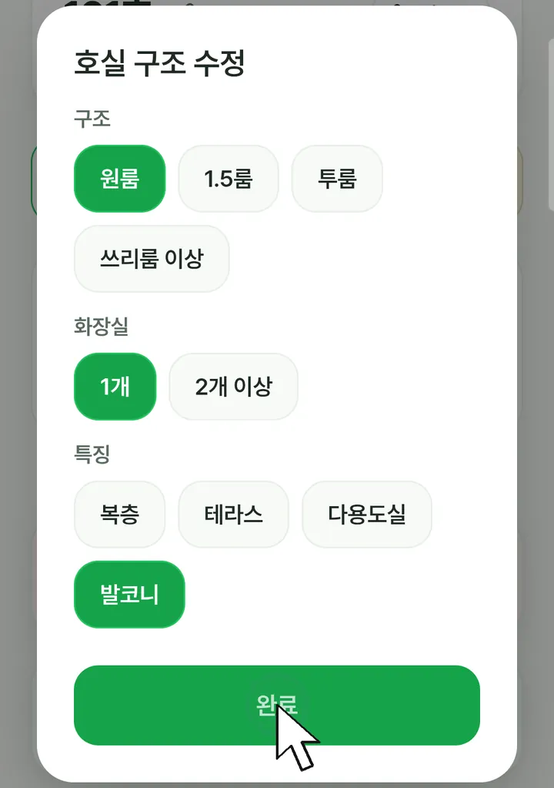
원룸 · 1개 · 발코니를 누른 뒤 — 이미 저장되어 창 제목이 「호실 구조 수정」으로 바뀌었고, 「완료」(표시된 곳)는 창을 닫습니다
호실 이름 아래 「호실정보」 줄(예시: 원룸 · 화장실 1개 · 발코니)이 고른 대로인지 확인합니다. 바꾸려면 「집구조」를 다시 눌러 고릅니다.
「호실정보 원룸 · 화장실 1개 · 발코니」가 생긴 101호 — 표시된 곳은 「계약 등록」
계약 등록 — 「계약 등록」을 누르면 새 계약 화면이 열립니다. 입력 방법은 4.1 새 계약 등록하기에 있습니다. 호실 상세에서 계약을 새로 만드는 유일한 버튼이며, 주인세대 호실에도 보입니다.
계약 열기 — 계약이 있으면 「계약 등록」·「주인세대」 아래에 계약이 나열됩니다. 열 계약(예: 「현재계약」이 붙은 계약)을 누르면 그 계약의 「계약」 화면이 열립니다(4.2 계약 화면 둘러보기).
주인세대에서 직접 쓴 관리 지출(예: 정수기 필터 교체)이나 그 밖의 입금을 기록하고, 특이사항을 메모로 남깁니다. 주인세대는 월세·관리비·보증금 받을 돈을 계산하지 않으므로 이 화면에는 임대료 항목이 없습니다.
들어가는 곳 — 하단 「호실」 탭 → 주인세대 호실 → 노란 「주인세대」 항목 → 「입출금(지출·수리비) 등록/조회」
「주인세대 입출금관리」 처음 화면(기록이 없는 달)
월 표시 양옆의 ‹ ›로 볼 달을 엽니다. 기록한 입출금은 등록 창에서 고른 날짜(처음에는 오늘)가 속한 달에 보입니다(열어 둔 달과 상관없음).
「+ 기타 입출금 등록」을 누르면 새 창 「기타 입출금 등록」이 열립니다. 「구분」에서 「입금」이나 「출금」을 고르고, 날짜(처음에는 오늘)·「금액」·「분류」·「비고/메모」를 채운 뒤 「등록」을 누릅니다.
「출금」 · 2026-09-16 · 45,000원 · 「기타지출」 · 정수기 필터 교체를 넣은 뒤 — 「등록」(표시된 곳)
「분류」에는 출금이면 「기타지출」, 입금이면 「기타입금」이 미리 들어 있고, 「변경」으로 바꿉니다. 칸별 입력 방법과 새 분류 추가는 5.4 계약 밖 돈 기록하기와 같습니다. 분류를 수리·유지보수 쪽으로 고르면, 같은 비용을 「수리 등록/조회」에도 기록했을 때 합계에 두 번 들어갈 수 있다는 안내가 뜹니다.
목록에 등록한 줄의 날짜·금액이 맞는지 확인합니다. 분류 「기타지출」로 등록한 출금은 「추가지출」로 보입니다.
등록한 뒤 — 「추가지출」 · − 45,000원 · 2026-09-16 · 정수기 필터 교체
여기서 기록한 출금은 홈과 리포트의 지출 집계에 들어가고, 임대 받을 돈 계산에는 들어가지 않습니다.
⚠️ 주의 — 지운 입출금 기록은 되돌릴 수 없습니다.
고치려면 그 줄의 금액·날짜 부분(예시: 「− 45,000원」)을, 지우려면 오른쪽 휴지통을 누릅니다. 방법은 5.5 잘못 넣은 기록 고치기·지우기와 같고, 지운 기록은 목록과 홈·리포트 집계에서 함께 빠집니다.
메모 남기기
「주인세대」 화면에서 「메모 등록/조회」를 누르면 「메모」 화면이 열립니다. 쓰고 고치고 지우는 방법은 4.9 계약 메모 남기기와 같습니다. 주인세대 메모와 계약 메모는 서로 섞이지 않아, 한쪽 화면에서 다른 쪽 메모는 보이지 않습니다.
「월 관리비」는 계약서의 매달 관리비입니다(없으면 비워 둠). 매달 받으면 「월납」, 1년치를 한 번에 받으면 「년납」을 고릅니다. 「년납」을 고르면 칸 이름이 「월 기준 관리비」로 바뀌는데, 이 칸에도 한 달 기준 금액을 넣고 아래 「연간 납부액」(12개월분)이 계약서의 1년 금액과 같은지 확인합니다.
중개수수료를 냈다면 「중개수수료」 칸에 넣습니다(선택). 계약 시작일 날짜로 출금이 자동 기록됩니다.
「납부일」을 고릅니다. 「계약일기준」은 입주일 전날을 매달 납부일로 삼습니다(15일 입주 → 매달 14일, 입주한 달만 15일 · 1일 입주 → 매달 1일). 매달 받기로 한 날이 따로 있으면 그 날을 누르고, 목록에 없으면 「직접입력」에 숫자를 넣습니다. 고른 날이 매달 입금 예정일이 됩니다.
처음에는 「계약일기준」이 골라져 있습니다. 표시된 곳은 「5일」을 고르는 예입니다.
필요할 때만 넣는 칸 — 비워 두어도 저장됩니다.
「중개 부동산」(계약자 아래): 「부동산 선택」 → 부동산 고르기 → 「이 부동산 선택」. 목록에 없으면 「+ 새 부동산 등록」.
「관리비 포함사항」: 관리비에 포함된 항목을 켭니다(관리비를 넣었을 때만 · 목록에 없으면 「+ 기타입력」).
「상가 권리금」(상가 호실만): 참고 기록이며 받을 돈 계산에는 들어가지 않습니다.
「차량 · 반려동물」 · 「특약 메모」: 계약서 내용을 적어 둡니다.
⚠️ 시작일이 지난 계약 — 시작일이 지난달이거나 그보다 앞이면, 저장하는 순간 지난달까지의 보증금·월세(년세)·관리비가 받은 것으로(「입금완료」) 기록됩니다. 저장한 뒤 지난 입금 기록 확인하기로 실제 내역과 맞춥니다.
맨 아래 「저장」을 누르고, 「저장하시겠습니까?」 창에서 요약을 확인한 뒤 「저장」을 누릅니다.
요약 아래 노란 상자가 관리비 확인 경고입니다. 「저장」은 표시된 곳입니다.
「관리비를 확인해주세요.」는 입력한 관리비가 리포트의 추천 관리비보다 낮을 때(관리비를 비워 둔 계약 포함) 나오는 참고 경고입니다. 「저장」을 누르면 입력한 금액 그대로 저장되고, 앱이 관리비를 바꾸지 않습니다.
호실 상세로 돌아오면 새 계약의 기간·금액이 맞는지 확인합니다. 시작 전 계약은 「미래계약」, 이미 끝난 계약은 「과거계약」으로 보입니다.
저장한 뒤의 호실 상세 — 표시된 곳이 새 계약입니다.
계약서 사진은 이때부터 붙일 수 있습니다(계약서 사진 남기기). Android 휴대폰에서는 새 계약자를 휴대폰 연락처에 저장할지 묻는 안내가 뜰 수 있습니다(휴대폰 연락처에 저장하기).
저장한 뒤 — 지난 입금 기록 확인하기
지난달이나 그 전에 시작한 계약만 해당합니다. 저장하는 순간 앱이 계약 시작월부터 지난달까지를 받은 것으로 자동 등록합니다(「입금완료」). 년세와 년납 관리비는 해마다 시작한 달에만 등록합니다. 앱이 만든 기록일 뿐이니, 통장 등 실제로 받은 내역과 한 달씩 비교합니다.
아래 예시는 201호 계약(이철수 · 2025-10-01 시작 · 보증금 3,000,000원 · 월세 450,000원 · 관리비 30,000원 월납)을 예시 기준일 2026-11-07(설명을 위해 정한 가상의 오늘)에 등록한 경우입니다. 앱은 2025년 10월부터 2026년 10월까지의 월세·관리비와 2025년 10월의 보증금을 「입금완료」로 등록합니다. 실제로는 계약을 저장한 날을 기준으로 기간이 정해집니다. 앱이 만든 기록이 통장 등 실제 내역과 다를 때만 실제 금액·날짜로 고칩니다.
입출금 내역 열기
저장한 뒤 돌아온 호실 상세에서 등록한 계약(예시: 「현재계약」 · 이철수)을 누릅니다. 나중에 확인할 때는 하단 「호실」 탭 → 그 호실로 들어갑니다.
201호 호실 상세
「계약」 화면이 열립니다. 아래로 내립니다.
계약을 누른 직후의 「계약」 화면
아래쪽 메뉴에서 「임대료 입출금 등록/조회」를 누릅니다.
「계약」 화면 아래쪽
「입출금 내역」이 열리고, 처음에는 이번 달(예시: 2026년 11월)이 보입니다. 이번 달은 자동으로 등록되지 않아 「입금확인」 버튼이 보이며, 돈을 받은 뒤에 기록합니다.
「입출금 내역」 처음 화면(2026년 11월)
지난달로 옮기기
날짜 왼쪽의 ‹(이전 달)를 누릅니다. 왼쪽 위 ‹는 이 화면을 나가는 버튼이니 누르지 않습니다.
표시된 곳이 이전 달 ‹
한 달 전(예시: 2026년 10월)이 열립니다. 「입금확인」을 누른 적이 없는데 「입금완료」로 보이면 앱이 자동으로 등록한 달입니다.
이전 달을 누른 뒤(2026년 10월)
실제 내역과 비교하기
아래로 내려 목록을 봅니다. 줄마다 금액·날짜와 「앱 자동 생성」이 적혀 있습니다. 목록의 「월세」 줄은 위 「임대료」 칸의 입금 기록입니다. 통장 등 실제로 받은 내역과 금액·날짜를 비교합니다.
2026년 10월 목록
같으면 아무것도 누르지 않습니다. 이전 달 ‹로 그 전 달을 열어 같은 방법으로 비교합니다.
다를 때만 아래에서 맞는 경우를 골라 고친 뒤, 계약이 시작된 달(이전 달 ‹가 흐려지는 달)까지 계속 비교합니다. 아래 예시는 ‹로 넘기는 순서(10월 → 9월 → 8월)입니다.
금액만 다를 때 — 예: 2026년 10월 관리비를 25,000원만 받음
관리비 줄의 금액·날짜 부분을 누릅니다(오른쪽 끝 휴지통 말고).
2026년 10월 목록의 관리비 줄
새 창 「입금 수정」이 열립니다. 「받은 돈」 칸에 있는 금액(예시: 30,000)을 지우고 실제로 받은 금액(예시: 25,000)을 넣은 뒤 「수정」을 누릅니다. 이 창에서는 금액만 고칠 수 있고 날짜(처리일)는 바꿀 수 없습니다.
새 창 「입금 수정」 — 받은 돈을 고친 뒤(예시: 25,000)
위로 올려 관리비 칸의 입금액과 못 받은 돈이 맞는지 확인합니다(예시: 25,000원 · 5,000원). 남은 돈을 나중에 받으면 그때 「남은 금액 입금확인」으로 기록합니다.
수정한 뒤의 2026년 10월
받은 날짜가 다를 때 — 예: 2026년 9월 월세를 9월 5일에 받음
「입금 수정」 창에서는 날짜를 바꿀 수 없으므로, 그 줄을 지우고 실제로 받은 날짜로 다시 등록합니다.
⚠️ 삭제한 입출금 내역은 되돌릴 수 없습니다. 지운 뒤에는 바로 다시 등록합니다. 다시 등록하기 전까지 그 달은 못 받은 돈으로 계산됩니다.
이전 달 ‹로 2026년 9월을 열고, 아래로 내려 목록의 월세 줄 오른쪽 끝 휴지통을 누릅니다.
2026년 9월 목록의 월세 줄
「정말 삭제할까요?」 창에서 「삭제」를 누릅니다.
「정말 삭제할까요?」 창
위로 올리면 임대료 칸에 못 받은 돈이 생기고(예시: 450,000원) 「입금확인」 버튼이 다시 보입니다. 「입금확인」을 누릅니다.
월세 줄을 지운 뒤의 2026년 9월
새 창 「임대료 입금확인」이 열립니다. 「입금 금액」에는 받을 금액(예시: 450,000)이 들어 있습니다. 받은 금액도 다르면 실제로 받은 금액으로 바꾸고, 「실제 입금일」 칸(처음에는 오늘 날짜)을 누릅니다.
새 창 「임대료 입금확인」(처음 상태)
달력이 오늘이 있는 달(예시: 2026년 11월)로 열립니다. 아래 줄(달)의 ‹를 눌러 실제로 받은 달로 옮깁니다(예시: 두 번 눌러 9월).
「실제 입금일」 달력 — 위 줄은 해, 아래 줄은 달
그 달이 보이면 실제로 받은 날을 누릅니다(예시: 5).
받은 달로 옮긴 달력(예시: 2026년 9월 · 표시된 날 5)
「실제 입금일」이 실제로 받은 날짜인지(예시: 2026-09-05) 보고 「입금 등록」을 누릅니다. 다르면 칸을 다시 눌러 고릅니다.
새 창 「임대료 입금확인」 — 날짜를 고른 뒤(예시: 2026-09-05)
아래로 내려 목록의 월세 줄이 고른 날짜와 「사용자 등록」으로 바뀌었는지 확인합니다(예시: 「2026-09-05 · 사용자 등록」).
다시 등록한 뒤의 2026년 9월 목록
받지 않은 달이 「입금완료」로 등록되었을 때 — 예: 2026년 8월 월세를 받지 못함
⚠️ 삭제한 입출금 내역은 되돌릴 수 없습니다. 통장 등으로 그 달에 받지 않은 것이 맞는지 먼저 확인합니다.
이전 달 ‹로 2026년 8월을 열고, 아래로 내려 목록에서 받지 않은 줄(월세)의 오른쪽 끝 휴지통을 누릅니다.
2026년 8월 목록의 월세 줄
「정말 삭제할까요?」 창에서 「삭제」를 누릅니다.
「정말 삭제할까요?」 창
위로 올리면 임대료 칸에 못 받은 돈(예시: 450,000원)과 「입금확인」 버튼이 다시 보입니다. 나중에 받으면 이 버튼으로 기록합니다.
삭제한 뒤의 2026년 8월
홈의 「오늘 확인할 일」에도 이 달이 못 받은 돈으로 나타납니다.
홈 「오늘 확인할 일」의 한 줄
계약이 시작된 달의 보증금 확인하기
그 사이 달도 같은 방법으로 비교하며, 이전 달 ‹를 눌러 계약이 시작된 달(예시: 2025년 10월)까지 갑니다. 이 달에서는 이전 달 ‹가 흐려져 더 앞으로 가지 않습니다. 맨 위 「보증금」 칸에 앱이 자동으로 등록한 보증금이 「입금완료」로 보입니다.
201호 「입출금 내역」 2025년 10월(계약이 시작된 달)
아래로 내려 목록 맨 위 「보증금」 줄의 금액과 날짜(예시: 3,000,000원 · 2025-10-01)를 실제로 받은 내역과 비교합니다. 같으면 아무것도 누르지 않습니다.
2025년 10월 목록 — 맨 위가 「보증금」 줄
같은 달의 월세·관리비 줄도 같은 방법으로 비교하고, 다르면 앞의 금액만 다를 때 · 받은 날짜가 다를 때 · 받지 않은 달이 「입금완료」로 등록되었을 때 방법으로 고칩니다.
보증금 금액이 다를 때(나눠 받은 경우 등) — 이 설명서는 고치는 방법을 안내하지 않습니다. 기준이 정해질 때까지 그 줄은 지우지 말고 그대로 둡니다.
보증금을 한 번에 다 받았고 날짜만 다를 때 — 예: 2025년 10월 3일에 받음
⚠️ 삭제한 입출금 내역은 되돌릴 수 없습니다. 보증금 줄을 지운 뒤에는 바로 다시 등록합니다.
보증금 줄 오른쪽 끝 휴지통을 누릅니다.
2025년 10월 목록의 보증금 줄
「정말 삭제할까요?」 창에서 「삭제」를 누릅니다.
「정말 삭제할까요?」 창
위로 올리면 보증금 칸에 「입금확인」이 다시 보입니다. 「입금확인」을 누릅니다.
보증금 줄을 지운 뒤의 2025년 10월
새 창 「보증금 입금확인」이 열립니다. 「입금 금액」(받을 보증금 · 예시: 3,000,000)은 그대로 두고 「실제 입금일」 칸(처음에는 오늘 날짜)을 누릅니다.
새 창 「보증금 입금확인」(처음 상태)
달력이 오늘이 있는 달(예시: 2026년 11월)로 열립니다. 위 줄(해)의 ‹와 아래 줄(달)의 ‹로 실제로 받은 해·달이 보일 때까지 옮깁니다(예시: 한 번씩 눌러 2025년 10월).
「실제 입금일」 달력 — 표시된 곳이 이전 해 ‹와 이전 달 ‹
그 달이 보이면 실제로 받은 날을 누릅니다(예시: 3).
받은 달로 옮긴 달력(예시: 2025년 10월 · 표시된 날 3)
「실제 입금일」이 실제로 받은 날짜인지(예시: 2025-10-03) 보고 「입금 등록」을 누릅니다. 다르면 칸을 다시 눌러 고릅니다.
새 창 「보증금 입금확인」 — 날짜를 고른 뒤(예시: 2025-10-03)
아래로 내려 목록의 보증금 줄이 고른 날짜와 「사용자 등록」으로 바뀌었는지 확인합니다(예시: 「2025-10-03 · 사용자 등록」).
다시 등록한 뒤의 2025년 10월 목록
고치거나 다시 등록한 줄은 「사용자 등록」으로 바뀌고, 나중에 계약 금액을 고쳐도 따라 바뀌지 않습니다. 계약 금액이나 기간을 고치기 전에는 고급 2.2 자동 기록이 실제와 다를 때를 봅니다(기간을 바꿀 때의 규칙 포함). 앱이 자동 기록을 만드는 규칙은 고급 2.1 자동 입금 기록에 있습니다.
호실 상세에서 계약을 누르면 열리는 「계약」 화면은 계약 하나를 다루는 출발점입니다. 여기서 계약 상태와 이번 달 입금 상태를 보고, 계약 정보 고치기·계약변경·계약갱신·퇴실관리와 입주 기록·임차인 정보·입출금·메모로 이동합니다.
들어가는 곳 — 하단 「호실」 탭 → 호실 → 계약
호실 상세에서 열 계약(예시: 「현재계약」)을 누릅니다.
호실 상세의 「현재계약」 칸 — 칸 어디를 눌러도 됩니다.
계약 칸에는 계약 유형·기간·계약자·보증금·월세·관리비와 이번 달 입금 상태가 보입니다. 상가 호실에 권리금을 기록했으면 「현재계약」 칸의 계약자 줄 오른쪽에 권리금(예시: 「권리금 30,000,000원」)이 함께 보입니다.
「계약」 화면이 열립니다. 위쪽 요약 부분에서 이 계약의 상태를 봅니다.
「계약」 화면 처음 모습(예시: 101호 홍길동 계약)
상태 배지 — 「현재계약」·「미래계약」·「과거계약」·「퇴실대기」(종료일이 지났지만 갱신·계약변경도 퇴실확정도 하지 않음) 중 하나입니다. 계약갱신·계약변경으로 만든 계약에는 「계약갱신」·「계약변경」 배지가 함께 붙습니다.
계약 내용 — 계약 유형과 기간, 계약자·연락처, 보증금·월세·관리비입니다. 관리비가 년납이면 「관리비(년납)」으로 보입니다.
이번 달 입금 상태 — 「이번 달 입금 전」·「이번 달 일부 입금」·「이번 달 입금 정상」 같은 상태가 보이고, 납부일이 지난 못 받은 돈이 있으면 그 아래 「미입금」 금액(예시: 「미입금 350,000원」)이 보입니다. 이 금액은 계약 조건과 앱에 기록된 입금으로 앱이 계산한 값입니다. 실제로 받은 돈은 「임대료 입출금 등록/조회」에서 기록해야 반영됩니다(받은 돈 기록하기).
상황 안내 — 이번 달 받을 돈이 남아 있으면 입금 상태 자리에 「입금 예정일 5일」(그 달 납부일이 5일)·「오늘 입금 예정일」이 보이고, 「계약 만료 14일 전」·「2026-10-01 입주 예정」처럼 날짜에 따른 안내도 보입니다(날짜·일수는 예시). 안내별 뜻은 상태·배지 용어에 있습니다.
하려는 일에 맞는 곳을 누릅니다. 요약 부분에서 아래 버튼을 뺀 곳은 어디를 눌러도 「계약 정보」 화면이 열립니다.
미래계약·과거계약·「퇴실대기」 계약도 같은 방법으로 고칩니다. 「퇴실대기」 계약의 종료일을 오늘 이후로 늦추면 다시 「현재계약」이 됩니다. 고쳐도 보증금 반환 기록은 저절로 생기지 않으며, 보증금 정산은 퇴실확정에서 합니다.
저장하면 입금 기록은 어떻게 되나요? — 앱이 자동으로 만든 지난 입금 기록(「앱 자동 생성」)만 새 조건으로 바뀌고, 직접 등록하거나 고친 입금은 그대로 남습니다. 자동 기록이 없던 달(등록한 뒤 지나간 달·직접 지운 달)은 「입금완료」가 되지 않습니다. 앱이 자동으로 기록한 중개수수료 출금은 새 금액·날짜로 맞춰집니다. 자세한 규칙은 고급 2.1에 있습니다.
⚠️ 기간을 바꿀 때 — 시작일·종료일을 바꿔 새 기간 밖에 월세·관리비 기록이 남으면 「입금내역을 다시 생성할까요?」 창이 한 번 더 열립니다. 「입금내역 재생성」을 누르면 새 기간 밖의 기록은 직접 넣은 것도 지워지고, 등록한 뒤 지나간 달도 「입금완료」로 채워집니다. 누르기 전에 고급 2.4를 봅니다.
아래로 내려 「수정」을 누릅니다. 「수정」은 바뀐 항목이 있을 때만 누를 수 있습니다.
「계약 정보」 맨 아래 — 표시된 곳이 「수정」
「수정하시겠습니까?」 창에 바뀐 항목만 이전 값과 새 값으로 보입니다(예시: 중개 부동산을 새로 연결했으면 「없음 → 예시공인중개사」). 맞으면 「수정」을 누릅니다.
「계약」 화면으로 돌아오면 요약 부분에 바뀐 값이 보이는지 확인합니다.
저장하지 않고 나가려 하면 「자료가 변경되었습니다.」 창이 뜨고, 「뒤로가기」를 누르면 바꾼 내용이 저장되지 않습니다(뒤로가기와 저장하지 않고 나가기).
퇴실확정된 계약과 계약변경으로 만든 계약은 금액·기간 같은 핵심 칸이 잠겨 있습니다(고급 1.9).
⚠️ 계약 삭제 — 맨 아래 빨간 「계약 삭제」는 그 계약의 입금 기록·입주 기록·퇴실 정보·수리 기록·임차인 정보·메모·사진(계약서 사진 포함)을 모두 지우며, 되돌릴 수 없습니다. 실제로 있었던 계약을 끝낼 때는 지우지 말고 퇴실확정합니다(고급 1.6 계약을 지울 때).
4.4 계약서 사진 남기기
종이 계약서를 찍어 그 계약에 보관합니다. 새 계약을 입력하는 화면에서는 붙일 수 없고, 계약을 저장한 뒤 「계약 정보」 화면에서 붙입니다.
들어가는 곳 — 하단 「호실」 탭 → 호실 → 계약 → 요약 부분(「계약 정보」) → 아래쪽 「계약서 사진(선택)」
「계약 정보」 화면을 아래로 내려 「계약서 사진(선택)」의 「사진 추가」를 누릅니다.
「계약서 사진(선택)」 — 표시된 곳이 「사진 추가」
⚠️ 주의 — 주민등록번호 뒷자리 같은 민감한 정보는 가린 뒤 찍습니다. 계약서 사진은 백업 파일과 자동 저장에도 함께 담깁니다(자료 지키기).
아래에서 올라오는 창에서 「사진 찍기」 또는 「앨범에서 선택」을 누릅니다. 앨범에서는 여러 장을 한 번에 고를 수 있어 계약서 쪽마다 한 장씩 넣기 편하고, 장수 제한은 없습니다.
표시된 곳은 「앨범에서 선택」
「계약서」 칸에 미리보기가 생기면 저장된 것입니다. 사진은 고르는 즉시 저장되므로 아래 「수정」을 누르지 않아도 됩니다.
계약서 사진 2장을 붙인 뒤(가상 예시 계약서)
미리보기를 누르면 크게 볼 수 있습니다.
지우려면 미리보기 오른쪽 위 「−」나 크게 본 화면의 「사진 삭제」를 누르고, 「사진을 삭제할까요?」 창에서 「삭제」를 누릅니다. 지운 사진은 되돌릴 수 없습니다.
사진을 넣거나 지우지 못했다는 안내(예: 「사진을 삭제하지 못했어요. 다시 시도해 주세요.」)가 보이면 잠시 뒤 다시 시도합니다(고급 11.3).
ℹ️ 참고
계약갱신·계약변경으로 만든 새 계약에는 이전 계약의 계약서 사진이 따라가지 않습니다. 새 계약의 「계약 정보」에서 따로 붙입니다.
퇴실확정된 계약은 「퇴실확정된 계약이라 계약서 사진은 보기만 할 수 있어요.」가 보이고, 사진을 보거나 크게 볼 수만 있습니다.
이미 끝난 계약을 기록용으로 등록한 과거계약에도 붙일 수 있습니다.
계약 삭제·계약갱신 취소·계약변경 되돌리기로 계약이 지워지면 그 계약의 계약서 사진도 함께 지워집니다(고급 1.6).
4.5 조건이 바뀔 때(계약변경)
계약 기간은 그대로 두고 월세·관리비·납부방식 같은 조건만 정해진 날부터 바꿀 때 씁니다(예: 계약 중 월세를 600,000원에서 650,000원으로 올림). 저장하면 변경 시작일부터 적용되는 새 계약이 만들어지고, 기존 계약은 변경 시작일 전날까지로 줄어듭니다. 처음 넣을 때 잘못 넣은 값은 계약 정보 고치기로, 계약 기간을 늘리려면 계약갱신으로 합니다.
들어가는 곳 — 하단 「호실」 탭 → 호실 → 계약 → 「계약변경」
그림은 101호 홍길동 계약(2026-09-01 ~ 2027-08-31 · 월세 600,000원 · 관리비 50,000원)의 월세를 2026-10-01부터 650,000원으로 바꾸는 한 가지 예시입니다. 변경 시작일을 넣는 3단계부터 확인 창(6단계)과 저장한 뒤 화면(7단계)까지 같은 날짜입니다.
호실 상세에서 이 계약의 칸을 눌러 「계약」 화면을 열고(4.2 계약 화면 둘러보기), 「계약변경」을 누릅니다.
「계약」 화면의 「계약변경」(표시된 곳)
「계약변경」은 「현재계약」과 「퇴실대기」 계약에만 보입니다. 퇴실 진행 중이거나 퇴실확정을 마쳤거나, 이미 갱신·변경 계약이 저장돼 있으면 보이지 않습니다(고급 1.9).
「계약 변경」 화면이 열립니다. 계약자는 여기서 바꿀 수 없습니다(「임차인 정보에서 관리」).
「계약 변경」 화면 처음 모습
「계약 기간」의 「변경 시작일(새 조건 적용일)」에 새 조건이 시작되는 날을 넣습니다. 오늘이 계약 기간 안이면 오늘 날짜가 들어 있으니, 다르면 칸을 눌러 달력에서 고릅니다(예시: 2026-10-01).
「변경 시작일(새 조건 적용일)」에 2026-10-01을 고른 모습(표시된 곳) — 위 안내에 앱이 계산한 기존 조건 정산일 2026.09.30과 새 조건 적용일 2026.10.01이 보이고, 「종료일 (기존 계약 종료일로 유지)」은 2027.08.31 그대로입니다.
기존 조건이 정산되는 마지막 날은 앱이 변경 시작일의 전날로 정합니다(예시: 2026-10-01이면 2026-09-30). 종료일은 고칠 수 없고 「1년」·「2년」 같은 기간 버튼도 없습니다.
변경 시작일에 따라 그 달 금액 계산이 달라집니다. 월세·월납 관리비는 납부일과 관계없이 달력의 1일~말일을 한 달로 봅니다. 그림처럼 그 달 1일로 정하면 그 달부터 새 금액이 한 달 전체에 적용됩니다. 달 중간이면 그 달을 날수로 나눠 변경 시작일 전날까지는 기존 금액, 변경 시작일부터 말일까지는 새 금액으로 계산하고(예: 같은 계약을 9월 16일부터 바꾸면 9월 월세는 1~15일 300,000원 + 16~30일 325,000원), 나뉜 금액은 저장한 뒤 정산 항목으로 생깁니다. 계산 방법과 년세·년납 관리비는 고급 2.7에 있습니다.
변경 시작일은 기존 계약 시작일보다 뒤이고 종료일을 넘지 않아야 합니다. 벗어나면 칸 아래에 안내가 보이고 저장되지 않습니다.
「금액」에서 바뀌는 값만 고칩니다. 위에 기존 조건이, 칸에는 기존 값이 들어 있습니다(예시: 「월세」 칸을 눌러 650,000으로 고침).
기존 조건 안내와 「월세」 칸(표시된 곳 · 고치기 전)
「관리비 납부방식」·「관리비 포함사항」·「납부일」·「차량 · 반려동물」·「특약 메모」도 같은 방식으로 고칠 수 있습니다. 「중개 부동산」에는 원래 계약의 부동산이 들어와 있으며, 바꾸거나 해제할 수 있습니다.
「중개수수료」와 상가 호실의 「상가 권리금」은 넘어오지 않습니다(권리금은 필요하면 다시 입력). 원래 계약의 계약서 사진도 넘어오지 않으니, 저장한 뒤 새 계약에서 붙입니다(계약서 사진 남기기).
저장하면 무엇이 바뀌나요?
그대로인 것 — 계약 종료일, 년세·관리비 발생 기준일(년세·년납 관리비가 해마다 발생하는 날 · 원래 계약의 시작일 기준), 계약자, 기존 계약의 입금·미입금 기록(변경 시작일 전 기간은 원래 조건으로 남음)
바뀌는 것 — 기존 계약은 변경 시작일 전날까지로 줄고, 변경 시작일부터 종료일까지 새 조건의 새 계약이 생깁니다.
새로 계산되는 것 — 정산할 금액이 있으면 화면에 「계약변경 정산」 부분이 나타나(「특약 메모」 아래) 기존 조건으로 쓴 날수만큼의 금액과 이미 받은 돈의 차이, 새 조건이 처음 적용되는 부분 기간의 금액, 보증금 차액 등을 보여 줍니다. 그림의 예시처럼 월세·월납 관리비 계약을 1일로 바꾸고 보증금도 그대로이며 미리 받은 돈이 없으면 정산할 금액이 없어 이 부분이 나타나지 않습니다.
정산 항목 — 정산할 금액은 저장한 뒤 새 계약의 「입출금 내역」에서 변경 시작일이 속한 달에 「계약변경 정산 · 들어오는 돈」(받을 돈)·「계약변경 정산 · 나가는 돈」(돌려줄 돈) 칸으로 생깁니다. 받거나 돌려주기로 한 예정 금액일 뿐이고 앱은 실제로 주고받았는지 알지 못하니, 실제로 받은 뒤 그 칸의 「입금확인」, 돌려준 뒤 「출금확인」을 눌러야 기록됩니다(고급 2.7).
⚠️ 주의 — 「변경 저장」은 확인 창을 여는 버튼이고, 창의 「계약변경 저장」을 눌러야 저장됩니다. 저장한 뒤 없던 일로 하려면 새 계약의 「계약변경 취소」로 되돌려야 하고, 변경 뒤에 등록한 입출금 같은 기록이 있으면 그것부터 정리해야 되돌릴 수 있습니다(고급 1.7).
맨 아래 「변경 저장」을 누릅니다.
「계약 변경」 화면 맨 아래 — 표시된 곳이 「변경 저장」
「계약을 변경할까요?」 창에서 새 조건 적용일·기존 조건 정산일·유지되는 종료일과 항목별 변경 전 → 후를 확인합니다. 정산할 금액이 있으면 그 금액도 이 창에 함께 보입니다.
「계약을 변경할까요?」 창 위쪽 — 새 조건 적용일 2026-10-01, 기존 조건 정산일 2026-09-30, 종료일 2027-08-31. 바꾸지 않은 보증금·관리비도 이전 값 → 새 값 모양으로 나옵니다.
창을 아래로 내려 「계약변경 저장」을 누릅니다.
창 아래쪽 — 관리비 확인 경고와 「계약변경 저장」(표시된 곳)
관리비가 그 호실의 추천 관리비보다 낮으면, 관리비를 바꾸지 않았어도 버튼 위에 「관리비를 확인해주세요.」 경고가 보입니다. 저장을 막지 않으며, 「계약변경 저장」을 누르면 입력한 관리비 그대로 저장되고 앱이 관리비를 바꾸지 않습니다. 관리비를 고치려면 「다시 확인」을 누릅니다(고급 1.3 · 추천 관리비는 고급 5.1).
저장하면 새 계약의 「계약」 화면이 열립니다. 호실 상세에서 두 계약의 기간과 금액이 맞는지 확인합니다.
계약변경 저장 뒤의 101호 — 위는 2026-09-30까지로 줄어든 기존 계약(월세 600,000원 · 「계약변경 2026-10-01 적용 예정」), 아래는 2026-10-01부터의 새 계약(월세 650,000원)
새 계약의 「2026-10-01 입주 예정」은 시작일이 아직 오지 않은 계약에 늘 붙는 표시라 같은 임차인이 계속 살아도 보입니다. 변경 시작일이 되면 앱이 새 계약을 「현재계약」으로, 기존 계약을 「과거계약」으로 바꾸므로 따로 할 일은 없습니다.
입주 기록과 메모는 원래 계약에 남고 새 계약으로 옮겨지지 않습니다.
저장할 때 「계약 기간이 겹칩니다.」가 뜨면 고급 1.1, 「계약변경을 저장할 수 없어요.」가 뜨면 고급 1.9를 봅니다.
4.6 계약 연장하기(계약갱신)
계약 만료가 다가와 같은 임차인과 계약을 이어 갈 때 씁니다. 기존 계약 만료일 다음 날부터 시작하는 새 계약이 만들어지고, 계약 유형·보증금·임대료·관리비·기간을 새로 정할 수 있습니다. 계약 기간 중에 조건만 바뀌면 계약변경을, 다른 임차인이 들어오면 새 계약 등록을 합니다. 지금 계약의 종료일 당일부터 시작하는 계약은 퇴실확정 전에도 미리 등록할 수 있고, 종료일보다 먼저 시작하려면 임차인이 실제로 나간 뒤 퇴실확정을 먼저 합니다(고급 1.1).
들어가는 곳 — 하단 「호실」 탭 → 호실 → 계약 → 「계약갱신」
그림은 201호 이철수 계약(2025-10-01 ~ 2026-09-30 · 보증금 3,000,000원 · 월세 450,000원)을 월세 470,000원으로 1년 갱신하는 예시입니다.
「계약」 화면에서 「계약갱신」을 누릅니다.
만료가 가까운 계약의 「계약」 화면 — 표시된 곳이 「계약갱신」
만료가 가까운 계약에는 「계약 만료 14일 전」처럼 남은 날과 「보증금 반환 예정」(금액·반환 예정일)이 보입니다. 반환 예정은 앱이 만료일에 맞춰 보여 주는 안내이고, 갱신하면 보증금을 돌려주지 않고 계약이 이어집니다.
「계약 갱신」 화면이 열립니다. 「계약자」에는 기존 계약자가 그대로 들어와 있습니다.
「계약 갱신」 화면 처음 모습
「계약 기간」에는 기존 계약과 같은 기간이 골라져 있고 종료일도 채워져 있습니다. 바꾸려면 「1년」·「2년」을 누르거나(종료일 자동 계산) 「직접입력」을 누른 뒤 종료일을 고릅니다. 「시작일(기존 만료 다음 날 고정)」은 바꿀 수 없습니다.
「1년」을 누른 뒤 — 고정된 시작일 2026-10-01과 자동으로 채워진 종료일 2027-09-30
기존 계약이 끝나기 전에 갱신하면 「아직 시작 전이라 예정 계약으로 등록돼요.」가 보이고, 새 계약은 시작일에 자동으로 현재 계약이 됩니다.
「금액」에서 바뀌는 값만 고칩니다. 칸에는 기존 값이 들어 있습니다.
「월세」만 450,000원에서 470,000원으로 고치는 모습
「관리비 납부방식」·「관리비 포함사항」·「납부일」·「차량 · 반려동물」·「특약 메모」도 필요하면 고칩니다. 「중개 부동산」에는 기존 계약의 부동산이 들어와 있으며, 바꾸거나 해제할 수 있습니다.
「중개수수료」·「상가 권리금」(상가 호실)·계약서 사진은 넘어오지 않습니다. 권리금은 필요하면 다시 입력하고, 사진은 저장한 뒤 갱신 계약에서 붙입니다.
저장하면 무엇이 바뀌나요?
그대로인 것 — 기존 계약의 기간·금액과 계약자
새로 생기는 것 — 기존 만료일 다음 날부터 시작하는 갱신 계약(새 조건으로 계산 · 시작 전에는 「미래계약」)
보증금 — 돌려주지 않고 이어집니다. 올리면 늘어난 금액만 갱신 계약의 시작월에 받을 돈으로 계산되고, 줄이면 차액이 「임대료 입출금 등록/조회」에 반환 예정으로 표시됩니다(고급 2.7).
맨 아래 「갱신 저장」을 누릅니다.
「계약 갱신」 화면 맨 아래 — 표시된 곳이 「갱신 저장」
「계약을 갱신할까요?」 창에서 「계약기간」·「보증금」·「월세」·「관리비」의 이전 값과 새 값을 확인하고 「갱신 저장」을 누릅니다.
「계약을 갱신할까요?」 창 — 버튼 위가 관리비 확인 경고, 표시된 곳이 「갱신 저장」
입력한 관리비가 그 호실의 추천 관리비보다 낮으면 버튼 위에 「관리비를 확인해주세요.」 경고가 보입니다. 저장을 막지 않으며, 「갱신 저장」을 누르면 입력한 관리비 그대로 저장되고 앱이 관리비를 바꾸지 않습니다(고급 1.3).
저장하면 기존 계약의 「계약」 화면으로 돌아옵니다.
갱신 저장 뒤 기존 계약의 「계약」 화면 — 「갱신 예정 2026-10-01 시작」과 「계약갱신 취소」
기존 계약에는 「갱신 예정 … 시작」이 붙고, 「계약변경」·「계약갱신」 대신 「계약갱신 취소」가 보입니다. 호실 상세에서 두 계약의 기간과 금액이 맞는지 확인합니다.
갱신 뒤 201호 호실 상세 — 위가 기존 계약, 아래가 「미래계약」·「계약갱신」 배지가 붙은 새 계약
저장할 때 「계약 기간이 겹칩니다.」가 뜨면 고급 1.1, 「계약갱신을 저장할 수 없어요.」가 뜨면 고급 1.9, 「계약을 저장할 수 없어요.」·「계약자를 저장할 수 없어요.」가 뜨면 고급 1.3을 봅니다. 잘못 저장했으면 고급 1.8 계약갱신을 취소할 때를 봅니다.
계약자와 함께 사는 가족·공동거주자의 연락처를 한곳에 남기고, 계약자의 이름·연락처를 고칩니다. 직접 입력하는 기록이라 금액과 입출금 기록은 바뀌지 않습니다. 다만 계약자 이름·전화번호를 바꾸면 이 계약의 입출금 내역과 리포트에 보이는 이름·번호도 새 값으로 바뀝니다.
들어가는 곳 — 하단 「호실」 탭 → 호실 → 계약 → 「임차인정보 등록/조회」
「임차인 정보」 화면 처음 모습 — 표시된 곳이 「+ 가족/공동거주자 등록」
「계약자」에는 계약을 등록할 때 넣은 이름과 연락처가 들어 있습니다.
함께 사는 사람 등록 — 「+ 가족/공동거주자 등록」을 누르면 「가족/공동거주자 등록」 창이 열립니다. 「관계」(처음에는 「배우자」)를 고르고 「이름 (필수)」과 「연락처 (필수)」를 넣은 뒤 창의 「저장」을 누릅니다.
새 창 「가족/공동거주자 등록」 — 이름·연락처를 넣은 뒤(예시: 배우자 이영희)
계약자를 고칠 때만 — 「계약자」 오른쪽 「수정 >」을 누르면 「계약자 수정」 창이 열립니다. 이름·연락처를 고치고 창의 「저장」을 누릅니다.
계약자 이름이 비어 있는 계약은 「계약자」에 「계약자 이름·연락처를 입력하세요.」와 「입력」 버튼이 보이고, 누르면 같은 창이 열립니다.
⚠️ 주의 — 창의 「저장」은 이 화면에 반영할 뿐입니다. 맨 아래 「저장」을 누르지 않고 나가면 등록·수정·삭제가 기록되지 않습니다.
맨 아래 「저장」을 누릅니다. 이 화면에서 고친 내용이 한 번에 기록됩니다.
공동거주자 1명을 넣은 뒤 — 표시된 곳이 맨 아래 「저장」
이 계약에 입출금 기록이 있고 계약자 이름이나 전화번호를 실제로 바꿨으면 「계약자 정보를 변경할까요?」 창이 먼저 뜹니다. 바꾼 이름·번호가 입출금 내역과 리포트에도 보인다는 안내이며, 이 창의 「변경 저장」을 눌러야 저장됩니다.
저장되면 「계약」 화면으로 돌아옵니다.
저장하지 못하면 「임차인 정보를 저장하지 못했어요.」로 시작하는 안내가 보이고, 고친 내용은 화면에 그대로 남습니다.
Android 휴대폰에서는 「계약자」 아래(저장한 공동거주자 아래에도)에 「휴대폰에 저장」이 보일 수 있습니다(휴대폰 연락처에 저장하기).
등록한 사람 고치기·지우기
고치기 — 목록에서 그 사람의 이름을 누르면 「가족/공동거주자 수정」 창이 열립니다. 고친 뒤 창의 「저장」, 맨 아래 「저장」을 차례로 누릅니다.
지우기 — 수정 창 맨 아래 붉은 「삭제」를 누릅니다. 저장된 사람이면 「가족/공동거주자를 삭제할까요?」 창에서 「삭제」를 누른 뒤, 맨 아래 「저장」을 눌러야 실제로 지워집니다. 지운 내용은 되돌릴 수 없습니다. 이번에 새로 넣고 아직 저장하지 않은 사람은 확인 없이 목록에서 빠집니다.
입주할 때의 계량기 수치·옵션·소모품·특이사항·사진을 남겨 두면 퇴실 때 비교하기 쉽습니다. 모든 칸이 선택이라 필요한 것만 채워도 됩니다. 직접 입력하는 기록이며, 금액이나 입출금 기록은 바뀌지 않습니다.
들어가는 곳 — 하단 「호실」 탭 → 호실 → 계약 → 「입주 기록 등록/조회」
「입주 기록」 화면 처음 모습 — 맨 위가 「계량기」
입주일을 따로 적는 칸은 없습니다.
계량기 — 「전기 계량기」·「가스 계량기」·「수도 계량기」 칸에 입주할 때 계량기에 보이는 숫자를 그대로 넣습니다(예시: 전기 12345). 숫자만 넣을 수 있고 일부만 채워도 됩니다. 앱이 요금을 계산하지는 않습니다.
옵션 — 호실에 갖춰진 항목을 모두 누릅니다(다시 누르면 풀립니다).
「에어컨」·「냉장고」·「도어락」을 고른 모습 — 표시된 곳이 「+ 옵션 추가」
목록에 없으면 「+ 옵션 추가」를 누르고 「옵션명」을 적은 뒤 「추가」를 누릅니다. 직접 추가한 옵션은 오른쪽 X로 지울 수 있습니다(기본 항목은 지울 수 없음).
소모품·특이사항 — 「소모품」도 옵션처럼 누르고, 목록에 없으면 「+ 기타 추가」로 더합니다. 「특이사항」에는 입주 때 확인한 내용(예시: 도어락 건전지 약함, 리모컨 1개 없음)을 적습니다.
사진 — 「사진」의 「입주 전 상태」·「전기 계량기」·「가스 계량기」·「수도 계량기」 칸마다 「사진 추가」로 사진을 넣습니다. 방 상태 사진과 계량기 눈금 사진을 칸별로 나눠 보관할 수 있습니다.
「사진」 부분 — 표시된 곳이 「입주 전 상태」의 「사진 추가」
사진 찍기·앨범에서 고르기·크게 보기·지우기는 계약서 사진과 같습니다. 사진은 고르는 즉시 보관되며, 맨 아래 「저장」을 누르지 않아도 남습니다.
⚠️ 주의 — 계약 삭제·계약갱신 취소·계약변경 되돌리기로 계약이 지워지면 그 계약의 입주 기록 사진도 함께 지워집니다. 따로 보관이 필요하면 휴대폰 앨범에도 남겨 둡니다.
맨 아래 「저장」을 누르면 계량기·옵션·소모품·특이사항이 기록됩니다.
「입주 기록」 맨 아래 — 표시된 곳이 「저장」
저장되면 「계약」 화면으로 돌아옵니다. 나중에 고칠 때는 다시 「입주 기록 등록/조회」를 엽니다.
「취소」를 누르면 묻지 않고 이전 화면으로 돌아가며, 계량기·옵션·소모품·특이사항의 저장하지 않은 변경은 사라집니다. 이미 넣은 사진은 남습니다.
4.9 계약 메모 남기기
계약과 관련해 기억할 일을 태그와 함께 날짜별로 적어 둡니다. 메모는 이 계약에만 붙고 금액이나 입출금에는 영향을 주지 않습니다. 계약서 특약처럼 계약 자체의 조건은 「계약 정보」의 「특약 메모」에, 관리하면서 생기는 연락 기록·요청 사항처럼 날짜별로 쌓이는 내용은 이 「메모」에 남기면 나중에 찾기 쉽습니다.
들어가는 곳 — 하단 「호실」 탭 → 호실 → 계약 → 「메모 등록/조회」
「메모」 화면 처음 모습(메모가 없을 때) — 표시된 곳이 「+ 메모 작성」
위쪽 「+ 메모 작성」을 누르면 「메모 작성」 부분이 열립니다.
「메모 내용」을 적고, 「태그」에서 「특이사항」·「임차인」·「호실」·「계약」·「기타」 중 하나를 고른 뒤 「저장」을 누릅니다.
내용을 적고 「특이사항」을 고른 모습 — 표시된 곳이 「저장」
「취소」는 묻지 않고 적던 내용을 버리고 「메모 작성」 부분을 닫습니다.
목록에 메모가 생깁니다. 작성일은 앱이 오늘 날짜를 자동으로 붙이며 바꿀 수 없습니다.
저장된 메모 — 태그·작성일·내용과 오른쪽 위 연필(수정)·휴지통(삭제)
메모 고치기·지우기
고치기 — 메모 오른쪽 위 연필을 누르면 「메모 수정」 부분에 기존 내용과 태그가 채워져 열립니다. 고친 뒤 「저장」을 누릅니다. 작성일은 처음 저장한 날짜 그대로이고, 「취소」를 누르면 묻지 않고 고친 내용을 버립니다.
⚠️ 주의 — 지운 메모는 되돌릴 수 없습니다. 내용 일부만 바꾸려면 지우지 말고 연필로 고칩니다.
지우기 — 메모 오른쪽 위 휴지통을 누르고, 「메모를 삭제할까요?」 창에서 「삭제」를 누릅니다.
5. 월세·관리비 받기
계약마다 받을 돈과 받은 돈을 달별로 「입출금 내역」에서 관리합니다. 받을 금액과 못 받은 돈은 앱이 계약 정보로 계산하고, 실제로 받은 돈은 받을 때마다 「입금확인」으로 기록합니다. 앱은 통장에 돈이 들어왔는지 알지 못하므로, 기록하지 않은 돈은 못 받은 돈으로 남습니다.
임차인에게 보증금·월세·관리비를 받으면, 그 돈이 속한 달의 칸에서 「입금확인」을 눌러 실제로 받은 날짜와 금액을 기록합니다. 기록해야 받은 돈으로 계산되고, 돈을 받기 전에는 누르지 않습니다. 주차비처럼 계약에 칸이 없는 돈은 5.4 계약 밖 돈 기록하기로 기록합니다.
들어가는 곳 — 하단 「호실」 탭 → 호실 → 계약 → 「임대료 입출금 등록/조회」
그림은 101호 계약(2026-09-01 시작 · 보증금 10,000,000원 · 월세 600,000원 · 관리비 50,000원)의 2026년 9월 몫을 기록하는 예시이고, 그림 속 오늘은 2026-09-16입니다. 금액·날짜는 설명용이니, 실제로는 통장 등에서 확인한 금액과 날짜를 넣습니다.
「입출금 내역」 화면이 열리면 달 선택 막대에서 받은 돈이 속한 달을 엽니다. 보증금은 계약이 시작된 달, 월세·관리비는 그 금액이 「받을 금액」으로 잡혀 있는 달(몇 월분인지)입니다. 월세·월납 관리비는 달마다 그 달 칸에 한 달 치가 잡히고, 년세·년납 관리비는 해마다 계약을 시작한 달에 잡힙니다. 늦게 받은 돈도 그 돈이 속한 달에서 기록합니다(예: 9월 월세를 10월에 받았으면 9월).
그 칸의 「입금확인」을 누릅니다(예시: 「보증금」).
101호 「입출금 내역」 2026년 9월의 「보증금」 칸 — 받을 금액 10,000,000원 · 입금액 0원 · 못 받은 돈 10,000,000원
새 창(예시: 「보증금 입금확인」)이 열립니다. 위쪽 요약(「대상 월」·「항목」·「받을 금액」·「현재 입금액」)은 앱이 채운 값이라 고칠 수 없고, 아래 두 칸을 실제 내역에 맞춥니다.
새 창 「보증금 입금확인」(처음 상태)
「입금 금액」 — 남은 금액(처음에는 받을 금액)이 미리 들어 있습니다. 0원보다 크고 남은 금액 이하일 때만 「입금 등록」을 누를 수 있습니다.
「실제 입금일」 — 처음에는 오늘 날짜입니다. 칸을 눌러 실제로 돈이 들어온 날을 고릅니다.
「대상 월」(어느 달 몫인지)은 창을 열 때 보던 달로 정해지고, 이 창에서는 바꿀 수 없습니다. 다른 달 몫이면 「취소」하고 그 달을 엽니다.
⚠️ 주의 — 「입금 금액」에 미리 들어 있는 금액은 받기로 한 금액이지 실제로 받은 금액이 아닙니다. 받은 금액과 다르면 고친 뒤 등록합니다.
「입금 등록」을 누릅니다. 창이 닫히면서 바로 기록됩니다.
칸의 「입금액」과 「못 받은 돈」을 확인합니다. 「못 받은 돈」이 0원이 되면 칸이 「입금완료」로 바뀝니다.
「보증금」이 「입금완료」로 바뀐 뒤 — 표시된 곳은 다음에 기록할 「임대료」의 「입금확인」
「입금완료」는 받을 금액만큼 입금 기록이 등록되었다는 표시이고, 앱이 실제 입금을 확인했다는 뜻이 아닙니다. 기록이 실제와 다르면 5.5 잘못 넣은 기록 고치기·지우기로 고칩니다.
월세·관리비도 같은 방법입니다. 월세(년세)는 「임대료」 칸, 관리비는 「관리비」 칸에서 기록하고, 아래 목록에는 「월세」(년세)·「관리비」로 보입니다.
임차인이 월세와 관리비를 한 번에 보냈으면 칸마다 따로 기록합니다(예시: 650,000원을 받았으면 「임대료」에 600,000, 「관리비」에 50,000 · 실제 입금일은 둘 다 받은 날). 한 칸에 합계를 넣으면 남은 금액보다 커서 「입금 등록」을 누를 수 없습니다.
칸이 없거나 「입금확인」을 누를 수 없을 때
「보증금」 칸은 계약이 시작된 달에만 있고, 보증금이 0원이면 없습니다. 계약갱신으로 만든 계약은 늘어난 금액만 받을 금액으로 계산하고, 계약변경으로 만든 계약에는 이 칸 대신 정산 칸이 보입니다(고급 2.7).
시작월이 다음 달 이후인 계약의 「보증금」 칸은 「예정 수납」으로 보이고, 입금확인을 할 수 없습니다. 시작월이 되면 「입금확인」이 보이고, 그 창의 「실제 입금일」은 계약 시작일보다 앞선 날짜도 고를 수 있습니다.
「임대료」·「관리비」 칸은 보고 있는 달이 계약 기간 안이고 그 달에 받을 금액이 있을 때만 보입니다. 퇴실확정한 계약은 퇴실일까지 쓴 몫만 받을 금액으로 계산합니다.
다 받은 칸의 「입금완료」 버튼은 눌리지 않습니다. 금액을 바꾸려면 아래 목록의 줄을 고치거나 지웁니다(5.5).
일부만 받았을 때
받을 금액 가운데 일부만 들어왔으면 받은 만큼만 기록하고, 나머지는 받을 때 따로 기록합니다. 예시는 「임대료」 600,000원 가운데 400,000원을 먼저 받은 경우입니다.
「임대료」 칸의 「입금확인」을 누릅니다(위 그림의 표시된 곳).
「임대료 입금확인」 창의 「입금 금액」을 실제로 받은 금액(예시: 400,000)으로 고치고, 「실제 입금일」을 받은 날로 맞춘 뒤 「입금 등록」을 누릅니다.
「임대료 입금확인」 — 「입금 금액」을 400,000으로 고친 뒤
「임대료」 칸의 「입금액」과 「못 받은 돈」을 확인합니다(예시: 400,000원 · 200,000원). 남은 돈이 있으면 버튼이 「남은 금액 입금확인」으로 바뀝니다.
일부만 기록한 뒤의 「임대료」 칸
나머지를 받으면 「남은 금액 입금확인」을 누릅니다. 「입금 금액」에 남은 금액(예시: 200,000)이 들어 있으니, 실제로 받은 금액과 날짜를 확인하고 「입금 등록」을 누릅니다. 이번에도 일부만 받았으면 금액을 다시 줄입니다.
아래로 내려 목록에서 기록한 줄의 금액과 날짜를 확인합니다. 「입금확인」으로 기록한 줄의 출처는 「사용자 등록」이고, 나눠 받은 돈은 줄이 따로 생깁니다(예시: 「월세」 400,000원 · 200,000원).
보증금·월세(두 번)·관리비를 기록한 뒤의 2026년 9월 목록
맨 아래 빨간 「중개수수료」 −300,000원 줄은 내가 기록한 것이 아니라, 계약에 중개수수료를 넣고 저장할 때 앱이 계약 시작일 날짜로 만든 출금입니다. 실제로 낸 금액·날짜와 맞는지는 5.3 중개수수료 기록 확인하기에서 확인합니다.
홈 월별 금액 요약의 「받은 돈」은 입금한 날짜가 아니라 어느 달 몫인지로 세므로, 그 돈이 속한 달에서 확인합니다. 보증금도 계약이 시작된 달의 받은 돈에 들어갑니다(이번 달 돈 흐름 보기).
홈 「오늘 확인할 일」의 그 호실 항목(예: 「이번 달 월세·관리비 못 받음」)은 받을 돈을 다 기록하면 사라지고, 일부만 기록하면 남은 금액으로 바뀝니다(오늘 확인할 일 처리하기).
5.3 중개수수료 기록 확인하기
계약에 「중개수수료」를 넣고 저장하면, 앱이 계약 시작일 날짜로 중개수수료 출금을 자동으로 기록해 둡니다(「앱 자동 생성」). 실제로 낸 금액·날짜와 같은지 확인하고, 다르면 고칩니다.
들어가는 곳 — 하단 「호실」 탭 → 호실 → 계약 → 「임대료 입출금 등록/조회」 → 계약이 시작된 달
아래로 내려 「중개수수료」 칸을 봅니다. 앱이 기록해 두었으면 처음부터 「출금완료」이고, 목록에 「중개수수료」 출금 줄이 있습니다(5.1의 아래쪽 그림).
「나갈 금액」은 계약에 적은 중개수수료, 「출금액」은 등록한 출금의 합계, 「남은 금액」은 그 차이입니다.
계약에 중개수수료가 없고 출금 기록도 없으면 이 칸이 없습니다. 주인세대에도 없습니다.
통장 등으로 실제로 낸 금액·날짜와 비교합니다. 같으면 아무것도 누르지 않습니다.
금액만 다를 때
목록의 「중개수수료」 줄(금액·날짜 부분)을 누릅니다. 새 창 「출금 수정」의 「출금액」을 실제로 낸 금액으로 고치고 「수정」을 누릅니다. 이 창에서는 금액만 고칠 수 있습니다.
낸 날짜가 다를 때
「출금 수정」 창에서는 날짜를 바꿀 수 없으므로, 그 줄을 지우고 실제로 낸 날짜로 다시 등록합니다.
⚠️ 주의 — 삭제한 입출금 내역은 되돌릴 수 없고, 앱이 만든 중개수수료 줄은 지운 뒤 계약 정보를 고쳐도 다시 생기지 않습니다. 실제로 낸 금액과 날짜를 먼저 적어 두고, 지운 뒤 바로 다시 등록합니다.
목록의 「중개수수료」 줄 오른쪽 끝 휴지통을 누르고, 「정말 삭제할까요?」 창에서 「삭제」를 누릅니다. 「중개수수료」 칸이 「출금 전」으로 돌아갑니다.
「중개수수료」 칸의 「출금확인」을 누릅니다.
「출금 전」인 「중개수수료」 칸 — 나갈 금액 300,000원 · 출금액 0원 · 남은 금액 300,000원
새 창 「중개수수료 출금확인」에서 「실제 출금액」(남은 금액이 미리 들어 있음)을 실제로 낸 금액으로, 「실제 출금일」을 실제로 지급한 날로 맞추고 「출금 등록」을 누릅니다.
새 창 「중개수수료 출금확인」
칸이 「출금완료」로 바뀌고 목록에 새 「중개수수료」 줄이 생겼는지 확인합니다. 계약에 연결한 부동산도 이 기록에 연결됩니다(목록 줄에는 보이지 않음).
출금을 등록한 뒤의 「중개수수료」 칸
일부만 등록하면 칸이 「일부 출금」이 되고 버튼이 「추가 출금확인」으로 바뀝니다. 나머지를 같은 방법으로 등록합니다.
「출금확인」으로 등록한 줄은 누르면 「기타 입출금 수정」 창이 열려 날짜·금액·메모를 고칠 수 있습니다(앱이 만든 줄은 금액만). 이 창의 「분류」에는 「기타지출」이 들어 있으니 저장하기 전에 「변경」에서 「계약·임대」의 「중개수수료」를 고릅니다. 그대로 저장하면 「추가지출」로 바뀌어 중개수수료로 세지 않고, 칸이 「출금 전」으로 돌아갑니다.
계약이 시작된 달이 아닌 달에 기록한 중개수수료 출금도 「출금액」에 더해지고, 칸에 「다른 달에 지급한 기록을 함께 셌어요 · 2026년 10월 300,000원」처럼 보입니다.
출금 합계가 계약의 중개수수료보다 많으면 배지가 「출금액 확인 필요」로 바뀌고 버튼이 없어집니다. 목록의 줄을 고치거나 지워 맞춥니다.
계약 정보에서 중개수수료를 고치면 앱이 만든 출금도 새 금액·날짜로 맞춰집니다. 직접 지운 출금은 다시 만들지 않습니다(계약 정보 고치기).
5.4 계약 밖 돈 기록하기
주차비를 받았거나 청소비를 냈을 때처럼, 계약에 받을 돈 칸이 없는 돈을 그 계약의 장부에 기록합니다. 월세·관리비·보증금은 여기가 아니라 그 칸의 「입금확인」으로 기록합니다(5.2 받은 돈 기록하기).
들어가는 곳 — 하단 「호실」 탭 → 호실 → 계약 → 「임대료 입출금 등록/조회」
아래로 내려, 칸들 아래의 초록 점선 「+ 기타 입출금 등록」을 누릅니다.
칸들 아래의 「+ 기타 입출금 등록」
새 창 「기타 입출금 등록」이 열립니다. 「구분」에서 받은 돈이면 「입금」, 낸 돈이면 「출금」을 누릅니다.
새 창 「기타 입출금 등록」(처음 상태)
날짜 칸에서 실제로 돈을 주고받은 날을 고르고, 「금액」 칸을 눌러 금액을 넣습니다. 기록은 이 날짜가 속한 달의 장부에 들어갑니다.
분류 — 처음에는 「기타입금」(출금이면 「기타지출」)입니다. 바꾸려면 「변경」을 누르고, 열린 「분류 선택」 창에서 분류를 누릅니다.
목록에 없으면 「+ 새 분류 추가」를 누르고, 「어느 분류에 추가할까요?」에서 묶음을 고른 뒤 이름을 넣어 「저장」합니다. 새 분류가 골라진 채로 등록 창에 돌아옵니다. 이름 규칙과 분류 정리는 입출금 분류 정리하기에 있습니다.
분류를 고른 뒤 「구분」을 바꾸면, 바꾼 쪽에서 쓸 수 없는 분류는 기본 분류(기타입금 또는 기타지출)로 바뀝니다.
새 분류 창의 「저장」은 분류만 만듭니다. 입출금은 마지막에 「등록」을 눌러야 저장됩니다.
「비고/메모」에 무엇에 대한 돈인지 적습니다(선택 · 예시: 주차비).
⚠️ 주의 — 분류를 「수리·유지보수」 쪽으로 고르면 「수리등록에 같은 비용을 이미 입력했다면 합계에 두 번 포함될 수 있어요.」가 보입니다. 수리 기록에 이미 비용을 넣은 건이면 여기서 다시 기록하지 않습니다(수리 기록하기).
「등록」을 누릅니다.
금액·분류·메모를 넣은 뒤(예시: 입금 · 30,000원 · 기타입금 · 주차비)
목록에 새 줄이 맞게 생겼는지 확인합니다(예시: 「추가입금」 30,000원 · 「2026-09-16 · 주차비 · …」). 날짜가 보고 있는 달과 다르면 그 달로 옮겨야 보입니다.
이 돈은 홈 월별 금액 요약의 「추가입금」(출금이면 「추가지출」)에 들어가고, 계약으로 받을 돈의 「받은 돈」에는 합쳐지지 않습니다(이번 달 돈 흐름 보기).
5.5 잘못 넣은 기록 고치기·지우기
목록의 입출금 줄이 실제와 다르면 그 줄을 눌러 고치고, 기록 자체가 잘못 들어갔으면 지웁니다. 예를 들어 같은 입금을 두 번 넣었거나, 받지 않은 달의 「앱 자동 생성」 줄이 「입금완료」로 남아 있으면 지웁니다. 실제로 받은 돈인데 값만 틀렸다면 먼저 고칠 수 있는지 봅니다.
들어가는 곳 — 하단 「호실」 탭 → 호실 → 계약 → 「임대료 입출금 등록/조회」 → 그 기록이 있는 달
줄의 종류에 따라 열리는 창과 고칠 수 있는 것이 다릅니다.
줄
누르면 열리는 창
고칠 수 있는 것
「+ 기타 입출금 등록」·「출금확인」으로 직접 등록한 줄
「기타 입출금 수정」
구분·날짜·금액·분류·메모
월세·년세·관리비·보증금 입금 줄(「앱 자동 생성」 포함), 앱이 만든 출금 줄
「입금 수정」(출금은 「출금 수정」)
금액만
퇴실정산으로 생긴 줄, 「기존 일괄입금」 줄
수정 창 없음
퇴실정산 줄은 고치거나 지울 수 없음 · 기존 일괄입금 줄은 「입금 취소」로 1건씩 지우기만 가능(고급 2.5)
직접 등록한 줄 고치기
아래로 내려, 고칠 줄의 금액·날짜 부분을 누릅니다. 오른쪽 휴지통을 누르면 삭제 창이 열리니 주의합니다.
「추가입금」 30,000원 줄을 누르는 모습
새 창 「기타 입출금 수정」에 원래 값이 채워져 있습니다. 「구분」·날짜·「금액」·「분류」·「비고/메모」 가운데 틀린 칸을 고치고 「저장」을 누릅니다.
목록의 줄이 새 값으로 바뀌었는지 확인합니다.
분류가 지정되지 않은 기록(옛 기록, 「출금확인」으로 등록한 중개수수료·보증금 차액 반환 줄)은 「분류」가 「기타입금」·「기타지출」로 보이고, 그대로 저장하면 그 분류로 바뀝니다. 중개수수료 줄은 「분류」를 「중개수수료」로 골라 저장합니다(5.3). 「보증금 차액 반환」 줄은 고치지 않습니다. 날짜(그 달 1일)와 금액(차액 전액)은 바꿀 수 없고 지우고 다시 등록해도 똑같이 기록되므로, 차액을 돌려주기 전에 잘못 등록한 경우에만 지웁니다(고급 2.7).
월세·관리비·보증금 금액 고치기
그 줄의 금액·날짜 부분을 누르면 새 창 「입금 수정」(출금 줄은 「출금 수정」)이 열립니다. 위쪽 요약(「귀속월」·「처리일」·「항목」 등)은 앱이 채운 값이라 고칠 수 없습니다.
「받은 돈」 칸(출금 줄은 「출금액」 칸)에 실제 금액을 넣고 「수정」을 누릅니다.
줄의 금액과 위쪽 칸의 「입금액」·「못 받은 돈」이 새 금액으로 다시 계산되었는지 확인합니다.
입금 줄의 금액은 그 회차의 남은 금액을 넘을 수 없습니다. 이때 남은 금액은 지금 고치는 줄이 없는 것으로 보고 계산합니다.
「앱 자동 생성」 줄을 고치면 「사용자 등록」으로 바뀌고, 나중에 계약 정보를 고쳐도 앱이 바꾸지 않습니다(계약 기간을 바꿔 「입금내역 재생성」을 승인한 경우는 고급 2.4).
「입금 수정」·「출금 수정」 창에서는 날짜를 바꿀 수 없습니다. 날짜를 꼭 바로잡아야 할 때만, 그 줄을 지우고 그 칸의 「입금확인」(중개수수료는 「출금확인」)으로 실제 날짜와 금액을 다시 등록합니다. 다시 등록할 금액과 날짜를 먼저 적어 둔 뒤 지웁니다. 단계별 예시는 지난 입금 기록 확인하기의 받은 날짜가 다를 때에 있습니다.
줄 지우기
⚠️ 주의 — 삭제한 입출금 내역은 되돌릴 수 없습니다. 지운 금액만큼 못 받은 돈이 다시 생기고, 앱이 자동으로 만든 줄은 계약 정보를 고쳐도 다시 생기지 않습니다.
지울 줄 오른쪽 끝 휴지통을 누릅니다.
「정말 삭제할까요?」 창에서 빨간 「삭제」를 누릅니다.
위쪽 칸의 「입금액」과 「못 받은 돈」이 지운 금액만큼 다시 계산되었는지 확인합니다.
지운 입금 줄은 계약 정보를 고쳐도 되살아나지 않습니다. 계약 기간을 바꿔 「입금내역 재생성」을 승인하면 다시 채워질 수 있습니다(고급 2.4).
앱이 만든 중개수수료 출금과 과거계약의 「보증금 반환」 출금은 지우면, 계약 정보를 고치거나 「입금내역 재생성」을 승인해도 다시 만들어지지 않습니다.
퇴실정산으로 생긴 줄과 「기존 일괄입금」 줄에는 휴지통이 없습니다(고급 2.6 · 고급 2.8).
퇴실예정 — 나가겠다는 연락을 받으면 퇴실 통보일·퇴실 예정일과 방을 내놓은 곳을 적어 둡니다. 준비 정보라서 저장해도 호실은 계속 입주 상태입니다.
퇴실확정 — 실제로 나가는 날 계량기 점검·사진·이사정산을 마치고 확정합니다. 확정하면 정산 입출금이 자동으로 기록되고, 계약은 이력에 「퇴실완료」로 남습니다. 호실은 실제 퇴실일까지 입주로 보고, 그다음 날부터 공실로 계산합니다.
퇴실예정을 건너뛰고 바로 퇴실확정해도 됩니다. 두 화면 모두 그 계약의 「계약」 화면에 있는 「퇴실관리」에서 시작합니다.
이 장의 그림은 가상 건물 「코지빌딩」의 202호 계약(계약자 박민수 · 2026-09-01 ~ 2026-09-30 · 보증금 5,000,000원 · 월세 500,000원)에서 찍었고, 그림 속 오늘은 2026-09-16입니다. 예시의 날짜·금액은 설명용이니, 실제로는 그 계약의 값이 보입니다.
6.1 퇴실 준비하기(퇴실예정 등록)
임차인이 나가겠다고 알려 오면 퇴실 통보일과 퇴실 예정일을 적어 둡니다. 준비 정보라서 저장해도 호실은 계속 입주 상태이고, 실제 퇴실과 정산은 나가는 날 퇴실확정에서 합니다.
들어가는 곳 — 하단 「호실」 탭 → 호실 → 퇴실할 계약 → 「퇴실관리」 → 「퇴실예정 등록」
「계약」 화면 아래쪽의 「퇴실관리」(표시된 곳)
「퇴실관리」는 진행 중인 계약(현재 계약 또는 퇴실 대기 계약)에만 보입니다. 진행 중인 계약인데도 보이지 않으면 고급 3.6을 봅니다.
「퇴실관리」를 누르면 「퇴실관리」 선택창이 열립니다. 「퇴실예정 등록」을 누릅니다.
「퇴실관리」 선택창 — 「퇴실예정 등록」(표시된 곳)
「퇴실예정」 화면이 열립니다. 「현재 계약」에서 계약 기간·계약자·보증금·월세를 보고 퇴실을 준비할 계약이 맞는지 확인합니다.
「퇴실예정」 화면을 처음 연 모습
퇴실 일정 — 날짜 칸을 눌러 고릅니다.
「퇴실 통보일」 — 임차인이 나가겠다고 알린 날입니다. 처음에는 오늘 날짜가 들어 있으니, 알린 날과 다르면 고칩니다.
「퇴실 예정일」 — 실제로 나갈 것으로 예상하는 날입니다(처음에는 비어 있음). 이 날짜는 나중에 퇴실확정 화면의 「퇴실일 (정산 기준일)」에 미리 채워지고, 보증금 반환 예정일 안내에도 쓰입니다.
퇴실 예정일은 안내용 날짜라서, 다음 임차인의 계약을 이 날짜로 앞당겨 시작할 수는 없습니다(고급 3.2).
방내놓음 상태 — 직접 고르지 않습니다. 아래 「내놓은 곳」에 부동산이나 광고를 등록하면 그 진행 상태에 따라 자동으로 바뀝니다. 방을 내놓았으면 「+ 방 내놓기」로 등록합니다(6.2 방 내놓기). 아직이면 건너뛰고 나중에 추가해도 됩니다.
메모와 저장 — 필요하면 아래로 내려 「메모」(퇴실/모집 관련 특이사항 · 선택)를 적고, 맨 아래 「퇴실예정 등록」을 누릅니다. 왼쪽 「취소」는 묻지 않고 바로 이전 화면으로 돌아가며, 입력한 내용은 저장되지 않고 사라집니다.
「메모」를 적은 뒤 「퇴실예정 등록」(표시된 곳)을 누르는 모습
저장하면 잠시 뒤 호실 화면으로 돌아갑니다. 그 계약에 「퇴실예정 · 방내놓음(…)」 줄(괄호 안은 방내놓음 상태)이 생겼는지 확인합니다. 내놓은 곳을 아직 등록하지 않았으면 「퇴실 진행 중」으로 보입니다.
저장한 뒤의 202호 계약(내놓은 곳을 등록한 예) — 「퇴실예정 · 방내놓음(광고중)」과 「반환 예정일 2026-09-30(퇴실 예정일)」
퇴실예정을 저장하면 「계약」 화면에는 「퇴실관리」만 남고 계약변경·계약갱신 버튼은 보이지 않습니다. 다시 쓰려면 퇴실 자료를 정리해야 합니다(퇴실예정만 저장했으면 「퇴실예정 해제」 · 고급 3.1, 퇴실확정을 임시저장했으면 「퇴실 진행 취소」 · 고급 3.5).
다음 임차인을 구하려고 방을 맡긴 부동산이나 직접 올린 광고를 퇴실예정 화면의 「내놓은 곳」에 한 곳씩 기록합니다. 항목마다 진행 상태(「광고중」·「가계약」·「계약완료」)를 정해 두면 「방내놓음 상태」가 자동으로 바뀝니다.
들어가는 곳 — 하단 「호실」 탭 → 호실 → 계약 → 「퇴실관리」 → 「퇴실예정 등록」 → 「+ 방 내놓기」
퇴실예정 화면 아래쪽의 「내놓은 곳」 — 「+ 방 내놓기」(표시된 곳)
퇴실예정을 이미 저장했다면 같은 경로로 들어가 이어서 추가합니다.
「+ 방 내놓기」를 누르면 「어디에 내놓으셨나요?」 창이 열립니다. 공인중개사 등 중개업소에 맡겼으면 「부동산」, 직접 올린 광고나 커뮤니티 글이면 「개인광고」를 누릅니다(개인광고는 아래 개인광고일 때).
「어디에 내놓으셨나요?」 창 — 「부동산」(표시된 곳)
「부동산 등록」 창이 열립니다. 거래처로 등록해 둔 부동산이 있으면 맨 위 「부동산 선택」을 누릅니다. 없으면 3단계는 건너뛰고 「부동산명」(예: 행복공인중개사)과 「연락처」를 직접 넣습니다.
「부동산 등록」 창 — 맨 위 「부동산 선택」(표시된 곳)
「부동산 선택」 창에서 고를 부동산(예시: 예시공인중개사)을 누르면 「부동산명」과 「연락처」가 채워집니다. 채워진 값은 고칠 수 있습니다.
「부동산 선택」 창 — 고를 부동산(표시된 곳)과 「+ 새 부동산 등록」
목록이 6곳 이상이면 위쪽에 「업체명 검색」 칸이 나타납니다.
목록에 없으면 「+ 새 부동산 등록」으로 거래처를 등록합니다. 저장하면 그 부동산이 바로 선택됩니다(입력 방법은 거래처 등록하기, 비슷한 거래처 안내는 고급 6.7).
고른 부동산은 「변경」으로 바꾸거나 「부동산 선택 해제」(X)로 풀 수 있습니다.
💡 목록에서 골라 연결해 두면 그 부동산의 거래처 상세 「퇴실 매물」 이력에 이 호실이 쌓입니다. 이름만 직접 넣으면 이력에 남지 않습니다.
「내놓은 날짜」(부동산에 방을 맡긴 날), 「계약조건 (보증금/월세 등)」(내놓은 조건 · 예: 보증금 1000 / 월 80), 「메모」(진행 메모 · 예: 문의 2건, 다음주 방문 예정)를 넣고, 「진행 상태」를 고른 뒤 「등록」을 누릅니다.
내놓은 날짜·계약조건을 넣고 「진행 상태」가 「광고중」인 채로 「등록」(표시된 곳)을 누르는 모습
「진행 상태」는 처음에 「광고중」이 골라져 있습니다. 가계약을 했으면 「가계약」, 계약을 마쳤으면 「계약완료」를 누릅니다. 이 둘을 고르면 「계약금」 칸이 나타나고, 계약금을 넣어야 등록됩니다.
「내놓은 곳」에 항목이 생기고, 「방내놓음 상태」가 그 항목의 진행 상태로 바뀝니다(예시: 「미등록」 → 「광고중」).
「방내놓음 상태」가 「광고중」으로 바뀌고 「예시공인중개사」 항목이 생긴 모습(저장 전)
⚠️ 아직 저장되지 않았습니다 — 「등록」은 퇴실예정 화면에 항목을 넣을 뿐이고 아직 저장되지 않았습니다. 맨 아래 「퇴실예정 등록」을 누르지 않고 나가면 추가한 항목이 사라집니다.
맨 아래 「퇴실예정 등록」(퇴실예정을 이미 저장했다면 「퇴실예정 저장」)을 누릅니다.
개인광고일 때 — 1단계에서 「개인광고」를 누르면 「개인광고 등록」 창이 열립니다. 「채널명」(예: 당근마켓, 네이버카페), 「계약조건 (보증금/월세 등)」, 광고 글 주소 「URL」, 광고를 올린 「등록일」, 「메모」(예: 문의 2건)를 넣고 「진행 상태」를 고른 뒤 「등록」을 누릅니다. 「진행 상태」와 「계약금」 규칙은 부동산과 같고, 저장도 부동산과 같이 「퇴실예정 등록」(「퇴실예정 저장」)으로 합니다.
항목 고치기·지우기 — 항목의 이름(부동산명 또는 채널명)을 누르면 「부동산 수정」 또는 「개인광고 수정」 창이 열립니다. 고친 뒤 「수정」을 누릅니다. 지우려면 항목 오른쪽 휴지통을 누르고 「삭제」를 누릅니다. 고치거나 지운 것도 「퇴실예정 등록」(「퇴실예정 저장」)을 눌러야 반영됩니다.
방내놓음 상태와 다음 계약
내놓은 곳이 여러 곳이면 가장 많이 진행된 상태(「광고중」 → 「가계약」 → 「계약완료」 순)가 「방내놓음 상태」에 보입니다.
「방내놓음 상태」가 「계약완료」가 되면 그 자리에 버튼이 하나 더 나타납니다. 다음 임차인의 예정계약(시작일이 아직 오지 않은 「미래계약」)이 이미 있으면 「다음 예정계약 확인 (… 입주 예정)」이 보이고, 누르면 그 계약의 「계약」 화면으로 갑니다. 없으면 「+ 다음 예정계약 등록」이 보이고, 누르면 새 계약 등록 화면이 열립니다(4.1 새 계약 등록하기). 두 버튼은 퇴실예정을 저장하지 않고 화면을 옮기므로, 저장하지 않은 날짜·내놓은 곳 변경은 사라집니다. 먼저 맨 아래 「퇴실예정 등록」(「퇴실예정 저장」)으로 저장한 뒤 퇴실예정 화면을 다시 열어 누릅니다.
다음 예정계약은 지금 계약의 종료일 당일부터 시작할 수 있습니다. 종료일보다 먼저 시작하려면 임차인이 실제로 나간 뒤 퇴실확정을 먼저 합니다(고급 3.2).
6.3 퇴실확정하기
임차인이 실제로 나가는 날, 퇴실일을 정하고 계량기·키·비품 점검과 사진, 이사정산(보증금에서 뺄 금액)을 기록한 뒤 확정합니다. 확정하면 앱이 정산금액대로 정산 입출금을 자동으로 기록하고, 계약은 이력에 「퇴실완료」로 남습니다. 퇴실예정을 등록하지 않았어도 바로 할 수 있습니다.
들어가는 곳 — 하단 「호실」 탭 → 호실 → 퇴실할 계약 → 「퇴실관리」 → 「퇴실확정」
「계약」 화면 아래쪽 「퇴실관리」를 누르고(버튼 위치는 6.1의 첫 그림), 선택창에서 「퇴실확정」을 누릅니다.
「퇴실관리」 선택창 — 「퇴실확정」(표시된 곳)
「퇴실확정」 화면이 열립니다. 맨 위 「퇴실일 (정산 기준일)」부터 「퇴실 대상 계약」·「퇴실 유형」·「퇴실 점검」·「사진」·「이사정산」·「메모」·「완료 체크」 순서로 아래로 내려가며 채웁니다.
「퇴실확정」 화면을 처음 연 모습
「퇴실 대상 계약」에서 계약 기간·계약자·보증금·월세를 보고 퇴실하는 계약이 맞는지 확인합니다.
이 화면에서 넣은 내용은 맨 아래 「임시저장」이나 「퇴실확정」을 눌러야 저장됩니다. 차감 금액 창의 「저장」, 점검 항목·기타 차감 창의 「추가」, 점검 항목·차감 항목을 지우는 「삭제」는 이 화면에만 반영됩니다. 사진만은 넣거나 지우는 즉시 저장됩니다.
퇴실일과 퇴실 유형 정하기
퇴실일 (정산 기준일) — 임차인이 실제로 나가는 날로 맞춥니다. 이사정산은 이 날짜를 기준으로 계산합니다. 처음에는 퇴실예정에 적은 퇴실 예정일이 들어 있고(임시저장했으면 그때의 날짜), 없으면 오늘과 계약 종료일 중 이른 날이 들어 있습니다. 다르면 날짜 칸을 눌러 고칩니다. 날짜 칸 아래 「계약기간」으로 종료일과 비교할 수 있습니다.
다음 임차인의 계약이 있으면 그 계약 시작일보다 늦은 날로는 퇴실확정할 수 없습니다(같은 날은 괜찮습니다 · 날짜 칸에서는 고를 수 있지만 「퇴실확정」을 누를 때 막힙니다). 자세한 규칙은 고급 3.2에 있습니다.
퇴실일이 아직 오지 않은 날짜로도 확정할 수 있습니다(이 절의 그림은 2026-09-16에 퇴실일 2026-09-30으로 확정한 예입니다). 다만 확정한 뒤 퇴실일·계량기 숫자·정산이 바뀌면 확정을 취소하고 다시 해야 하는데, 다음 임차인 계약을 미리 등록해 두었거나 퇴실일 뒤 날짜로 입출금을 기록했으면 그 기록을 정리하기 전에는 취소할 수 없습니다(고급 3.4).
퇴실 유형 — 「만기」·「중도」·「기타」 중 하나입니다. 퇴실일에 맞춰 자동으로 골라집니다. 퇴실일이 계약 종료일보다 앞이면 「중도」, 그 외에는 「만기」입니다. 합의 해지·명도처럼 다른 경우면 「기타」를 누르고, 나타나는 「퇴실 사유」 칸에 사유를 적습니다. 「기타」를 직접 고르면 퇴실일을 바꿔도 그대로 남습니다.
퇴실 점검과 사진 남기기
「퇴실 점검」은 퇴실할 때의 상태를 적는 곳이고, 값은 모두 직접 넣습니다.
계량기 — 「퇴실 전기 계량기」·「퇴실 가스 계량기」·「퇴실 수도 계량기」에 퇴실 당일 계량기 숫자를 넣습니다. 입주 기록이 있으면 그 위에 「입주기록 참고」가 나타나 입주 때 계량기 수치와 비품 목록을 보여 주니, 비교하며 넣습니다.
세 계량기에 숫자를 넣은 모습 — 입주 기록이 없어 「입주기록이 없어요. …」가 보입니다
키 반납과 비품 — 「키 반납」에 반납 내용(예: 현관키 2, 도어락 비번 초기화)을 적습니다. 입주 기록에 비품·소모품이 있으면 아래 「비품 반납/정상 확인」·「소모품 확인」에 이름 버튼이 나타나니, 확인한 것을 누릅니다.
기타 점검 항목(필요할 때만) — 오른쪽 「+ 추가」를 누르고, 「점검 항목 추가」 창의 「점검 항목」에 이름(예: 벽지 상태)을 넣은 뒤 「추가」를 누릅니다. 확인을 마친 항목은 체크박스를 누르고, 필요 없는 항목은 휴지통을 누른 뒤 「삭제」를 누릅니다.
「키 반납」을 적고, 「기타 점검 항목」의 「벽지 상태」를 체크한 모습
⚠️ 사진은 넣거나 지우는 즉시 저장됩니다 — 「임시저장」·「퇴실확정」과 상관없습니다. 지운 사진은 되돌릴 수 없습니다.
아래 「입주 당시 사진 (참고)」에는 입주 기록에 남긴 사진(「입주 전 상태」와 계량기 사진)이 보여 퇴실 사진과 비교할 수 있습니다.
사진을 지우려면 미리보기의 − 버튼이나 사진을 눌러 크게 본 화면의 「사진 삭제」를 누르고, 「사진을 삭제할까요?」 창에서 「삭제」를 누릅니다. 지우지 못하면 「사진을 삭제하지 못했어요. 다시 시도해 주세요.」가 보이고 사진은 그대로 남습니다.
이사정산 — 차감액 넣고 정산금액 확인하기
보증금에서 못 받은 돈과 차감액을 빼고 남으면 임차인에게 돌려주고, 모자라면 더 받습니다. 「보증금」·「총 미입금액」·「돌려줄 임대료·관리비」는 앱이 퇴실일과 입출금 기록으로 계산하고, 직접 넣는 것은 보증금에서 뺄 금액(차감)뿐입니다. 정산금액을 직접 입력하거나 고치는 기능은 없습니다.
금액 입력 창(예: 「원상복구 / 수리 입력」)이 열립니다. 「금액」에 뺄 금액(예시: 150,000)을 넣고 「저장」을 누릅니다. 이 창의 「저장」은 정산 칸에 금액을 넣기만 하고, 실제 저장은 맨 아래 「임시저장」·「퇴실확정」에서 됩니다.
「원상복구 / 수리 입력」 창 — 금액을 넣은 뒤(예시: 150,000)
넣은 금액을 바꾸려면 그 항목 오른쪽의 「수정」을 누르고, 항목을 정산에서 빼려면 체크를 풀고 「차감 금액을 삭제할까요?」 창에서 「삭제」를 누릅니다.
「원상복구 / 수리 (차감)」이 체크되고 금액과 「수정」이 보이는 모습
기타 차감(필요할 때만) — 세 항목에 없는 차감(예: 청소비, 열쇠 교체비)은 「기타 차감」의 「+ 추가」를 누르고, 「기타 차감 추가」 창에 「항목명」과 「차감 금액」을 넣은 뒤 「추가」를 누릅니다. 지우려면 그 줄의 휴지통을 누르고 「삭제」를 누릅니다.
앱에 받을 돈으로 잡혀 있던 월세·관리비 가운데 못 받은 돈은 아래 「총 미입금액」으로 이미 보증금에서 빠집니다. 같은 돈을 차감에 또 넣으면 두 번 빠지니 넣지 않습니다.
자동 계산 칸 — 아래로 내려 앱이 계산한 칸을 봅니다. 고칠 수 없는 칸이고, 계산 방법은 고급 3.3에 있습니다.
「보증금」 — 계약에 등록된 보증금
「총 미입금액」 — 퇴실일까지 받아야 했는데 아직 받지 못한 돈의 합계
「돌려줄 임대료·관리비」 — 이미 받은 돈 중 퇴실일 뒤로 쓰지 않은 기간의 몫
「계약 종료 후 추가 사용」 — 퇴실일이 계약 종료일보다 늦을 때만 보이며, 더 쓴 기간의 임대료·관리비를 보증금에서 뺍니다
정산금액 — 맨 아래 「정산금액」의 결과 문장을 확인합니다. 결과 문장은 세 가지입니다(금액은 예시).
돌려줄 돈이 있으면 「임차인에게 4,850,000원을 돌려줘야 합니다.」
받을 돈이 있으면 「임차인에게 300,000원을 받아야 합니다.」
주고받을 것이 없으면 「추가로 주고받을 금액이 없습니다.」
「정산금액」 — 보증금에서 원상복구를 뺀 「반환 예정액」, 큰 숫자와 결과 문장
위 상자의 「반환 예정액」은 돌려줄 금액을 +로 보여 줍니다(받을 돈이면 −). 그 아래 큰 숫자는 같은 금액을 집주인 기준으로 바꾼 값이라 부호가 반대입니다. 예시의 +4,850,000원과 −4,850,000원은 같은 돈입니다. 방향은 맨 아래 결과 문장으로 확인합니다.
⚠️ 못 받은 돈은 차감으로 줄이지 않습니다 — 「총 미입금액」(못 받은 월세·관리비)은 입출금 기록으로 계산되어 차감 항목으로 줄일 수 없습니다. 실제로는 받았는데 앱에 기록하지 않아 미입금으로 남아 있는 돈이면 먼저 입출금 화면에서 「입금확인」으로 기록합니다(받은 돈 기록하기). 그러면 「총 미입금액」과 정산금액이 다시 계산됩니다. 다른 화면으로 가기 전에 「임시저장」하면 지금까지 넣은 내용이 남습니다.
차감 금액을 잘못 넣었을 때 — 실제로 든 비용과 다르게 넣었으면 그 항목의 「수정」으로 고치고, 잘못 더한 「기타 차감」 줄은 휴지통으로 지웁니다. 바꾸는 즉시 「정산금액」과 결과 문장이 다시 계산됩니다.
⚠️ 합의한 금액에 맞추려고 차감을 바꾸지 않습니다 — 차감 항목은 퇴실확정할 때 항목 이름 그대로 입출금 기록으로 남습니다(확정한 뒤 확인하기). 임차인과 합의한 금액이 「정산금액」과 달라도 차감액을 늘리거나 줄이거나, 실제로 들지 않은 비용을 「기타 차감」에 넣지 않습니다. 이 화면에는 합의로 정한 차액을 넣는 칸이 없어, 그 차이는 이 화면에서 맞출 수 없습니다.
메모·완료 체크·임시저장
메모(선택) — 「메모」에 퇴실과 관련한 특이사항(예: 도배 정산 후 반환, 열쇠 3개 반납)을 적습니다.
완료 체크 — 「이사정산 완료」와 「퇴실점검 완료」 두 스위치를 모두 켜야 맨 아래 「퇴실확정」을 누를 수 있습니다.
완료 체크와 아래쪽 버튼 — 「임시저장」(표시된 곳)·「취소」, 맨 아래 「퇴실 진행 취소」
임시저장 — 작성을 중간에 멈추려면 「임시저장」을 누릅니다. 퇴실일·퇴실 유형·점검·정산·메모·완료 체크처럼 작성 중인 내용만 보관하고, 호실은 계속 입주 상태입니다. 다음에 「퇴실관리」 → 「퇴실확정」으로 들어오면 저장한 내용이 채워져 있습니다.
맨 아래 「퇴실 진행 취소」는 임시저장한 내용과 저장된 퇴실예정을 한꺼번에 지우는 버튼입니다. 지운 내용은 되살릴 수 없고, 이미 넣은 퇴실 사진은 이 계약에 남습니다. 누르기 전에 고급 3.5를 봅니다.
퇴실확정 누르기
점검과 정산을 마쳤으면 「이사정산 완료」와 「퇴실점검 완료」를 모두 켭니다.
두 스위치를 켠 뒤 — 「퇴실확정」(표시된 곳)을 누를 수 있습니다
⚠️ 퇴실확정 전에 확인할 것
확정하면 화면의 정산 결과대로 정산 입출금(보증금 반환 · 보증금에서 뺀 미납 · 차감·환급 등)이 자동으로 기록되고, 계약은 이력에 「퇴실완료」로 남습니다. 호실은 실제 퇴실일까지 입주로 보고 그다음 날부터 공실로 계산합니다. 확정한 뒤에는 이 화면을 고칠 수 없습니다.
임차인에게 돌려줄 돈이 있으면 확정하는 순간 보증금 반환 등이 퇴실일 날짜의 출금으로 기록되어, 입출금 화면에서는 그 돈을 이미 돌려준 것(「퇴실정산」 칸의 「출금완료」 · 고급 2.6)으로 보입니다. 앱이 돈을 보내지는 않으므로 실제 이체는 따로 합니다.
임차인에게 받을 돈이 있으면 확정하는 순간 그 돈을 받은 것으로 기록됩니다. 따로 「입금확인」하지 않으니 실제로 받은 뒤에 누릅니다.
고치려면 퇴실확정을 취소하고 다시 확정해야 합니다. 퇴실일 당일이나 그 뒤에 시작하는 계약(확정 전에 미리 등록한 다음 예정계약 포함)이나 퇴실일 뒤 날짜로 직접 등록한 입출금이 있으면, 그 기록을 정리하기 전에는 취소할 수 없습니다(고급 3.4 퇴실확정을 취소할 때).
「퇴실확정」을 누르면 「퇴실을 확정할까요?」 창이 열립니다. 창에는 퇴실일과 차감 내역이 나오지 않으니(받을 돈이 있으면 그 금액을 받은 것으로 기록한다는 안내만 함께 보입니다), 퇴실일(화면 맨 위)과 차감 항목·「정산금액」의 결과 문장(「이사정산」)을 화면에서 확인했으면 「퇴실확정」을 누르고, 아직이면 「다시 확인」으로 화면에 돌아갑니다.
「퇴실을 확정할까요?」 창 — 「퇴실확정」(표시된 곳)·「다시 확인」
ℹ️ 참고 — 「퇴실확정」을 누르는 순간 앱이 저장된 계약·입금 자료로 정산금액을 한 번 더 계산합니다. 이 화면을 열어 둔 사이에 다른 화면에서 입금을 등록하거나 계약을 고쳤다면 「정산금액이 지금 저장된 계약·입금 자료로 계산한 금액과 달라 퇴실확정하지 않았어요. …」가 뜨고 확정되지 않습니다. 퇴실확정 화면을 다시 열어 금액을 확인한 뒤 다시 확정합니다.
확정한 뒤 확인하기
확정하면 잠시 뒤 호실 화면으로 돌아갑니다. 그 계약에 「퇴실확정 · 2026-09-30」처럼 퇴실일이 붙은 문구가 보이는지 확인합니다.
확정한 뒤의 202호 계약 — 「퇴실확정 · 2026-09-30」
예시처럼 퇴실일이 아직 오지 않았으면 「현재계약」 표시가 그대로이고, 퇴실일이 되면 「과거계약」으로 바뀌며 상태 문구도 「퇴실 완료 · 2026-09-30」이 됩니다. 날짜에 따라 바뀌는 상태 표시는 상태·배지 용어에 있습니다.
계약을 눌러 「계약」 화면으로 들어간 뒤, 아래 메뉴의 「임대료 입출금 등록/조회」에서 자동으로 기록된 정산 입출금을 봅니다. 다음이 항목별로 각각 기록됩니다.
보증금 반환
보증금에서 뺀 미납
보증금보다 많은 미납을 임차인에게 받은 돈(원래 달의 월세·관리비 입금으로 기록)
차감·환급·계약 종료 후 추가 사용료
예시(보증금 5,000,000원 · 원상복구 150,000원)에서는 퇴실일(2026-09-30) 날짜로 「보증금 반환」 −5,000,000원 줄과 「원상복구 / 수리 차감」 150,000원 줄이 생기고, 퇴실한 달(2026년 9월)을 열면 보입니다. 정산금액 4,850,000원짜리 줄이 하나 생기는 것이 아니라, 5,000,000원 출금에서 150,000원을 뺀 결과가 4,850,000원입니다.
이 기록은 고치거나 지울 수 없고, 바꾸려면 퇴실확정을 취소해야 합니다. 줄의 모양과 그림은 고급 2.6의 퇴실정산으로 생긴 줄에 있습니다.
확정한 내용을 다시 보려면 「퇴실관리」 → 「퇴실확정」을 누릅니다. 맨 위 「퇴실확정 완료」에 「정산금액」과 확정 정산 요약이 보이고, 아래 칸은 모두 볼 수만 있습니다.
다시 연 퇴실확정 화면 맨 위의 「퇴실확정 완료」
「확정 정산 요약」 줄은 결과 요약일 뿐이고, 이 금액짜리 입출금 한 건이 생겼다는 뜻은 아닙니다.
값은 확정한 때로 고정되어, 이후 자료가 바뀌어도 다시 계산하지 않습니다.
확정한 뒤에는 사진 추가·삭제 버튼도 숨겨지고, 맨 아래에는 「퇴실확정 취소」만 남습니다(고급 3.4). 정산 칸의 이름과 결과 문장이 바뀌는 방식은 고급 3.3에 있습니다.
공용전기·수도·청소비처럼 정기적으로 나가는 비용의 주기와 금액을 정해 두는 곳입니다. 달마다 낸 기록(납부내역)은 「지출관리」에서 따로 등록·확인합니다.
아래 세 예시를 하나씩 저장하고 결과까지 확인합니다. 그림은 가상 건물 「코지빌딩」(준공 2021-03-01 · 상가1·101호·201호·202호와 주인세대 301호)에서 찍었습니다. 그림 속 날짜는 예시 기준일 2026-11-07(설명을 위해 정한 가상의 오늘)을 기준으로 하며, 실제로 따라 할 때는 그날 날짜가 보입니다. 예시의 금액·날짜·호실은 설명용 값이니, 실제로는 고지서·계약에 맞는 값을 넣습니다.
예 2 수도 — 매월 · 변동금액(예상 60,000원) · 관리비 포함(101호·201호·202호만)
예 3 정화조 청소 — 목록에 없는 비용 추가 · 매년(11월) · 고정금액 300,000원 · 관리비 포함(전체 호실)
들어가는 곳 — 하단 「건물」 탭 → 「지출 관리」 → 「고정지출관리」
하단 「건물」 탭(처음 화면)
건물이 여러 개면 맨 위의 건물(예시: 코지빌딩)이 고정지출을 정할 건물인지 먼저 봅니다(다른 건물로 바꾸는 방법은 3.1 건물 고르고 추가하기). 아래 「지출 관리」를 누릅니다.
「지출관리」 화면(처음 상태)
금액을 정한 고정지출이 아직 없어서 「이 달에 등록된 지출이 없어요.」가 보입니다. 맨 위 「고정지출관리」를 누릅니다.
예 1 청소비 — 매달 같은 금액
「고정지출관리」에서 「설정 필요」가 붙은 항목(예시: 청소비)의 이름을 누릅니다(오른쪽 빨간 「중지」 말고). 이 목록의 항목은 첫 건물을 등록할 때 고른 것이고, 목록에 없는 비용은 예 3처럼 새로 추가합니다.
「고정지출관리」 처음 화면
「고정지출」 화면이 열립니다. 위에서부터 차례로 정한 뒤 맨 아래 「저장」을 누릅니다. 지출명·분류·메모는 필요할 때만 바꿉니다.
「청소비」를 누른 직후의 「고정지출」 화면
시작일과 주기 — 시작일 칸에는 이 항목이 만들어진 날이, 주기에는 「매월」이 들어 있습니다. 첫 건물을 등록할 때 고른 항목이면 건물을 등록한 날입니다. 시작일이 이번 달 날짜인지 봅니다(아래). 예시의 청소비는 2026-11-07이라 그대로 둡니다.
시작일과 주기(처음 상태)
시작일은 앱이 이 지출을 계산하기 시작하는 날입니다. 실제로 낸 날짜는 「지출관리」의 「납부확인」에서 따로 기록합니다.
시작일이 지난달이나 그 전이고 이번 달부터 관리하려면, 날짜 칸을 눌러 이번 달 날짜로 바꿉니다(아래 ⚠️ · 날짜 고르기).
「준공일로 설정」은 시작일 칸에 건물 준공일(예시: 2021-03-01)을 채우기만 하고, 누른 것만으로는 아무것도 기록되지 않습니다. 그 날짜로 「저장」하면 아래 ⚠️가 적용되니 준공일부터 계산하려는 경우에만 누릅니다.
주기는 매달 내면 「매월」, 1년에 한 번 내면 「매년」(시작일이 있는 달에만 잡힘)을 누릅니다. 「비정기」는 「지출관리」에 자동으로 잡히지 않습니다.
⚠️ 시작일이 지난달이나 그 전인 채로 저장하면 — 앱이 시작월부터 지난달까지의 「납부완료」 내역을 자동으로 등록합니다. 매월 항목은 매달, 매년 항목은 해마다 시작일이 있는 달에 생깁니다. 실제 납부 기록이 아니니, 실제로 낸 금액·날짜와 다르면 「지출관리」에서 고칩니다.
금액 — 아래로 내려 「금액 유형」에서 고릅니다. 낼 때마다 같은 금액이면 「고정금액」, 달마다 바뀌면 「변동금액」입니다. 예시의 청소비는 「고정금액」을 누릅니다.
「금액 유형」(아직 고르지 않은 상태)
한 번 낼 금액을 원 단위 숫자로 넣습니다. 매월은 한 달 치, 매년은 1년 치입니다.
바로 아래에 나타난 「눌러서 고정금액 입력」 칸을 누릅니다.
「고정금액」을 누른 뒤
새 창 「고정금액 입력」의 「고정금액」 칸에 한 번 낼 금액(예시: 150,000)을 넣고 「적용」을 누릅니다.
새 창 「고정금액 입력」 — 금액을 넣은 뒤(예시: 150,000)
칸에 넣은 금액(예시: 150,000원)이 보입니다. 「적용」은 이 화면에 금액을 넣을 뿐이고 아직 저장되지 않았습니다. 저장은 맨 아래 「저장」에서 합니다.
「적용」을 누른 뒤(저장 전)
결제일이나 자동이체일이 정해져 있으면 바로 아래 「결제일 / 자동이체일」에서 그 날을 누릅니다. 날짜 버튼에 없는 날은 「기타」를 눌러 넣습니다. 정해진 날이 없으면 「없음」 그대로 둡니다. 예시의 청소비도 「없음」입니다.
관리비 산정 여부 — 아래로 내려 고릅니다. 세입자에게 받는 관리비로 충당하는 공용 비용이면 「포함」, 아니면 「미포함」입니다. 예시의 청소비는 「포함」을 누릅니다.
「관리비 산정 여부」(아직 고르지 않은 상태)
이 선택은 리포트 「관리비 점검」 계산에 쓰입니다. 계약을 저장할 때 나오는 「관리비를 확인해주세요.」 경고도 이 계산을 씁니다. 계약의 관리비를 바꾸거나, 세입자에게 청구하거나, 지출을 납부 처리하지는 않습니다.
「포함」을 누르면 바로 아래에 「관리비 분담 대상」이 나타나고 「전체 호실」이 골라져 있습니다. 예시의 청소비는 모든 호실이 나눠 내므로 그대로 둡니다.
「포함」을 누른 뒤
「전체 호실」 — 공실·주인세대·상가를 포함한 모든 호실. 나중에 등록하는 호실도 자동으로 들어갑니다.
「주택 호실만」(주인세대 포함) · 「상가 호실만」
「호실 직접 선택」 — 특정 호실만 나눠 낼 때(예 2에서 씁니다).
맨 아래 「저장」을 누릅니다. 「저장」을 눌러야 시작일·주기·금액·관리비 선택이 함께 반영됩니다.
「고정지출」 화면 맨 아래
「고정지출관리」 목록으로 돌아옵니다. 그 항목 줄에 「고정금액」과 넣은 금액(예시: 「기본 150,000원」)이 보이면 저장된 것입니다(목록 읽는 법은 고급 4.10).
청소비를 저장한 뒤의 「고정지출관리」
목록에는 관리비 산정 여부와 분담 호실이 보이지 않으니, 그 항목 이름을 다시 눌러 아래 「관리비 산정 여부」와 「관리비 분담 대상」이 고른 대로인지(예시: 「포함」 · 「전체 호실」) 봅니다.
다시 연 「청소비」 — 관리비 산정 여부와 관리비 분담 대상
확인만 했다면 아무것도 바꾸지 말고 왼쪽 위 ‹로 나옵니다.
목록에서 ‹를 한 번 더 눌러 「지출관리」로 가면, 이번 달(예시: 2026년 11월)에 그 비용의 납부 항목이 생겨 있습니다. 아직 「납부확인」을 하지 않았으므로 「안 낸 돈」이 넣은 금액(예시: 150,000원)으로 보입니다.
청소비를 저장한 뒤의 「지출관리」 2026년 11월
앱은 실제로 돈을 냈는지 알지 못합니다. 실제로 낸 뒤 「납부확인」으로 기록합니다(7.2 낸 고정지출 기록하기).
⚠️ 내지 않아도 「납부완료」가 되는 경우 — 「납부확인」을 하지 않은 채 그 달이 지나면, 다음에 앱을 열 때 앱이 그 달을 「납부완료」로 등록합니다. 실제로 냈는지와는 관계없으니, 내지 않았거나 금액이 다르면 「지출관리」에서 그 달의 납부내역을 고칩니다(고급 4.5).
예 2 수도 — 달마다 금액이 바뀌고 일부 호실만 나눠 냄
예 1과 같은 「고정지출」 화면에서 「변동금액」과 「호실 직접 선택」을 고르는 예입니다. 시작일·주기·관리비 산정 여부의 뜻은 예 1과 같습니다. 예 2만 따라 할 때는 7.1 첫머리의 들어가는 곳 순서로 「고정지출관리」를 엽니다.
「지출관리」 맨 위 「고정지출관리」를 눌러 목록으로 돌아온 뒤, 아직 「설정 필요」인 항목(예시: 수도)의 이름을 누릅니다. 목록에 그 비용이 없으면 예 3처럼 새로 추가하면서 아래와 같이 고릅니다.
청소비를 저장한 뒤의 「고정지출관리」
「고정지출」 화면에서 시작일과 주기는 예 1의 3과 같은 기준으로 정합니다(예시: 2026-11-07 · 「매월」 그대로).
「수도」를 누른 직후의 「고정지출」 화면
아래로 내려 「금액 유형」(예 1의 4와 같은 칸)에서 「변동금액」을 누르면, 바로 아래에 「예상금액」 칸이 나타납니다. 그 칸에 평소 내는 금액(예시: 60,000)을 넣습니다.
「변동금액」을 누르고 예상금액을 넣은 뒤
변동금액에는 「적용」 창과 「결제일 / 자동이체일」이 없습니다. 예상금액은 미리 계산하는 데 쓰는 금액이고, 고지서의 실제 금액은 그 달에 「납부확인」할 때 넣습니다.
아래로 내려 「관리비 산정 여부」에서 「포함」을 누릅니다. 예시의 수도는 일부 호실만 나눠 내므로, 나타난 「관리비 분담 대상」에서 「호실 직접 선택」을 누릅니다.
「포함」을 누른 뒤(처음에는 「전체 호실」)
아래에 나타난 호실 버튼에서 나눠 낼 호실(예시: 101호·201호·202호)을 하나씩 누릅니다. 잘못 누른 호실은 다시 누르면 빠집니다.
「호실 직접 선택」을 누른 뒤
고른 호실이 맞는지 봅니다. 이렇게 고르면 나중에 등록하는 호실은 자동으로 들어가지 않습니다.
목록에는 예상금액과 분담 호실이 보이지 않으니, 그 항목 이름을 다시 누르고 아래로 내려 「변동금액」과 넣은 「예상금액」(예시: 60,000원)을 봅니다.
다시 연 「수도」 — 금액 유형과 예상금액
더 내려 「관리비 산정 여부」의 「포함」과, 「관리비 분담 대상」의 「호실 직접 선택」 · 고른 호실(예시: 101호·201호·202호)을 봅니다.
다시 연 「수도」 — 관리비 산정 여부와 관리비 분담 대상
확인만 했다면 예 1의 12처럼 아무것도 바꾸지 말고 ‹로 나옵니다.
예 3 정화조 청소 — 목록에 없는 매년 비용 추가하기
목록에 없는 비용은 새 항목으로 만듭니다. 예 3만 따라 할 때도 7.1 첫머리의 들어가는 곳 순서로 「고정지출관리」를 엽니다. 예시는 매년 11월에 하는 정화조 청소(한 번에 300,000원)입니다. 입력 칸은 예 1의 「고정지출」 화면과 거의 같지만 한 창에서 입력하고, 금액은 「적용」 창 없이 칸에 바로 넣습니다.
「고정지출관리」 위쪽의 「+ 고정지출 항목 추가」를 누릅니다.
「고정지출관리」 위쪽
새 창 「고정지출 항목 추가」가 열립니다. 시작일에는 오늘 날짜(예시: 2026-11-07)가 들어 있습니다.
새 창 「고정지출 항목 추가」(처음 상태)
「지출명」에 비용 이름(예시: 정화조 청소)을 넣습니다.
「지출명」을 넣은 뒤(시작일은 처음 값 그대로)
시작일 — 매년 비용은 해마다 시작일이 있는 달에만 「지출관리」에 잡히므로, 시작일은 이 비용을 내는 달의 날짜로 정합니다(예시: 11월). 오늘이 그 달이면 그대로 두고(예시의 정화조 청소), 아니면 시작일 칸을 눌러 다음에 낼 그 달의 날짜를 고릅니다(날짜 고르기).
지난달이나 그 전 날짜를 고르면 지난달까지 해마다 그 달의 「납부완료」 내역이 자동으로 생깁니다. 예를 들어 2025-11-01을 고르면 2025년 11월의 「납부완료」 1건이 생깁니다. 자세한 주의는 예 1의 3 아래 ⚠️에 있습니다.
창 안에서 아래로 내려 「주기」에서 「매년」을 누르고, 해마다 같은 금액이면 「금액 유형」에서 「고정금액」을 누릅니다(예시의 정화조 청소). 바로 나타난 「금액」 칸에 1년에 한 번 내는 금액(예시: 300,000)을 넣습니다. 12로 나누지 않고 1년 치 그대로 넣습니다.
「매년」 · 「고정금액」을 누르고 금액을 넣은 뒤(예시: 300,000)
더 내려 「결제일 / 자동이체일」에서 결제일이나 자동이체일이 있으면 그 날을 누르고, 없으면 처음 골라져 있는 「없음」 그대로 둡니다(예시의 정화조 청소).
추가 창의 「결제일 / 자동이체일」(처음 상태)
아래로 내려 「관리비 산정 여부」를 봅니다. 이 창에서는 「미포함」이 미리 골라져 있으니, 관리비로 충당하는 비용이면 「포함」을 누릅니다(예시의 정화조 청소도 「포함」).
추가 창의 「관리비 산정 여부」(처음 상태)
「관리비 분담 대상」은 모든 호실이 나눠 내면 처음 골라져 있는 「전체 호실」 그대로 두고(예시의 정화조 청소), 일부 호실만 나눠 내면 예 2처럼 고릅니다.
「포함」을 누른 뒤(「전체 호실」)
창 맨 아래 「저장」을 누릅니다.
추가 창 맨 아래
목록에 넣은 이름의 줄이 「매년」 · 「고정금액」과 넣은 금액으로 생기면 저장된 것입니다(예시: 「정화조 청소」 · 「기본 300,000원」).
정화조 청소를 추가한 뒤의 「고정지출관리」
목록에서 새 항목(예시: 정화조 청소)의 이름을 누릅니다(오른쪽 빨간 「중지」 말고). 위쪽 「시작일」이 내는 달의 날짜인지(예시: 11월), 「주기」가 「매년」인지 봅니다.
다시 연 「정화조 청소」 — 시작일과 주기
아래로 내려 「관리비 산정 여부」와 「관리비 분담 대상」이 고른 대로인지(예시: 「포함」 · 「전체 호실」) 봅니다. 고칠 것이 없으면 아무것도 바꾸지 말고 ‹로 나옵니다. 시작일이 내는 달이 아니거나 고른 값이 다르면, 그 칸을 고친 뒤 맨 아래 「저장」을 누릅니다.
다시 연 「정화조 청소」 — 관리비 산정 여부와 관리비 분담 대상
목록에서 ‹를 한 번 더 눌러 「지출관리」로 갑니다. 오늘이 시작일과 같은 달이면 이번 달 목록에 새 항목이 넣은 금액으로 잡혀 있습니다(예시: 정화조 청소 · 「나갈 금액」 300,000원). 실제로 낸 뒤에는 「납부확인」으로 기록합니다(예 1의 13 아래 ⚠️).
「지출관리」 2026년 11월 — 청소비 바로 아래의 정화조 청소
시작일을 다음에 낼 달로 정했다면 이번 달 목록에는 없고, 그 달이 되면 나타납니다. 이번 달에 잡힌 고정지출이 하나도 없으면 「이 달에 등록된 지출이 없어요.」만 보입니다. 11에서 시작일과 주기를 확인했다면 저장된 것입니다.
고정지출을 실제로 낸 뒤, 「지출관리」에서 그 달 납부 항목의 「납부확인」으로 낸 날짜를 기록합니다(변동금액 항목은 실제 금액도). 앱은 실제로 돈을 냈는지 알지 못하므로, 이번 달 항목은 기록해야 「안 낸 돈」이 0원이 되고 홈·건물 탭의 미납에서 빠집니다. 항목의 주기와 금액은 「고정지출관리」에서 정합니다(7.1 고정지출 설정하기).
들어가는 곳 — 하단 「건물」 탭 → 「지출 관리」
이 절과 7.3·7.4의 그림은 7.1과 다른 예시입니다. 가상 건물 「코지빌딩」의 2026년 9월 화면이고, 그림 속 오늘은 그림을 찍은 날(2026-09-16)입니다. 공용전기는 고정금액 150,000원, 수도는 변동금액(예상금액 80,000원)입니다. 따라 할 때는 그날 날짜와 내가 정한 고정지출이 보입니다.
「지출관리」 2026년 9월 — 표시된 곳이 공용전기의 「납부확인」입니다.
다른 달을 기록하려면 날짜 양옆의 ‹ ›로 옮깁니다. 그 달에 낼 고정지출마다 납부 항목이 하나씩 있고, 세 금액은 앱이 등록된 기록으로 계산합니다.
「나갈 금액」 — 그 달에 낼 금액입니다. 고정금액 항목은 기준금액, 변동금액 항목은 실제 금액을 넣기 전까지 예상금액입니다.
「납부금액」 — 그 달에 기록된 납부 금액의 합계입니다.
「안 낸 돈」 — 그 달 납부 기록이 없으면 「나갈 금액」 전체이고, 기록이 하나라도 있으면 0원입니다. 기록 금액이 「나갈 금액」보다 적어도 차액을 안 낸 돈으로 세지 않습니다. 변동금액 항목은 실제 금액을 넣기 전까지 「금액 입력 필요」로 보입니다.
납부 항목의 지출명을 누르면 그 항목의 「고정지출」 화면(7.1)이 열립니다. 있어야 할 비용의 납부 항목이 안 보이면 고급 4.9 지출관리에 아무것도 안 보일 때를 봅니다.
⚠️ 「납부확인」 없이 그 달이 지나면 — 다음에 앱을 열 때 앱이 그 달을 「납부완료」로 자동 등록합니다(금액은 그 달의 고정금액, 변동금액은 예상금액). 납부 항목은 직접 기록한 달과 똑같이 「납부완료」로 보이니, 달이 바뀌면 지난달을 열어 「이 달 납부내역」에서 출처가 「앱 자동 생성」인 줄을 고지서·통장과 비교합니다. 실제로 낸 기록이 아니니, 내지 않았거나 금액·날짜가 다르면 그 줄을 고치거나 지웁니다(7.4 · 그림과 규칙은 고급 4.5).
고정금액 항목 — 등록된 금액 그대로 기록
낸 항목(예시: 공용전기)의 「납부확인」을 누릅니다(위 그림의 표시된 곳).
새 창 「공용전기 납부확인」이 열립니다. 「등록된 금액」은 고정지출에 정해 둔 금액입니다. 「납부일」에는 오늘 날짜가 들어 있으니, 다른 날 냈으면 칸을 눌러 달력에서 실제로 낸 날을 고릅니다(1.3 입력할 때 공통 규칙). 「메모」는 필요할 때만 씁니다.
새 창 「공용전기 납부확인」 — 「납부확인」은 표시된 곳입니다.
실제로 낸 금액이 「등록된 금액」과 달라도 이 창에서는 금액을 바꿀 수 없습니다. 그대로 「납부확인」한 뒤 「이 달 납부내역」에서 그 줄의 금액을 고칩니다(7.4). 창 아래 안내에 나오는 「지출관리 원장」의 「그 회차」가 바로 이 줄입니다.
「납부확인」을 누릅니다. 누르는 즉시 기록되고 창이 닫힙니다. 아직 내지 않았는데 잘못 눌렀으면 「이 달 납부내역」에서 그 줄을 지웁니다(7.4 기록 지우기).
그 항목이 「납부완료」로 바뀌고 「안 낸 돈」이 0원이 됩니다.
「납부확인」한 뒤의 공용전기
「납부완료」는 그 달 기록이 등록되었다는 표시이고, 앱이 통장이나 자동이체를 확인한 것은 아닙니다. 기록이 생긴 항목은 「납부확인」을 다시 누를 수 없습니다.
변동금액 항목 — 실제로 낸 금액 넣기
변동금액 항목(수도) — 표시된 곳이 「납부확인」입니다.
⚠️ 예상금액은 실제 금액이 아닙니다 — 납부확인 창에는 예상금액이 미리 채워져 있습니다. 실제로 낸 금액(보통 고지서에 적힌 그 달 금액)으로 고친 뒤 「납부확인」을 누릅니다.
「납부확인」을 누릅니다.
새 창 「수도 납부확인」이 열립니다. 「실제 납부금액」 칸의 예상금액을 지우고 실제로 낸 금액(예시: 76,500)을 넣습니다. 「납부일」과 「메모」는 고정금액 항목과 같습니다.
새 창 「수도 납부확인」 — 실제 납부금액을 고친 뒤(예시: 76,500)
「납부확인」을 누릅니다(금액이 0원이면 누를 수 없습니다). 누르는 즉시 기록됩니다.
그 항목이 「납부완료」로 바뀌고 「나갈 금액」과 「납부금액」이 넣은 금액(예시: 76,500원)이 됩니다. 이 금액이 그 달의 실제 지출로 홈과 리포트에 쓰입니다.
납부 항목이 있는 달에는 납부 항목 바로 위에 「전체」·「미납」 버튼이 있습니다. 「미납」을 누르면 아직 납부 기록이 없는 고정금액 항목과 실제 금액을 넣지 않은 변동금액 항목만 남고, 「이 달 납부내역」은 숨겨집니다. 다시 모두 보려면 「전체」를 누릅니다.
7.3 한 번만 낸 비용 기록하기
열쇠 복사비·우편료·전등 교체처럼 고정지출에 없는 한 번짜리 비용을 낸 달에 기록합니다. 매달·매년 반복되는 비용은 고정지출로 정하고(7.1), 수리비는 수리 기록하기에 남깁니다. 가끔 불규칙하게 나가는 비용도 낸 달에 여기서 기록하면 「이 달 납부내역」에 남습니다(「비정기」 고정지출은 「지출관리」에 자동으로 잡히지 않습니다).
들어가는 곳 — 하단 「건물」 탭 → 「지출 관리」 → 「+ 일회성 지출 등록」
날짜 양옆의 ‹ ›로 비용을 낸 달을 엽니다. 이번 달이면 그대로 둡니다.
ℹ️ 참고 — 일회성 지출에는 날짜 칸이 없습니다. 이번 달이나 앞으로의 달을 열고 등록하면 오늘 날짜로, 지난달이나 그 전 달을 열고 등록하면 그 달 1일로 기록됩니다.
날짜 바로 아래 점선 버튼 「+ 일회성 지출 등록」을 누릅니다. 새 창 「일회성 지출 등록」이 열립니다.
「지출 이름」(예시: 복도 전등 교체)과 실제로 낸 「금액」(예시: 35,000)을 넣습니다.
새 창 「일회성 지출 등록」 — 이름과 금액을 넣은 뒤. 「등록」은 표시된 곳입니다.
필요할 때만 넣는 칸
「분류」: 처음에는 「기타지출」입니다. 「변경」을 누르면 「분류 선택」 창에서 다른 분류를 고릅니다(분류 목록은 14.2 입출금 분류 정리하기에서 정리).
「비고/메모」: 영수증 보관 위치 같은 참고 내용.
「등록」을 누릅니다. 아래 「이 달 납부내역」에 출처가 「직접 등록」인 줄이 생깁니다.
「이 달 납부내역」의 일회성 지출 줄(예시: 복도 전등 교체 · 35,000원)
일회성 지출은 고정지출 항목이나 납부 항목(「나갈 금액」·「안 낸 돈」)을 만들지 않고, 홈에서는 「추가지출」에 들어갑니다. 잘못 넣었으면 그 줄을 눌러 고치거나 휴지통으로 지웁니다(7.4).
7.4 납부 기록 고치기·지우기
「이 달 납부내역」은 보고 있는 달에 등록된 납부 기록 목록입니다. 「납부확인」으로 넣은 기록, 앱이 자동으로 만든 지난달 기록, 일회성 지출이 한 목록에 보입니다. 실제로 낸 금액·날짜와 다른 기록은 고치고, 실제로 내지 않은 기록은 지웁니다. 여기서 고쳐도 고정지출의 기준금액은 바뀌지 않습니다(요금이 바뀌었으면 고급 4.1 요금이 오르거나 내렸을 때).
들어가는 곳 — 하단 「건물」 탭 → 「지출 관리」 → 고칠 달 → 아래로 내려 「이 달 납부내역」
「이 달 납부내역」은 「전체」가 골라져 있고 기록이 한 건 이상 있을 때만 보입니다.
아래로 내린 「지출관리」의 「이 달 납부내역」(2026년 9월)
줄마다 지출명·금액·납부일·출처가 보이고, 오른쪽 끝에 휴지통이 있습니다. 출처는 세 가지입니다.
「앱 자동 생성」 — 「납부확인」 없이 지나간 달을 앱이 「납부완료」로 등록한 기록입니다(고급 4.5). 실제로 낸 기록이 아니니 통장·고지서와 비교합니다.
「사용자 수정」 — 「납부확인」으로 직접 기록했거나, 「앱 자동 생성」 줄을 고친 기록입니다.
「추가」를 누르면 「수리비 내역」에 그 줄이 생깁니다. 「추가」는 이 화면에 넣을 뿐이고, 실제 저장은 맨 아래 「저장」에서 함께 됩니다.
업체가 여럿이거나 비용이 나뉘면 「+ 비용 내역 추가」를 되풀이합니다. 줄을 모두 더한 「총 수리비」가 자동으로 계산됩니다. 넣은 줄을 고치거나 빼려면 그 줄의 작업 내용을 누릅니다(방법은 상태 바꾸기·고치기와 같음).
두 줄을 넣은 뒤(예시: 수전 교체 100,000원 + 부품비 20,000원 = 총 수리비 120,000원). 아래가 「책임 주체」
저장하면 총 수리비가 「추가지출」에 「수리비」로 들어갑니다(이번 달 돈 흐름 보기). 상태가 「접수」·「수리중」이어도 저장하는 즉시 들어갑니다. 같은 돈을 지출관리에 또 등록하면 두 번 계산됩니다. 아직 금액을 모르면 비워 둔 채 저장하고 나중에 고쳐도 됩니다.
책임 주체 — 수리비를 누가 부담하는지 고릅니다. 처음 값은 「미정」입니다.
「임대인」 — 집주인이 모두 부담합니다.
「임차인」 — 총 수리비 전액이 임차인 부담으로 「기타입금」에 함께 잡힙니다.
「공동」 — 나타나는 「임차인 부담금액」 칸에 임차인이 낼 금액을 넣습니다. 그 금액만 「기타입금」으로 잡히고, 「임대인 실부담」(총 수리비에서 임차인 부담금액을 뺀 값)이 자동으로 보입니다(예시: 총 수리비 120,000원에 50,000원을 넣으면 「임대인 실부담 70,000원」). 임차인 부담금액이 0원보다 작거나 총 수리비보다 크면 저장할 수 없습니다.
「미정」 — 아직 정하지 않았을 때 둡니다. 「수리완료」로 저장하려면 책임 주체가 「임대인」·「임차인」·「공동」 중 하나여야 합니다.
「기타입금」으로 잡힌 임차인 부담 몫은 따로 입금확인하지 않아도 수리 기록에서 바로 계산되어, 발생일이 있는 달의 홈 「추가입금」에 들어갑니다. 「추가입금」 상세에는 「101호 · 임차인 부담 수리비 · 화장실 수전 누수」처럼 상태 「완료」로 보입니다. 앱이 기록대로 계산한 금액이며, 실제로 받았는지는 앱이 알지 못하고 받은 날짜나 받지 못한 사실을 따로 적는 칸도 없습니다.
아래로 내려 「메모」(선택)를 적고, 「수리 사진」의 「수리 전」·「수리 중」·「수리 완료」 칸에서 「사진 추가」로 사진을 붙입니다(수리 사진 붙이기·지우기). 마지막으로 오른쪽 아래 「저장」을 누릅니다. 저장하지 않고 나가면(「작성을 그만둘까요?」 창의 「나가기」) 입력한 내용과 새로 붙인 사진이 모두 버려집니다.
「수리 등록」 화면 맨 아래 — 「저장」은 표시된 곳
「호실 수리」 목록에서 새 수리의 상태·발생일·제목과 비용·책임 주체(예시: 「비용 120,000원」·「책임 임대인」)가 맞는지 확인합니다. 비용 내역이 여러 줄이어도 목록에는 수리 1건으로 보입니다(고급 6.8).
저장한 뒤의 「호실 수리」 — 수리 제목(표시된 곳)을 누르면 고칠 수 있습니다
업체 고르기 — 「수리업체 선택」 창
수리비 내역의 줄마다 업체를 고릅니다. 호실 수리·건물 수리·시설 수리 모두 같은 창을 쓰고, 거래처 가운데 구분이 「수리」인 업체가 나옵니다.
새 창 「비용 내역 추가」 처음 모습 — 「업체 선택」은 표시된 곳입니다.
「비용 내역 추가」 창의 「업체 선택」을 누르면 그 위에 새 창 「수리업체 선택」이 열립니다. 위쪽에는 이 호실(건물 수리는 이 건물, 시설 수리는 이 시설)에서 일한 적 있는 업체가 먼저 나옵니다.
새 창 「수리업체 선택」 — 이 호실에서 일한 업체가 아직 없는 상태. 「+ 새 업체 등록」은 표시된 곳
「다른 업체 더보기」 — 나머지 수리업체를 펼칩니다. 「업체명 검색」 칸으로 이름을 찾을 수 있습니다.
「+ 새 업체 등록」 — 목록에 없는 업체를 바로 등록합니다. 새 창 「새 거래처 등록」에서 업체명과 대표 전화번호를 넣고 「저장」합니다(구분은 「수리」로 정해져 있음 · 나머지 칸은 거래처 등록하기와 같음). 이 「저장」은 업체를 거래처 목록에 바로 저장하므로, 수리를 저장하지 않고 나가도 업체는 거래처에 남습니다. 비슷한 거래처가 이미 있으면 「비슷한 거래처가 있습니다」 창이 먼저 뜹니다(고급 6.7).
「업체 없이 등록하기」 — 이미 고른 업체를 뺍니다(업체를 고른 뒤에만 보입니다).
목록에서 업체 이름을 누르거나 새 업체를 저장하면 그 업체의 상세가 열립니다. 담당자·전화번호와 「이전 수리 내역」(이 건물에서 맡은 수리 건수)을 보고 「이 업체 선택」을 누릅니다.
업체 상세(예시: 코지수리센터) — 「이 업체 선택」은 표시된 곳
새 업체를 등록만 하고 「이 업체 선택」을 누르지 않으면 연결되지 않습니다. 이어서 작업 내용·금액을 넣고 「추가」, 화면 맨 아래 「저장」(고치는 중이면 「수정 완료」)까지 눌러야 기록됩니다.
수리 사진 붙이기·지우기
수리 전·중·완료 사진을 붙여 두면 임차인과 비용을 정리할 때 근거로 쓸 수 있습니다. 건물 수리·시설 수리에서도 방법이 같습니다.
「수리 사진」에서 사진을 넣을 칸의 「사진 추가」를 누르고 「사진 찍기」 또는 「앨범에서 선택」을 고릅니다. 앨범에서는 여러 장을 한 번에 고를 수 있고, 붙인 사진은 그 칸에 작은 미리보기로 보입니다.
⚠️ 주의 — 사진은 고르는 즉시 보관되고, 확인 창에서 「삭제」를 누른 사진은 바로 지워져 되돌릴 수 없습니다. 이미 저장된 수리를 고치는 중이면 「나가기」로 나와도 그사이 붙인 사진은 남고 지운 사진은 돌아오지 않습니다. 새 수리를 등록하다 「나가기」로 나오면 새로 붙인 사진은 저장되지 않습니다.
사진을 지우려면 미리보기 오른쪽 위 「−」(또는 미리보기를 눌러 크게 본 화면 아래 「사진 삭제」)를 누르고, 「사진을 삭제할까요?」 창에서 「삭제」를 누릅니다.
사진을 넣거나 지우지 못했다는 안내(예: 「사진을 삭제하지 못했어요. 다시 시도해 주세요.」)가 보이면 다시 시도합니다(고급 11.3).
상태 바꾸기·고치기
수리가 진행되면 상태를 바꿔 둡니다. 가장 자주 하는 일은 「수리중」을 「수리완료」로 바꾸는 것입니다.
「수리 수정」 — 「상태」와 「수리비 내역」. 비용 줄(표시된 곳)을 누르면 그 줄을 고칠 수 있습니다
바꿀 칸을 고칩니다. 「수리완료」로 바꿀 때는 책임 주체도 「미정」이 아닌지 봅니다.
비용 고치기 — 줄의 작업 내용을 누르면 새 창 「비용 내역 수정」이 열립니다. 업체·작업 내용·금액을 고치고 「확인」을 누릅니다.
비용 빼기 — 같은 창의 「이 내역 삭제」를 누르고 「이 비용 내역을 뺄까요?」에서 「빼기」를 누릅니다.
비용 더하기 — 「+ 비용 내역 추가」를 누릅니다.
화면 맨 아래 「수정 완료」를 누릅니다. 「확인」·「빼기」는 이 화면에 반영할 뿐이고, 「수정 완료」를 눌러야 저장됩니다. 목록에서 상태와 「비용」(새 총 수리비)이 맞게 바뀌었는지 확인합니다. 「취소」로 나가면 고친 내용은 버려지지만, 그사이 붙이거나 지운 사진은 되돌아가지 않습니다.
홈 「오늘 확인할 일」의 「101호 수리 확인 필요」, 건물 탭 「호실별 수리」, 리포트의 수리 목록에서 수리 제목을 눌러도 이 「수리 수정」 화면이 바로 열립니다.
예전 버전에서 저장한 수리를 열면 「기존 수리비」 줄이나 책임 주체 「협의」가 보일 수 있습니다(고급 6.6 예전 수리 기록).
수리 기록 지우기
⚠️ 주의 — 삭제한 수리 기록과 사진은 되돌릴 수 없습니다. 지우면 「추가지출」의 수리비가 다시 계산되고, 임차인 부담분이 있던 수리면 「추가입금」에 잡히던 임차인 부담 수리비도 함께 빠집니다. 끝난 수리는 지우지 말고 상태를 「수리완료」로 바꿔 둡니다. 잘못 등록한 기록만 지웁니다.
「호실 수리」 목록에서 지울 수리의 오른쪽 위 휴지통을 누릅니다.
「호실 수리」 목록의 수리 — 휴지통은 표시된 곳
「수리 기록을 삭제할까요?」 창에서 「삭제」를 누릅니다. 기록과 그 기록에 붙은 사진이 함께 지워집니다.
「수리 기록을 삭제할까요?」 창 — 「삭제」(표시된 곳)
ℹ️ 참고 — 「수리 기록은 삭제했어요」 창이 뜨면 기록은 지워졌지만 사진 정리가 끝나지 않은 것입니다. 「사진 정리 다시 시도」를 누릅니다.
「수리 기록은 삭제했어요」 창 — 오른쪽 초록 버튼(표시된 곳)이 「사진 정리 다시 시도」. 화면 폭이 좁으면 「사진 정리 …」로 줄여 보입니다
8.2 건물 수리 기록하기
복도·옥상·계단처럼 함께 쓰는 곳(공용부)이나 건물 전체의 수리를 기록합니다. 호실 안 수리는 8.1에, 소화기·승강기처럼 시설로 등록한 것의 수리는 그 시설 화면(시설 수리 기록하기)에 기록합니다.
들어가는 곳 — 하단 「건물」 탭 → 「건물 수리」
「건물 수리」 화면(아직 수리가 없는 상태) — 「+ 수리 등록」은 표시된 곳
상태별 건수 칸 아래 「이번 달 비용」은 이번 달에 생긴 공용부 수리의 총 수리비를 앱이 더한 값이고, 건수 칸을 바꿔 눌러도 달라지지 않습니다.
「+ 수리 등록」을 누르고 「발생일」·「제목」(예시: 복도 LED 조명 교체)·「상태」·「내용」을 넣습니다. 칸의 뜻과 고르는 기준은 8.1의 1·2와 같습니다.
「+ 비용 내역 추가」로 수리비 내역을 넣습니다(8.1의 3·4와 같음). 이어서 「책임 주체」를 고릅니다. 건물 수리의 책임 주체는 「임대인」(처음 값)·「임차인」·「협의」·「미정」입니다.
비용 한 줄을 넣은 뒤(예시: LED 조명 교체 · 업체 없음 · 88,000원). 초록 상자가 추가지출 안내이고, 「책임 주체」는 처음 값 「임대인」
총 수리비가 0원보다 크면 발생일이 있는 달의 「추가지출」에 자동으로 들어가므로, 지출관리에 따로 등록하지 않습니다.
「메모」(선택)와 「수리 사진」(수리 사진 붙이기·지우기)을 채우고 맨 아래 「저장」을 누릅니다.
「건물 수리」 목록에서 새 수리의 수리비·책임 주체(예시: 「수리비 88,000원」·「책임 임대인」)와 「이번 달 비용」이 맞는지 확인합니다.
저장한 뒤의 「건물 수리」(예시: 「수리완료」 1건 · 「이번 달 비용 88,000원」)
건물 수리 고치기·지우기
고치기 — 목록에서 수리 제목을 누르면 「수리 수정」 화면이 열립니다. 고친 뒤 「수정 완료」를 누릅니다. 비용 줄을 고치는 방법은 8.1 상태 바꾸기·고치기와 같고, 총 수리비가 바뀌면 「추가지출」에 들어간 금액도 함께 바뀝니다.
지우기 — 삭제한 수리 기록과 사진은 되돌릴 수 없으니 잘못 등록한 기록만 지웁니다. 지우면 「이번 달 비용」과 「추가지출」의 수리비가 다시 계산됩니다. 수리 오른쪽 위 휴지통을 누르고 「수리 기록을 삭제할까요?」 창에서 「삭제」를 누릅니다. 「수리 기록은 삭제했어요」 창이 뜨면 8.1 수리 기록 지우기의 참고를 봅니다.
목록에 「폐기로 종료」가 붙은 수리와 아래쪽 「연결이 끊긴 시설 수리 기록 (N)」 구역은 고급 6.6에서 설명합니다.
8.3 호실별 수리 모아보기
건물 안 모든 호실의 수리를 한 화면에서 훑어봅니다. 보기만 하는 화면이라 등록·삭제 버튼이 없고, 고칠 때는 수리를 눌러 그 호실의 수정 화면으로 갑니다.
들어가는 곳 — 하단 「건물」 탭 → 「호실별 수리」
「호실별 수리」 화면 — 「누적 비용 120,000원」과 101호의 「수리중」 수리 1건
「누적 비용」 — 이 건물 호실 수리의 총 수리비를 모두 더한 값입니다. 이번 달만이 아니라 지금까지 전부이고, 건수 칸을 바꿔 눌러도 달라지지 않습니다. 이번 달 공용부 수리비는 건물 수리의 「이번 달 비용」에서 봅니다.
목록 — 줄마다 호실과 비용·책임 주체가 보이고, 위쪽 건수 칸을 누르면 그 상태의 수리만 남습니다.
소화기·승강기처럼 건물에 설치된 시설을 등록해 두고, 시설마다 수리 기록과 점검·검사·교육 일정을 관리합니다. 일정을 등록하면 예정일 3일 전과 당일에 앱이 알려 줍니다.
시설은 세 단계로 나뉩니다. 처음에는 이 차이만 알면 됩니다.
설비 — 「소방설비」·「승강기설비」처럼 큰 분류입니다. 처음 건물을 등록할 때 고른 설비가 목록에 미리 들어 있습니다.
시설 종류 — 설비 안에서 고르는 품목 이름입니다(예시: 소방설비의 소화기·스프링클러·화재감지기).
등록 시설 — 실제로 설치된 한 대입니다(예시: 1층 복도의 소화기 한 대). 사진·설치업체·수리·점검 일정은 이 등록 시설마다 남깁니다.
같은 종류가 여러 대면 한 대씩 따로 등록합니다(예시: 「소화기(1층)」·「소화기(2층)」).
그림 속 자료(코지빌딩·소화기·코지수리센터 등)와 금액은 설명용 예시이고, 그림의 오늘 날짜는 2026-09-16입니다.
9.1 시설 등록하기
실제 시설 한 대를 그 설비 아래에 등록합니다. 등록한 시설마다 현황판이 생기고, 그곳에서 수리와 점검 일정을 관리합니다.
들어가는 곳 — 하단 「건물」 탭 → 「시설 관리」
「시설 관리」 화면(예시: 소방설비에 소화기 1대를 등록한 뒤)
위쪽 4칸 — 「등록 시설」은 폐기하지 않은 시설의 대수, 「수리중」은 접수·진행 중인 수리가 있는 시설 수, 「수리완료」는 완료된 수리만 있는 시설 수입니다. 「점검 필요」는 예전 버전 앱에서 정해 둔 점검 일정만 세므로, 새로 등록하는 점검 일정은 전체 관리일정에서 봅니다. 칸을 누르면 그 조건의 시설이 있는 설비만 남고, 「등록 시설」을 누르면 전체로 돌아옵니다.
「전체 시설비」 — 폐기하지 않은 시설의 「구입·설치 금액」을 더한 값입니다. 운영지출에는 들어가지 않습니다.
설비 목록 — 시설이 한 대 이상 있는 설비가 맨 위에 놓입니다. 쓰지 않는 설비를 목록 아래로 내리는 방법은 고급 6.1에 있습니다.
시설을 등록할 설비의 이름(예시: 소방설비)을 누릅니다.
목록에 그 설비가 없을 때 — 「+ 설비 추가」를 누르면 새 창 「설비 추가」가 열립니다. 건물에 있는 설비를 눌러 고르고(여러 개 가능) 「저장」을 누릅니다. 이미 있는 설비는 「등록됨」으로 잠겨 있습니다(한 건물에 같은 설비는 하나). 설비 아래 「세부시설 N개 보기 ›」를 누르면 그 설비에 들어가는 시설 종류를 볼 수 있습니다(보기만 하는 창).
새 창 「설비 추가」 — 「통신·보안설비」를 체크한 뒤. 「저장」은 표시된 곳
목록에 없는 설비는 같은 창의 「+ 기타 설비 추가」에서 이름을 넣어 만듭니다. 이미 있는 설비와 이름이 같으면(띄어쓰기·영문 대소문자만 다른 경우 포함) 「이미 등록된 설비예요.」가 뜹니다.
설비 상세(예시: 「소방설비 현황」)가 열립니다. 「+ 시설 추가」를 누릅니다.
「소방설비 현황」(아직 시설이 없는 상태) — 「+ 시설 추가」는 표시된 곳
새 창 「시설 추가」에서 시설 종류(예시: 소화기)를 누르면 바로 「시설 등록」 화면이 열립니다. 이때는 아직 아무것도 저장되지 않았습니다.
새 창 「시설 추가」 — 소방설비에서 고를 수 있는 시설 종류(표시된 곳이 소화기)
목록에 없는 종류는 「+ 기타 시설 추가」를 누르고 이름을 넣은 뒤 「다음」을 누릅니다.
기본 정보 — 「시설명」에는 고른 종류 이름이 들어 있습니다(필수). 같은 종류를 여러 대 두면 「소화기(1층)」처럼 구분되게 고칩니다. 나머지 칸은 아는 것만 넣습니다.
「시설 등록」 화면 위쪽 — 표시된 곳이 「준공일로 설정 (2021-03-01)」
「설치일자」(선택) — 건물과 함께 설치한 시설이면 「준공일로 설정 (…)」을 눌러 건물 준공일을 채울 수 있습니다. 칸만 채우는 버튼이고, 저장은 맨 아래 「등록」에서 됩니다. 건물에 준공일이 없으면 이 버튼이 눌리지 않습니다(준공일은 건물 정보 고치기에서 넣습니다).
맨 아래 「메모」(선택)를 적고 「등록」을 누릅니다. 새 시설의 현황판이 열립니다(9.2). 「취소」·‹·뒤로가기를 누르면 묻지 않고 바로 나가며, 입력한 내용과 붙인 사진은 저장되지 않습니다.
「시설 등록」 화면 맨 아래 — 「등록」은 표시된 곳
설치업체 고르기
「설치업체」 칸은 새 시설을 등록할 때만 있습니다(「시설 수정」에는 없음). 고른 업체는 시설이 저장될 때 함께 연결됩니다.
「업체 선택」을 누르면 새 창 「설치업체 선택」이 열립니다. 거래처 가운데 구분이 「설치」인 업체만 나오고, 같은 종류의 시설을 설치·수리한 적 있는 업체가 먼저 보입니다. 「다른 업체 더보기 (N)」를 펼쳐 「업체명 검색」으로 찾을 수 있습니다.
업체를 눌러 「이전 설치·수리 내역」을 보고 「이 업체 선택」을 누릅니다.
목록에 없는 업체는 「새 업체 등록」으로 등록합니다(입력 칸은 거래처 등록하기와 같음). 고른 업체를 빼려면 「업체 없이 등록하기」를 누릅니다.
「등록」을 누른 뒤 「시설은 저장됐지만 설치업체 연결에 실패했어요.」가 뜨면 시설은 저장된 것이니, 「다시 연결」을 누르거나 「나중에(시설로 이동)」로 현황판에 갑니다. 나중에 연결할 때는 현황판의 「업체·비상연락망」에서 구분이 「설치」인 연락처를 연결합니다(업체·비상연락망 연결하기).
「사용 중」·「사용 안 함」 표시 바꾸기
설비 상세 목록의 시설마다 「사용 중」 또는 「사용 안 함」이 보이고, 시설명을 누르면 현황판으로 갑니다.
설비 상세의 등록 시설 — 오른쪽 끝이 전원 아이콘. 이 시설은 예전 방식 점검 일정이 있어 점검 날짜도 보입니다
오른쪽 전원 아이콘을 누르면 확인 창 없이 바로 「사용 중」 ↔ 「사용 안 함」이 바뀝니다. 목록에서 구분하는 표시일 뿐이라 등록 시설 수·전체 시설비·점검 일정과 알림·리포트 계산은 그대로입니다. 계산과 알림에서 빠지는 것은 「폐기」한 시설뿐입니다(고급 6.4). 폐기한 시설은 설비 상세 맨 아래 「폐기된 시설 N대」에 접혀 있습니다.
9.2 시설 상세에서 할 일
시설 한 대의 현황판입니다. 설치 정보를 보고, 시설 정보를 고치고, 수리·점검 일정·연락처를 관리하는 곳으로 갑니다.
들어가는 곳 — 하단 「건물」 탭 → 「시설 관리」 → 설비 이름 → 시설 이름
소화기의 현황판(등록 직후)
맨 위 시설명과 상태 배지(예시: 「정상」) 아래에는 값이 있는 정보만 칸으로 보입니다. 진행 중인 수리가 있으면 생기는 「진행 중 수리」 칸(값 「N건」)을 누르면 1건일 때는 그 수리의 수정 화면, 2건 이상이면 「수리」 화면으로 갑니다.
상태 배지는 앱이 기록을 보고 정합니다(상태·배지 용어). 「최근 점검일」·「다음 점검일」 같은 점검 칸과 「점검 필요」·「점검 임박」·「이상 발견」 배지는 예전 버전에서 정해 둔 점검 일정과 그 기록으로만 계산합니다(고급 6.3).
등록할 때 적은 「메모」는 현황판에 보이지 않고 「시설 수정」에서 봅니다.
메뉴는 「시설 수정」·「수리 등록/조회」·「점검·관리 등록/조회」(9.3)·「업체·비상연락망」이고, 맨 아래에 붉은 「시설 폐기」가 있습니다.
⚠️ 시설 폐기 — 맨 아래 「시설 폐기」는 노후로 교체·철거한 시설을 정리하는 버튼입니다. 기록은 남지만 진행 중인 수리는 「폐기로 종료」로 정리되고, 시설 수·전체 시설비·알림·「전체 관리일정」에서 빠지니, 누르기 전에 고급 6.4 시설을 폐기하거나 폐기를 취소할 때를 봅니다.
시설 정보 고치기
현황판에서 「시설 수정」을 누르면 「시설 정보」 화면이 열립니다. 등록 화면과 같은 기본 정보·사진·메모 칸이 있고, 「설치업체」 칸은 없습니다. 사진은 붙이거나 지우는 즉시 저장되어 「취소」해도 되돌아가지 않습니다. 점검 일정도 이 화면에서는 고치지 않습니다(9.3).
고친 뒤 맨 아래 「저장」을 누릅니다. 「준공일로 설정」도 칸만 채우므로 「저장」을 눌러야 저장됩니다.
「시설 정보」 화면 맨 아래 — 「저장」(표시된 곳) 아래가 「잘못 등록한 시설 삭제」
「취소」·‹·뒤로가기를 누르면 묻지 않고 바로 나가며 고친 내용(사진 제외)이 버려집니다.
⚠️ 주의 — 맨 아래 「잘못 등록한 시설 삭제」는 실수로 만들었거나 두 번 등록한 시설을 지우는 버튼입니다. 시설 정보·점검 내역·사진이 지워지고, 이 시설의 점검·관리 일정과 완료 이력도 화면과 알림에서 사라지며, 되돌릴 수 없습니다. 쓰다가 없앤 시설은 지우지 말고 폐기합니다(고급 6.2 잘못 등록한 시설 지우기).
시설 수리 기록하기
시설에 생긴 수리·교체는 그 시설의 「수리」 화면에 기록합니다.
현황판에서 「수리 등록/조회」를 누르면 그 시설의 「수리」 화면이 열립니다. 맨 위 「수리 등록」을 누릅니다.
「수리 등록」 화면은 건물 수리와 같고, 맨 위에 「대상 시설」이 이 시설로 정해져 있습니다. 발생일·제목·상태·내용·수리비 내역·책임 주체·메모·사진을 건물 수리와 같은 방법으로 넣고 「저장」을 누릅니다.
시설의 「수리 등록」 화면 위쪽 — 「대상 시설 소화기」가 정해져 있습니다
그 시설의 「수리」 화면 「수리 기록」에서 새 기록의 상태·날짜·제목·수리비가 맞는지 확인합니다.
저장한 뒤의 시설 「수리」 화면 — 「수리 기록」에 새 기록(예시: 소화기 압력 점검 후 교체)
시설 수리는 「건물 수리」 목록에 섞이지 않으니 이 화면에서 확인합니다. 수리비는 다른 수리처럼 발생일이 있는 달의 「추가지출」에 들어갑니다.
고치기 — 수리 제목을 눌러 수정 화면에서 고친 뒤 「수정 완료」를 누릅니다.
지우기 — 연결된 수리 사진까지 함께 지워지고 되돌릴 수 없으니 잘못 등록한 기록만 지웁니다. 오른쪽 위 휴지통을 누르고 「수리 기록을 삭제할까요?」 창에서 「수리 기록 삭제」를 누릅니다. 「수리 기록은 삭제했어요」 창이 뜨면 8.1 수리 기록 지우기의 참고를 봅니다.
시설마다 점검업체·수리업체·비상연락처를 연결해 두고 바로 전화를 겁니다. 연락처는 건물에 한 번만 저장되고 시설에는 연결만 되므로, 같은 업체를 여러 시설에 연결할 수 있고 고친 내용은 「업체·연락처」 화면에도 그대로 반영됩니다.
현황판에서 「업체·비상연락망」을 누릅니다.
수리를 등록한 뒤의 현황판 — 「업체·비상연락망」은 표시된 곳
건물에 이미 등록된 거래처를 쓰려면 「기존 연락처 연결」을 누릅니다. 열린 창에서 거래처를 누르는 즉시 연결됩니다.
「업체·비상연락망」(아직 연결된 연락처가 없는 상태) — 「기존 연락처 연결」은 표시된 곳
새 업체나 비상연락처는 「+ 새 연락처 등록」으로 만듭니다. 「구분」(「설치」·「수리」·「점검」·「관리」·「부동산」·「기타」 · 처음 값은 「점검」)을 고르고, 「상호 또는 이름」(필수)과 「연락처」·「메모」(선택)를 넣은 뒤 「저장」합니다. 저장하면 건물 연락처에 추가되면서 이 시설에 연결됩니다. 비슷한 연락처가 이미 있으면 「비슷한 연락처가 있습니다」 창이 먼저 뜹니다(고급 6.7). Android 휴대폰에서는 휴대폰 연락처에도 저장할지 묻는 안내가 나올 수 있습니다(휴대폰 연락처에 저장하기).
고치기 — 연필 아이콘을 눌러 고친 뒤 「저장」합니다. 여러 시설에 연결된 연락처는 고친 내용이 다른 시설에도 똑같이 반영됩니다(수정 창 위에 「이 연락처는 N개 시설에 연결돼 있어요. …」가 보입니다). 예전에 비상연락처로 등록한 연락처는 수정 창에서 새 구분을 고르지 않으면 비상연락처로 남습니다.
연결 끊기 — 끊어진 고리 아이콘을 누르고 「연결을 해제할까요?」 창에서 「해제」를 누릅니다. 이 시설과의 연결만 끊기고, 연락처와 다른 시설의 연결은 남습니다.
ℹ️ 참고 — 연결·등록할 때 나올 수 있는 안내입니다.
「이미 이 시설에 연결돼 있어요.」 — 이미 연결된 연락처를 다시 눌렀습니다. 할 일은 없습니다.
「이 건물에 등록된 연락처가 없어요.」 — 연결할 거래처가 없습니다. 「+ 새 연락처 등록」으로 만듭니다.
「수정하면 이 건물의 다른 연락처와 완전히 같아져요. 다르게 입력해 주세요.」 — 고친 내용이 다른 연락처와 똑같아 저장되지 않습니다.
소화기 작동 점검, 승강기 정기검사처럼 시설 한 대마다 정해진 날에 해야 하는 일을 그 시설의 일정으로 등록합니다. 일을 마친 뒤 「완료 등록」을 하면 완료 이력이 남고, 반복 일정은 다음 예정일로 넘어갑니다. 소방안전관리자 실무교육이나 건물 전체를 한 번에 받는 점검처럼 특정 시설 한 대에 속하지 않는 일정은 건물 일정에 등록합니다.
새로 등록한 일정은 홈 「오늘 확인할 일」에는 나오지 않습니다. 예정일 3일 전과 당일 오전 9시에 앱 안 소식함으로 알려 줍니다(알림 보기). 모든 시설의 일정은 전체 관리일정에서 모아 봅니다.
들어가는 곳 — 하단 「건물」 탭 → 「시설 관리」 → 설비 이름(예시: 소방설비) → 시설 이름(예시: 소화기) → 「점검·관리 등록/조회」
일정은 등록한 시설마다 만들므로, 시설이 아직 없으면 먼저 9.1 시설 등록하기를 합니다.
소화기의 「점검·관리 등록/조회」(아직 일정이 없는 상태) — 「새 관리일정/알림 등록」은 표시된 곳
위 「예정된 일정」에는 앞으로 할 일정이 가까운 예정일부터, 아래 「완료 이력」에는 끝낸 기록이 실제로 한 날 최신순으로 쌓입니다. 앱을 쓰기 전에 이미 받은 점검은 「지난 완료 기록 추가」로 남깁니다(고급 6.3).
「반복 주기」 — 같은 일을 되풀이하는 간격입니다. 「없음」·「매월」·「3개월」·「6개월」·「매년」(처음 값)·「2년」 중에서, 6개월마다 하는 점검이면 「6개월」, 한 번만 하는 일이면 「없음」을 고릅니다.
「휴대폰 알림」 — 「받기」(처음 값)면 예정일 3일 전과 당일 오전 9시에 휴대폰으로 알려 줍니다. 「받지 않기」를 골라도 앱 안 소식함에는 알림이 남습니다.
⚠️ 주의 — 「받기」로 저장할 때 휴대폰의 알림 권한을 아직 정하지 않았으면 휴대폰의 권한 창이 뜹니다. 「허용 안함」을 누르거나 전에 거부해 두었으면 「받기」를 골라도 「받지 않기」로 저장되고 「휴대폰 알림 권한이 꺼져 있어 알림은 받지 않음으로 저장했어요. …」가 함께 뜹니다. 이 일정은 나중에 권한을 켜도 「받지 않기」로 남습니다. 권한을 켜는 방법과 켠 뒤 할 일은 휴대폰 알림 켜기에 있습니다.
담당자·메모 — 아래로 내립니다. 「담당자」는 일정을 챙길 사람이며 법적 안전관리자 선임과는 별개입니다. 처음에는 건물의 집주인 이름·연락처가 들어 있고(집주인 정보가 없으면 「집주인(정보 미등록)」), 다른 사람으로 바꿀 수 있습니다. 맨 아래 「저장」을 누릅니다. 관리일정 등록·수정과 「완료 등록」 화면에서 「취소」·‹·뒤로가기를 누르면 묻지 않고 바로 나가며, 저장하지 않은 내용은 사라집니다.
「새 관리일정」 아래쪽 — 「담당자」·「메모」와 「저장」(표시된 곳)
「예정된 일정」에 생긴 새 일정의 예정일·반복 주기·알림(예시: 「6개월 반복」·「알림 받기」)이 맞는지 확인합니다.
등록한 뒤 — 「점검」·「D-5」·「2026-09-21」 일정. 표시된 「완료 등록」은 일을 마친 뒤에 누릅니다(아래)
마친 뒤 「완료 등록」하기
일을 마치면 그 일정의 「완료 등록」을 누릅니다.
「완료 등록」 위쪽 — 입력한 뒤(예시: 실제 실시일 2026-09-16 · 「정상」 · 압력 정상 · 이상 없음)
「실제 실시일」(처음에는 오늘 날짜)을 실제로 한 날로 맞추고 「결과」를 고릅니다. 점검·검사에서 문제가 없었으면 「정상」(처음 값), 문제를 찾았으면 「이상 발견」, 교육처럼 따로 판정할 것이 없는 일이면 「완료」입니다(「교육」 일정은 「완료」가 들어 있습니다). 「내용」(선택)에 결과를 적고, 점검표·교육 수료증 사진은 「사진·증빙」(선택)에 붙입니다(붙이는 방법은 수리 사진과 같음).
고른 결과는 「완료 이력」에 그대로 남는 기록이고, 어느 것을 골라도 다음 예정일 계산은 같습니다. 「이상 발견」을 골라도 현황판의 상태 배지는 바뀌지 않고 수리 기록도 저절로 생기지 않으니, 고칠 것이 있으면 그 시설의 「수리 등록/조회」에 따로 기록합니다(시설 수리 기록하기).
아래로 내려 「다음 일정」의 「다음 예정일」을 봅니다. 앱이 실제 실시일과 반복 주기로 계산해 채워 둡니다(예시: 2026-09-16에 했고 6개월 반복이면 2027-03-16). 다음에 해야 하는 날이 다르면 달력에서 고칩니다. 맨 아래 「저장」을 누릅니다.
반복 주기가 「없음」인 일정은 완료하면 「예정된 일정」에서 빠지고 「완료 이력」에만 남습니다. 완료 기록을 잘못 넣었으면 「완료 이력」의 그 기록을 눌러 고치거나 「완료 취소」합니다(고급 6.3 완료 기록을 고치거나 지울 때).
일정 고치기·지우기
고치기 — 일정의 「수정」을 누르면 「관리일정 수정」 화면이 열립니다. 고친 뒤 「저장」을 누릅니다.
⚠️ 주의 — 일정을 지우면 예정 일정과 앞으로의 알림이 함께 지워집니다. 이미 등록한 완료 이력은 남습니다.
지우기 — 「관리일정 수정」 화면 맨 아래 「일정 삭제」를 누르고, 「이 관리일정을 삭제할까요?」 창에서 「일정 삭제」를 누릅니다.
모든 시설 일정 한눈에 보기 — 전체 관리일정
들어가는 곳 — 하단 「건물」 탭 → 「시설 관리」 → 「전체 관리일정」
「전체 관리일정」(예시: 완료를 등록하기 전에 본 모습 · 분전반 일정은 따로 등록해 둔 예시) — 첫 일정의 「관리」는 표시된 곳
모든 건물의 시설 일정이 가까운 날짜부터 보입니다. 예전 버전부터 쓰던 분은 그때 시설에 정해 둔 점검 일정도 함께 나옵니다(고급 6.3).
이 목록에 나오지 않는 일정도 있습니다. 건물 일정은 「건물 일정 등록/조회」에서 봅니다. 폐기한 시설과, 예전 버전에서 「사용 중지」로 저장해 둔 시설(지금 버전에서는 새로 만들 수 없는 상태)의 일정도 나오지 않습니다. 설비 상세의 전원 아이콘으로 바꾸는 「사용 안 함」은 목록을 구분하는 표시일 뿐이라, 그 시설의 일정은 그대로 나옵니다(「사용 중」·「사용 안 함」 표시 바꾸기).
「관리」를 누르면 그 일정 하나만 보이는 「점검·관리 등록/조회」 화면이 열립니다. 그 일정의 「완료 등록」·「수정」과 그 일정의 완료 이력만 다룰 수 있고, 새로 등록하는 버튼은 없습니다.
⚠️ 주의 — 다른 건물의 일정에서 「관리」를 누르면 앱이 그 건물로 바뀝니다. 홈과 건물 탭도 그 건물 기준이 되니, 돌아온 뒤 필요하면 건물을 다시 고릅니다.
건물 전체 일정 — 건물 일정 등록/조회
소방안전관리자 실무교육처럼 특정 시설 한 대가 아니라 건물 전체에 해당하는 일정은 「건물 일정 등록/조회」에 등록합니다. 알림 시각과 입력·완료 방법은 시설 일정과 같습니다.
들어가는 곳 — 하단 「건물」 탭 → 화면 맨 아래 「건물 일정 등록/조회」
「건물 일정 등록/조회」(아직 일정이 없는 상태) — 제목 아래 「코지빌딩 건물 공통」. 「새 관리일정/알림 등록」은 표시된 곳
「새 관리일정/알림 등록」을 누르면 「새 관리일정」 화면이 열립니다. 건물 일정은 처음에 「종류」가 「교육」, 「반복 주기」가 「매년」, 「휴대폰 알림」이 「받기」로 골라져 있습니다. 일정 이름과 예정일을 넣고, 필요하면 반복 주기를 고칩니다(예시: 2년마다 받는 교육이면 「2년」).
건물마다 세입자·업체·부동산 연락처를 한 화면에 모아 보고 바로 전화를 겁니다. 세입자 연락처는 계약 정보에서 저절로 가져옵니다. 업체·부동산은 거래처로 한 번 등록해 두면 계약·수리·시설을 등록할 때 골라 쓸 수 있고, 그 거래처를 고른 계약·수리 기록이 거래처 상세에 모입니다.
10.1 업체·연락처 찾기
지금 고른 건물의 세입자·업체·부동산 연락처를 한 화면에서 찾고 바로 전화를 겁니다. 호실 상세의 「업체연락처」는 그 호실과 관련된 업체만 보여 주는 다른 화면입니다(호실·시설에 연결된 업체 보기).
들어가는 곳 — 하단 「건물」 탭 → 「연락처 관리」
「업체·연락처」 처음 화면 — 필터 아래로 세입자, 그 아래로 거래처가 이어집니다.
제목 아래에 지금 고른 건물(예시: 코지빌딩)이 보입니다. 다른 건물의 연락처를 보려면 건물 탭에서 건물을 바꾼 뒤 다시 엽니다(3.1 건물 고르고 추가하기).
위쪽 필터를 눌러 보고 싶은 연락처만 남깁니다. 필터는 목록만 바꾸고 아무것도 저장하지 않습니다.
필터
보이는 연락처
「전체」
세입자와 이 건물의 모든 거래처
「건물」
시설·호실 어디에도 연결하지 않은 거래처(부동산 제외)
「시설」
시설의 「업체·비상연락망」에 연결한 거래처
「호실」
호실에 연결한 거래처
「부동산」
구분이 「부동산」인 거래처
「세입자」
지금 계약 중인 세입자와 가족
건물 탭 현황판의 「업체·연락처 N개」는 이 화면의 세입자(계약자와 가족)와 거래처를 더한 수입니다.
세입자 줄 오른쪽의 전화 아이콘을 누르면 휴대폰의 전화 앱으로 넘어가 전화를 겁니다.
진행 중인 계약의 계약자만 나옵니다. 이미 끝난 계약이나 퇴실확정한 계약의 세입자는 나오지 않습니다.
「임차인 정보」에 가족/공동거주자를 넣었으면 계약자 아래에 함께 보이고, 사람마다 전화 아이콘이 있습니다.
세입자 줄은 눌러도 다른 화면으로 가지 않습니다. 이름·전화번호·가족은 그 호실 계약의 「임차인 정보」에서 고칩니다(4.7 임차인 정보 남기기).
아래로 내리면 거래처가 이름 순서로 이어집니다. 거래처 줄을 누르면 그 거래처의 상세 화면이 열리고(10.3), 오른쪽 전화 아이콘을 누르면 대표 전화번호로 전화를 겁니다.
거래처 줄(표시된 곳: 코지수리센터)
이름 옆 배지는 거래처의 구분이고, 예전에 비상연락처로 등록한 연락처는 「비상」으로 보입니다.
전화번호 뒤의 「시설 N개」·「호실 N곳」은 이 거래처를 연결한 시설·호실 수이고, 부동산의 「거래 호실 N곳」은 이 부동산을 중개 부동산으로 고른 계약의 호실 수입니다.
ℹ️ 참고 — 이 화면에는 문자 보내기 버튼이 없고, 전화만 걸 수 있습니다. 무료체험·구독이 끝나 확인만 할 수 있는 동안에는 이 화면이 열리지 않습니다(고급 9.5).
10.2 거래처 등록하기
자주 연락하는 업체나 부동산을 거래처로 등록합니다. 거래처는 지금 고른 건물에 등록되고, 그 건물에서 계약·수리·시설을 등록할 때 골라 쓸 수 있습니다. 거래처는 건물마다 따로 저장되므로, 다른 건물에서도 쓸 업체는 그 건물을 고른 뒤 한 번 더 등록합니다. 세입자는 계약 정보에서 저절로 보이므로 따로 등록하지 않습니다.
들어가는 곳 — 하단 「건물」 탭 → 「연락처 관리」 → 맨 아래 「+ 새 거래처 등록」
그림은 코지빌딩에 수리업체 「코지설비」(대표 전화번호 010-9999-0003)를 등록하는 예시입니다. 넣는 값부터 저장한 뒤 목록까지 같은 업체입니다.
「업체·연락처」 제목 아래의 건물 이름이 등록할 건물인지 확인하고(다르면 10.1처럼 건물을 바꾼 뒤 다시 엽니다), 화면 맨 아래의 「+ 새 거래처 등록」을 누릅니다.
거래처 목록 맨 아래의 「+ 새 거래처 등록」(표시된 곳)
「새 거래처 등록」 창의 맨 위 「구분」에서 이 거래처가 하는 일을 고릅니다. 처음에는 「수리」가 골라져 있습니다(예시는 그대로 「수리」). 구분에 따라 이 거래처를 고를 수 있는 화면이 정해집니다.
처음 연 「새 거래처 등록」 — 「구분」 6개 가운데 「수리」(표시된 곳)가 골라져 있습니다.
시설의 「업체·비상연락망」에는 구분과 관계없이 어느 거래처든 연결할 수 있고(9.2 시설 상세에서 할 일), 「부동산」·「수리」가 아닌 거래처는 호실에도 연결할 수 있습니다(호실에 연결하기). 연결은 등록한 뒤 각 화면에서 합니다. 구분은 하나만 고를 수 있고, 등록한 뒤에도 거래처 상세에서 바꿀 수 있습니다(10.3).
「업체명」과 「대표 전화번호」를 넣습니다(예시: 코지설비 · 010-9999-0003).
구분 「수리」 그대로, 「업체명」에 코지설비, 「대표 전화번호」에 010-9999-0003을 넣은 모습
필요할 때만 넣는 칸 — 비워 두어도 저장됩니다(예시는 비워 둠).
「담당자명 (선택)」 · 「담당자 연락처 (선택)」: 대표 번호와 따로 연락할 담당자가 있을 때 넣습니다. 거래처 상세에서 담당자에게 바로 전화를 걸 수 있습니다.
「메모」: 업체의 특징 등을 적습니다(예: 누수 전문 · 야간 가능).
창을 아래로 내려 맨 아래의 「저장」을 누릅니다.
창 맨 아래 — 표시된 곳이 「저장」입니다.
이 건물에 전화번호나 업체명이 같은 거래처가 있으면 저장하기 전에 「비슷한 거래처가 있습니다」 창이 먼저 열립니다. 같은 업체면 「기존 거래처 사용」을 누릅니다(고급 6.7 비슷한 거래처 안내가 뜰 때).
저장하면 목록에 새 거래처가 생깁니다. 그 줄의 업체명·구분 배지·전화번호가 넣은 대로인지 확인합니다.
저장한 뒤 목록의 코지설비 줄 — 「수리」 배지와 010-9999-0003
Android 휴대폰에서는 처음 한 번 「휴대폰 연락처에도 저장할까요?」 안내창이 뜰 수 있습니다. 거래처 등록은 이미 끝났으니, 휴대폰 연락처에도 넣으려면 「계속」, 아니면 「나중에」를 누릅니다(10.4).
다른 화면에서 거래처를 새로 만들 때
계약·수리·시설을 등록하다가 고를 거래처가 없으면, 그 자리에서 같은 「새 거래처 등록」 창을 열어 만듭니다. 이때는 구분이 용도에 맞게 정해져 있어 「구분」 버튼이 없고 「업체명」부터 넣습니다. 여기서 만든 거래처도 「업체·연락처」 목록에 함께 생깁니다.
계약 등록 — 「부동산 선택」 창의 「+ 새 부동산 등록」(구분 「부동산」). 저장하면 그 부동산의 상세 단계가 열리고, 「이 부동산 선택」을 눌러야 계약에 들어갑니다(4.1 새 계약 등록하기).
수리 등록 — 「수리업체 선택」 창의 「+ 새 업체 등록」(구분 「수리」). 저장한 뒤 상세 단계에서 「이 업체 선택」을 눌러야 그 비용에 들어갑니다(8.1 호실 수리 기록하기).
시설 등록 — 「설치업체 선택」 창의 「+ 새 업체 등록」(구분 「설치」). 저장한 뒤 상세 단계에서 「이 업체 선택」을 눌러야 들어갑니다(9.1 시설 등록하기).
퇴실 「방 내놓기」 — 「부동산 등록」 창의 「부동산 선택」 → 「+ 새 부동산 등록」(구분 「부동산」). 저장하면 그 부동산이 바로 골라집니다(6.2 방 내놓기).
10.3 거래처 정보 고치기·호실에 연결하기
거래처의 전화번호·담당자 같은 정보가 바뀌면 거래처 상세에서 고칩니다. 고친 내용은 그 거래처를 쓰는 모든 화면에 함께 반영됩니다. 같은 화면에서 거래처를 호실에 연결하고, 부동산·수리 거래처는 계약·수리 기록을 모아 봅니다.
들어가는 곳 — 하단 「건물」 탭 → 「연락처 관리」 → 거래처 줄
수리 거래처의 「거래처」 상세(예시: 코지수리센터)
맨 위 카드의 「업체 전화」(번호가 함께 적힌 버튼)를 누르면 대표 전화번호로, 담당자 줄(예시: 「담당자(김기사) 010-9999-0002」)을 누르면 담당자에게 전화를 겁니다. Android 휴대폰에서는 이 카드에 「휴대폰에 저장」이 보일 수 있습니다(10.4).
오른쪽 위 연필 아이콘을 누르면 「거래처 수정」 창이 열립니다.
새 창 「거래처 수정 · 코지수리센터」 — 저장된 값이 칸에 채워져 열립니다(그림은 담당자 연락처가 비어 있던 때의 모습이라 위 상세 그림과 다릅니다)
⚠️ 주의 — 「구분」을 바꾸면 상세 화면의 구성이 달라집니다. 예를 들어 「수리」를 「부동산」으로 바꾸면 수리 이력 대신 계약 이력이 보입니다. 앞으로 이 거래처를 고를 수 있는 화면도 새 구분을 따릅니다(10.2 2단계). 해 둔 시설·호실 연결은 지워지지 않고 그대로 남습니다.
바꿀 칸을 고칩니다. 칸의 뜻은 등록할 때와 같습니다(10.2). 고칠 때는 「대표 전화번호」가 꼭 필요하지 않아, 원래 번호가 없던 거래처는 비워 둔 채 저장할 수 있습니다.
예전에 비상연락처로 등록한 연락처는 새 구분을 고르지 않으면 비상연락처로 남습니다. 「비상연락처」는 새로 고를 수 있는 구분이 아닙니다.
아래로 내려 「저장」을 누르고, 상세에 고친 정보가 보이는지 확인합니다.
고친 결과가 이 건물의 다른 거래처와 구분·업체명·전화번호까지 완전히 같아지면 「수정하면 이 건물의 다른 거래처와 완전히 같아져요. 다르게 입력해 주세요.」가 보이고 저장되지 않습니다.
ℹ️ 참고 — 거래처를 지우는 기능은 없습니다. 더 쓰지 않는 거래처는 연결을 해제하거나 구분·업체명을 고쳐 정리합니다.
호실에 연결하기·연결 해제하기
구분이 「설치」·「점검」·「관리」·「기타」(예전 「비상」 포함)인 거래처는 상세 화면 아래에 「연결된 시설」과 「연결된 호실」이 있습니다. 「부동산」·「수리」 거래처에는 이 두 부분 대신 계약·수리 기록이 보입니다(부동산·수리 거래처의 기록 보기).
「연결된 시설 N개」에는 이 거래처를 연결한 시설 이름이 보입니다. 거래처 상세에서는 보기만 하고, 시설 연결·해제는 시설의 「업체·비상연락망」에서 합니다(9.2 시설 상세에서 할 일).
호실 연결
⚠️ 주의 — 호실 선택창에서 호실을 누르는 즉시 연결이 저장됩니다(따로 「저장」을 누르지 않습니다). 잘못 연결했으면 아래 연결 해제로 풉니다.
「연결된 호실 N곳」 부분의 「+ 호실 연결」을 누릅니다.
열린 「호실 연결」 선택창에서 연결할 호실을 누르면 바로 연결됩니다. 창은 닫히지 않으니 여러 호실을 이어서 누르고, 다 되면 「닫기」를 누릅니다.
연결한 거래처는 이 상세의 「연결된 호실」, 「업체·연락처」의 「호실」 필터, 그 호실의 「업체연락처」에 보입니다.
연결 해제
「연결된 호실」에서 그 호실 오른쪽의 연결 해제 아이콘(끊어진 고리 모양)을 누릅니다.
「호실 연결을 해제할까요?」 창에서 「연결 해제」를 누르면 그 호실 연결만 사라집니다. 거래처 정보와 다른 연결, 수리 기록은 그대로입니다.
거래처가 연결된 호실은 호실 탭에서 지울 수 없습니다. 그 호실을 지우려면 먼저 여기서 연결을 해제합니다(고급 7.2 층·호실을 지울 때).
부동산·수리 거래처의 기록 보기
「부동산」·「수리」 거래처의 상세에는 계약·수리를 등록할 때 이 거래처를 고른 기록이 모입니다. 건수·금액·날짜는 앱이 자동으로 계산하며, 이 화면에서 넣는 값은 없습니다.
부동산 — 「중개 계약 N건」과 계약별 기록, 「거래 건수」·「계약된 호실」·「최근 거래일」이 보이고, 퇴실 매물로 고른 기록이 있으면 「퇴실 매물 N건」이 이어집니다.
부동산 거래처의 상세(예시: 예시공인중개사)
「중개 계약」은 이 부동산이 중개한 신규 계약만 셉니다. 그 계약을 갱신·계약변경한 기록은 원래 계약 아래 「└ 이후 계약갱신 · 2027-09-01」처럼 보이고 건수에는 들어가지 않습니다.
퇴실 매물 기록은 「방 내놓기」에서 이 부동산을 「부동산 선택」으로 골랐을 때만 남습니다(6.2 방 내놓기).
수리 — 위쪽에 「수리된 시설」·「수리된 호실」(이 절 첫 그림), 아래로 내리면 「수리 이력 N건」과 「총 수리」·「누적 수리비」·「최근 수리일」이 보입니다.
수리 거래처 상세 아래쪽 — 수리 이력과 통계
수리 이력은 수리를 등록할 때 수리비 내역의 비용마다 이 업체를 골라야 쌓입니다(8.1 호실 수리 기록하기). 거래처를 호실·시설에 연결하는 것만으로는 생기지 않습니다.
거래처는 건물에 한 번만 저장되고, 호실·시설에는 이어 두기만 합니다. 연결해 둔 업체는 호실·시설 화면에서도 찾을 수 있습니다.
호실 — 하단 「호실」 탭 → 호실 → 아래로 내려 「호실 관리」의 「업체연락처」(3.6 호실 상세에서 할 일). 이 호실 수리에서 고른 업체와 위의 「+ 호실 연결」로 연결한 거래처가 나옵니다. 업체마다 전화 아이콘이 있고, 업체 이름을 누르면 거래처 상세로 갑니다. 여기서는 새 거래처를 만들 수 없고, 맨 아래 「전체 업체연락처 보기」로 건물의 「업체·연락처」를 엽니다.
시설 — 하단 「건물」 탭 → 「시설 관리」 → 설비 이름(예시: 소방설비) → 시설명(예시: 소화기) → 「업체·비상연락망」. 시설마다 점검·수리업체와 비상연락처를 이어 두는 곳이고, 쓰는 방법은 9.2 시설 상세에서 할 일에 있습니다. 시설을 등록할 때 고른 설치업체도 그 시설에 연결됩니다. 이 화면에서 등록·수정한 연락처는 「업체·연락처」와 거래처 상세에도 그대로 보이고, 연결을 해제해도 연락처는 지워지지 않습니다.
Android 휴대폰에서는 코지임대에 새로 저장한 세입자와 거래처를 휴대폰 연락처에도 넣을 수 있습니다. 같은 번호가 휴대폰에 이미 있으면 새로 만들지 않습니다.
들어가는 곳 — 따로 찾아갈 곳이 없습니다. 아래 경우에 저장하면 안내창이 저절로 뜹니다.
새 계약을 등록하거나(계약자), 「임차인 정보」에서 공동거주자를 새로 추가해 저장하거나, 새 거래처를 등록하면 처음 한 번 「휴대폰 연락처에도 저장할까요?」 안내창이 뜹니다.
안내창에는 「연락처 정보는 서버로 보내지 않아요.」 「허용하지 않아도 코지임대 저장과 사용에는 영향이 없어요.」가 적혀 있습니다. 저장하려면 「계속」을 누른 뒤 휴대폰의 권한 창에서 허용합니다. 원하지 않으면 「나중에」를 누릅니다.
거래처는 휴대폰 연락처에 업체명으로 저장되고, 대표 전화번호와 담당자 연락처가 함께 들어갑니다. 휴대폰 연락처에 저장하지 못해도 코지임대에는 저장됩니다.
나중에 저장하기 — 「임차인 정보」 화면의 「계약자」 부분이나 저장해 둔 가족/공동거주자 항목 아래(4.7 임차인 정보 남기기), 또는 거래처 상세 맨 위 카드에 있는 「휴대폰에 저장」을 누릅니다. 이 버튼은 같은 번호가 휴대폰 연락처에 아직 없거나 연락처 권한이 꺼져 있을 때만 보입니다.
ℹ️ 참고 — 갱신·계약변경·기존 계약 수정·이미 끝난 과거 계약 등록·백업 복원 때는 휴대폰 연락처에 저절로 저장하지 않습니다. 「나중에」를 누르거나 권한을 거부한 뒤에는 다시 묻지 않으므로 「휴대폰에 저장」으로 다시 시도합니다. 이때 「연락처 권한이 꺼져 있어요」 창이 뜨면 「설정 열기」를 눌러 연락처를 허용합니다.
11. 리포트 보기
등록한 계약·입출금·수리·고정지출 자료로 앱이 계산한 건물 운영 결과를 모아 봅니다. 리포트는 보기만 하는 화면이라 여기서 입력하거나 고치는 값은 없습니다. 숫자가 어디서 왔는지는 상세 화면에서 호실·달·원래 기록까지 따라가 확인합니다.
11.1 리포트 열고 조건 고르기
볼 건물 범위(「이 건물」·「전체 건물」)와 기간(「연간」·「월간」)을 고르면, 아래 요약이 그 조건으로 다시 계산됩니다.
들어가는 곳 — 하단 「리포트」 탭
처음 들어오면 「리포트 이용 안내」 창이 한 번 저절로 열립니다. 읽고 「확인했어요」를 누릅니다.
「리포트 이용 안내」 창 — 「확인했어요」는 표시된 곳
리포트는 앱에 등록한 자료로만 계산합니다. 앱을 쓰기 전의 계약·수납·지출을 입력하지 않았다면 실제 1년 결과와 다를 수 있고, 한 해 전체를 정확히 보려면 그해 1월부터 기록이 있어야 합니다.
리포트 메인 화면을 봅니다.
리포트 메인(처음 상태: 「이 건물」 · 「연간」) — 표시된 곳은 「안내」 「?」
맨 위 줄은 지금 보는 기간과 건물입니다(예시: 「2026년 코지빌딩」). 오른쪽 「안내」 「?」로 「리포트 이용 안내」를 다시 볼 수 있습니다.
요약은 「수납성과」 → 「운영성과」 → 「입주율」 → 「수리내역」 → 「앞으로 준비할 것」 순서로 이어지고, 맨 아래 구분선 밑에 「관리비 점검」과 「보증금 현황」 두 줄이 있습니다(11.4).
범위 — 「이 건물」이나 「전체 건물」을 누릅니다.
「이 건물」은 홈에서 고른 건물 하나입니다. 리포트에는 건물을 고르는 버튼이 없으니, 다른 건물을 보려면 홈에서 건물을 바꾼 뒤(건물 고르기) 리포트로 돌아옵니다.
「전체 건물」은 등록한 모든 건물을 합쳐 계산합니다.
단위와 기간 — 「연간」이나 「월간」을 누르고, 기간 줄의 ‹ ›로 한 해(월간은 한 달)씩 옮깁니다. 올해로 한 번에 돌아오는 버튼은 없으니, 멀리 옮겼으면 ‹ ›로 다시 돌아옵니다.
「월간」을 누른 뒤(예시: 2026년 9월)
숫자의 뜻 — 항목 이름 옆 동그란 「?」를 누르면 그 숫자의 계산 방법 창이 열립니다.
「연간 목표 달성률 계산 방법」 창
「무엇인가요?」(숫자의 뜻) · 「어떻게 계산하나요?」(계산식) · 「참고」(주의할 점) 순서로 짧게 설명합니다.
상세 화면 — 요약의 제목 줄(오른쪽 ›)을 누르면 그 요약의 상세 화면이 열립니다. 「앞으로 준비할 것」만 요약 아래 「일정 자세히 보기」 버튼으로 들어갑니다. 상세 화면은 메인에서 고른 조건을 그대로 쓰고 그 안에서는 조건을 바꿀 수 없습니다. 상세 화면 읽는 법은 고급 5.4부터 있습니다.
11.2 수납·운영 성과 보기
리포트 메인의 요약 네 가지를 읽는 법입니다. 「수납성과」는 받기로 한 돈 가운데 받은 돈, 「운영성과」는 실제로 들어오고 나간 돈으로 남은 돈입니다. 그 아래 「입주율」과 「수리내역」이 이어집니다. 보증금은 수납성과와 운영성과의 요약 금액에 넣지 않습니다.
들어가는 곳 — 하단 「리포트」 탭
첫 요약 「수납성과」를 봅니다(11.1 2단계의 그림). 선택한 기간에 받기로 한 임대료(월세·년세)와 관리비 가운데 받은 돈의 비율입니다.
가장 크게 보이는 비율의 이름은 기간에 따라 다릅니다. 아직 오지 않은 달이 남은 기간(12월 전에 보는 올해 등)은 「연간 목표 달성률」(월간은 「월간 목표 달성률」), 이미 끝난 기간은 「수납률」, 이번 달처럼 아직 끝나지 않은 그 밖의 기간은 「수납 진행률」입니다.
입금 예정일 당일까지는 미입금으로 세지 않습니다. 진행 중인 기간에는 입금 예정일이 아직 오지 않은 돈이 「아직 받을 때가 안 된 돈」으로 따로 보입니다.
받은 돈은 앱에 등록된 입금 기록으로 셉니다. 계약을 처음 저장할 때 앱이 자동으로 만든 지난 입금 기록(「입금완료」)도 들어가니, 실제 내역과 다르면 먼저 지난 입금 기록 확인하기로 맞춥니다.
아래로 내려 「운영성과」를 봅니다. 선택한 기간에 실제로 처리된 입금과 출금으로 얼마가 남았는지 보여 줍니다.
「운영성과」 요약
「연간 운영수입」(월간은 「월간 운영수입」) — 실제로 처리된 입금 합계
「연간 운영지출」 — 고정·변동 지출과 수리비를 합한 출금
「연간 운영잔액」 — 운영수입에서 운영지출을 뺀 값
ℹ️ 참고 — 수납성과는 약속한 달 기준, 운영성과는 실제로 처리한 날 기준입니다. 9월분 월세를 10월에 받았다면 수납성과에서는 9월의 받은 돈으로, 운영성과에서는 10월의 입금으로 셉니다. 그래서 같은 기간이라도 두 요약의 금액이 다를 수 있습니다. 분류별 금액과 원래 기록은 고급 5.5에서 봅니다.
「입주율」을 봅니다. 선택한 기간에 방이 얼마나 차 있었는지를 백분율로 보여 줍니다.
「입주율」 요약
계산식은 「입주 호실일수 ÷ 임대 가능 호실일수」입니다. 호실일수는 호실마다 센 날 수를 모두 더한 값입니다. 「공실 손실 추정」은 비어 있던 날에 받을 수 있었을 임대료를 앱이 추정한 금액입니다. 호실별 날 수와 추정 방법은 고급 5.6에 있습니다.
「수리내역」을 봅니다. 건물·호실·시설 수리를 합쳐 「접수」 · 「진행중」 · 「완료」 건수와 그 기간의 수리비를 보여 줍니다.
「수리내역」 요약
입주율과 수리내역 요약에는 「?」가 없으니, 계산 방법은 상세 화면의 「?」로 봅니다. 수리 목록과 수정 화면으로 가는 방법은 고급 5.7에 있습니다. 홈 건물 카드의 금액과 리포트 숫자가 다를 때는 고급 5.2를 봅니다.
11.3 앞으로 준비할 일 보기
오늘부터 선택한 기간 끝까지(아직 오지 않은 기간은 그 기간 전체) 준비할 돈(돌려줄 보증금 · 1년에 한 번 내는 고정지출)과 챙길 일정(퇴실 예정 · 계약 종료 · 새 계약 시작 · 시설 점검)을 모아 봅니다.
들어가는 곳 — 하단 「리포트」 탭 → 아래로 내려 「앞으로 준비할 것」
「앞으로 준비할 것」 요약에서 「앞으로 준비할 돈」 금액과 「결정 필요한 계약」 · 「예정된 관리 일정」 건수를 봅니다.
「앞으로 준비할 것」 요약
「일정 자세히 보기」를 누릅니다. 이 요약은 제목 줄이 아니라 이 버튼으로 상세에 들어갑니다.
「앞으로 준비할 것」 상세 — 위가 준비할 돈, 아래가 달별 일정
상세의 첫 줄은 보는 범위입니다(예: 「오늘부터 2026년 끝까지 일정이에요.」). 이미 지난 기간을 고르면 준비할 일정이 없다고 나옵니다.
맨 위 「앞으로 준비할 돈」에 금액과 구성(「보증금 반환 …원 + 년납 고정지출 …원」)이 보입니다. 년납 고정지출은 주기가 「매년」인 고정지출입니다.
확인할 줄의 오른쪽 ›를 누르면 원래 화면으로 갑니다. 계약에 관한 줄은 그 계약 화면, 「시설 점검」은 그 시설 화면, 「년납 고정지출」은 그 고정지출 항목으로 갑니다.
「계약 종료 · 결정 필요」 줄(「갱신할지 퇴실할지 확인해 주세요.」)은 이 기간에 끝나는데 아직 갱신·계약변경도 퇴실예정도 등록하지 않은 계약입니다. 그 계약에 계약갱신(4.6)이나 계약변경(4.5)을 등록하면 이 줄이 없어지고, 퇴실예정을 저장하면(6.1) 퇴실 예정일의 「퇴실 예정」 줄로 바뀝니다.
ℹ️ 참고 — 시설의 「점검·관리 등록/조회」에서 만든 점검·검사·교육 일정은 이 화면에 나오지 않습니다. 건물 탭 → 「시설 관리」 → 「전체 관리일정」에서 봅니다(9.3).
지금 살고 있는 계약에 적힌 월 관리비로, 관리비로 충당하기로 한 고정지출(공용전기·청소비 등)을 감당할 수 있는지 봅니다. 실제로 받은 관리비(입금 기록)가 아니라 계약 조건으로 계산하고, 선택한 기간과 상관없이 오늘 기준입니다(「이 건물」 · 「전체 건물」 범위는 따릅니다).
들어가는 곳 — 하단 「리포트」 탭 → 맨 아래 「관리비 점검」
리포트 메인 맨 아래 「관리비 점검」 줄의 결과를 보고, 그 줄을 누릅니다.
메인 맨 아래 — 표시된 곳이 「관리비 점검」, 아래가 「보증금 현황」
결과는 「연 …원 부족」 · 「연 …원 여유」 · 「딱 맞음」 · 「설정 확인 필요」 넷 중 하나입니다. 「설정 확인 필요」는 계산할 근거가 없다는 뜻이고, 「관리비 산정 여부」를 「포함」으로 고른 고정지출이 하나도 없을 때도 이렇게 보입니다. 이때는 줄을 누른 뒤 3단계부터 합니다.
「관리비 점검」 상세가 열립니다.
「관리비 점검」 상세 위쪽
「관리비 충당률」 — 1년 예상 관리비가 1년 예상 고정지출의 몇 %인지입니다.
「관리비 산정 대상 고정지출」 — 이 계산에 넣은 고정지출입니다. 「관리비 산정 여부」를 「포함」으로 고른 고정지출만 넣으며, 「포함 …건 · 미포함 …건 · 미설정 …건」으로 건수가 보입니다.
「포함」으로 고른 고정지출이 없으면 충당률이 「–」로 보입니다. 「고정지출관리에서 설정하기」를 누르면 「고정지출관리」 목록이 열립니다. 항목을 하나씩 눌러 아래쪽 「관리비 산정 여부」에서 고르고 맨 아래 「저장」을 누릅니다. 세입자에게 받는 관리비로 충당하는 공용 비용이면 「포함」, 아니면 「미포함」입니다. 그 화면의 그림은 7.1 고정지출 설정하기의 8~10단계에 있습니다.
「포함」을 하나도 고르기 전 — 「고정지출관리에서 설정하기」는 표시된 곳
건물을 처음 등록할 때 체크해 만든 고정지출(앱을 업데이트하기 전부터 쓰던 고정지출도)은 「관리비 산정 여부」가 정해지지 않은 「미설정」으로 시작합니다. 그래서 고정지출을 등록해 두었어도 처음에는 이렇게 보일 수 있습니다. 「미포함」과 「미설정」은 둘 다 이 계산에서 빠집니다. 「미포함」으로 정해 두면 「미설정」 건수에서 빠지므로, 아직 정하지 않은 항목만 「미설정」으로 남습니다.
다 고른 뒤 ‹로 「관리비 점검」 상세에 돌아와, 「포함」으로 고른 항목으로 다시 계산된 충당률과 「포함 …건」을 확인합니다.
아래로 내려 「현재 기준 1년 예상」을 봅니다.
「연간 부족」 · 「월간 부족」 · 「집주인 예상 부담」(표시된 곳)
「1년 예상 관리비」 — 지금 입주해 있는 계약(상가 포함)의 월 관리비를 12개월로 계산한 금액. 공실과 주인세대는 0원이고, 곧 끝나는 계약도 지금 조건 그대로 12개월로 셉니다.
「1년 예상 고정지출」 — 「포함」으로 고른 고정지출을 1년으로 계산한 금액
「연간 부족」(남으면 「연간 여유」) · 「월간 부족」(「월간 여유」) — 두 금액의 차이와 그 월평균. 매달 꼭 그만큼 모자라거나 남는다는 뜻은 아닙니다.
「집주인 예상 부담」 — 지금 계약의 관리비로 다 채우지 못해 모자라는 예상 금액. 실제로 내야 하는 확정 금액이나 세입자에게 청구할 금액이 아닙니다.
입금일·미입금·계약 만료·보증금 반환·월말 지출·시설 점검·관리일정처럼 놓치기 쉬운 날짜가 되면 앱이 알림을 자동으로 만듭니다. 알림은 두 곳에서 받습니다.
소식함 — 화면 오른쪽 위 벨 아이콘으로 여는 「알림」 화면입니다. 따로 켜지 않아도 알림이 쌓입니다.
휴대폰 알림 — 같은 알림을 휴대폰 알림으로도 받습니다. 휴대폰의 알림 권한을 허용해야 옵니다.
12.1 알림 보기
소식함은 그날그날 만들어진 알림을 시간순으로 모아 둔 기록입니다. 오늘 처리할 일은 홈의 「오늘 확인할 일」에서 봅니다(2.3 오늘 확인할 일 처리하기). 알림을 읽어도 할 일은 처리되지 않고, 할 일을 처리해도 이미 만들어진 알림은 소식함에 남습니다.
들어가는 곳 — 화면 오른쪽 위 벨 아이콘
벨(종 모양)은 홈·호실·건물·리포트·설정 탭과 모든 상세 화면의 오른쪽 위에 있습니다. 읽지 않은 알림이 있으면 벨 오른쪽 위에 빨간 점이 보입니다. 벨 바로 왼쪽의 확성기 아이콘은 운영자가 올리는 「공지사항」이고 소식함과는 별개입니다(2.5 공지사항 보기).
벨을 누르면 「알림」 화면이 열립니다. 어느 화면에서 눌러도 같은 화면이고, 모든 건물의 알림이 최근 것부터 한 목록으로 보입니다.
「알림」 화면 — 세 번째(회색)는 읽은 알림이고, 표시된 곳은 첫 알림의 「›」입니다.
알림마다 건물 이름, 무엇에 대한 알림인지 알려 주는 배지(예: 「입금 예정일」·「월말 지출」), 알림 문구, 만들어진 시각이 보입니다. 알림은 그 날짜 오전 9시에 만들어지므로 시각은 늘 「오전 9:00」입니다. 알림마다 언제 만들어지는지는 고급 10.1에 있습니다.
읽을 알림을 누릅니다. 읽은 알림은 글씨와 배지가 회색으로 바뀝니다.
오른쪽에 「›」가 있는 알림 — 읽음과 함께 관련 화면으로 바로 갑니다. 예를 들어 입금 관련 알림은 그 계약의 그 달 입출금 화면으로, 계약 만료 알림은 그 계약 화면으로 갑니다. 알림별로 가는 곳은 고급 10.1 표에 있습니다.
「›」가 없는 알림 — 읽음만 되고 화면은 그대로입니다. 월말 지출·시설 점검·관리일정 알림과 예전 버전에서 만들어진 알림이 그렇습니다. 필요한 화면은 호실 탭이나 건물 탭에서 찾아 들어갑니다.
갈 계약이 그사이 지워지거나 바뀌었으면 그 호실 화면으로 대신 갑니다. 호실이나 건물도 없으면 소식함에 그대로 있고 「이 소식의 대상이 지금은 없어요(삭제·변경됨).」가 잠깐 보입니다.
모든 알림을 한꺼번에 읽음으로 바꾸려면 화면 위쪽 오른쪽의 「모두 읽음」을 누릅니다(읽지 않은 알림이 있을 때만 보입니다). 확인 창 없이 바로 모든 알림이 읽음으로 바뀌고, 알림의 개수와 내용은 그대로입니다.
더 오래된 알림을 보려면 목록 맨 아래 「이전 소식 더 보기」를 누릅니다. 알림이 많으면 처음에는 최근 100건만 보입니다.
ℹ️ 참고
「미입금」 알림을 읽어도 못 받은 돈은 그대로이니, 받은 돈은 그 계약의 입출금 화면에서 기록합니다(5.2 받은 돈 기록하기).
알림은 앱에 기록된 내용으로 만들어집니다. 실제로 돈을 받았어도 앱에 기록하지 않으면 「미입금」 알림이 만들어집니다.
소식함의 알림은 지울 수 없고, 건물별로 골라 보는 기능도 없습니다.
체험·구독이 끝나 확인만 할 수 있는 동안에는 벨을 눌러도 소식함이 열리지 않습니다(고급 9.5).
12.2 휴대폰 알림 켜기
휴대폰 알림을 켜 두면 소식함에 쌓이는 알림이 같은 날 오전 9시 무렵 휴대폰 알림으로도 옵니다. 앱은 처음 실행할 때 알림 권한을 스스로 묻지 않으니, 받으려면 아래 순서로 직접 켭니다(점검 일정을 「받기」로 저장할 때 권한을 아직 정하지 않았으면 그때 휴대폰의 권한 창이 뜹니다 · 9.3). 켜지 않아도 소식함에는 알림이 계속 쌓입니다.
들어가는 곳 — 하단 「설정」 탭 → 「휴대폰 알림」(「데이터 관리」 아래)
홈에 「휴대폰 알림이 꺼져 있어요. …」 안내가 보이면 그 안의 「알림 켜기」를 눌러도 됩니다(아래 홈에 안내가 보일 때).
「휴대폰 알림」 부분의 「휴대폰 알림 허용」 아래 문구로 지금 상태를 봅니다.
「눌러서 알림을 허용해요.」 — 아직 허용하지 않았습니다. 2로 갑니다.
「받는 중이에요.」 — 이미 켜져 있습니다(3의 그림과 같은 상태).
「휴대폰 설정 > 앱 알림에서 허용해 주세요.」 — 전에 거부했습니다. 바로 아래 「알림 설정 열기」로 켭니다(「허용 안함」을 누른 뒤 다시 켜기).
「휴대폰 알림 허용」을 누릅니다. 휴대폰의 「코지임대에서 알림을 보내도록 허용하시겠습니까?」 창이 뜨면 「허용」을 누릅니다. 「허용 안함」을 누르면 휴대폰 알림이 오지 않고, 나중에 다시 켤 때 휴대폰 설정 화면을 거쳐야 할 수 있습니다(이 절 아래 「허용 안함」을 누른 뒤 다시 켜기).
지금 자료를 파일로 복사해 내 손에 사본을 둡니다. 모든 건물의 자료가 사진(계약서 사진 포함)과 함께 파일 하나에 담기고, 앱 자료는 바뀌지 않습니다.
들어가는 곳 — 하단 「설정」 탭 → 「데이터 관리」
「백업 파일 내보내기」를 누릅니다.
「백업 파일 내보내기」는 표시된 곳이고, 바로 아래가 「백업 파일로 전체 복원」입니다.
「모든 건물의 자료를 내보낼까요?」 창에서 「내보내기」를 누르면 휴대폰의 공유 창이 열립니다.
확인 창의 「내보내기」는 표시된 곳입니다.
공유 창에서 저장할 곳이나 보낼 앱(메일·메신저·클라우드 등)을 골라 끝까지 마칩니다. 공유 창이 열린 것만으로는 파일이 남지 않습니다.
저장한 곳(예: 휴대폰 파일 앱의 폴더, 드라이브)을 기억해 두고, cozyrent-backup-으로 시작하고 내보낸 날짜·시각이 붙은 .json 파일이 생겼는지 확인합니다. 복원할 때 그곳에서 이 파일을 고릅니다. 사진 안내가 붙으면 고급 8.3 사진 안내를 봅니다.
⚠️ 주의 — 백업 파일에는 임차인 이름·연락처와 계약서 사진 같은 개인정보가 들어 있습니다. 보낼 때는 받는 사람을 확인하고, 필요 없어진 파일은 지웁니다.
13.3 백업 파일로 되돌리기(전체 복원)
실수로 자료를 지웠거나 예전 상태로 되돌려야 할 때, 백업 파일로 앱 자료를 그 파일의 내용으로 바꿉니다.
⚠️ 복원 전에 꼭 알아 둘 것
지금 선택한 건물에 자료를 더하는 기능이 아닙니다. 모든 건물의 자료가 파일 내용으로 전체 교체됩니다.
파일에 없는 건물은 목록에서 사라지고, 파일을 만든 뒤에 입력한 계약·입출금·지출·시설·수리·사진 등은 사라질 수 있습니다.
그래서 복원 전에 지금 상태를 먼저 파일로 남깁니다(아래 3단계).
들어가는 곳 — 하단 「설정」 탭 → 「데이터 관리」
「백업 파일로 전체 복원」을 누르고 백업 파일(cozyrent-backup-으로 시작하는 .json)을 고릅니다. 내보낼 때 저장한 곳에 있습니다. 메신저·드라이브로만 보냈다면 먼저 휴대폰에 내려받고, 파일이 안 보이면 파일 선택 화면의 메뉴(≡)에서 위치를 고릅니다(휴대폰마다 모양이 다를 수 있음). 고르기만 해서는 아무것도 바뀌지 않습니다.
「백업 파일 내용 확인」에서 「파일을 만든 시각」이 되돌리려는 때인지와 「복원하면 목록에서 사라지는 건물」을 확인합니다. 이 창은 건물 목록만 비교하므로, 사라지는 건물이 없어도 파일을 만든 뒤에 입력한 자료는 사라질 수 있습니다.
파일을 만든 시각, 파일과 지금의 건물, 복원하면 사라지는 건물(예: 「코지하우스」)이 보입니다.
아래로 내려 「먼저 지금 상태 내보내기」를 누릅니다. 휴대폰의 공유 창이 바로 열리면 13.2 3단계처럼 저장할 곳을 골라 끝까지 마칩니다. 마치고 앱으로 돌아오면 이 창이 그대로 열려 있습니다. 저장한 곳에 방금 시각이 붙은 cozyrent-backup- 파일이 생겼는지 확인한 뒤 이해 확인 문장에 체크하고 「다음」을 누릅니다. 복원 전 자료로 돌아가려면 이 파일이 있어야 합니다(4단계).
「먼저 지금 상태 내보내기」와 체크 문장, 「다음」(표시된 곳)입니다(그림은 내보내기 전 모습).
복원하는 동안에는 앱을 끄지 않습니다. 준비가 됐으면 「모든 건물의 자료를 복원할까요?」 창에서 빨간 「전체 교체」를 누릅니다. 누르는 즉시 복원이 시작되고, 복원 전 자료로 돌아가려면 3단계에서 남긴 파일로 다시 복원해야 합니다.
마지막 확인 창입니다. 빨간 「전체 교체」는 표시된 곳입니다.
끝나면 앱이 다시 시작되어 홈이 열립니다. 건물을 바꿔 가며 건물·호실·금액·사진이 백업한 때의 내용으로 돌아왔는지 확인합니다.
하단 「설정」 탭에서는 앱을 쓰는 데 필요한 관리를 합니다. 입출금 분류 정리, 문의·오류 신고, 약관과 앱 버전 확인, 앱 업데이트, 사용 설명서 읽기, 구독, 로그아웃·회원탈퇴가 여기에 있습니다. 같은 화면의 자동 저장·백업·복원은 13. 자료 지키기, 휴대폰 알림은 12.2 휴대폰 알림 켜기에서 설명합니다.
입금·출금을 직접 등록할 때 고르는 분류를 정리합니다. 자주 쓰는 분류를 내 이름으로 추가하고, 이름을 고치고, 더 쓰지 않는 분류는 숨깁니다. 분류는 「기타 입출금 등록」(계약 밖 돈 기록하기)과 지출을 기록할 때의 분류 「변경」에서 고릅니다. 월세·관리비·보증금·퇴실정산·고정지출·수리처럼 등록 화면이 따로 있는 돈은 앱이 자동으로 분류하므로 여기서 다루지 않습니다.
들어가는 곳 — 하단 「설정」 탭 → 「입출금 분류」의 「입출금 분류 관리」
새 분류를 넣을 그룹 오른쪽의 「+ 분류 추가」를 누릅니다(예시: 「추가입금」).
「입출금 분류 관리」 처음 화면 — 「추가입금」의 「+ 분류 추가」는 표시된 곳
입금은 「추가입금」, 출금은 「수리·유지보수」·「계약·임대」·「건물운영」·「세금·보험·금융」·「기타」 그룹 아래에 분류가 있습니다.
자물쇠가 붙은 그룹과 분류는 앱이 기본으로 주는 것이라 바꿀 수 없습니다.
어느 그룹의 「+ 분류 추가」를 누르느냐로 새 분류가 들어갈 그룹이 정해집니다. 창이 열린 뒤에는 그룹을 바꿀 수 없습니다.
새 창 「새 분류 추가」의 「분류 이름」에 한눈에 알 수 있는 짧은 이름(예시: 배관자재)을 넣고 「저장」을 누릅니다.
새 창 「새 분류 추가」(이름을 넣기 전)
같은 그룹 안에서는 이미 있는 분류(자물쇠가 붙은 기본 분류 포함)와 같은 이름을 쓸 수 없고, 다른 그룹에는 같은 이름을 쓸 수 있습니다.
그 그룹 맨 아래에 새 분류가 생겼는지 확인합니다.
내가 추가한 분류 고치기·숨기기
내가 추가한 분류는 줄 오른쪽 아이콘으로 정리합니다. 화살표와 눈 모양은 누르는 즉시 저장되고 따로 저장 버튼이 없습니다.
위·아래 화살표 — 같은 그룹 안에서 한 칸 옮깁니다.
눈 모양 — 분류를 숨깁니다(이름에 「숨김」이 붙음). 다시 누르면 원래대로 돌아옵니다.
연필 — 새 창 「분류 이름 수정」에서 이름을 고치고 「저장」을 누릅니다. 이미 등록한 입금·출금 내역에도 새 이름으로 보입니다. 이름 규칙은 추가할 때와 같습니다.
이 화면에는 삭제가 없으니 더 쓰지 않을 분류는 숨깁니다. 숨긴 분류는 새로 등록할 때 목록에서만 빠지고, 이미 등록한 내역에는 그대로 보입니다.
14.3 문의·오류 신고하기
궁금한 점이나 앱에서 생긴 문제를 코지임대에 이메일로 보냅니다. 「문의하기」나 「오류 신고」를 누르면 휴대폰의 이메일 앱이 열리고 제목과 본문 틀이 미리 채워집니다.
들어가는 곳 — 하단 「설정」 탭 → 「고객지원」
궁금한 점은 「문의하기」, 문제가 생겼으면 「오류 신고」를 누릅니다.
설정 화면 가운데 — 맨 아래가 「고객지원」의 「문의하기」·「오류 신고」
열린 이메일에 내용을 적어 보냅니다. 「오류 신고」는 본문의 「증상:」 뒤에 어느 화면에서 무엇을 했을 때 어떤 문제가 났는지 적고, 화면에 나온 안내 문구도 그대로 적으면 확인이 빨라집니다. 「앱 버전:」과 「기기:」는 앱이 채워 넣습니다.
휴대폰에 이메일 앱이 없거나 열리지 않으면 cozybuilder.studio@gmail.com 으로 다른 휴대폰이나 컴퓨터에서 보내도 됩니다(누를 때 화면 아래에도 이 주소가 보입니다).
14.4 약관과 앱 정보 보기
개인정보처리방침과 이용약관을 읽고, 앱에 쓰인 오픈소스와 지금 설치된 앱 버전을 확인합니다.
들어가는 곳 — 하단 「설정」 탭 → 아래로 내려 「약관 및 앱 정보」
「약관 및 앱 정보」에서 볼 항목을 누릅니다.
「약관 및 앱 정보」 — 「개인정보처리방침」·「이용약관」·「오픈소스 라이선스」
「개인정보처리방침」·「이용약관」 — 휴대폰 브라우저에서 문서가 열립니다(인터넷 연결 필요).
「오픈소스 라이선스」 — 앱을 만드는 데 쓴 공개 소프트웨어(오픈소스) 목록이 앱 안에서 열립니다(아래 2).
「앱 버전」 — 맨 아래 행에 지금 설치된 버전이 보입니다(예시: 「코지임대 v1.0 (84)」). 문의·오류 신고 때 이 값을 알려 주면 도움이 됩니다.
「오픈소스 라이선스」 화면에서 목록을 확인합니다.
「오픈소스 라이선스」 화면
14.5 앱 업데이트하기
Google Play에 코지임대 새 버전이 나오면 화면 맨 위에 안내가 나타나고, 그 안내에서 바로 업데이트를 받습니다. 받는 동안에도 앱을 계속 쓸 수 있고, 설치는 「지금 다시 시작」을 누를 때만 됩니다. 앱이 스스로 다시 시작하지는 않습니다.
들어가는 곳 — 하단 탭(홈·호실·건물·리포트·설정) 화면 맨 위의 「새 버전이 있어요」 안내
「새 버전이 있어요」 안내에서 「업데이트」를 누르고, 열리는 Google Play 창의 안내에 따라 진행합니다. 지금 받지 않으려면 「나중에」를 누릅니다. 앱을 다시 열면 안내가 다시 보입니다.
다 받으면 안내가 「업데이트 준비가 끝났어요」로 바뀝니다. 작성 중인 내용이 있으면 먼저 저장하고 「지금 다시 시작」을 누릅니다. 「나중에」를 누르면 다음에 앱을 열 때 다시 안내합니다.
앱이 잠시 뒤 다시 시작되며 새 버전이 설치됩니다. 설치된 버전은 「약관 및 앱 정보」의 「앱 버전」에서 봅니다(14.4).
「업데이트를 마치지 못했어요」가 보이면 저장공간과 인터넷 연결을 확인합니다. 다음에 앱을 열 때 다시 알려 줍니다.
꼭 필요한 업데이트가 있을 때
지금 버전으로는 계속 쓰기 어려워 새 버전이 꼭 필요하면 화면 맨 위에 「꼭 필요한 업데이트가 있어요」 안내가 나타납니다.
「지금 업데이트」를 누릅니다. Google Play 업데이트 화면에서 업데이트를 마치면 앱이 새 버전으로 다시 시작됩니다.
⚠️ 주의 — 「나중에」를 누르면 업데이트하기 전까지 등록·수정·삭제한 내용이 저장되지 않습니다(저장하려 하면 「저장하지 못했어요」 창이 뜹니다). 백업 파일로 전체 복원과 새 건물 등록도 업데이트한 뒤에 할 수 있습니다. 저장된 자료 보기와 「백업 파일 내보내기」는 그대로 됩니다.
지금 업데이트할 수 없으면 「나중에」를 누릅니다. 안내가 「업데이트 전까지 새 등록·수정이 제한돼요」로 바뀌고 「지금 업데이트」만 남으니, 준비가 되면 이 버튼을 누릅니다. 「저장하지 못했어요」 창에서도 「지금 업데이트」로 바로 업데이트할 수 있습니다.
Google Play 업데이트를 시작하지 못했다는 안내가 보이면 인터넷 연결을 확인하고 잠시 뒤 「지금 업데이트」를 다시 누릅니다. 「업데이트를 받고 있어요. …」가 보이면 이미 받는 중이니, 안내가 「업데이트 준비가 끝났어요」로 바뀐 뒤 「지금 다시 시작」을 누릅니다.
14.6 사용 설명서 보기
이 사용 설명서를 앱 안에서 읽습니다. 홈페이지(cozybuilder.co.kr)에 올라와 있는 사용 설명서와 같은 내용을 불러와 보여 주므로 인터넷 연결이 필요합니다.
들어가는 곳 — 하단 「설정」 탭 → 「도움말」의 「사용 설명서 보기」
「사용 설명서 보기」를 누릅니다.
설정의 「도움말」 — 「사용 설명서 보기」는 표시된 곳
맨 위 줄 왼쪽 「목차」로 읽을 곳을 찾고, 오른쪽 「−」·「+」로 글자 크기를 바꿉니다.
「사용 설명서」 화면 맨 위 — 왼쪽 「목차」(표시된 곳)와 오른쪽 글자 크기
본문을 읽는 중에는 오른쪽 아래에 떠 있는 「목차」 버튼으로도 목차를 엽니다.
「목차」 창에서 읽을 곳을 누릅니다. 장 제목 오른쪽 ›를 누르면 소제목이 펼쳐지고, 장 제목을 누르면 그 장의 처음으로, 소제목을 누르면 그 절로 이동합니다.
「목차」 창 — 한 장의 소제목을 펼친 모습
본문 안의 밑줄 친 글자를 눌러도 그곳으로 이동합니다.
한 번 연 뒤에는 다시 열 때 인터넷이 끊겨 있어도 앱을 닫기 전까지는 보던 내용을 그대로 읽을 수 있습니다.
불러오지 못했을 때 — 「사용 설명서를 불러오지 못했어요」 아래에 이유가 보입니다. 인터넷 연결을 확인하고 「다시 시도」를 누릅니다.
이유(예시: 연결이 불안정할 때)와 「다시 시도」(표시된 곳)
14.7 구독하기
코지임대는 무료체험으로 시작하고, 체험이 끝난 뒤에도 등록·수정을 이어 가려면 요금제를 구독합니다. 요금제 확인, 구독 시작과 변경, 구매 복원, 스토어 구독 관리는 모두 「구독 관리」 화면에서 합니다. 결제와 해지는 앱이 아니라 Google Play에서 처리되고, 앱은 그 결과를 확인해 화면에 보여 줍니다.
들어가는 곳 — 하단 「설정」 탭 → 「계정 및 구독」의 「현재 이용 플랜」
무료체험 중이면 홈의 「무료체험 사용 중 · N일 남음」 배너를 누른 뒤 「구독하러 가기」로도 같은 화면에 옵니다(무료체험 남은 기간 보기).
「현재 이용 플랜」 아래에 지금 상태가 보입니다(예시: 「무료체험 이용 중」 · 「베이직 이용 중」 · 「이용 중인 구독 없음」). 이 행을 누릅니다.
「구독 관리」 화면이 열립니다. 맨 위 상태 요약에서 지금 상태를 확인합니다.
무료체험 중에 연 「구독 관리」 — 맨 위 상태 요약은 「무료체험 이용 중」, 표시된 곳은 「베이직」의 「구독하기」
「무료 이용 중」 — 무료체험과 별도로 받은, 결제 없이 쓰는 기간입니다. 「무료 이용 종료일 …」 또는 「기간 제한 없음」이 보이고, 요금제마다 「구독하기」 대신 「무료 이용 중에는 결제가 필요 없어요.」가 보입니다.
「해지 예정」 — 구독을 해지했지만 결제한 기간이 남아 있습니다. 「…까지 이용 가능」에 적힌 날까지 모든 기능을 씁니다.
「이용 중인 구독이 없어요.」 · 「구독이 만료됐어요.」 — 지금 이용 중인 구독이 없습니다. 기존 자료는 그대로 보관되며, 아래 요금제에서 다시 구독할 수 있습니다.
그 밖의 문구 — 결제에 문제가 있다는 문구면 고급 9.4, 「결제를 처리하고 있어요.」처럼 확인 중이라는 문구면 고급 9.1을 봅니다.
요금제를 고릅니다. 요금제마다 등록할 수 있는 건물·호실 수(한도)가 다르므로, 등록했거나 등록할 건물·호실 수에 맞는 요금제를 고릅니다. 월 가격은 Google Play에서 받아 온 값이 그대로 보입니다.
요금제
등록 한도
「베이직」
「건물 1개 · 호실 20개」
「스탠다드」
「건물 3개 · 호실 60개」
「프리미엄」
「건물·호실 무제한」
한도는 모든 건물을 합쳐 셉니다. 호실 수에는 공실·주인세대·상가도 모두 들어갑니다. 이미 등록한 건물·호실이 고른 요금제의 한도보다 많아도 지금 자료는 그대로 보고 고칠 수 있고, 건물이나 호실을 새로 추가할 때만 등록 한도 안내창이 뜹니다(고급 9.6).
⚠️ 주의 — 무료체험 중에 구독하면 남은 체험 기간과 관계없이 결제를 마치는 즉시 무료체험이 끝나고 구독이 시작됩니다.
고른 요금제의 「구독하기」를 누릅니다(2단계 그림의 표시된 곳). Google Play 결제창이 열리면 Google Play 안내에 따라 결제수단을 확인하고 결제를 마칩니다.
앱으로 돌아와 확인이 끝나면 상태 요약이 「베이직 이용 중」처럼 고른 요금제로 바뀌었는지 확인합니다. 확인이 오래 걸리면 고급 9.1을 봅니다.
결제를 마쳤는데도 상태 요약이 바뀌지 않으면 「구독하기」를 다시 누르지 말고, 잠시 뒤 맨 아래 「구매 복원 / 상태 다시 확인」을 누릅니다(고급 9.4).
요금제 바꾸기
구독 중에는 다른 요금제의 버튼이 지금 요금제에 따라 바뀝니다. 지금 이용 중인 요금제는 다시 결제할 수 없습니다.
지금보다 위 요금제 — 「업그레이드」. 결제를 마치면 바로 새 요금제로 바뀌고, 남은 기간의 차액만 정산해 결제합니다. 해지 예정 상태에서도 바꿀 수 있습니다.
지금보다 아래 요금제 — 「다음 결제일부터 변경」. 지금 요금제는 결제일까지 그대로 쓰고, 다음 결제일부터 새 요금제가 적용됩니다. 예약하면(그 요금제에 「변경 예정」이 붙음) 적용될 때까지 다른 요금제로 바꿀 수 없습니다.
⚠️ 주의 — 「업그레이드」는 즉시 결제가 일어납니다. 아래 요금제로 바꾸는 「다음 결제일부터 변경」은 즉시 결제가 없고 다음 결제일에 새 가격으로 청구됩니다. 결제 금액과 결제일은 Google Play 결제창과 상태 요약의 「다음 결제일」에서 확인합니다.
버튼을 누른 뒤 결제와 확인은 위 4·5와 같습니다.
해지·결제수단 변경
결제수단 변경, 해지, 일시중지는 Google Play에서 합니다. 「구독 관리」 화면 맨 아래 두 버튼 가운데 아래쪽 「구독 관리」 버튼(또는 상태 요약의 「결제수단·구독 관리」)을 누르면 Google Play의 「결제 및 구독」 화면이 열립니다. 해지한 뒤 앱으로 돌아와 「구매 복원 / 상태 다시 확인」을 누르면 상태 요약이 「해지 예정」으로 바뀌고, 적힌 날까지 모든 기능을 계속 씁니다.
⚠️ 주의 — 구독 해지는 반드시 Google Play 「결제 및 구독」에서 합니다. 앱을 지우거나 회원탈퇴를 해도 구독은 해지되지 않습니다.
휴대폰을 바꾼 뒤 구독이 보이지 않을 때도 맨 아래 「구매 복원 / 상태 다시 확인」을 누릅니다(고급 9.4).
무료체험 남은 기간 보기
무료체험 중에는 홈 「오늘 확인할 일」 맨 아래에 「무료체험 사용 중 · N일 남음」 배너가 보입니다. 남은 일수는 체험이 끝나는 시각을 기준으로 앱이 계산합니다(하루가 안 남아도 1일).
배너를 누르면 「무료체험 안내」 창에 「무료체험 종료일」, 지금 쓸 수 있는 기능(「현재 이용 가능」)과 아직 앱에 없는 「개발 예정」 기능이 보입니다.
바로 구독하려면 「구독하러 가기」를 누릅니다. 결제가 바로 시작되지 않고 「구독 관리」 화면으로 이동만 합니다. 이 창은 휴대폰 뒤로가기로 닫히지 않으니(앱 종료 확인창이 뜸) 맨 아래 「닫기」로 닫습니다.
체험·구독이 끝나면
무료체험이나 구독 기간이 끝나면(환불·결제 취소 포함 · 결제 보류·일시중지 중에도 같음) 입력한 자료는 그대로 두고 화면을 확인만 할 수 있는 상태가 됩니다. 홈·호실·건물·리포트 화면 맨 위에 「지금은 화면을 확인만 할 수 있어요」 안내가 보이고, 버튼과 입력칸은 회색으로 바뀌어 누르면 「구독이 필요한 기능이에요」 창이 뜹니다. 안내나 창의 「구독 관리」로 다시 구독하면 바로 원래대로 씁니다. 무엇을 볼 수 있고 무엇이 막히는지는 고급 9.5 체험·구독이 끝난 뒤에 있습니다.
14.8 로그아웃·회원탈퇴
비슷해 보이지만 지우는 범위가 다릅니다.
로그아웃 — 이 휴대폰에서 계정만 빠져나옵니다. 자료는 지우지 않습니다.
회원탈퇴 — 계정과 서버에 저장된 정보를 지우며 되돌릴 수 없습니다. 이 휴대폰의 자료는 남길지 지울지 고릅니다.
「로그아웃」 행을 누릅니다. 행 아래에는 로그인한 이메일이 일부 가려져(예시: ab@gm.com) 보입니다.
「로그아웃할까요?」 창에서 초록 「로그아웃」을 누릅니다.
「로그아웃할까요?」 창 — 「로그아웃」은 표시된 곳
앱이 다시 시작되어 로그인 화면이 열립니다. 다시 쓰려면 같은 계정으로 로그인합니다(1.1 로그인하기).
같은 자리에 「로그아웃」 대신 「로그인」(「Google 또는 이메일로 로그인」)이 보이면 로그인하지 않은 상태이니 눌러서 로그인합니다. 앱을 켠 직후에는 「로그인 상태 확인 중」이 보이는데, 확인이 끝나면 저절로 바뀝니다.
회원탈퇴하기
⚠️ 회원탈퇴 전에 꼭 알아 둘 것
계정과 서버에 저장된 정보가 삭제되고, 삭제한 뒤에는 되돌릴 수 없습니다.
남은 이용기간이 있어도 탈퇴하면 바로 쓸 수 없게 됩니다.
스토어 구독은 탈퇴만으로 해지되지 않으므로 스토어의 구독 관리 화면에서 따로 해지해 주세요. 탈퇴하기 전에 해지합니다(해지·결제수단 변경).
유료 구독 중이면 시작하기 전에 백업 파일을 만들어 둘 수 있습니다. 앱 밖에 저장한 백업 파일은 탈퇴해도 지워지지 않습니다.
들어가는 곳 — 하단 「설정」 탭 → 맨 아래 「데이터 및 계정 삭제」의 「회원탈퇴」
「회원탈퇴」(「계정과 서버 데이터를 삭제해요」)를 누릅니다. 바로 위 「데이터 초기화」와 헷갈리지 않게 합니다.
「회원탈퇴」 안내창의 안내를 끝까지 읽고, 이어 가려면 오른쪽 빨간 「계속」을 누릅니다. 그만두려면 표시된 「취소」를 누릅니다.
「회원탈퇴」 안내창 — 표시된 곳은 그만둘 때 누르는 「취소」
Google Play에서 자동결제 중인 구독이 있으면 「구독을 먼저 확인해 주세요」 창이 먼저 열립니다. 앱은 구독을 대신 해지하지 않으므로, 「구독 관리로 이동」을 눌러 Google Play에서 자동결제를 해지한 뒤 앱으로 돌아와 회원탈퇴를 다시 진행합니다. 다른 버튼과 그 결과는 고급 9.8에 있습니다. 구독이 없으면 이 창 없이 다음 단계로 넘어갑니다.
「정말 탈퇴할까요?」 창에서 「이 기기의 임대 데이터」를 고릅니다.
「이 기기에 유지하기(건물·계약·납부 기록은 남겨둬요)」 — 처음부터 골라져 있습니다. 계정과 서버의 정보만 지우고, 이 휴대폰 앱 안의 자료는 남깁니다.
「이 기기에서도 삭제하기(앱 안의 임대 데이터가 지워져요)」 — 이 휴대폰 앱 안의 자료도 함께 지웁니다. 앱 밖에 따로 저장한 백업 파일은 지우지 않습니다.
「확인을 위해 탈퇴를 입력해 주세요」 아래 칸에 「탈퇴」 두 글자를 정확히 넣고 빨간 「회원탈퇴」를 누릅니다. 여기까지는 「취소」로 그만둘 수 있고, 「회원탈퇴」를 누르면 끝날 때까지 창을 닫을 수 없습니다.
끝나면 앱이 다시 시작되어 로그인 화면이 열립니다. 4에서 「이 기기에 유지하기」를 골랐다면 이 휴대폰의 자료는 앱 안에 남아 있습니다. 다만 탈퇴한 계정에 묶인 자료라, 같은 이메일이나 Google 계정으로 다시 로그인해도(새 계정이 만들어짐) 그 자료는 보이지 않습니다. 결과 창에 문제가 있다는 안내가 나오면 고급 9.8을 봅니다.
시작 전 계약 — 「아직 시작 전이라 예정 계약으로 등록돼요.」가 보이고 「미래계약」으로 저장됩니다. 시작 전에는 입주 집계에 들어가지 않고, 시작일이 되면 「현재계약」으로 바뀝니다. 한 호실에는 시작 전 계약을 1개만 둘 수 있습니다(이미 있으면 「예정계약이 이미 있습니다.」).
이미 끝난 계약 — 「이미 종료되어 과거 계약으로 등록돼요.」가 보이고 「과거계약」으로 저장됩니다. 지난 회차의 입금이 「앱 자동 생성」으로 기록되고, 보증금이 있으면 종료일 날짜로 「보증금 반환」 출금도 기록됩니다(고급 2.1 자동 입금 기록).
시작일이 미래이면 종료일 아래에 「아직 시작 전이라 예정 계약으로 등록돼요.」 안내가 보입니다.
앱을 쓰기 전부터 살고 있던 임차인을 처음 등록하는 경우입니다. 계약 하나에는 그 계약서의 기간과 그 기간에 적용되는 금액을 넣습니다.
ℹ️ 아직 정하지 않은 부분 — 이미 살고 있는 임차인을 어떤 방법으로 등록하라고 권할지는 정해지지 않았습니다. 아래는 방법별로 앱이 기록하는 결과입니다.
예: 2024-05-01에 월세 45만 원으로 입주하고 2026-05-01에 월세 50만 원으로 2년 갱신한 임차인(보증금 1,000만 원 · 관리비 5만 원)을 2026년 11월에 처음 등록하는 경우, 등록 방법에 따라 앱이 이렇게 기록합니다.
지금 계약서만 등록(2026-05-01 ~ 2028-04-30 · 월세 50만) — 보증금 1건(2026-05-01)과 2026년 5~10월 월세·관리비가 「입금완료」로 기록됩니다. 지금 계약의 기간과 금액이 맞습니다. 그 전 계약 기간(2024년 5월~2026년 4월)의 입금과 못 받은 돈은 앱에 남지 않습니다.
처음 입주한 날부터 한 계약으로 등록(2024-05-01 ~ 2028-04-30 · 월세 50만) — 2024년 5월부터 2026년 10월까지 30개월이 모두 50만 원으로 기록됩니다. 실제로 45만 원이던 24개월의 입금이 합쳐서 120만 원 많게 잡힙니다.
첫 계약서도 따로 등록(첫 계약서 2024-05-01 ~ 2026-04-30 · 월세 45만을 먼저 등록하고, 지금 계약서를 새 계약으로 등록) — 달마다 그 계약서의 금액으로 기록됩니다. 첫 계약은 이미 끝난 계약이라 「과거계약」이 되고, 종료일(2026-04-30)에 「보증금 반환」 1,000만 원 출금이 자동으로 생깁니다. 지금 계약은 시작일(2026-05-01)에 보증금을 받은 것으로 기록되어, 입출금 내역에는 보증금을 돌려준 뒤 다시 받은 것처럼 보입니다(홈 「전체보증금」은 1,000만 원). 과거계약에는 「계약갱신」이 없어 두 계약은 갱신으로 이어지지 않습니다.
등록한 뒤 확인하기
입출금 화면에서 시작한 달의 보증금 줄과 지난달까지 각 달의 금액이 계약서와 같은지 봅니다(지난 입금 기록 확인하기). 보증금은 등록한 계약서의 시작일 날짜로 기록되므로, 처음 받은 날과 다를 수 있습니다.
받지 못한 달이 있으면 그 달의 「앱 자동 생성」 줄을 지웁니다. 그 달이 못 받은 돈이 되고 홈의 「이전 미입금」과 「오늘 확인할 일」(예: 「2026년 8월 월세 못 받음」)에 나타납니다.
계약 화면(새 계약·「계약 정보」·「계약 변경」·「계약 갱신」)의 「중개 부동산」에서 「부동산 선택」을 누르면 「부동산 선택」 창이 열립니다. 이 창은 목록 → 상세 단계 → 선택 순서로 움직입니다.
목록에서 찾기 — 창 위쪽에는 이 호실에서 거래한 적 있는 부동산이 먼저 나옵니다. 「다른 부동산 더보기」를 누르면 건물에 등록된 나머지 부동산과 「부동산명 검색」 칸이 열립니다.
거래한 부동산이 아직 없는 호실의 「부동산 선택」 창 — 표시된 곳이 「+ 새 부동산 등록」
상세 단계에서 고르기 — 목록에서 부동산 이름을 누르면 바로 선택되지 않고, 같은 창 안에 그 부동산의 상세 단계가 열립니다. 담당자·전화번호·이력을 확인하고 「이 부동산 선택」을 누르면 「중개 부동산」에 채워집니다.
예시공인중개사의 상세 단계 — 「이전 계약·매물 이력」을 펼친 모습
「수정」은 「거래처 수정 · {업체명}」 창을 열어 거래처 정보를 고칩니다. 전화번호 버튼을 누르면 전화를 걸 수 있습니다.
「이전 계약·매물 이력」에는 이 부동산이 이 건물에서 맡은 계약·매물 기록이 「거래 N건」과 함께 보입니다.
「거래 N건」은 신규 계약과 퇴실 매물만 센 건수이고, 「최근 계약일」도 신규 계약의 날짜입니다. 계약갱신·계약변경 기록은 이력에는 보이지만 건수와 최근 계약일에는 들어가지 않습니다. 그림에서도 「계약갱신」과 「신규 계약」 두 기록이 보이지만 「거래 1건」·「최근 계약일 2026-09-01」입니다.
목록에 없는 부동산 등록하기 — 「+ 새 부동산 등록」을 누르면 「새 거래처 등록」 창이 열립니다. 「업체명」과 「대표 전화번호」를 넣고 「저장」을 누르면 그 부동산의 상세 단계로 넘어갑니다.
새 창 「새 거래처 등록」(처음 상태) — 「담당자명 (선택)」·「담당자 연락처 (선택)」·「메모」는 선택
여기서 등록한 거래처는 구분이 부동산으로 정해지고, 건물의 거래처 목록에도 함께 등록됩니다. 입력 칸은 거래처 등록하기와 같고, 전화번호 형식은 1.3에 있습니다.
잘못 등록한 계약을 없앨 때 씁니다. 실제로 있었던 계약을 끝낼 때는 지우지 말고 퇴실확정으로 마무리합니다(퇴실확정하기).
⚠️ 되돌릴 수 없습니다 — 계약을 지우면 그 계약의 입금 기록(직접 등록하거나 고친 것 포함)과 입주 기록·퇴실 정보·하자/수리·임차인 정보(공동거주자 포함)·메모·사진(계약서 사진 포함)이 모두 함께 지워집니다.
그 계약의 「계약 정보」 화면 맨 아래 빨간 「계약 삭제」를 누릅니다.
「계약 정보」 맨 아래 — 표시된 곳이 「계약 삭제」
「계약을 삭제할까요?」 창에서 함께 지워지는 기록을 확인하고 「계약 삭제」 또는 「작업 안 함」을 누릅니다.
「계약을 삭제할까요?」 창 — 함께 삭제되는 기록과 계약서 사진 장수가 보입니다. 표시된 곳은 「작업 안 함」.
연결된 기록이 있으면 「함께 삭제되는 기록: …」(입금자료·퇴실정보·입주기록·하자/수리·메모 중 실제로 있는 것)이 보이고, 계약서 사진이 있으면 「계약서 사진 N장도 함께 삭제돼요.」가 붙습니다. 장수를 확인하는 중이면 「이 계약에 계약서 사진이 있으면 함께 삭제돼요.」, 확인하지 못하면 「계약서 사진 장수를 확인하지 못했어요. 이 계약의 계약서 사진도 함께 삭제돼요.」로 보입니다.
빨간 「계약 삭제」를 누르면 더 묻지 않고 바로 지워지고, 호실 상세로 돌아갑니다.
「이 계약은 삭제할 수 없어요」가 뜰 때
이 계약을 잇는 기록이 있을 때 — 갱신계약·계약변경·계약변경 정산 기록이 이 계약을 참조하면 「이 계약을 참조하는 갱신계약이 있어 삭제할 수 없어요.」처럼 사유가 보입니다. 「참조하는 계약 보기」로 그 계약에 가서, 갱신계약은 고급 1.8(이미 시작한 갱신계약은 그 계약의 「계약 삭제」), 계약변경은 고급 1.7의 방법으로 먼저 정리한 뒤 지웁니다.
「계약변경」 배지가 붙은 계약 — 「계약변경으로 만들어진 계약은 삭제할 수 없어요. 「계약변경 되돌리기」로만 정리할 수 있어요.」가 보이고 지워지지 않습니다. 변경 계약만 지우면 원래 계약이 줄어든 기간 그대로 남기 때문입니다. 고급 1.7의 방법으로 되돌립니다. 「계약변경」 배지가 없는 계약(신규계약·갱신계약)은 위 순서대로 지울 수 있습니다.
사진 정리가 끝나지 않았을 때
계약을 지우기 전에 앱은 함께 지울 사진을 빠짐없이 지우려고 그 목록(사진 정리 기록)을 먼저 적어 둡니다. 계약갱신 취소·계약변경 되돌리기에서도 같은 방식으로 안내하며, 그때는 문구의 「계약 삭제」 부분이 「계약갱신 취소」·「계약변경 되돌리기」로 바뀝니다.
「사진 정리 기록을 남기지 못해 계약을 삭제하지 않았어요. 잠시 뒤 다시 시도해 주세요.」 — 계약은 지워지지 않았습니다. 잠시 뒤 다시 시도합니다.
「사진 정리를 마치지 못했어요」 창 — 계약은 지워졌지만 연결된 사진(계약서 사진 포함) 일부를 지우지 못했습니다. 다른 계약의 사진은 바뀌지 않습니다. 확인된 사진은 정리될 때까지 새 백업에서 빠지지만, 이미 만든 백업에는 남아 있을 수 있습니다.
「다시 시도」 — 지우지 못한 사진만 다시 정리합니다.
「나중에」 — 창만 닫습니다. 앱을 다시 열거나 화면으로 돌아왔을 때 다시 알려 줍니다.
창에 「지금은 사진을 안전하게 확인할 수 없어 이번에는 지우지 않았어요.」 · 「정리 기록을 저장하지 못해 이번에는 지우지 않았어요.」 · 「사진은 정리했지만 정리 기록을 저장하지 못해 아직 끝난 것으로 보지 않아요.」 중 하나가 붙으면 잠시 뒤 「다시 시도」를 누릅니다.
「사진 정리를 보류했어요」 — 지울 사진 일부가 복원 등으로 다시 쓰이고 있어 지우지 않았습니다.
「사진 정리를 멈췄어요」 — 다시 정리하는 사이 로그인 계정이 바뀌었습니다. 정리하지 못한 사진은 원래 계정에서 다시 알려 줍니다.
사진 정리 기록을 읽지 못할 때 — 아래 창 중 하나가 뜨면 앱은 기록과 사진을 지우지 않고 그대로 둡니다. 그동안에는 사진이 있는 계약의 삭제·계약갱신 취소·계약변경 되돌리기를 할 수 없고, 정리하지 못한 사진이 백업에 들어갈 수 있습니다.
「사진 정리 기록을 지금 확인하지 못했어요」 — 잠시 뒤 「다시 확인」을 누릅니다.
「사진 정리 기록이 손상됐어요」 — 「보관 후 시작」을 누르고 「손상된 기록을 보관하고 새로 시작할까요?」 창에서 「보관하고 시작」을 누릅니다. 손상된 기록은 이 휴대폰에 보관되고 새 기록으로 다시 시작하며, 사진은 지우지 않습니다. 보관하지 못하면 그 이유가 붙은 창이 다시 뜨고 기록은 그대로 남습니다.
「사진 정리 기록이 이 계정과 맞지 않아요」 — 「문의하기」를 눌러 알립니다. 설정의 「오류 신고」처럼 이메일로 보냅니다(문의·오류 신고하기).
기록을 보관한 뒤에는 「보관한 사진 정리 기록이 있어요」가 보일 수 있습니다(앱을 새로 열 때마다 한 번). 보관한 기록에 있던 사진은 정리되지 않았을 수 있고 백업에 들어갈 수 있다는 뜻입니다.
기록이 손상됐거나 이 계정과 맞지 않을 때 계약을 지우려 하면 「사진 정리 기록이 손상돼 계약을 삭제하지 않았어요. 함께 뜨는 사진 정리 안내에서 기록을 확인해 주세요.」가 뜨고 계약은 지워지지 않습니다(계약갱신 취소·계약변경 되돌리기에서는 「계약을 삭제하지」가 「갱신을 취소하지」·「계약변경을 되돌리지」로 바뀜). 함께 뜨는 사진 정리 기록 창(위 세 가지 중 하나)에서 할 일을 먼저 합니다.
변경으로 만든 계약과 그 예정 정산(계약변경으로 생긴 돌려줄 돈·받을 돈 기록)은 지워지고, 원래 계약의 종료일과 조건이 변경 전으로 돌아옵니다.
먼저 정리할 기록이 있을 때
⚠️ 주의 — 「기록 취소」는 입출금 기록을 지우며 되돌릴 수 없습니다. 실제로 받은 월세·관리비면 지우기 전에 날짜와 금액을 적어 두고, 되돌린 뒤 원래 계약의 입출금 화면에서 다시 「입금확인」합니다(원래 조건의 받을 금액까지만 등록됩니다). 계약변경 정산으로 주고받은 돈(보증금 차액 포함)을 되돌린 뒤 어떻게 기록할지는 아직 정하지 않았습니다.
변경 계약에 등록된 실제 입출금(예: 「계약변경 정산 처리」·「과거내역 일괄입금」·「직접 등록」) — 「기록 확인」은 그 달의 입출금 화면으로 갑니다(「과거내역 일괄입금」 줄은 「기록 취소」로 지워지지 않으니 그 화면에서 「입금 취소」합니다). 「기록 취소」를 누르면 「기록을 취소할까요?」 창이 뜨고, 다시 「기록 취소」를 누르면 그 입출금이 지워집니다.
이 계약 뒤에 또 다른 계약(갱신 등)이 있을 때 — 「이 계약 뒤에 등록된 계약이 있어 되돌릴 수 없어요. 해당 계약을 먼저 확인해 주세요.」와 「계약 확인」이 보입니다. 그 계약을 먼저 취소합니다.
입주기록·퇴실 정보·하자/수리·메모 등 이 계약에 딸린 자료 — 「이 계약에 딸린 기록이라 계약을 되돌리면 함께 사라져요. 필요한 내용을 옮기거나 정리한 뒤 다시 시도해 주세요.」가 보입니다.
정리를 마친 뒤 준비 창의 「다시 확인」을 누르면 남은 기록을 다시 살펴 목록을 새로 보여 줍니다.
ℹ️ 참고 — 다음 안내가 보이면 자동으로 되돌릴 수 없습니다: 「이 계약변경은 이전 버전에서 저장되어 자동 되돌리기를 지원하지 않습니다.」 · 「이미 되돌린 계약변경입니다.」 · 「계약변경 후 기존 계약 정보가 수정되어 자동으로 되돌릴 수 없습니다.」 · 「계약변경 후 이 계약 정보가 수정되어 자동으로 되돌릴 수 없습니다.」 · 「변경 전 기존 계약을 찾을 수 없어 자동으로 되돌릴 수 없습니다.」 '…정보가 수정되어…' 두 안내는 계약변경을 저장한 뒤 원래 계약이나 변경 계약의 계약 정보를 고쳤을 때 나옵니다. 잠기지 않은 차량·반려동물·특약 메모·관리비 포함사항·권리금만 고쳐도 해당합니다(중개 부동산·계약자는 제외).
저장한 갱신 계약을 없던 일로 하려면, 갱신 계약이 시작하기 전에 원래 계약의 「계약」 화면에서 취소합니다. 원래 계약은 그대로 유지됩니다.
원래 계약의 「계약」 화면에서 「갱신 예정 … 시작」 안내 아래 빨간 테두리의 「계약갱신 취소」를 누릅니다(그림은 계약 연장하기 7단계).
「계약갱신 취소」는 이 계약을 잇는 갱신 계약이 정확히 1건이고 그 시작일이 아직 오지 않았을 때만 보입니다. 갱신 계약이 이미 시작했으면 보이지 않습니다.
「계약갱신을 취소할까요?」 창에서 「갱신 취소」를 누릅니다.
「계약갱신을 취소할까요?」 창 — 표시된 곳이 「갱신 취소」
창에는 「2026-10-01에 시작하는 갱신계약이 삭제돼요. 현재 계약은 그대로 유지돼요.」처럼 지워질 갱신 계약의 시작일이 보입니다(날짜는 예시). 갱신 계약에 계약서 사진이 있으면 「계약서 사진 N장도 함께 삭제돼요.」가 붙습니다. 장수를 확인하는 중이거나 확인하지 못했을 때의 문구는 고급 1.6과 같습니다.
「갱신 취소」를 누르면 갱신 계약과 그 계약에 등록한 입금 기록·입주 기록·메모·사진(계약서 사진 포함)이 모두 지워집니다(되돌릴 수 없음).
「사진 정리 기록을 남기지 못해 갱신을 취소하지 않았어요. 잠시 뒤 다시 시도해 주세요.」가 뜨면 아무것도 바뀌지 않았습니다. 취소한 뒤 「사진 정리를 마치지 못했어요」 창이 뜨면 고급 1.6의 사진 정리를 봅니다.
「이 계약은 삭제할 수 없어요」가 뜨면 — 갱신 계약에 딸린 후속 기록이 있어 「이 갱신계약을 참조하는 후속 기록이 있어 삭제할 수 없어요. …」가 보이는 경우입니다. 「갱신계약 확인」으로 그 계약에 가서 후속 기록을 먼저 정리합니다.
계약 정보의 일부 칸이 잠겨 있거나, 「계약변경」·「계약갱신」 버튼이 보이지 않거나, 저장할 때 막히는 경우입니다. 대부분 퇴실 절차나 이미 저장된 갱신·계약변경 때문이며, 그것을 먼저 정리하면 다시 할 수 있습니다.
계약 정보 칸이 잠겨 있을 때
퇴실확정된 계약 — 「퇴실확정된 계약이에요. 계약정보를 수정할 수 없습니다.」가 보이고 계약 유형·기간·금액·관리비·납부일이 잠깁니다. 관리비 포함사항·차량·반려동물·특약 메모·중개 부동산(상가 호실은 권리금도)은 잠금 없이 바로 고칠 수 있습니다. 「계약자」는 「임차인 정보에서 관리」로 바뀌니 계약자 이름·연락처는 임차인 정보에서 고칩니다. 금액이나 기간을 바꾸려면 먼저 퇴실확정을 취소합니다(고급 3.4).
계약변경으로 만들어진 계약 — 「계약변경으로 만들어진 계약이에요. 계약조건은 직접 수정할 수 없습니다.」가 보이고 계약 유형·기간·금액·관리비·납부일처럼 계산에 영향을 주는 항목이 잠깁니다. 계약자 이름·연락처·비고와 잠기지 않은 항목은 고칠 수 있습니다. 다만 차량·반려동물·특약 메모·관리비 포함사항·권리금을 고치면 그 뒤로는 계약변경을 자동으로 되돌릴 수 없습니다(고급 1.7). 조건을 바꾸려면 고급 1.7로 계약변경을 되돌린 뒤 원래 계약을 고치고 다시 계약변경합니다.
잠긴 계약에서 저장할 때 「계약자를 저장할 수 없어요.」 창에 「계약은 저장됐지만 계약자 정보는 저장하지 못했어요.」가 뜨면, 차량·특약처럼 잠기지 않은 항목은 저장된 것입니다. 임차인 정보에서 계약자 이름·연락처를 다시 저장합니다.
「계약변경」·「계약갱신」 버튼이 없을 때
두 버튼은 「현재계약」과 「퇴실대기」 계약에만 보이고, 다음 경우에는 보이지 않습니다.
퇴실 진행 중이거나 퇴실확정을 마친 계약 — 퇴실관리에서 퇴실 진행을 취소하면(고급 3.5) 다시 보입니다. 퇴실확정을 마친 계약은 퇴실확정을 취소해도(고급 3.4) 입력값이 임시저장으로 남아 「퇴실 진행 중」이 되므로, 이어서 퇴실 진행도 취소해야 보입니다.
이 계약을 잇는 갱신 계약이나 계약변경이 이미 저장된 계약 — 갱신 계약은 고급 1.8, 계약변경은 고급 1.7의 방법으로 취소하면 다시 할 수 있습니다.
드물게(예: 다른 휴대폰에서 자료를 바꾼 뒤) 이런 상태에서 갱신·변경 화면이 열리면, 입력 화면 대신 아래 안내 화면이 보입니다.
안내
할 일
「퇴실 진행 중인 계약이에요. 계약갱신을 하려면 먼저 퇴실관리에서 퇴실 진행을 취소해 주세요.」(계약변경이면 「계약변경을」)
「퇴실관리로 이동」 → 퇴실 진행 취소
「퇴실확정된 계약이에요. 계약갱신을 하려면 먼저 퇴실관리에서 퇴실확정을 취소해 주세요.」(계약변경이면 「계약변경을」)
「퇴실관리로 이동」 → 퇴실확정 취소 → 이어서 퇴실 진행 취소
「이 계약을 잇는 갱신계약({날짜} 시작)이 저장돼 있어 {작업} 시작할 수 없어요. 갱신계약을 취소하면 다시 할 수 있어요.」
「계약」 화면에 「이 계약에는 퇴실 진행자료와 후속 계약(갱신·계약변경)이 함께 저장돼 있어요. 퇴실을 계속하려면 후속 계약을 먼저 취소하고, 후속 계약을 유지하려면 퇴실 진행을 취소해 주세요. 자료는 자동으로 삭제되지 않아요.」가 보이는 경우입니다. 퇴실 진행자료는 퇴실관리에서 저장한 퇴실예정·임시저장 같은 기록입니다. 둘 중 하나를 먼저 정리해야 퇴실 또는 후속 계약 작업을 이어 갈 수 있습니다.
계약을 처음 저장할 때 시작월이 지난달이거나 그보다 앞이면, 앱이 이미 지난 회차를 받은 것으로 기록해 둡니다. 오래전부터 이어 온 계약을 등록할 때 지난달까지를 하나하나 입금확인하지 않아도 되게 하려는 것입니다.
만드는 것 — 보증금 1건(계약 시작일 날짜), 시작월부터 지난달까지 월세·월납 관리비는 매달, 년세·년납 관리비는 시작한 달(매년 같은 달)에 1건씩. 이미 끝난 계약은 마지막 청구 달까지입니다. 모두 「입금완료」로 보이고 목록에 「앱 자동 생성」이 붙습니다.
만들지 않는 것 — 이번 달과 앞으로의 회차(받을 때 직접 「입금확인」), 이미 직접 기록한 회차, 0원 항목.
함께 기록되는 출금 — 「중개수수료」를 넣었으면 계약 시작일 날짜로 출금 1건. 이미 끝난 계약이면 종료일 날짜로 「보증금 반환」 출금 1건.
계약을 등록한 다음 달부터 — 자동으로 채우지 않습니다. 고정지출과 달리, 등록한 뒤에 지나간 달은 「입금완료」가 되지 않으므로 그 달에 받은 돈은 「입금확인」으로 직접 기록합니다.
나중에 계약 정보를 고치면 — 이미 있던 자동 입금 기록만 새 조건으로 바뀝니다. 지운 줄은 되살아나지 않습니다. 중개수수료 출금은 고친 수수료에 맞춰 바뀝니다.
기간을 바꿔 「입금내역 재생성」을 승인하면 — 시작월부터 지난달까지 직접 기록이 없는 달을 모두 다시 「입금완료」로 채웁니다(등록한 뒤 지나간 달과 지운 줄도 포함). 새 기간 밖의 월세(년세)·관리비 입금은 직접 넣은 것도 지워집니다(보증금은 남습니다). 승인한 뒤에는 지난달들을 다시 실제 내역과 대조합니다(고급 2.2 자동 기록 고치기 · 계약 정보 고치기).
받을 금액 가운데 일부만 들어왔을 때의 기록 규칙입니다. 기록하는 순서는 5.2의 일부만 받았을 때에 있습니다.
넣을 수 있는 금액 — 0원보다 크고 남은 금액 이하일 때만 「입금 등록」이 눌리고, 남은 금액보다 크게 넣으면 칸 아래에 「남은 금액(…원)보다 많이 입력할 수 없어요.」가 보입니다. 다 받은 뒤 「입금 수정」으로 고칠 때도 그 회차의 남은 금액(고치는 줄은 빼고 계산)을 넘을 수 없습니다(5.5).
못 받은 돈은 앱이 계산 — 못 받은 돈을 직접 넣는 칸은 없습니다. 입금 줄을 등록·수정·삭제하면 그에 맞춰 다시 계산됩니다.
금액만 고칠 수 있는 줄의 날짜가 틀렸을 때 — 「입금 수정」 창의 「귀속월」·「처리일」은 고칠 수 없습니다. 지운 뒤 다시 등록하는 방법과 주의는 5.5 날짜가 틀렸을 때에 있습니다.
다른 달 몫으로 기록했을 때 — 어느 달 몫인지(「대상 월」)는 입금확인 창을 연 달로 정해지고, 나중에 바꿀 수 없습니다. 잘못 들어간 기록이니 그 줄을 지우고, 맞는 달을 열어 「입금확인」으로 다시 기록합니다. 입금확인을 누르기 전에 달 선택 막대의 달을 먼저 확인합니다.
칸의 금액을 직접 고칠 수 없을 때 — 「받을 금액」은 계약 정보로, 「입금액」·「못 받은 돈」은 등록한 줄로 계산됩니다. 받을 금액이 틀리면 계약 정보를 고치고(계약 정보 고치기 · 입금 기록에 미치는 영향은 고급 2.4), 받은 금액이 틀리면 목록의 줄을 고칩니다.
계약이 끝나는 달과 퇴실확정 뒤의 입출금 내역에는 아래 칸과 줄이 보입니다. 대부분 보기만 할 수 있고, 실제 정산은 퇴실확정 화면에서 합니다(퇴실확정하기).
「보증금 반환 예정」 — 퇴실확정에서 정산
계약 종료월에 보증금이 있고, 아직 퇴실예정이나 퇴실확정을 하지 않았고(퇴실확정 화면에서 「임시저장」만 한 경우 포함), 이 계약을 이어받은 갱신·계약변경 계약이 없으면 보입니다.
계약 종료월의 「보증금 반환 예정」 칸(예시: 5,000,000원)
여기서는 출금을 직접 등록할 수 없습니다. 「퇴실확정에서 정산」을 누르면 퇴실확정 화면으로 갑니다. 못 받은 돈·이사정산 공제를 반영한 실제 지급액은 퇴실확정에서 한 번에 정산합니다.
퇴실확정을 마치면 이 칸은 사라지고, 정산 금액이 0원이 아니면 퇴실월에 「퇴실정산」 칸이 대신 보입니다(아래).
이 계약에 보증금 반환 출금 기록이 이미 있어 「남은 반환액」이 0원이면 「출금완료」가 붙고 버튼이 없습니다. 그 출금 줄은 아래 목록에서 확인하거나 지울 수 있습니다.
퇴실 대기·과거계약의 반환 칸(보기만)
퇴실 대기 — 계약 종료일이 지났는데 퇴실확정을 하지 않았고 후속 계약도 없으며 퇴실예정이 저장되어 있으면, 종료월에 「보증금 반환 예정」 칸이 「반환 예정」·「퇴실확정 전」으로 보입니다. 최종 반환금은 퇴실확정 때 못 받은 돈·수리비·관리비 등을 보증금에서 뺀 뒤 정해집니다. 퇴실예정이 없으면 위 「보증금 반환 예정」 칸이 보입니다.
과거계약 반환 완료 — 이미 끝난 계약을 뒤늦게 등록한 과거계약에 보증금 반환 출금이 자동으로 만들어져 있으면 「보증금 반환」 칸이 「반환완료」로 보이고, 그 출금 줄은 아래 목록에서 확인할 수 있습니다(고급 1.2).
두 칸에는 버튼·수정·삭제가 없습니다. 「반환완료」는 버튼처럼 보이지만 눌러도 아무 일도 일어나지 않습니다.
「퇴실정산」 칸(보기만)
퇴실확정을 마친 계약의 퇴실월에, 정산 금액이 0원이 아니면 보입니다.
「퇴실정산」 칸 — 보증금 반환 5,000,000원 · 이사정산 공제 −150,000원 · 실제 지급액 4,850,000원
위쪽 상자는 「실제 지급액」(임차인에게서 받는 정산이면 「실제 수납액」)이 어떻게 나왔는지 항목별로 보여 줍니다. 「보증금 반환」에서 「미납 공제」·「이사정산 공제」 등을 빼고, 「조기퇴실 환급」·「계약 종료 후 추가 사용료」를 반영한 값입니다.
임차인에게 돌려주는 정산은 「나갈 금액」·「출금액」·「남은 금액」·「출금완료」로, 임차인에게서 받는 정산은 「받을 금액」·「입금액」·「못 받은 돈」·「입금완료」로 보입니다.
퇴실확정으로 만들어진 줄은 「퇴실정산」(보증금 반환은 「보증금 반환」) 배지와 오른쪽 「퇴실확정」 표시로 구분됩니다.
위 두 줄이 퇴실확정으로 생긴 줄(「보증금 반환」 −5,000,000원 · 「퇴실정산」 원상복구 / 수리 차감 150,000원), 아래 두 줄은 휴지통이 있는 직접 등록 줄
금액 아래에 항목 이름(예: 원상복구 / 수리 차감)이, 그 아래에 날짜와 「출처 퇴실확정 · 퇴실확정 열기」가 붙습니다.
이런 줄의 금액·날짜 부분을 누르면 그 계약의 퇴실확정 화면으로 갑니다.
못 받은 돈을 보증금에서 빼서 받은 것으로 처리(상계)한 입금 줄은 오른쪽에 「퇴실정산 상계」가 붙습니다.
보증금보다 못 받은 돈이 많아 퇴실확정 때 받은 것으로 기록된 돈은 원래 달의 월세·관리비 입금 줄로 들어갑니다. 항목 이름은 「정산금 수령」, 오른쪽은 「퇴실정산 수령」이고, 귀속 달이 퇴실한 달과 다르면 날짜 줄에 「2026년 8월 귀속 · 2026-09-30 처리」처럼 귀속 달과 처리일이 붙습니다.
⚠️ 누르는 즉시 기록됩니다 — 이 칸의 「출금확인」은 입력 창 없이 바로 출금을 등록하고, 출금일은 그 달 1일로 기록됩니다. 임차인에게 차액을 실제로 돌려준 뒤에 누릅니다.
차액을 실제로 돌려준 뒤 「출금확인」을 누릅니다.
칸이 「출금완료」로 바뀌고 아래 목록에 출금 줄이 생겼는지 확인합니다.
이 출금 줄은 눌러서 고치지 않습니다. 누르면 「기타 입출금 수정」 창이 열리지만 「분류」가 「기타지출」로 들어 있어, 저장하면 이 출금이 「추가지출」로 바뀌고 이 칸은 다시 「출금확인」 상태로 돌아갑니다.
출금일(그 달 1일)과 금액(차액 전액)은 정해져 있어 바꿀 수 없습니다. 지우고 다시 「출금확인」을 눌러도 같은 날짜·같은 금액으로 다시 기록될 뿐이라, 이 칸으로는 실제로 돌려준 날짜나 나눠 돌려준 금액을 기록할 수 없습니다.
차액을 실제로 돌려주기 전에 「출금확인」을 잘못 누른 경우에만 휴지통으로 지우고(5.5), 실제로 돌려준 뒤 다시 「출금확인」을 누릅니다. 맞게 등록된 줄은 지우지 않습니다.
계약변경으로 만든 계약에는 이 칸 대신 아래 「계약변경 정산」이 보입니다.
「계약변경 정산」 — 나가는 돈·들어오는 돈
계약변경으로 만든 계약에 정산할 금액이 있으면, 정산이 속한 달에 이 칸이 보입니다.
「계약변경 정산 · 나가는 돈」 — 「계약변경으로 임차인에게 돌려줄 돈이에요. 실제 지급 후 출금확인을 눌러주세요.」
「계약변경 정산 · 들어오는 돈」 — 「계약변경으로 임차인에게 받을 돈이에요. 실제 입금 후 입금확인을 눌러주세요.」
금액은 어떻게 정해지나요? — 계약변경을 저장할 때 앱이 변경 시작일을 기준으로 계산해 두고, 모두 변경 시작일이 속한 달의 칸에 놓습니다. 회차는 월세·월납 관리비가 달력의 한 달(1일~말일), 년세·년납 관리비가 원래 계약 시작일부터의 1년이고, 납부일과는 관계없습니다.
「기존 월세 환급」·「기존 관리비 환급」(나가는 돈) 또는 「기존 월세 미입금」·「기존 관리비 미입금」(들어오는 돈) — 변경 시작일이 걸친 회차를 기존 조건으로 쓴 날수만큼 계산하고(회차 금액 × 쓴 날수 ÷ 회차 날수), 그 회차에 이미 받은 돈이 더 많으면 차액을 돌려줄 돈, 적으면 차액을 받을 돈으로 둡니다. 변경 시작일 뒤의 회차를 미리 받아 두었으면 그 금액도 돌려줄 돈이 됩니다.
「새 월세 적용분」·「새 관리비 적용분」(들어오는 돈) — 변경 시작일부터 그 회차 끝까지를 새 조건으로 계산한 금액입니다(새 금액 × 적용 날수 ÷ 회차 날수). 변경 시작일이 회차 첫날이면 생기지 않고, 그 회차부터 새 계약에 새 금액이 그대로 잡힙니다.
예시: 월세 600,000원 · 관리비 50,000원인 계약을 2026-09-16부터 월세 650,000원으로 바꾸고 9월 몫을 아직 받지 않았다면, 새 계약의 2026년 9월에 들어오는 돈 「기존 월세 미입금」 300,000원(1~15일) · 「기존 관리비 미입금」 25,000원 · 「새 월세 적용분」 325,000원(16~30일) · 「새 관리비 적용분」 25,000원이 생깁니다. 9월 몫 650,000원을 이미 받았다면 나가는 돈 「기존 월세 환급」 300,000원 · 「기존 관리비 환급」 25,000원과 들어오는 돈 「새 월세 적용분」 325,000원 · 「새 관리비 적용분」 25,000원이 생깁니다. 어느 경우든 기존 계약의 9월 「임대료」·「관리비」 칸은 사라지고, 9월 몫은 이 칸들로 정산합니다.
돈을 실제로 돌려준 뒤에는 「출금확인」을, 받은 뒤에는 「입금확인」을 누릅니다. 일부를 이미 처리했으면 버튼이 「출금확인 (추가 지급)」·「입금확인 (추가 입금)」으로 보입니다.
처리 창에 「항목」·「정산 금액」·「남은 금액」이 요약되고, 「지급 금액」(받은 돈은 「입금 금액」)에 남은 금액이 들어 있습니다. 일부만 처리했으면 금액을 줄이고, 「실제 지급일」(받은 돈은 「실제 입금일」)을 실제 날짜로 맞춥니다.
⚠️ 주의 — 이 처리 창은 금액이 0원보다 크면 등록 버튼이 켜지고, 5.2의 입금확인 창과 달리 남은 금액보다 큰 금액을 막지 않습니다. 금액을 한 번 더 확인한 뒤 등록합니다.
「출금 등록」(받은 돈은 「입금 등록」)을 누릅니다. 목록에 줄이 생기고, 남은 금액이 0원이 되면 칸이 「출금완료」·「입금완료」로 바뀝니다.
ℹ️ 참고 — 계약변경으로 늘어난 보증금을 다 받지 못한 채 퇴실확정하면, 못 받은 금액은 퇴실정산에서 이미 빠집니다. 그래서 확정 뒤에는 「계약변경 정산 · 들어오는 돈」 칸에서 그 추가 보증금 항목이 빠지고(다른 받을 항목이 없으면 칸도 사라짐), 홈의 받을 돈과 「오늘 확인할 일」에도 받을 돈으로 남지 않습니다. 이미 받은 부분의 입금 줄은 목록에 그대로 있고, 퇴실확정을 취소하면 이 칸이 다시 보입니다.
고치기 — 「퇴실관리」 → 「퇴실예정 등록」을 다시 누르면 저장한 내용이 채워진 퇴실예정 화면이 열립니다. 날짜·내놓은 곳·메모를 고친 뒤 맨 아래 「퇴실예정 저장」을 누릅니다.
해제하기
같은 퇴실예정 화면 맨 아래 「퇴실예정 해제」를 누릅니다.
「퇴실예정을 해제할까요?」 창에서 「퇴실예정 정보가 삭제돼요. (계약·입금은 그대로 유지돼요.)」를 확인하고 「해제」를 누릅니다.
「퇴실예정을 해제할까요?」 창 — 「해제」(표시된 곳). 뒤에 「퇴실예정 해제」 버튼이 보입니다
해제하면 퇴실 통보일·예정일·내놓은 곳·메모가 모두 지워지고, 계약과 입출금 기록은 그대로입니다. 계약 만료가 가까운 계약이면 보증금 반환 예정 문구는 계약 종료일 기준으로 계속 보이고, 날짜 뒤 「(퇴실 예정일)」만 사라집니다.
해제한 뒤의 202호 계약 — 「보증금 반환 예정 5,000,000원 · 2026-09-30」(「(퇴실 예정일)」 없음)
저장·해제가 막힐 때
「다음 예정계약이 있어 퇴실예정을 변경할 수 없어요. 예정계약을 먼저 수정하거나 취소해 주세요.」 — 다음 임차인의 예정계약이 이미 있을 때, 퇴실예정을 바꾸거나 해제하면 이 계약의 점유 기간(임차인이 호실을 쓰는 것으로 보는 기간)이 예정계약 시작일과 겹치게 되는 경우입니다. 예정계약을 먼저 조정한 뒤 다시 합니다.
다음 임차인의 예정계약(2026-10-01 시작)이 있는 202호에서 「퇴실 예정일」을 2026-10-10으로 바꾸고 「퇴실예정 저장」을 누른 모습
「퇴실 예정일은 계약 시작일(…) 이후로 입력해 주세요.」 — 퇴실 예정일이 계약 시작일보다 앞섭니다. 날짜 칸에서도 계약 시작일 이후만 고를 수 있습니다.
퇴실예정을 열 계약을 찾을 수 없으면 퇴실예정 화면에 「현재 진행 중인 계약이 있어야 퇴실예정을 등록할 수 있어요.」만 보입니다.
퇴실확정 화면의 「퇴실일 (정산 기준일)」이 처음에 어떻게 채워지는지, 고를 수 없는 날짜는 무엇인지, 다음 임차인의 계약과 어떻게 맞물리는지 정리합니다.
처음 채워지는 날짜 — 이미 확정한 퇴실일 → 임시저장한 날짜 → 퇴실예정의 「퇴실 예정일」 순서로 보고 처음 있는 날짜가 들어옵니다. 셋 다 없으면 오늘과 계약 종료일 중 이른 날입니다. 실제로 나간 날과 다르면 고칩니다.
계약 시작일보다 앞선 날짜 — 날짜 칸에서 고를 수 없습니다. 그런 날짜로 확정하려 하면 「실제 퇴실일은 계약 시작일(…) 이후로 입력해 주세요.」가 뜹니다.
다음 계약 시작일보다 늦은 퇴실일 — 다음 임차인의 계약이 있으면(이미 시작한 계약 포함) 퇴실일을 그 계약 시작일보다 늦게 잡을 수 없습니다. 퇴실예정에 그보다 늦은 날짜를 적어 두었어도 같습니다. 퇴실일과 다음 계약 시작일이 같은 날(오전 퇴실·같은 날 입주)은 괜찮습니다. 늦은 날짜로 「퇴실확정」을 누르면 「아직 퇴실확정할 수 없어요」 창에 「다음 예정계약 시작일보다 퇴실일이 늦어요. 예정계약 또는 퇴실일을 먼저 조정해 주세요.」가 뜨니, 퇴실일이나 예정계약을 먼저 고칩니다.
다음 계약이 2026-10-01에 시작하는데 퇴실일을 2026-10-05로 잡고 「퇴실확정」을 누른 모습
퇴실 예정일로는 다음 계약을 앞당길 수 없습니다 — 퇴실예정의 퇴실 예정일은 보증금 반환 예정일 안내 등에 쓰는 날짜이고, 다음 계약을 시작할 수 있는 날짜를 바꾸지 않습니다. 다음 계약은 지금 계약의 계약 종료일 당일부터 시작할 수 있고, 퇴실 예정일이 종료일보다 빨라도 그 날짜로 앞당겨 시작할 수 없습니다. 종료일 전에 새 계약을 시작하려면 임차인이 실제로 나간 뒤 퇴실확정을 먼저 합니다. 그러면 실제 퇴실일 당일부터 새 계약을 등록할 수 있습니다. 새 계약을 저장할 때 보이는 안내는 고급 1.1에 있습니다.
확정한 뒤의 입주·공실 — 계약 종료일보다 일찍 나가도 호실은 실제 퇴실일까지 입주로 보고, 그다음 날부터 공실로 계산합니다.
맨 아래 「정산금액」은 이 두 가지로만 정해지고, 직접 입력하거나 고치는 기능은 없습니다. 차감 입력에는 실제로 든 비용을 넣고, 합의로 정한 차액을 넣는 칸은 없습니다(6.3 이사정산 7단계). 퇴실일·입출금 기록·차감 금액을 바꾸면 확정 전까지는 계속 다시 계산되고, 확정한 뒤에는 확정 당시 값으로 고정됩니다.
자동 계산 칸 자세히
「총 미입금액」 — 0보다 크면 「월세」(년세 계약은 「년세」)·「관리비」·「보증금」으로 나뉜 내역이 펼쳐집니다. 퇴실일이 낀 회차에 못 받은 돈이 있으면 「387,097원 − 받은 0원 = 미납 387,097원」처럼 그 회차의 계산 근거도 함께 보입니다. 계약변경으로 늘어난 보증금 중 아직 받지 못한 금액도 「보증금」에 들어갑니다.
「돌려줄 임대료·관리비」 — 이미 받은 돈 중 퇴실일 뒤로 쓰지 않은 기간만큼의 금액입니다.
회차 나누기: 월세와 매달 내는 관리비는 달력의 1일~말일이 아니라 계약 시작일부터 한 달씩 나눈 회차로 계산합니다(계약변경으로 생긴 계약과 종료일이 없는 계약은 달력의 1일~말일로 나눕니다). 예를 들어 5일에 시작한 계약이면 10월분은 10월 5일~11월 4일입니다.
표시: 돌려줄 돈이 있는 회차만 「월세 2026-10-05 ~ 2026-11-04 · 쓴 24일 / 안 쓴 7일」, 「500,000원 × 24 ÷ 31 = 387,097원」, 「받은 500,000원 − 387,097원 = 반환 112,903원」처럼 근거가 보이고, 맨 아래에 「합계」가 나옵니다.
받지 않은 돈: 아직 받지 않은 임대료·관리비는 돌려줄 금액에 들어가지 않습니다.
「계약 종료 후 추가 사용」 — 추가로 쓴 기간(계약 종료 다음 날~퇴실일)의 임대료·관리비를 월세·관리비 줄로 나눠 보여 주고, 합계를 「보증금에서 공제 100,000원」처럼 보여 줍니다.
「정산금액」의 계산 과정 읽기 — 「보증금」에서 시작해 0이 아닌 항목(「원상복구 / 수리 차감」·「공과금 차감」·「중개보수 차감」·기타 차감·미입금액·돌려줄 임대료 등)만 차례로 더하고 뺀 뒤 「반환 예정액」이 나옵니다. 더하는 것은 「돌려줄 임대료·관리비」이고, 「총 미입금액」·「계약 종료 후 추가 사용」·차감 항목은 뺍니다.
확정한 뒤의 정산 화면
확정한 뒤 퇴실확정 화면을 다시 열면 「이사정산」은 퇴실확정 때 기록한 결과를 보여 주며, 이후 자료가 바뀌어도 다시 계산하지 않습니다. 칸 이름과 결과 문장은 다음처럼 바뀝니다.
창의 안내대로 자동으로 만든 정산 입출금이 지워지고 계약은 확정 전 상태로 돌아갑니다(계약 종료일이 이미 지났으면 「현재계약」이 아니라 「퇴실대기」). 직접 등록한 입출금은 지워지지 않습니다. 화면은 다시 고칠 수 있는 퇴실확정 화면으로 바뀌고 퇴실일·점검·정산·메모 입력값이 그대로 남아 있으니, 필요한 부분만 고쳐 다시 「퇴실확정」을 누릅니다(6.3 퇴실확정하기).
취소할 수 없을 때 — 퇴실일 당일이나 그 뒤에 시작하는 계약이 있거나(확정 전에 미리 등록한 다음 예정계약 포함), 퇴실일 뒤 날짜로 입출금을 직접 등록한 뒤에는 취소할 수 없습니다. 이때 뜨는 「퇴실확정을 취소할 수 없어요」 창에 원인(새 계약 또는 입출금 기록)이 보이니, 창의 「호실 상세로 이동」·「입출금 내역 확인」으로 그 기록을 확인·정리한 뒤 다시 시도합니다.
저장된 퇴실예정이나 임시저장한 퇴실확정 내용을 통째로 지우고 계약을 원래 상태로 돌리는 기능입니다. 퇴실예정을 저장하면 숨겨지는 계약갱신·계약변경 버튼도 이 절차로 다시 쓸 수 있습니다(퇴실확정을 임시저장하지 않았다면 고급 3.1의 「퇴실예정 해제」로도 돌아옵니다). 이미 확정한 퇴실을 되돌리는 「퇴실확정 취소」(고급 3.4)와는 다른 기능입니다.
「퇴실관리」 → 「퇴실확정」으로 확정 전 퇴실확정 화면을 열고 맨 아래로 내립니다. 「퇴실 진행 취소」는 저장된 퇴실예정이나 임시저장한 내용이 있을 때만 보입니다(그림은 6.3의 메모·완료 체크·임시저장).
⚠️ 주의 — 「진행 취소」를 누르면 저장된 퇴실예정과 작성 중인 퇴실확정 내용(퇴실일·점검·정산·메모)이 지워집니다. 지운 내용은 되살릴 수 없습니다. 계약·임차인·입출금·입주기록·수리·메모는 그대로이고, 퇴실 사진도 이 계약에 남습니다.
「퇴실 진행 취소」를 누르고, 「퇴실 진행을 취소할까요?」 창에서 「진행 취소」를 누릅니다. 「계속 진행」을 누르면 취소하지 않고 창을 닫습니다.
취소하면 원래 계약의 「계약」 화면으로 돌아가고, 계약갱신·계약변경 버튼을 다시 쓸 수 있습니다.
취소할 수 없을 때 — 「퇴실 진행을 취소할 수 없어요」 창이 뜹니다.
「취소할 퇴실 진행자료가 없어요.」 — 지울 퇴실예정이나 임시저장한 내용이 없습니다.
「퇴실확정이 완료된 계약이에요. 먼저 퇴실확정을 취소해 주세요.」 — 이미 확정한 계약입니다. 고급 3.4의 「퇴실확정 취소」를 먼저 합니다.
퇴실 진행자료(퇴실예정·임시저장)도 함께 저장된 경우 — 「퇴실관리」 버튼은 남지만 선택창에는 「퇴실확정」만 있고, 누르면 입력 화면 대신 안내 화면이 열립니다.
안내 화면의 문구와 버튼은 경우마다 다릅니다.
갱신계약이 있으면 「이 계약을 잇는 갱신계약(… 시작)이 저장돼 있어 퇴실관리를 시작할 수 없어요. …」와 「갱신계약 확인」이 보입니다. 「갱신계약 확인」을 누르면 갱신계약의 「계약」 화면으로 갑니다.
계약변경이 있으면 「이 계약의 계약변경(… 적용)이 저장돼 있어 퇴실관리를 시작할 수 없어요. 변경된 계약에서 계약변경을 취소하면 다시 할 수 있어요.」와 「변경된 계약 확인」이 보입니다.
퇴실 진행자료와 후속 계약이 함께 저장된 경우(퇴실확정 화면)에는 「이 계약에는 퇴실 진행자료와 후속 계약(갱신·계약변경)이 함께 저장돼 있어요. …」와 함께 「퇴실 진행 취소」 버튼이 더 보입니다. 이 자료는 자동으로 삭제되지 않습니다. 「계약」 화면 현황판에도 같은 안내가 나옵니다.
퇴실을 계속하려면 갱신계약이나 계약변경을 먼저 취소하고, 후속 계약을 유지하려면 「퇴실 진행 취소」(고급 3.5)로 퇴실 자료를 정리합니다.
ℹ️ 참고 — 이미 퇴실확정이 끝난 계약은 이 안내가 나오지 않고 확정 완료 화면이 그대로 열립니다. 대상 계약을 찾을 수 없으면 퇴실확정 화면에 「퇴실관리할 계약을 찾을 수 없어요.」만 보입니다.
고정지출 항목을 저장할 때 시작일이 지난달이거나 그보다 앞이면, 앱이 시작월부터 지난달까지 주기에 맞는 달(매월은 매달, 매년은 해마다 시작일이 있는 달)을 낸 것으로(「납부완료」) 기록해 둡니다. 그 뒤에도 달이 바뀐 뒤 앱을 다시 열면, 납부 기록이 없는 지난 회차가 자동으로 채워집니다. 이번 달과 앞으로의 달은 직접 「납부확인」합니다.
금액 — 고정금액은 그 달의 기준금액(금액 변경 내역 반영), 변동금액은 예상금액
날짜 — 결제일을 정했으면 그 달의 결제일(예: 10일 → 2026-08-10 · 그 달에 없는 날이면 말일), 없으면 그 달 말일. 시작한 달은 시작일보다 앞선 날짜로 만들지 않습니다.
만들지 않는 달 — 이미 직접 납부확인했거나 지운 달, 사용 중지로 쉰 달. 금액 유형을 정하지 않은 항목과 「비정기」 항목은 만들지 않습니다.
자동 기록은 실제 납부 기록이 아니라 기준금액·예상금액으로 채워 둔 값입니다. 시작일을 실제 시작 시점으로 잡으면 리포트에서 지출 흐름을 처음부터 볼 수 있지만, 지난 회차 금액이 실제와 다른 달은 고쳐 두어야 합니다.
그림을 찍은 날의 지난달(2026년 8월) 「이 달 납부내역」에 「앱 자동 생성」 줄 두 개가 보입니다. 날짜는 공용전기 2026-08-10(결제일 10일), 수도 2026-08-31(결제일 없음 → 말일)입니다.
실제와 다를 때
지출관리에서 그 달로 옮긴 뒤 「이 달 납부내역」에서 그 줄을 실제 금액·날짜로 고치고, 실제로 내지 않은 달이면 지웁니다(7.4 납부 기록 고치기·지우기).
「포함」을 「미포함」으로 바꾸면 「관리비 분담 대상」 칸은 숨겨지지만, 고른 분담 대상은 지워지지 않고 보관됩니다. 다시 「포함」을 고르면 그대로 되살아납니다. 「호실 직접 선택」으로 고른 호실이 이렇게 보관되어 있으면 「보관된 직접 분담 대상」 줄과 「연결 해제」 버튼이 보입니다.
「호실 직접 선택」으로 호실 2개를 골라 저장한 뒤 「미포함」으로 바꿔 저장한 모습입니다. 「보관된 직접 분담 대상: 호실 2개(다시 포함하면 그대로 쓰여요)」 줄과 「연결 해제」(표시된 곳)가 보입니다.
보관된 선택을 지우려면 「연결 해제」를 누르고, 확인 창에서 다시 「연결 해제」를 누릅니다. 「저장」을 누르지 않아도 바로 저장됩니다. 납부 기록은 바뀌지 않으며, 다시 「포함」을 고르면 「전체 호실」부터 시작합니다.
「보관한 직접 선택을 지울까요?」 창입니다. 내용을 확인하고 「연결 해제」(표시된 곳)를 누릅니다.
보관된 직접 선택에 들어 있는 호실은 호실 탭에서 삭제할 수 없습니다. 그 호실을 지우려면 먼저 「연결 해제」를 합니다.
목록의 줄마다 주기(「매월」·「매년」·「비정기」), 금액 유형(「고정금액」·「변동금액」·「설정 필요」), 지출명과 요약 줄이 보입니다. 사용 중지한 항목에는 「2026년 9월부터 사용 중지」처럼 중지한 달이 붙고 흐리게 보입니다.
요약 줄의 금액 — 고정금액 항목은 「기본 150,000원」처럼 이번 달 기준금액이 보이고, 다음 달 이후로 금액 변경을 해 두었으면 「2026년 12월부터 160,000원」처럼 바뀔 금액도 함께 보입니다. 변동금액 항목은 「변동」, 금액 유형을 정하지 않은 항목은 「금액유형 설정 필요」입니다. 예상금액과 관리비 분담 호실은 목록에 보이지 않으니 항목을 눌러 확인합니다.
「자동이체 N일」과 「고지서 확인」 — 결제일(자동이체일)을 정한 고정금액 항목은 「자동이체 10일」(말일이면 「자동이체 말일」), 결제일을 정하지 않은 항목은 「고지서 확인」으로 보입니다. 변동금액 항목은 결제일을 정할 수 없어 늘 「고지서 확인」입니다.
순서 — 사용 중인 고정금액 → 사용 중인 변동금액 → 「설정 필요」 → 사용 중지된 항목(흐리게) 순서이고, 같은 묶음 안에서는 등록한 순서입니다. 그래서 설정을 마친 항목은 목록 위쪽으로 옮겨집니다.
같은 금액의 화면별 이름 — 고정금액 항목의 금액은 「고정지출」 화면에서 처음 넣을 때는 「고정금액」, 저장한 뒤 다시 열면 「현재 기준금액」, 목록에서는 「기본」, 「지출관리」에서는 「나갈 금액」으로 보입니다.
「지출관리」는 하단 「건물」 탭 → 「지출 관리」 말고도 홈·건물 탭·리포트의 여러 곳에서 열립니다. 이렇게 들어오면 이번 달이 아닌 달이 열리거나, 한 항목이 강조되거나, 「미납」만 보이거나, 화면이 아래로 내려가 있을 수 있습니다. 들어온 곳에 따라 다음처럼 열립니다.
지출 하나를 눌러 들어왔을 때 — 그 지출의 달이 열리고, 그 납부 항목이 강조되어 화면 가운데로 옮겨집니다. 다음에서 들어오면 이렇게 열립니다.
오래된 건물을 올해부터 앱으로 관리하기 시작했는데, 앱을 쓰기 전 달의 고정지출이 홈에서 미납으로 잡힐 때 씁니다. 지출 운영시작일은 건물마다 정하는 날짜이고, 홈의 「이전 미납」(보고 있는 달보다 앞선 달에 내지 않은 고정지출)과 「오늘 확인할 일」의 「고정지출 과거 미납」은 이 날짜가 있는 달부터 셉니다. 비워 두어도 됩니다.
홈과 리포트의 금액이 서로 다르거나, 홈 안의 금액끼리 맞지 않아 보이는 경우입니다. 홈과 리포트는 같은 기록으로 계산하지만 기준이 다릅니다. 홈 건물 요약은 지금 계약·설정이 1년 이어질 때의 규모를, 홈 월별 금액은 한 달 동안 받을 돈·나갈 돈을 보여 주고, 리포트는 고른 기간(연간·월간)의 기록을 모아 계산합니다(「관리비 점검」·「보증금 현황」은 오늘 기준). 기준이 달라 생긴 차이는 고칠 것이 없고, 기록이 실제 내역과 다를 때만 그 기록을 고칩니다.
건물 요약의 1년치 금액이 리포트와 다를 때
예상과 실적 — 「1년치 임대료」·「1년치 관리비」·「1년치 고정지출」은 지금 계약과 지금 고정지출 설정이 1년 이어진다고 보고 계산한 예상 금액입니다. 지난 1년 동안 실제로 받거나 낸 돈이 아니므로, 고른 기간의 기록을 모으는 리포트 금액과 다릅니다.
「1년치 고정지출」과 「관리비 점검」 — 홈은 등록된 고정지출 전체를 매월 × 12, 매년 × 1로 계산합니다. 리포트 「관리비 점검」의 「1년 예상 고정지출」은 「관리비 산정 여부」를 「포함」으로 고른 항목만 더하고, 달마다 금액이 바뀌는 항목(변동금액)은 최근 12개월의 실제 금액을 반영해 계산합니다. 예시에서 홈은 3,960,000원, 관리비 점검은 3,958,000원입니다(고급 5.9 관리비 점검의 1년 예상과 보증금 현황).
「1년치 관리비」 — 「관리비 점검」의 「1년 예상 관리비」와 같은 값입니다(지금 살고 있는 계약의 월 관리비 × 12).
수리비 — 리포트 「수리내역」의 수리비에는 주인세대 호실 수리와 입출금에서 직접 등록한 수선비가 들어가지 않습니다. 그래서 홈 「올해 기타출금」의 수리비와 범위가 다를 수 있습니다(고급 5.7 수리내역 상세).
입주율 — 홈 「입주율」은 오늘 하루 기준으로 진행 중인 계약이 있는 호실 수의 비율입니다. 리포트 「입주율」은 고른 기간 동안 호실마다 입주한 날 수를 모두 더해 계산합니다(입주 호실일수 ÷ 임대 가능 호실일수). 기간 중에 비어 있던 날이 있으면 두 값이 다릅니다(고급 5.6 입주율 상세).
같은 달의 받을 돈·받은 돈이 리포트와 다를 때
보증금 — 홈 월별 「받을 돈」·「받은 돈」에는 그 달에 받을 보증금이 들어갑니다. 리포트 「수납성과」는 임대료·관리비만 세고 보증금은 뺍니다. 예시의 2026년 9월은 홈 받을 돈 16,630,000원과 받은 돈 15,800,000원에 보증금 15,000,000원이 들어 있어, 수납성과에서는 같은 달이 받을 돈 1,630,000원 · 받은 돈 800,000원으로 계산됩니다. 그래서 홈은 「들어옴 95.0%」인데 리포트 월간 조회는 「수납 진행률 49.0%」로 보입니다(고급 5.4 수납성과 상세).
어느 달 몫인지로 세기 — 홈 「받은 돈」과 리포트 「수납성과」는 입금한 날짜가 아니라 그 돈이 어느 달 몫인지로 셉니다(예: 9월 몫을 10월에 받으면 9월의 받은 돈). 리포트 「운영성과」는 실제로 입금·출금을 처리한 날짜로 세므로, 같은 달이라도 금액이 다를 수 있습니다(고급 5.5 운영성과 상세).
받을 돈보다 많이 입금된 호실 — 호실마다 그 달 받을 돈까지만 「받은 돈」에 넣습니다. 한 호실에 받을 돈보다 많이 입금한 기록이 있어도 넘는 금액은 더하지 않고 다른 호실의 못 받은 돈을 채우지도 않으므로, 「받은 돈」 상세의 합계가 행 금액을 모두 더한 값보다 작을 수 있습니다. 입금 기록은 그대로 남습니다.
홈 월별 금액끼리 맞지 않아 보일 때
이전 미입금·이전 미납 — 큰 금액(받을 돈·나갈 돈)은 보고 있는 달의 몫만이고, 「이전 미입금」·「이전 미납」은 보고 있는 달의 직전 달까지 남은 금액을 모두 더한 값이라 달을 옮기면 함께 바뀝니다. 이전 미입금이 어느 호실에서 생겼는지는 「받을 돈」 상세의 「이전 미입금」 부분에서 봅니다(고급 5.3).
퇴실확정 전 보증금 반환 — 퇴실예정이나 퇴실확정 임시저장으로 돌려줄 날짜가 정해진 보증금은 그 날짜가 지난 달이어도 「이전 미납」으로 넘기지 않습니다. 이런 보증금은 퇴실확정 때 정산으로 처리되기 때문이며, 그 달의 「나갈 돈」·「나간 돈」은 그대로입니다.
추가입금·추가지출 — 받을 돈·받은 돈·나갈 돈·나간 돈 어디에도 더하지 않는 별도 줄입니다. 계약을 저장할 때 계약 시작일 날짜로 자동 기록되는 중개수수료 출금은 그 달의 「추가지출」에 들어갑니다.
진행률 — 「들어옴」·「나감」은 소수점 첫째 자리까지 보이고 반올림하지 않습니다. 받을 돈이 조금이라도 남으면 「들어옴 100.0%」가 되지 않습니다(예: 「들어옴 99.5%」). 「들어옴」은 100%를 넘지 않지만 「나감」은 예정보다 많이 내면 100%를 넘을 수 있습니다. 둘 다 금액 비율이라 건물 요약의 「입주율」과는 다른 값입니다.
건물 요약 칸의 금액이 정확한 금액과 조금 다를 때
건물 요약의 여섯 칸은 자리가 좁아 금액을 줄여 보여 줍니다. 반올림하지 않고 아래 자리를 버리므로 칸의 금액은 실제 금액보다 커지지 않습니다.
1만원 미만: 원 단위 그대로 보여 줍니다(예: 「9,900원」).
1만원 이상 1억원 미만: 만원 단위로, 소수 둘째 자리까지만 남기고 나머지는 버립니다. 끝자리의 0은 쓰지 않습니다(예: 65,999원 → 「6.59만원」, 588,000원 → 「58.8만원」, 18,000,000원 → 「1,800만원」).
1억원 이상: 만원 아래 자리를 버리고 「1억 2,345만원」처럼 억·만 단위로 보여 주고, 칸에 다 들어가지 않으면 「12.34억원」처럼 더 짧게 줄입니다.
월별 금액과 금액 상세 화면은 원 단위 그대로 보입니다. 칸의 정확한 금액은 그 칸을 눌러 「정확한 금액」에서 봅니다(2.1 홈 둘러보기).
홈 월별 금액의 숫자가 어느 호실·어느 항목에서 나왔는지 알고 싶을 때 봅니다. 홈 월별 금액(2.2)의 항목 이름이나 금액, 「추가입금 ›」·「추가지출 ›」을 누르면 상세 화면이 열립니다. 「받을 돈」·「받은 돈」·「나갈 돈」·「나간 돈」·「추가입금」·「추가지출」 여섯 화면은 구조가 같고, 행을 누르면 그 기록을 등록·관리하는 원래 화면으로 갑니다. 상세 화면은 기록을 보여 주는 곳이라 여기서 금액을 고치지는 않습니다.
ℹ️ 참고 — 무료체험·구독이 끝나 확인만 할 수 있는 상태에서는 상세 화면이 열리지 않고 홈으로 돌아오며 구독 안내가 보입니다(고급 9.5).
여섯 화면에 공통인 것
「받을 돈」 상세(예시: 2026년 9월). 표시된 곳은 「같은 달 나갈 돈 보기 ›」입니다.
합계 — 홈과 같은 원 단위 합계가 보이고, 항목이 있는 분류만 소계로 나옵니다(예시: 월세 1,550,000원 · 관리비 80,000원 · 보증금 15,000,000원).
필터 — 「전체」·「미처리」(아직 완료되지 않은 행)·「완료」와 화면별 분류 버튼입니다. 「전체」가 아닌 버튼을 고르면 목록 위에 「필터 결과 N건 · 합계 N원」이 보입니다.
「계산 근거」 — 보증금 증액·보증금 반환·차액 반환처럼 여러 금액을 합쳐 계산한 행에는 아래쪽에 「계산 근거」 버튼이 있습니다(행 위쪽을 누르면 원래 화면으로 감). 펼친 내용에서 빼는 금액은 「-N원」으로 보입니다.
「받을 돈」 상세
그 달에 새로 받기로 한 돈을 호실·항목별로 봅니다. 행을 누르면 그 호실 계약의 입출금 화면으로 갑니다.
분류 — 「월세」·「년세」·「관리비」·「보증금」·「보증금 증액」·「계약변경 정산」입니다. 예정 금액이 0보다 큰 항목만 나오고 주인세대는 빠집니다.
상태와 금액 — 행 제목 끝에 상태가 붙고(예시: 「101호 월세 일부입금」), 그 아래 「예정 N원 · 받은 N원 · 남은 N원」이 보입니다. 상태(「예정」·「미입금」·「일부입금」·「완료」)의 뜻은 상태·배지 용어에 있습니다.
같은 호실의 계약이 둘일 때 — 같은 달에 한 호실의 같은 분류 줄이 계약마다 하나씩 둘 이상 나오면(예: 그달에 앞 임차인 계약이 끝나고 새 임차인 계약이 시작됨) 행 제목이 「{호실} · {계약자}」로 구분됩니다. 계약자 이름이 같거나 비어 있으면 「박민수 · 2026-09-01 시작」처럼 시작일이 붙습니다.
같은 달 202호 계약 두 개의 행(예시: 9월 30일에 나간 박민수 · 같은 날 들어오는 최지은). 표시된 곳이 계약자 이름이 붙은 행 제목입니다.
「같은 달 나갈 돈 보기 ›」 — 같은 달의 「나갈 돈」 상세로 바로 갑니다.
「이전 미입금」 부분 — 앞선 달에 받지 못한 돈이 있으면 필터 위에 「이전 미입금 (당월 받을 돈과 별도)」 부분이 호실별 한 줄씩 보입니다. 위의 합계나 필터 결과에는 더하지 않습니다. 호실 행을 누르면 그 호실 대표 계약(지금 진행 중인 계약, 없으면 시작일이 가장 늦은 계약)의 입출금 화면이 열립니다.
⚠️ 주의 — 「이전 미입금」 행을 누르면 미입금이 생긴 달이 아니라 지금 상세에서 보고 있는 달로 입출금 화면이 열립니다. 그 달의 입금을 기록하려면 입출금 화면에서 해당 달로 옮깁니다.
「받은 돈」 상세
그 달 몫으로 받은 돈을 입금 건별로 봅니다.
입금한 달이 보고 있는 달과 다르면(예: 6월 몫을 7월에 입금) 「메모: 2026-07-05 입금」처럼 실제 입금한 날짜가 붙습니다.
이미 받은 돈만 나오므로 모든 행이 「완료」이고, 「미처리」를 고르면 늘 빈 결과입니다.
합계는 호실마다 그 달 받을 돈까지만 반영하므로 행 금액을 모두 더한 값보다 작을 수 있습니다(받을 돈보다 많이 입금된 호실).
행을 누르면 그 계약의 입출금 화면에서 입금 기록을 확인하거나 고칠 수 있습니다.
「나갈 돈」 상세
그 달에 내야 할 고정지출과 돌려줄 보증금을 항목별로 봅니다. 일회성 지출은 여기에 없고 「추가지출」 상세에 있습니다.
「나갈 돈」 상세(예시: 2026년 9월) — 소계 「운영지출」·「보증금 반환」과 「같은 달 받을 돈 보기 ›」
소계 — 「운영지출」(이 화면에서는 지출관리에 등록한 고정지출)·「보증금 반환」·「보증금 차액 반환」입니다. 합계 바로 아래 「같은 달 받을 돈 보기 ›」를 누르면 같은 달 「받을 돈」 상세로 갑니다.
행 — 분류 배지는 「운영지출」·「보증금 반환」·「보증금 차액 반환」·「계약변경 정산」입니다. 상태(「미지급」·「일부지급」·「완료」·「예정」)의 뜻은 상태·배지 용어에 있습니다.
퇴실확정 전 보증금 반환 — 종료일이 지났지만 아직 퇴실확정을 하지 않은 건 가운데 퇴실예정·임시저장이 없는 건은 상태가 「퇴실확정 전」이고 「퇴실확정 시 미수·수리비·관리비 공제·상계 후 최종 반환금이 결정돼요.」가 붙습니다(공제·상계는 임차인에게 받을 돈을 보증금에서 빼고 계산한다는 뜻). 퇴실확정을 마치면 「보증금 반환」 완료 행으로 바뀝니다.
「계산 근거」 — 보증금 반환 행은 계약 보증금에서 미입금·원상복구·공과금·중개·위약 차감과 조기퇴실 환급을 거쳐 예상 반환액이 나오는 과정을, 차액 반환 행은 기존 보증금·새 계약 보증금·차액 반환 예정을 보여 줍니다.
「운영지출」 행을 누르면 지출관리, 보증금 행은 계약 입출금 또는 퇴실관리 화면으로 갑니다.
「나간 돈」 상세
그 달에 나간 돈을 출금 건별로 봅니다.
분류는 「운영지출」·「보증금 반환」·「보증금 차액 반환」·「계약변경 정산」·「임대료·관리비 환급」·「퇴실정산 반환」입니다.
퇴실정산으로 나간 돈은 「보증금 반환」·「임대료·관리비 환급」·「퇴실정산 반환」으로 나뉘고 메모 「퇴실정산」이 붙습니다. 항목을 나누지 않은 예전 자료는 「퇴실정산(항목 미분리 기존 자료)」로 보입니다.
행을 누르면 지출관리·계약 입출금·퇴실관리 중 그 기록의 원래 화면으로 갑니다.
「추가입금」 상세
계약으로 받기로 한 돈과 별개로 등록한 입금을 봅니다. 받을 돈·받은 돈에는 합쳐지지 않습니다.
「추가입금」 상세(예시: 2026년 9월) — 소계 「추가입금」·「퇴실정산입금」
주인세대 호실도 포함하고, 받을 돈보다 많이 등록했어도 등록한 금액 그대로 보입니다. 임차인이 부담한 호실 수리비도 「101호 · 임차인 부담 수리비 · 화장실 수전 누수」처럼 「추가입금」 행으로 나옵니다.
행을 누르면 그 계약의 입출금 화면으로 가고, 임차인 부담 수리비 행은 그 호실의 수리 화면으로 갑니다.
리포트 메인의 「수납성과」 금액(목표 · 받은 돈 · 앞으로 받을 돈)이 어느 호실의 어느 달에서 왔는지 따라가고, 그 계약의 입출금 화면까지 바로 가는 방법입니다.
리포트 메인의 「수납성과」 제목 줄(오른쪽 ›)을 누릅니다.
「수납성과」 상세 — 표시된 곳은 「앞으로 받아야 할 돈」 타일의 ›
「연간 목표 수납액」(월간은 「월간 목표 수납액」) · 「수납 완료」 · 「앞으로 받아야 할 돈」 타일이 있고, 목표는 현재 등록된 계약 기준입니다.
「앞으로 받아야 할 돈」은 이미 밀린 돈과 아직 낼 때가 안 된 돈을 합한 금액입니다.
근거를 볼 타일 오른쪽 ›를 누르면 그 금액의 호실별 목록이 열립니다.
「앞으로 받아야 할 돈」의 호실별 목록 — 표시된 곳은 101호
호실마다 금액과 해당 달 수(예시: 「4개월」)가 보이고, 0원인 호실은 나오지 않습니다.
「전체 건물」로 보고 있으면 호실 목록 전에 건물 목록이 먼저 나옵니다. 나눌 건물이 하나뿐이면 건물 목록을, 호실이 하나뿐이면 호실 목록을 건너뛰고 바로 다음 단계가 나옵니다.
확인할 호실을 누르면 달마다의 근거가 나옵니다.
「앞으로 받아야 할 돈 · 101호」 — 달마다 상태와 「원본 보기」
달마다 「받을 돈 …원 · 받은 돈 …원」과 상태가 보입니다. 상태는 입금 예정일이 지난 몫이면 「미수」, 아직 오지 않은 몫이면 「예정」이고, 한 달에 둘이 섞이면 「미수 300,000원」 「예정 200,000원」처럼 나눠 보입니다.
「원본 보기」를 누르면 그 계약의 입출금 화면으로 갑니다. 실제 입금 기록을 보거나 「입금확인」을 할 수 있습니다(받은 돈 기록하기).
「원본 보기」는 그 달에 해당하는 계약이 하나일 때만 보입니다.
이동하기 전에 홈에서 고른 건물이 그 호실의 건물로 바뀝니다.
ℹ️ 참고 — 근거조회의 달도 약속한 달 기준입니다. 실제로 받은 날 기준 금액은 운영성과에서 봅니다(고급 5.5 · 두 기준의 차이는 11.2의 참고).
상세 화면의 위쪽 줄
리포트의 상세 화면은 위쪽 모양이 모두 같습니다.
조회 기준 줄 — 상세 화면에서는 조건을 바꿀 수 없고, 이 줄에서 계산 기준을 확인합니다. 기간으로 계산하는 상세(수납성과 · 운영성과 · 입주율 · 수리내역 · 앞으로 준비할 것)는 메인의 조건(예시: 「2026년 코지빌딩」)과 「리포트에서 변경」이 보입니다. 오늘 기준으로 계산하는 상세(관리비 점검 · 보증금)는 「오늘 기준 이 건물(코지빌딩)」과 「선택 기간과 무관」이 보입니다.
타일에 「?」와 ›가 함께 있으면 「?」는 계산 방법, ›는 근거조회(금액이 어디서 왔는지 따라가기)입니다. 「?」만 있는 타일은 타일 아무 곳이나 눌러도 계산 방법이 열립니다.
입주율 상세에서는 입주율 계산에 들어간 날 수를 호실별로 확인하고, 공실로 못 받은 돈의 추정 방법과 이 기간의 계약 변화를 봅니다.
리포트 메인의 「입주율」 제목 줄을 누릅니다.
「입주율」 상세 위쪽
「전체 입주율」 — 백분율과 실제 날 수가 들어간 계산식(예시: 「입주 291일 ÷ 임대 가능 1,036일」)이 보입니다.
「입주 호실일수」 · 「공실 호실일수」 — 누르면 호실별로 「입주 …일 · 공실 …일 · 임대 가능 …일」과 계약 기간 · 퇴실확정일 같은 근거가 나옵니다(「전체 건물」이면 건물을 먼저 고릅니다). 주인세대로 쓴 기간은 「주인세대 … ~ … (임대 가능에서 제외)」로 보입니다.
「공실로 못 받은 돈 (추정)」 — 비어 있던 기간에 받을 수 있었을 임대료의 추정값입니다. 호실마다 최근 계약 금액으로 추정하고, 계약 이력이 없으면 같은 성격(주택·상가) 호실의 평균, 그것도 없으면 건물 평균을 씁니다. 기준 금액을 잡을 수 없는 공실은 「추정 단가를 잡을 수 없는 공실 …일 (… 외)은 금액에 넣지 않았어요.」로 알려 주고 금액에 넣지 않습니다. 추정할 기준 금액이 없으면 메인 요약에는 「추정 어려움」이 보입니다.
「지금 비어 있는 호실」(「오늘 기준 · 주인세대 제외」) — 선택한 기간과 상관없이 오늘 비어 있는 호실 이름이 나열됩니다.
아래로 내려 「이 기간 계약 변화」를 봅니다.
「이 기간 계약 변화」의 네 타일
계약 시작일과 퇴실확정일을 기준으로, 선택한 기간에 시작했거나 퇴실이 확정된 계약을 「신규 계약」 · 「갱신」 · 「조건 변경」 · 「퇴실」로 나눠 셉니다. 0건이 아닌 타일을 누르면 그 계약 목록이 열리고, 줄을 누르면 그 계약 화면으로 갑니다.
ℹ️ 참고 — 「주인세대 사용 시작일이 없는 호실 …곳은 과거 입주율 계산에서 뺐어요. …」는 주인세대 사용 시작일을 알 수 없는 호실을 과거 입주율 계산에서 뺐다는 안내입니다. 지금 앱에는 이미 주인세대로 정한 호실의 시작일만 따로 넣는 화면이 없습니다.
수리내역 상세는 건물수리 · 호실수리 · 시설수리를 한곳에 모아 보여 주고, 분류별 목록에서 그 수리의 수정 화면으로 바로 갑니다.
리포트 메인의 「수리내역」 제목 줄을 누릅니다.
「수리내역」 상세 위쪽 — 아래가 「어디 수리인가요」
맨 위가 그 기간의 수리비(발생일 기준) 합계입니다. 금액을 넣지 않은 수리가 있으면 「금액 미입력 …건은 합계에 없어요.」가 보입니다.
아래 「어디 수리인가요」에서 「건물수리」 · 「호실수리」 · 「시설수리」 중 하나를 누릅니다.
분류 항목(표시된 곳은 「호실수리」)과 「부담 구분」, 아래 설명
「부담 구분」에는 「집주인 부담」 · 「임차인 부담」 금액이 보입니다. 같은 곳을 두 번 이상 고쳤으면 「반복된 수리」(「같은 곳에서 2번 이상 수리했어요」 · 「…회 · …원」)도 보입니다. 둘 다 값이 있을 때만 나옵니다.
분류별 목록에서 고칠 수리의 제목을 누르면 그 수리의 수정 화면이 열립니다.
「호실수리」 목록 — 표시된 곳은 「화장실 수전 누수」 줄
호실수리는 그 호실의 수리 화면, 건물수리 · 시설수리는 건물 수리 화면으로 갑니다(8.1 호실 수리 · 8.2 건물 수리). 다른 건물의 수리면 이동하기 전에 홈에서 고른 건물이 그 건물로 바뀝니다.
수리비가 홈·운영성과와 다를 때 — 수리내역의 수리비는 발생일 기준입니다. 주인세대 호실 수리와 입출금에서 직접 등록한 수선비는 여기에 없고 운영성과에서 봅니다(고급 5.5). 그래서 수리내역의 수리비와 홈·운영성과의 수리비는 범위가 다를 수 있습니다. 상태는 접수 · 진행중 · 완료로만 보고, 폐기로 끝낸 수리는 완료에 넣습니다.
「앞으로 준비할 것」(11.3)에 어떤 돈과 일정이 들어가고 무엇이 빠지는지 정리했습니다.
보는 범위 — 선택한 기간 가운데 오늘부터 기간 끝까지입니다(기간에 따라 바뀌는 첫 줄은 11.3 2단계).
준비할 돈에 더하는 것 — 금액이 정해진 것만 더합니다. 퇴실이 정해진 계약의 보증금 반환(보증금 차액 반환 포함)과 년납 고정지출입니다. 끝나는 날만 다가오고 갱신할지 퇴실할지 정하지 않은 계약의 보증금은 더하지 않습니다. 년납 고정지출 가운데 이미 납부한 회차와 사용 중지한 항목은 뺍니다.
일정 종류
종류
나오는 경우
「퇴실 예정」
퇴실예정을 저장한 계약. 퇴실 예정일이 보는 범위 안에 있으면 그 날에 나오고, 이미 지났으면 나오지 않습니다. 돌려줄 보증금은 그 줄의 금액으로 보이고 준비할 돈에 더합니다
「보증금 차액 반환」
보증금을 줄여 갱신해 차액을 돌려줘야 하는 계약
「계약 종료 · 결정 필요」
보는 범위 안에 끝나는데 갱신·계약변경도 퇴실예정도 등록하지 않은 계약
「신규 계약 시작」
앞으로 시작하는 새 계약(시작일에 · 계약 유형과 함께)
「시설 점검」
시설 정보에 예전 방식의 점검 일정(첫 점검 예정일 · 점검 주기)이 저장된 시설만 나옵니다. 「점검·관리 등록/조회」에서 만든 일정은 이 목록에도 「예정된 관리 일정」 건수에도 들어가지 않습니다(11.3의 참고)
「년납 고정지출」
그 회차를 아직 내지 않은 「매년」 고정지출(예시: 「10월 31일 · 300,000원 준비」)
갱신이나 계약변경을 이미 등록한 계약은 「계약 종료 · 결정 필요」로 묻지 않고(보증금을 줄여 갱신했으면 차액만 「보증금 차액 반환」으로 나옴), 갱신·계약변경으로 시작하는 계약도 「신규 계약 시작」으로 나오지 않습니다.
퇴실예정을 저장한 계약은 계약 종료일에 「계약 종료 · 결정 필요」로 다시 묻지 않습니다.
돌려줄 보증금이 없는 계약(보증금 0원이거나 이미 모두 돌려줌)은 「퇴실 예정」 줄에 「준비할 보증금 0원」이 붙고, 준비할 돈과 건수에 더하지 않습니다. 이런 줄만 있어도 메인 요약은 준비할 일정이 없다고 하지 않습니다.
「결정 필요한 계약」은 「계약 종료 · 결정 필요」 줄의 수, 「예정된 관리 일정」은 「신규 계약 시작」 · 「시설 점검」 줄의 수입니다. 돈이 있는 줄(「퇴실 예정」 · 「보증금 차액 반환」 · 「년납 고정지출」)은 건수가 아니라 「앞으로 준비할 돈」에 더합니다.
원래 화면으로 가기 — 「전체 건물」로 보고 있을 때 줄의 ›를 누르면 이동하기 전에 홈에서 고른 건물이 그 건물로 바뀝니다. 가는 화면은 11.3 3단계와 같습니다.
리포트 「관리비 점검」의 충당률과 「현재 기준 1년 예상」 금액이 어떻게 계산되는지, 계산에서 빠진 고정지출이 있을 때 할 일, 그리고 「보증금 현황」 상세를 읽는 법입니다. 호실별 추천 관리비 계산은 고급 5.1에 있습니다. 두 상세 모두 오늘 기준이라 선택한 기간과 상관없습니다.
충당률과 「현재 기준 1년 예상」 타일
「관리비 충당률」은 「1년 예상 관리비」를 「1년 예상 고정지출」로 나눈 비율이고, 소수 첫째 자리 아래는 버립니다(예시: 960,000원 ÷ 3,958,000원 = 24.25…% → 「24.2%」). 아래 문장은 결과를 알려 줍니다(예시: 「현재 관리비 기준으로 월 249,833원 부족해요.」).
계산에 넣지 못한 고정지출이 있을 때는 결과 문장 대신 「확인된 금액 기준 충당률이에요. 계산 제외 항목이 반영되면 결과가 달라질 수 있어요.」가 보입니다. 아래 「계산에 넣지 못한 고정지출」 상자의 항목을 정리한 뒤 다시 봅니다.
「현재 기준 1년 예상」의 타일은 다음처럼 계산합니다. 예시는 코지빌딩(101호 관리비 50,000원 · 201호 30,000원 · 「포함」 고정지출 3건)을 2026년 9월에 본 경우입니다.
타일
뜻과 계산
예시
「1년 예상 관리비」
지금 살고 있는 계약의 월 관리비 × 12개월. 홈 「1년치 관리비」와 같은 값
(50,000 + 30,000) × 12 = 960,000원
「1년 예상 고정지출」
「포함」으로 고른 고정지출만 1년으로 계산해 더한 값(아래 계산 방법)
1,800,000 + 1,200,000 + 958,000 = 3,958,000원
「연간 부족」 / 「연간 여유」
1년 예상 관리비와 1년 예상 고정지출의 차이. 모자라면 「연간 부족」, 남으면 「연간 여유」
3,958,000 − 960,000 = 2,998,000원 부족
「월간 부족」 / 「월간 여유」
연간 금액 ÷ 12(원 단위 반올림)의 평균
2,998,000 ÷ 12 → 249,833원
「집주인 예상 부담」
지금 계약의 관리비로 다 채우지 못해 모자라는 예상 금액
월 249,833원 · 연 2,998,000원
집주인 예상 부담 — 건물마다 「1년 예상 고정지출」에서 「1년 예상 관리비」를 빼고, 모자랄 때만 더합니다. 월 금액은 1년 금액을 12로 나눠 반올림합니다. 「전체 건물」로 볼 때는 모자라는 건물의 금액만 더하고 다른 건물의 여유로 메우지 않습니다. 공실·주인세대 몫과 계약 관리비가 모자란 부분이 함께 들어 있습니다.
매월 변동금액 — 이번 달을 뺀 최근 끝난 12개월을 봅니다. 실제 청구액을 직접 「납부확인」한 달은 그 금액을, 나머지 달(기록이 없거나 앱이 예상금액으로 자동으로 만든 기록만 있는 달)은 등록한 예상금액을 씁니다.
예시의 수도(예상금액 80,000원)는 오늘이 2026년 9월이라 2025년 9월~2026년 8월을 봅니다. 8월에 실제 청구액 78,000원을 납부확인해 두었고 나머지 11개월은 예상금액으로 계산하므로 78,000원 + 80,000원 × 11개월 = 958,000원입니다. 이번 달(9월) 기록은 들어가지 않습니다.
「1년 예상 고정지출」의 「?」를 누른 모습
「?」 창의 「참고」에는 「변동 지출 1건: 실제 확인 1개월 · 예상 11개월.」처럼 몇 달을 실제 금액으로 셌는지 보입니다.
일부만 낸 기록처럼 청구액과 낸 금액이 다르게 적힌 달은 실제 금액을 확인할 수 없어 예상금액으로 계산하고, 그런 달이 있으면 그 개월 수도 함께 알려 줍니다. 「납부내역 수정」으로 금액을 바꾼 달도 실제 금액을 확인할 수 없는 달로 보아 예상금액으로 계산합니다.
변동금액 고정지출이 있으면 예전 버전에서 보던 금액과 다를 수 있습니다. 홈 「1년치 고정지출」과 다른 이유는 고급 5.2에 있습니다.
「포함」한 고정지출이나 관리비 계약이 없을 때
「포함」으로 고른 고정지출이 없으면 — 충당률 「–」와 「관리비 산정에 포함한 고정지출이 없어요. 고정지출관리에서 항목별로 「포함」을 골라 주세요.」가 보입니다. 고정지출로 계산하는 타일은 「포함 항목 없음」이나 「–」로 보이지만, 「1년 예상 관리비」는 계약으로 계산하므로 그대로 보입니다. 설정 방법은 11.4 3단계에 있습니다.
관리비 계약도 「포함」한 고정지출도 없으면 — 「관리비 계약이 없고, 관리비 산정에 포함한 고정지출도 없어요.」
고정지출과 관리비 계약이 모두 없으면 — 충당률 아래 「관리비나 고정지출 기준정보를 먼저 등록해 주세요.」, 그 아래 「등록된 관리비 계약과 고정지출이 없어요.」
「관리비 산정 대상 고정지출」 부분에는 계산에서 빠진 항목이 「· 공용전기 — 관리비 산정 미포함」 또는 「· 공용전기 — 관리비 산정 여부 미설정」처럼 나열됩니다.
「분담 대상 확인 필요」·「계산에 넣지 못한 고정지출」 상자가 보일 때
「분담 대상 확인 필요 …건」 — 「호실별 추천 관리비」 부분 안에, 분담 대상을 적용할 수 없는 지출이 있을 때만 보입니다. 「아래 지출은 호실에 나누지 않았어요. 1년 예상 고정지출과 집주인 예상 부담에는 들어 있어요.」와 함께 지출마다 이유가 보입니다. 이런 지출을 다른 호실에 몰아서 나누지는 않습니다.
「분담 대상 설정을 확인할 수 없어요」
「직접 고른 호실 중 지금 없는 호실이 있어요」
「분담 대상에 해당하는 호실이 없어요」
「고정지출관리에서 확인하기」를 눌러 고정지출관리로 간 뒤, 그 지출을 눌러 「관리비 분담 대상」을 다시 골라 저장합니다(7.1 9단계 · 저장이 안 되면 고급 4.6).
「계산에 넣지 못한 고정지출 …건」 — 「포함」으로 고른 고정지출 가운데 1년 예상에 넣지 못한 항목이 있을 때만 보입니다. 「아래 항목은 1년 예상 고정지출에 넣지 않았어요. 실제로는 더 나갈 수 있으니 확인해 주세요.」와 함께 항목별 이유가 보입니다.
「변동금액의 등록 예상금액이 없어 기록이 확인되지 않은 달을 계산할 수 없어요」 — 매월 변동 지출에 「예상금액」이 없어, 실제 금액을 확인하지 못한 달을 채울 수 없습니다. 항목 상세에서 「예상금액」을 넣습니다(7.1 예 2).
「기준금액이 0원이에요」
「고정지출관리에서 확인하기」를 누르면 지금 고른 건물의 고정지출관리로 가니, 목록에서 그 항목을 눌러 손봅니다.
「보증금 현황」 상세
메인의 「보증금 현황」 줄을 누르면 「보증금」 상세가 열립니다. 오늘 기준으로 지금 돌려줄 책임이 있는 보증금을 보여 줍니다.
「보증금」 상세 — 「전체 보증금」 아래 반환 예정 타일과 계약별 목록
「전체 보증금」 아래에 「3개월 내 반환 예정」 · 「6개월 내 반환 예정」 · 「반환 예정 계약」 타일이 있습니다. 좁은 두 금액 타일은 금액을 「1,000만원」처럼 만원 단위로 줄여 보여 줄 수 있고, 정확한 원 단위 금액은 「전체 보증금」과 아래 계약별 목록에 있습니다.
「점검·관리 등록/조회」에서 반복 일정이 넘어가는 규칙과, 지난 기록·완료 기록·예전 버전 일정을 다루는 방법입니다.
다음 예정일 — 「완료 등록」할 때 앱이 「실제 실시일」에 반복 주기를 더해 제안합니다. 예정일이 아니라 실제로 한 날이 기준이라, 예정일(2026-09-21)보다 일찍 2026-09-16에 했으면 6개월 뒤인 2027-03-16이 제안됩니다(예시). 실제 실시일을 바꾸면 제안도 따라 바뀝니다.
알림 — 예정일까지 3일이 안 남은 일정을 등록하면 3일 전 알림은 건너뛰고 당일 알림만 옵니다. 지난 날짜로 등록해도 지난 알림을 몰아서 만들지 않습니다.
앱을 쓰기 전에 받은 점검 기록 남기기
이미 받은 점검이나 교육을 기록해 두려면 「완료 이력」 맨 위 「지난 완료 기록 추가」를 누릅니다. 「종류」·「이름」·「실제 실시일」·「결과」·「내용」·「사진·증빙」을 넣고 「저장」을 누릅니다.
이 기록은 예정 일정을 바꾸지 않습니다. 다음에 할 점검은 「새 관리일정/알림 등록」으로 따로 등록합니다(9.3).
완료 기록을 고치거나 지울 때
「완료 이력」의 기록을 누르면 「완료 기록 수정」 화면이 열립니다. 내용을 고치고 「저장」을 누릅니다. 맨 아래 빨간 버튼은 상황에 따라 이름과 결과가 다릅니다.
⚠️ 주의 — 지운 완료 기록과 사진은 되돌릴 수 없습니다. 같은 일정을 여러 번 완료했다면 가장 최근 완료부터 「완료 취소」할 수 있습니다.
「완료 취소」 — 완료를 등록한 뒤 그 일정을 다시 완료하거나 예정일을 고치지 않았을 때 나옵니다. 「완료를 취소할까요?」 창에서 「완료 취소」를 누르면 이 완료 기록과 사진·증빙이 지워지고 일정이 완료 전 예정일로 돌아갑니다.
「기록만 삭제」 — 그 뒤에 다시 완료했거나 예정일을 고친 경우입니다. 일정은 지금 그대로 두고 기록과 사진·증빙만 지웁니다.
「완료 기록 삭제」 — 「지난 완료 기록 추가」로 만든 기록처럼 일정과 관계없는 기록입니다. 확인 창에서 「삭제」를 누르면 기록과 사진·증빙이 지워지고 일정의 예정일은 바뀌지 않습니다.
홈 「오늘 확인할 일」의 시설 점검 항목과 리포트 「앞으로 준비할 것」의 「시설 점검」 행
일정 고치기 — 예전 방식 「점검」 일정의 「수정」을 누르면 「점검 일정 수정」 창이 열립니다. 「첫 점검 예정일」(점검 기록이 하나도 없을 때만 고칠 수 있음)·「점검 주기」(「없음」·「매월」·「3개월」·「6개월」·「매년」)·「휴대폰 알림」을 고치면 아래 「다음 점검일」에 계산 결과가 미리 보입니다. 확인한 뒤 「저장」을 누릅니다.
「옥상 물탱크」의 예전 방식 「점검」 일정(「D-15」·「2026-10-01」·「3개월 반복」·「알림 받기」) — 「수정」은 표시된 곳
⚠️ 주의 — 점검 일정 삭제는 되돌릴 수 없고, 예전 방식 일정을 되살리는 화면은 없습니다. 지우면 위에 적은 곳(홈 할 일·전체 관리일정·리포트·다음 점검일·「점검 필요」 숫자)에서 함께 빠지고 휴대폰 알림도 더 오지 않습니다. 이미 등록한 점검 기록과 사진은 「완료 이력」에 남습니다. 같은 시설에 다시 일정을 잡으려면 「새 관리일정/알림 등록」으로 새 일정을 등록합니다.
일정 지우기 — 「점검 일정 수정」 창 맨 아래 빨간 「점검 일정 삭제」를 누르고, 「이 점검 일정을 삭제할까요?」 창에서 「일정 삭제」를 누릅니다.
「이 점검 일정을 삭제할까요?」 창 — 점검 기록과 사진은 남는다는 안내. 「일정 삭제」는 표시된 곳
완료 등록과 점검 기록 — 예전 방식 일정의 「완료 등록」에서는 「실제 실시일」·「결과」(「정상」·「이상 발견」)·「내용」·「사진·증빙」을 넣고 「저장」합니다. 다음 점검일은 실제 실시일과 점검 주기로 앱이 계산합니다. 예전 점검 기록은 「완료 이력」에 「점검」 배지와 「{시설명} 점검」 제목으로 보이고, 누르면 「점검 기록 수정」 화면이 열립니다. 고친 뒤 「저장」 → 「점검 기록을 수정할까요?」 창의 「수정」까지 눌러야 저장됩니다.
⚠️ 주의 — 점검 기록을 지우면 그 기록으로 계산하던 「다음 점검일」도 남은 기록으로 다시 계산됩니다. 지운 기록은 되돌릴 수 없습니다.
예전 점검 기록을 지우려면 「점검 기록 수정」 화면 맨 아래 삭제 버튼을 누르고 확인 창에서 「삭제」를 누릅니다.
노후로 교체했거나 철거한 시설은 지우지 않고 「폐기」로 바꿉니다. 폐기는 지우는 것이 아니라 상태를 바꾸는 것이라 수리·점검·사진·연락망·금액 기록이 모두 남고, 평소 보는 시설 목록과 숫자·알림에서만 빠집니다.
폐기하기
시설 현황판 맨 아래 붉은 테두리의 「시설 폐기」를 누릅니다.
「‘소화기’ 시설을 폐기할까요?」 창에서 「폐기일」(처음에는 오늘 날짜 · 바꿀 수 있음)과 「폐기 메모」(선택 · 예: 노후로 교체)를 확인하고 「시설 폐기」를 누릅니다. 진행 중인 수리가 있으면 「진행 중 수리 N건은 '폐기로 종료'로 정리돼요.」 안내가 함께 보입니다.
「‘소화기’ 시설을 폐기할까요?」 창(예시: 폐기일 2026-09-16) — 「시설 폐기」는 표시된 곳
폐기한 시설은 「시설 관리」와 설비 상세의 「등록 시설」 수, 「전체 시설비」, 점검 알림, 「전체 관리일정」에서 빠집니다. 설비 상세 맨 아래 접혀 있는 「폐기된 시설 N대」에서 「펼치기」를 누르면 폐기한 시설이 보이고, 누르면 폐기 시설 상세로 갑니다. 그 시설에 등록해 둔 관리일정은 지워지지 않고 남아 있다가, 폐기를 취소하면 다시 목록과 알림에 나옵니다.
폐기한 시설에서 할 수 있는 일
폐기 시설 상세에는 「폐기」 배지와 「폐기일」 칸이 붙고 버튼 이름이 바뀝니다.
폐기 직후의 상세 — 「기존 정보 정정」부터 「폐기 취소」까지의 버튼
「기존 정보 정정」 — 「시설 정보」 화면을 열어 폐기 전 정보를 바로잡습니다. 맨 아래 「잘못 등록한 시설 삭제」도 그대로 동작합니다.
「수리 조회/정정」 — 「수리」 화면을 엽니다. 기록의 비용·내용·메모·사진을 고칠 수 있고 상태는 바꿀 수 없습니다(고급 6.6).
「점검 조회/정정」 — 점검·관리 화면을 엽니다. 새 일정이나 완료는 등록할 수 없고, 예전에 남긴 점검 기록만 고치거나 지울 수 있습니다.
「업체·비상연락망」(「기존 연락망 조회」) — 연락처 화면을 엽니다. 버튼 설명은 「기존 연락망 조회」지만 연락처 등록·연결·수정·연결 해제가 모두 됩니다.
「새 시설 등록(교체)」 — 같은 설비·같은 종류로 새 시설 등록 화면을 엽니다. 「시설명」에는 시설 종류 이름만 들어 있고(예: 「소화기(1층)」를 교체해도 「소화기」), 위치·모델명·금액·사진 등 나머지 칸은 복사되지 않으니 새로 넣습니다. 교체는 한 번만 할 수 있고, 등록을 마치면 이 버튼은 「등록된 새 시설 보기 · {새 시설명}」으로 바뀝니다.
이 버튼들은 폐기 전 기록을 바로잡는 용도로만 씁니다.
폐기를 취소할 때
⚠️ 주의 — 이미 「새 시설 등록(교체)」로 새 시설을 만든 뒤 폐기를 취소하면, 이 시설의 폐기만 취소되고 새 시설은 그대로 남습니다. 두 시설이 함께 목록과 숫자에 나오므로, 필요 없는 쪽을 다시 「시설 폐기」하거나 잘못 만든 시설이면 잘못 등록한 시설 삭제로 정리합니다.
폐기를 취소하면 시설이 정상 목록으로 돌아오고, 폐기일과 폐기 메모는 지워집니다. 폐기 때 「폐기로 종료」로 정리된 수리만 이전 상태로 돌아가고, 폐기한 뒤 추가한 기록은 그대로입니다.
홈에서 등록한 시설 수리 — 홈의 「수리등록」에서 「시설」을 골라 등록하면 「{시설명} 수리를 등록했어요.」 안내와 함께 「건물 수리」 화면에 남는데, 이 목록에는 시설 수리가 보이지 않습니다. 저장은 된 것이니 그 시설의 「수리 등록/조회」에서 확인합니다.
폐기 전 수리내역 — 폐기한 시설의 「폐기 전 수리내역 추가」로 열면 제목이 「폐기 전 수리내역」인 입력 화면이 열립니다. 「발생일」에는 폐기일이 들어 있고, 상태는 「수리완료」 또는 「폐기로 종료」만 고를 수 있습니다. 폐기일 뒤 날짜를 넣으면 「폐기일 이후 날짜는 등록할 수 없어요.」가 보이고 저장되지 않습니다.
폐기한 시설의 수리 고치기 — 상태 버튼 대신 지금 상태가 글자로만 보이고, 비용·내용·메모·사진만 고칠 수 있습니다. 폐기 때 자동으로 정리된 수리는 「폐기로 종료」 상태로 보입니다.
시설을 지운 뒤의 수리 — 잘못 등록한 시설 삭제로 시설을 지우면 그 시설의 수리 기록은 지워지지 않고 「건물 수리」 목록으로 옮겨집니다. 이렇게 옮겨 온 기록에는 「폐기로 종료」 표시가 붙어 있을 수 있습니다.
예전 버전에서 저장한 수리 기록
「기존 수리비」 줄 — 수리비 내역 기능이 생기기 전에 수리비를 금액 하나로 저장한 기록을 열면, 「수리비 내역」 맨 위에 「기존 수리비」 줄(업체 또는 「업체 없음」·금액)이 보이고 총 수리비에 함께 더해집니다. 줄을 누르면 업체와 금액만 고칠 수 있는 「기존 수리비」 창이 열리고, 「기존 수리비 삭제」로 뺄 수도 있습니다. 그 아래에 새 비용 내역을 더 넣을 수 있습니다.
「추가지출 미반영」 표시 — 예전 건물·시설 수리의 「기존 수리비」 가운데 추가지출에 들어가지 않았던 금액에는 이 표시가 붙습니다. 금액을 바꾸면 그때부터 추가지출에 들어가고, 그대로 두면 지금처럼 들어가지 않습니다.
책임 주체 「협의」(호실 수리) — 예전에 「협의」로 저장한 호실 수리를 열면 선택지에 「협의」가 보입니다. 예전 「협의」는 부담금액이 없어 기타입금이 잡히지 않으니, 임차인에게 받을 몫이 있으면 「공동」으로 바꾸고 「임차인 부담금액」을 넣은 뒤 「수정 완료」를 누릅니다. 새 호실 수리에서는 「협의」를 고를 수 없습니다.
「기존 기록」(예전 교체 이력) — 시설의 「수리」 화면에 「기존 기록」 배지와 「수리/교체 기록」 제목으로 보입니다. 보기만 할 수 있고 고치거나 지울 수 없습니다.
「연결이 끊긴 시설 수리 기록 (N)」 구역 — 예전에 시설이 지워져 연결이 끊긴 수리 기록이 있으면 「건물 수리」 목록 맨 아래에 따로 보입니다. 이 구역에서는 조회만 할 수 있고, 위 건수와 「이번 달 비용」에는 들어가지 않습니다. 이런 기록을 열어 상태를 바꿔 저장하려 하면 「연결된 시설이 삭제되어 상태를 바꿀 수 없어요. 비용·내용·메모만 정정하거나 상태를 원래대로 두고 저장해 주세요.」가 보이고 저장되지 않습니다.
새 거래처를 저장하려는데 「비슷한 거래처가 있습니다」 창이 뜹니다(시설의 「업체·비상연락망」에서는 「비슷한 연락처가 있습니다」). 이 건물에 전화번호가 같거나 업체명이 같은 거래처가 이미 있다는 뜻이고, 아직 아무것도 저장되지 않았습니다.
비교하는 것 — 전화번호는 숫자만 비교하고, 업체명은 띄어쓰기·기호·영문 대소문자 차이를 무시하고 비교합니다(예시: 띄어쓰기만 다른 코지 수리센터와 코지수리센터는 같은 이름으로 봅니다). 구분이 달라도 비교합니다. 새로 등록할 때만 확인하고, 이미 있는 거래처를 고칠 때는 이 창이 뜨지 않습니다.
창에 보이는 것 — 비슷한 거래처마다 업체명, 저장된 구분(예: 「수리」로 등록한 거래처는 「수리업체」), 전화번호와 겹친 이유(「이름·전화 동일」·「전화 동일」·「이름 유사」)가 보입니다.
띄어쓰기만 다른 「코지 수리센터」를 같은 번호로 저장하려 할 때 — 이미 있는 코지수리센터(「수리업체」 · 「이름·전화 동일」)가 보이고, 표시된 곳이 「기존 거래처 사용」입니다.
할 일
⚠️ 주의 — 앱은 두 거래처를 자동으로 합치거나 연결하지 않습니다. 같은 업체를 두 번 등록하면 계약·수리 기록이 두 거래처에 나뉘어 쌓이고, 거래처를 지우거나 합치는 기능은 없습니다.
같은 업체면 그 거래처의 「기존 거래처 사용」을 누릅니다(거래처마다 있습니다). 새로 만들지 않고 그 거래처를 씁니다. 그다음은 창을 연 곳에 따라 다릅니다.
「업체·연락처」의 「+ 새 거래처 등록」 — 그 거래처의 상세 화면으로 갑니다.
계약·수리·시설 등록 — 선택창 안에서 그 거래처의 상세 단계로 넘어갑니다. 아직 고른 것이 아니니 「이 부동산 선택」(수리·시설은 「이 업체 선택」)을 눌러야 들어갑니다.
퇴실 「방 내놓기」의 「부동산 등록」 — 그 부동산이 바로 골라집니다.
시설의 「업체·비상연락망」 — 그 연락처가 이 시설에 바로 연결되고 「기존 연락처를 연결했어요.」가 보입니다.
다른 업체면 「새로 등록」을 누릅니다. 입력한 내용대로 새 거래처가 만들어집니다.
입력을 고치려면 「다시 입력」을 누릅니다. 넣은 값은 그대로 남아 있습니다.
주의할 점
구분·업체명·전화번호가 모두 같은 거래처가 이미 있으면 「새로 등록」을 눌러도 저장되지 않고 다음 안내가 보입니다. 그 거래처를 「기존 거래처 사용」이나 선택창 목록에서 고릅니다.
「업체·연락처」에서 — 「이미 같은 거래처가 이 건물에 있어요.」
계약·수리·시설 등록과 「방 내놓기」에서 — 「이미 같은 거래처가 이 건물에 있어요. 목록에서 선택해 주세요.」
시설의 「업체·비상연락망」에서 — 「이미 같은 연락처가 이 건물에 있어요. [기존 연락처 연결]을 이용해 주세요.」
이미 있는 거래처를 고쳐 다른 거래처와 완전히 같아질 때의 안내는 10.3 거래처 정보 고치기 4단계에 있습니다.
「수리 이력 N건」·「총 수리」 — 수리 등록의 수리비 내역에서 이 업체를 고른 수리입니다. 한 수리에서 이 업체를 여러 비용에 골랐어도 그 수리는 한 번만 세고, 금액은 그 수리에서 이 업체 몫을 모두 더한 값입니다.
「누적 수리비」 — 수리 이력 금액의 합계입니다. 금액이 없는 기록은 「금액 미입력」으로 보이고 합계에서 빠지며, 아래에 「금액 미입력 N건은 누적 수리비에 없어요.」가 붙습니다.
「최근 수리일」 — 수리 이력 가운데 가장 최근 날짜입니다.
「수리된 시설」·「수리된 호실」 — 시설 수리와 호실 수리에서 이 업체를 고른 시설·호실입니다. 건물 공용 수리는 수리 이력에만 나오고 여기에는 들어가지 않습니다.
목록의 「시설 N개」·「호실 N곳」과 다를 때 — 목록 숫자는 거래처를 직접 연결한 시설·호실 수이고, 상세의 「수리된 시설」·「수리된 호실」은 수리 기록으로 셉니다. 예를 들어 코지수리센터는 목록에 「시설 1개」로 보이지만, 수리한 시설이 아직 없어 상세에는 「아직 수리한 시설이 없어요.」가 보입니다.
다른 구분의 거래처 — 「설치」·「점검」·「관리」·「기타」 거래처도 수리 등록에서 업체로 고른 기록이 1건 이상 있으면 수리 이력이 함께 보입니다. 「부동산」 거래처에는 보이지 않습니다.
지난 수리에 업체를 넣으려면 — 거래처를 나중에 호실·시설에 연결해도 수리 이력은 생기지 않습니다. 그 수리 기록의 수정 화면에서 「수리비 내역」의 비용을 눌러 「비용 내역 수정」 창에서 업체를 고르고 「확인」을 누른 뒤, 화면 맨 아래 「수정 완료」를 누릅니다(8.1 호실 수리 기록하기).
이미 저장된 층·호실·상가는 아무 기록도 연결되지 않았을 때만 지울 수 있고, 지운 뒤에는 되돌릴 수 없습니다. 방금 추가해 아직 저장하지 않은 층·호실은 ⊖로 바로 지웁니다(3.5 층·호실 추가하고 고치기).
빈 층 지우기
「호실」 탭에서 「층추가」를 누르고, 지울 층 이름 줄 오른쪽의 빨간 ⊖를 누릅니다.
층 이름과 「저장된 층이 완전히 삭제되며 되돌릴 수 없어요.」가 적힌 창에서 「삭제」를 누릅니다.
위쪽 「완료」 → 「저장하기」를 눌러야 실제로 지워집니다.
호실이나 상가가 남은 층은 지워지지 않고 「이 층의 호실이나 상가를 먼저 삭제해 주세요.」가 보입니다. 그 층의 호실·상가를 먼저 지운 뒤(아래) 다시 층을 지웁니다.
상가1·101호가 있는 1층의 ⊖를 누른 뒤 — 층이 그대로 남고 아래에 안내가 보입니다
빈 호실·상가 지우기
다음을 모두 만족하는 호실·상가만 지울 수 있습니다.
공실이고 퇴실 대기가 아님
예정·과거 계약을 포함해 계약 기록이 하나도 없음
입출금·수선(호실 수리)·메모·정산 기록이 없음
지금 주인세대가 아니고, 주인세대 사용 기록(지난 기간 포함)도 남아 있지 않음
연결된 거래처·시설이 없음
고정지출의 「관리비 분담 대상」에서 「호실 직접 선택」으로 고른 호실이 아님
「호실추가」(상가는 「상가추가」)를 누르고, 지울 호실 오른쪽 위의 빨간 ⊖를 누릅니다.
「호실추가」 상태 — 저장된 101호의 ⊖(표시된 곳). 이 상태에서는 상가1에 ⊖가 없습니다
지울 수 있는 호실이면 호실 이름과 「저장된 호실이 완전히 삭제되며 되돌릴 수 없어요.」가 적힌 창이 열립니다. 「삭제」를 누릅니다.
「101호를 삭제할까요?」 창 — 「삭제」(표시된 곳)
위쪽 「완료」 → 「저장하기」를 눌러야 실제로 지워집니다.
호실을 지워도 다른 호실의 이름과 순서는 바뀌지 않습니다. 202호를 지워도 203호는 그대로 203호입니다.
지울 수 없다는 안내가 뜰 때
지울 수 없는 호실은 확인 창 대신 이유가 뜹니다. 안내별로 먼저 할 일입니다.
「입주 중이거나 퇴실 처리가 남아 있어 삭제할 수 없어요.」 — 입주 중·퇴실 대기 호실은 지울 수 없습니다. 퇴실 처리를 마쳐도 계약 기록이 남으므로 그 호실은 계속 지울 수 없습니다.
「입주 예정 계약이 있어 삭제할 수 없어요.」 — 예정 계약을 지워 이 호실에 계약 기록이 하나도 남지 않아야 지울 수 있습니다(고급 1.6 계약을 지울 때).
「계약 기록이 있어 삭제할 수 없어요.」 — 과거 계약 기록이 있는 호실은 지울 수 없습니다.
「입금·수선 등 기록이 있어 삭제할 수 없어요.」 — 입출금·수선·메모·정산 기록이 있는 호실은 지울 수 없습니다.
「현재 주인세대로 지정돼 있어 삭제할 수 없어요. 위의 [주인세대]를 눌러 일반 임대 호실로 해제한 뒤 [주인세대 기록 삭제]를 눌러 주세요.」 — 호실 상세에서 「주인세대 해제」(고급 7.3)를 한 뒤 「주인세대 기록 삭제」(고급 7.4)를 합니다.
「주인세대 사용 기록이 있어 삭제할 수 없어요. 위의 [주인세대]를 누른 뒤 해당 호실의 [주인세대 기록 삭제]를 먼저 눌러 주세요.」 — 호실 상세에서 「주인세대 기록 삭제」를 합니다(고급 7.4).
「거래처가 연결돼 있어 삭제할 수 없어요. 연결을 먼저 해제해 주세요.」 — 「건물」 탭 → 「연락처 관리」에서 그 거래처의 상세를 열고, 「연결된 호실」에서 이 호실의 연결을 풉니다(10.3 거래처 정보 고치기).
「시설이 연결돼 있어 삭제할 수 없어요. 연결을 먼저 해제해 주세요.」 — 시설 연결을 풉니다.
「관리비 분담 대상으로 직접 고른 지출(…)이 있어 삭제할 수 없어요. 고정지출관리에서 이 호실을 빼거나 연결을 해제해 주세요.」 — 괄호 안에 이름이 나온 지출의 항목 상세를 열고, 「호실 직접 선택」 목록에서 이 호실을 빼거나 다른 분담 대상(예: 「전체 호실」)으로 바꿔 저장합니다. 「관리비 산정 여부」를 「미포함」으로 바꿔 예전에 고른 호실이 보관만 되어 있는 지출이면 그 항목 상세의 「연결 해제」를 누릅니다(고급 4.7).
청소비의 「호실 직접 선택」으로 골라 둔 203호의 ⊖(표시된 곳)를 누른 모습 — 확인 창 대신 안내가 뜹니다
안내에 나오는 [주인세대]·[주인세대 기록 삭제]는 「호실」 탭이 아니라 호실을 눌러 들어가는 호실 상세에 있습니다.
지운 호실과 같은 번호를 다시 추가할 때
예전에 지운 호실과 같은 번호를 다시 추가해 저장할 때, 그 번호가 어떤 고정지출의 「관리비 분담 대상」에 아직 남아 있으면 「…같은 번호를 다시 추가할 수 없어요. 고정지출관리에서 먼저 정리해 주세요.」가 뜨고 저장되지 않습니다. 「호실 구조를 저장할까요?」 창은 열린 채 남지만, 지출을 고치러 「호실」 탭을 떠나면 편집 내용은 버려집니다. 안내에 적힌 지출의 분담 대상을 고친 뒤(고급 4.7) 「호실」 탭에서 그 호실을 다시 추가하고 「완료」 → 「저장하기」를 누릅니다.
집주인이 나가 다시 임대할 호실이 되면 주인세대를 해제합니다. 해제하면 일반 임대 공실이 되어 계약을 등록할 수 있고, 주인세대로 쓰는 동안 남긴 입출금·수리·메모 기록은 그대로 남습니다. 다만 해제한 뒤에는 「주인세대」 화면이 열리지 않아 그 입출금·메모는 볼 수 없습니다(수리는 호실 상세의 「수리 등록/조회」에서 그대로 봅니다). 해제는 그 호실에 기록이 있어도 언제든 할 수 있습니다.
호실 상세에서 「계약 등록」 옆의 노란 「주인세대 해제」를 누릅니다.
주인세대인 301호 — 「주인세대 해제」(표시된 곳)
새 창 「집주인 세대 사용 종료일」이 열립니다. 「종료일」(처음에는 오늘 날짜)을 주인세대로 쓰기를 끝낸 날로 맞추고 「확인」을 누릅니다.
새 창 「집주인 세대 사용 종료일」(예시 종료일 2026-09-16)
퇴실확정하지 않은 계약 가운데 주인세대 시작일이나 그 뒤에 끝나는 계약이 있으면, 그 계약의 시작일이나 그 뒤의 날(계약이 끝난 뒤의 날 포함)을 고를 때 「임대계약 기간과 겹쳐요.」가 뜹니다. 그 계약 시작일 전날까지로 고릅니다.
「… 주인세대 사용을 종료할까요?」 창에서 종료일이 맞는지 보고 「확인」을 누릅니다. 누르면 저장됩니다.
「301호 주인세대 사용을 종료할까요?」 창 — 「확인」(표시된 곳)
호실 상세가 일반 공실 화면으로 바뀌고 「과거 사용 기록 N건」과 「주인세대 기록 삭제」가 생깁니다.
해제한 뒤의 301호 — 「과거 사용 기록 1건」과 「주인세대 기록 삭제」. 「주인세대」(표시된 곳)로 다시 지정할 수 있습니다
주인세대로 표시된 호실에 입주 중인 계약이 함께 있으면, 호실 상세 위쪽에 빨간 「확인이 필요해요」가 보입니다.
앱이 스스로 기록을 바꾸지 않으므로 직접 정리합니다. 실제로 임차인이 사는 호실이면 이 안내의 「일반 임대로 변경하기」를 누르고, 위 2~3과 같이 「집주인 세대 사용 종료일」 창과 종료 확인 창을 차례로 거칩니다. 그 계약을 아직 퇴실확정하지 않았다면 처음 들어 있는 오늘 날짜로는 「임대계약 기간과 겹쳐요.」가 떠 넘어가지 않으니, 종료일을 그 계약 시작일 전날까지로 고릅니다.
주인세대는 아무도 살지 않는 공실만 지정할 수 있고, 시작일은 그 호실의 계약 기간·이전 주인세대 기간과 겹칠 수 없습니다. 안내별로 할 일입니다.
「주인세대」를 누르자마자 안내가 뜰 때
「현재 입주 중인 호실은 주인세대로 변경할 수 없어요. 먼저 퇴실 처리 후 공실 상태에서 변경해 주세요.」 — 입주 중인 계약이 있습니다. 퇴실확정을 한 호실도 실제 퇴실일까지는 입주 중으로 봅니다. 계약 종료일보다 일찍 나갔다면 실제 퇴실일 다음 날부터 지정할 수 있습니다(6.3 퇴실확정하기).
「계약이 끝났지만 아직 퇴실확정하지 않은 호실은 주인세대로 변경할 수 없어요. 먼저 퇴실관리에서 퇴실확정을 마친 뒤 변경해 주세요.」 — 종료일이 지났지만 아직 퇴실확정하지 않은 「퇴실 대기」 계약이 있습니다. 퇴실확정을 마친 뒤 다시 시도합니다.
시작일 창에 빨간 안내가 뜰 때 — 넘어가지 않으니 날짜를 다시 고릅니다.
「기존 집주인 사용기간과 겹쳐요.」 — 이 호실의 이전 주인세대 기간이 끝난 날이나 그보다 앞선 날을 골랐습니다. 그 종료일 다음 날 이후로 고릅니다.
이전 주인세대 기간의 종료일(2026-09-16)과 같은 날을 고른 모습 — 날짜 칸(표시된 곳)을 눌러 다음 날 이후로 바꿉니다
「…~… 계약과 기간이 겹쳐요.」 — 안내에 적힌 계약이 끝나기 전의 날짜를 골랐습니다. 그 계약이 끝난 뒤의 날짜로 고릅니다.
「…~… 계약(실제 퇴실일 …까지 입주)과 기간이 겹쳐요. 시작일은 …부터 고를 수 있어요.」 — 퇴실확정한 계약의 실제 퇴실일이 지난 뒤, 그 실제 퇴실일이나 그보다 앞선 날을 골랐습니다. 안내에 적힌 날짜(실제 퇴실일 다음 날) 이후로 고릅니다. 실제 퇴실일이 계약 종료일과 같으면 괄호 부분 없이 보입니다.
202호(2026-09-01 ~ 2027-08-31 계약 · 2026-09-10에 일찍 퇴실확정)에서 시작일 2026-09-05를 고른 모습 — 안내대로 2026-09-11 이후로 바꿉니다
저장하지 못했다는 안내가 뜰 때
「저장하지 못했어요.」로 시작하는 안내 — 호실은 바뀌지 않았습니다. 잠시 뒤 다시 시도합니다.
「일부만 저장됐어요. 저장된 내용을 확인한 뒤 다시 시도해 주세요.」 — 드물게 나옵니다. 호실 상세에 「주인세대」와 「주인세대 해제」 중 어느 버튼이 보이는지, 「과거 사용 기록」이 어떻게 보이는지 확인하고, 지정(또는 해제)이 끝나지 않았으면 그 절차를 다시 합니다.
고친 건물 이름이나 집주인 이름이 글자 수 한도를 넘거나 집주인 연락처 자릿수가 맞지 않으면 저장되지 않습니다. 이 안내는 건물 이름 칸 아래가 아니라 「집주인 정보」의 「집주인 연락처」 칸 아래에 붉게 나타납니다.
층·호실 편집
「호실 구조를 저장할까요?」에서 「저장하기」를 누른 뒤 「저장하지 못했어요.」로 시작하는 안내 — 편집 내용과 「호실 구조를 저장할까요?」 창이 그대로 남아 있으니 「저장하기」를 다시 누릅니다.
「…같은 번호를 다시 추가할 수 없어요. 고정지출관리에서 먼저 정리해 주세요.」 — 고급 7.2를 봅니다.
호실·주인세대 화면이 열리지 않고 돌아올 때
「호실 없음」 화면(「등록되지 않은 호실이에요.」 「이 건물에 없는 호실 주소로 들어왔어요. 호실 목록에서 다시 선택해 주세요.」) — 지워진 호실을 알림 등에서 열었을 때처럼 이 건물에 없는 호실로 들어왔습니다. 「호실 목록으로」를 눌러 「호실」 탭에서 다시 고릅니다.
「계약을 다시 선택해주세요.」 — 계약 화면·입출금 화면처럼 계약 하나를 여는 화면이 그 계약을 이 호실에서 찾지 못해 호실 상세로 돌아왔습니다. 호실 상세의 계약 목록에서 다시 고릅니다.
「현재 주인세대로 지정된 호실이 아니에요.」 — 주인세대가 아닌 호실의 「주인세대」 화면을 열어 호실 상세로 돌아왔습니다.
내보내기가 끝나면 「백업 파일을 저장·공유할 수 있어요.」 뒤에 사진 안내가 붙을 수 있습니다.
「삭제한 계약의 정리하지 못한 사진 N장은 이번 백업에서 뺐어요.」 — 계약을 지울 때 함께 지우지 못한 사진을 새 백업에 넣지 않았습니다.
「사진 N장은 파일을 찾지 못해 백업에 넣지 못했어요.」 — 휴대폰에서 사진 파일을 찾지 못해 그 사진이 빠졌습니다.
「사진 정리 기록을 확인하지 못해 정리하지 못한 사진이 백업에 들어갔을 수 있어요.」 · 「사진 목록에 같은 식별자가 겹쳐 정리하지 못한 사진을 가려내지 못했어요. 그런 사진이 백업에 들어갔을 수 있어요.」 · 「정리하지 못한 사진 N장은 확인할 수 없어 백업에 그대로 들어갔어요.」 — 삭제한 계약의 사진처럼 지웠어야 할 사진이 백업에 섞였을 수 있습니다. 개인정보가 담긴 사진일 수 있으니 파일을 다른 사람에게 보낼 때 특히 주의합니다.
「내보내기에 실패했어요(…). 다시 시도해주세요.」가 나오면 괄호 안 단계 이름을 기억해 두고 다시 시도합니다. 공유 창에서 아무것도 고르지 않고 닫아도 「내보내기에 실패했어요(저장·공유 창 열기). 다시 시도해주세요.」가 뜰 수 있습니다. 이때는 파일이 남지 않았으니 다시 내보내면 됩니다. 계속 실패하면 「오류 신고」로 그 문구를 그대로 보냅니다.
「복원할 수 없는 파일이에요」와 이유(예: 「올바른 코지임대 백업 파일이 아니에요.」) — 고른 파일을 쓸 수 없고, 지금 자료는 바뀌지 않았습니다. 코지임대에서 내보낸 다른 파일로 다시 시도합니다.
「지원하지 않는 백업 버전이에요. 앱을 최신으로 업데이트해 주세요.」(더 새로운 앱에서 만든 파일) · 「필수 업데이트를 마친 뒤 백업을 불러올 수 있어요.」 — 앱을 업데이트한 뒤 다시 시도합니다.
「복원할 수 없는 파일이에요」 아래에 「지금 등록된 건물 목록을 읽지 못했어요. 다시 시도해 주세요.」가 보이면 — 파일 문제가 아니라 앱이 지금 자료를 읽지 못한 것입니다. 같은 파일로 다시 시도하고, 안 되면 앱을 완전히 종료한 뒤 다시 엽니다.
「파일을 읽지 못했어요.」 — 파일을 열거나 읽지 못했습니다. 다른 사본으로 다시 시도합니다.
「건물 목록이 바뀌어 복원을 멈췄어요. …」 · 「확인한 뒤 자료가 바뀌어 복원을 멈췄어요. …」 · 「계정이 바뀌어 복원을 멈췄어요. …」 — 확인 화면을 본 뒤 무언가 바뀌었습니다. 자료는 바뀌지 않았습니다. 지금 상태를 다시 내보내 두고, 파일 고르기부터 다시 합니다(계정이 바뀌었으면 원래 계정으로).
「복원 중 오류가 발생해 기존 데이터로 되돌렸어요.」 — 복원에 실패했지만 기존 자료는 그대로입니다.
「복원 중 오류가 발생했고 이전 데이터로 되돌리지 못했어요. …」 — 자료가 바뀌었을 수 있습니다. 앱을 완전히 종료한 뒤 다시 실행해 자료 상태를 확인합니다.
「가져오기에 실패했어요.」 — 그 밖의 이유로 실패했습니다. 다시 시도합니다.
복원 뒤 홈 안내에 「사진 N장은 복원하지 못했어요.」(또는 「사진은 복원하지 못했어요.」)가 붙으면 — 자료는 복원됐지만 사진 일부(「사진은 …」이면 전부)는 복원되지 않았습니다.
코지임대 백업 파일이 아닌 JSON 파일을 고른 경우 — 이유 「올바른 코지임대 백업 파일이 아니에요.」와 「지금 자료는 바뀌지 않았어요.」가 보입니다. 표시된 곳은 「닫기」입니다.
이 휴대폰의 자료를 모두 지우고 건물 등록부터 다시 시작하고 싶을 때 씁니다. 지금 로그인한 계정으로 이 휴대폰에 저장된 건물·호실·계약·입출금 등 자료가 전부 지워지고, 계정과 구독은 그대로 남습니다. 계정과 서버의 정보까지 지우는 회원탈퇴와는 다른 기능입니다(14.8 회원탈퇴하기).
⚠️ 주의 — 지운 자료는 되돌릴 수 없습니다. 먼저 백업 파일을 만들어 두면 초기화 뒤 열리는 첫 건물 등록 화면의 「백업 불러오기」로 되살릴 수 있습니다(유료 구독 중에만 · 고급 8.5). 초기화 뒤에는 건물이 없어 설정의 「백업 파일로 전체 복원」으로는 갈 수 없습니다. 무료체험 중에는 백업 파일을 만들 수 없어 이 방법으로 사본을 남길 수 없습니다.
들어가는 곳 — 하단 「설정」 탭 → 맨 아래 「데이터 및 계정 삭제」의 「데이터 초기화」
「데이터 초기화」(「삭제하면 되돌릴 수 없어요」)를 누릅니다. 바로 아래 「회원탈퇴」와 헷갈리지 않게 합니다.
설정 맨 아래 「데이터 및 계정 삭제」 — 「데이터 초기화」는 표시된 곳
「모든 데이터를 초기화할까요?」 창에서 빨간 「초기화」를 누릅니다. 누르면 바로 지워집니다.
「모든 데이터를 초기화할까요?」 창 — 빨간 「초기화」는 표시된 곳
자료가 지워지고 앱이 다시 시작됩니다. 로그인은 그대로이고, 남은 건물이 없으므로 첫 건물 등록 안내가 열립니다. 건물 등록부터 다시 합니다(1.5 첫 건물 등록하기).
주의할 점
초기화를 끝내지 못하면 「저장하지 못했어요. 다시 시도해 주세요.」 같은 안내가 나오고, 자료는 지워지지 않으며 앱도 다시 시작되지 않습니다. 잠시 뒤 다시 합니다.
체험·구독이 끝나 확인만 할 수 있는 동안에는 초기화할 수 없습니다(안내창만 뜨고 자료는 그대로입니다). 다시 구독하면 쓸 수 있습니다(고급 9.5).
「구독 정보를 확인하고 있어요.」나 「로그인이 필요해요.」 안내창이 뜨면 고급 9.6을 봅니다.
회원탈퇴 결과 창에 「남은 데이터를 정리해 주세요」가 나왔다면, 앱을 다시 시작한 뒤 이 방법으로 이 휴대폰에 남은 자료를 지웁니다(고급 9.8).
결제창을 연 뒤부터 결제가 확정될 때까지 「구독 관리」의 상태 요약 자리에 확인 중 표시가 보입니다. 그동안에는 모든 요금제 버튼을 누를 수 없고, 버튼 아래에 「결제를 처리하고 있어요」가 보입니다.
표시는 하려던 일에 따라 「베이직 구독을 확인하고 있어요」(새 구독) · 「스탠다드로 변경을 확인하고 있어요」(「업그레이드」) · 「베이직으로 변경 요청을 확인하고 있어요」(「다음 결제일부터 변경」)처럼 보입니다.
15초가 지나도 확정되지 않으면 표시가 「확인이 조금 오래 걸리고 있어요」로 바뀌고 「다시 확인」이 나타납니다. 「다시 확인」을 누릅니다.
결제를 마쳤는데도 반영되지 않으면 잠시 뒤 맨 아래 「구매 복원 / 상태 다시 확인」(고급 9.4)을 누릅니다.
확인이 오래 걸려도 결제는 두 번 청구되지 않습니다.
상태 요약 자체가 다음처럼 보일 때도 확인을 기다리는 중입니다.
「결제를 처리하고 있어요.」 — 결제가 접수됐지만 아직 확정되지 않았습니다. 무료체험 중이면 완료될 때까지 체험을 그대로 씁니다. 잠시 뒤 「상태 다시 확인」을 누르고, 오래 걸리면 결제수단을 확인합니다.
「베이직으로 전환을 확인하고 있어요」(예시) · 「플랜 전환을 확인하고 있어요」 — 예약한 「다음 결제일부터 변경」이 적용되는 때입니다. 이전 요금제 기간이 끝나 새 요금제 결제를 확인하는 중이며, 확인되면 자동으로 반영됩니다. 기다리거나 「상태 다시 확인」을 누릅니다.
요금제 버튼, 「상태 다시 확인」, 「구매 복원 / 상태 다시 확인」을 누른 뒤 처리 결과나 막힌 이유가 있으면 상태 요약 아래에 노란 안내가 보입니다. 안내 속 [ ]는 화면에 있는 버튼 이름입니다. Google Play 결제창에서 직접 결제를 취소했을 때는 안내가 나오지 않습니다.
결제 진행
「구매를 시작하지 못했어요. 잠시 후 다시 시도해 주세요.」 · 「Google Play에서 결제를 처리하지 못했어요. 잠시 후 다시 시도해 주세요.」 — 결제창을 열거나 처리하지 못했습니다.
「이전 결제 확인이 끝난 뒤 다시 시도할 수 있어요.」 · 「결제를 처리하고 있어요. 잠시 후 [상태 다시 확인]을 눌러 주세요.」 — 앞선 결제를 확인하는 중입니다. 상태 요약의 「상태 다시 확인」이나 맨 아래 「구매 복원 / 상태 다시 확인」으로 다시 불러옵니다.
「이미 이용 중인 플랜이에요.」 · 「이미 구독 중이에요. 플랜 변경으로 진행해 주세요.」 — 같은 요금제는 새로 결제할 수 없습니다. 다른 요금제의 「업그레이드」나 「다음 결제일부터 변경」을 씁니다.
「변경할 구독이 없어요.」 · 「지금은 플랜을 바꿀 수 없는 상태예요. 결제 상태를 먼저 확인해 주세요.」 — 요금제 변경은 정상 구독 중에만 됩니다.
「요금제를 바꾸려면 기존 구독 정보가 필요해요. [구매 복원 / 상태 다시 확인]을 눌러 주세요. …」 — 앱이 기존 구독 정보를 아직 갖고 있지 않습니다. 그 버튼을 누르고, 그래도 안 보이면 구매한 Google 계정으로 Play 스토어에 로그인되어 있는지 봅니다.
스토어·계정
「기존 결제 스토어에서 구독 중이에요. 구독 관리는 기존 결제 스토어에서 해주세요.」 · 「기존에 결제한 스토어에서 구독 중이에요. 구독 관리는 그 스토어에서 해주세요.」 — 다른 스토어에서 결제한 구독은 그 스토어에서 관리합니다.
「현재 Google Play 계정의 코지임대 구독이 다른 코지임대 계정에 연결되어 있어요. …」 · 「이 스토어 계정의 구독이 다른 CozyRent 계정에 연결돼 있어요. …」 — 휴대폰의 Google 계정으로 결제한 구독이 다른 코지임대 계정에 묶여 있습니다(CozyRent는 코지임대의 영문 이름). 그 코지임대 계정으로 로그인하거나 스토어 계정을 확인합니다. 지금 계정에서는 같은 구독을 새로 결제할 수 없습니다.
「현재 Google Play 계정의 코지임대 구독이 이미 삭제된 코지임대 계정에 연결되어 있어요. …」 — 탈퇴한 계정에 구독이 남아 있습니다. Play 스토어 → 결제 및 구독에서 그 구독을 먼저 해지한 뒤 새로 구독합니다.
「이 휴대폰에서 다른 계정이 구독 중이에요. 그 구독이 끝난 뒤에 시작할 수 있어요.」 · 「이 휴대폰에서 다른 계정이 결제를 진행 중이에요. 잠시 후 다시 시도해 주세요.」 — 한 휴대폰에서는 한 계정의 구독만 진행할 수 있습니다.
「이 휴대폰은 지금 이 계정의 사용 기기가 아니에요. 기기 등록을 먼저 마쳐 주세요.」 · 「이 휴대폰을 확인하지 못했어요. 앱을 다시 시작한 뒤 시도해 주세요.」 · 「기기 확인이 잠시 어려워요. 잠시 후 다시 시도해 주세요.」 — 이 휴대폰이 이 계정의 사용 기기인지 확인이 끝나지 않았습니다(한 계정 한 휴대폰 · 고급 8.5 휴대폰을 바꿀 때).
「결제가 두 건 확인됐어요. 한쪽 스토어에서 구독을 해지한 뒤 다시 시도해 주세요.」 — 두 스토어에 구독이 함께 있습니다.
「환불이 취소되어 이전 이용기간이 복원됐어요. 복원된 기간이 끝난 뒤에 새로 구독할 수 있어요.」
연결·로그인
「확인이 오래 걸리고 있어요. 네트워크 상태를 확인하고 다시 시도해 주세요.」 · 「상태를 불러오지 못했어요. 네트워크 연결을 확인하고 다시 시도해 주세요.」 · 「기존 Google Play 구독 정보를 확인하지 못했어요. 잠시 후 상태를 다시 확인해 주세요.」 — 인터넷 연결을 확인한 뒤 「구매 복원 / 상태 다시 확인」을 누릅니다.
다음 상태에서는 상태 요약에 「상태 다시 확인」과 「결제수단·구독 관리」가 함께 보입니다(결제 취소는 「상태 다시 확인」만).
「결제 확인이 필요해요.」 — 정기 결제가 되지 않았지만 아직은 계속 쓸 수 있는 기간입니다(「현재는 계속 이용할 수 있어요. 결제수단을 확인해 주세요.」). 「결제수단·구독 관리」에서 결제수단을 확인한 뒤 「상태 다시 확인」을 누릅니다.
「결제가 보류되어 기능이 제한됐어요.」 — 결제 실패가 이어져 기능이 제한됐습니다. 결제수단을 확인해 정상 결제되면 바로 다시 쓸 수 있습니다.
「구독이 일시중지됐어요.」 — 스토어에서 구독을 일시중지한 상태입니다. 「…에 다시 시작될 예정이에요」가 함께 보이고, 구독을 다시 시작하면 바로 쓸 수 있습니다.
「결제가 취소되어 구독이 종료됐어요.」 — 환불 등으로 구독이 끝났습니다. 기존 자료는 그대로 보관됩니다. 궁금한 점은 이메일(cozybuilder.studio@gmail.com)로 묻습니다. 확인만 할 수 있는 동안에는 앱 안 「고객지원」이 잠겨 「문의하기」를 누를 수 없습니다(14.3).
요금제 대신 안내가 보이거나 버튼을 누를 수 없을 때
요금제 자리에 「구독 기능을 준비하지 못했어요.」(「네트워크 상태를 확인한 뒤 다시 시도해 주세요. 계속되면 앱을 다시 실행해 주세요.」) — 「다시 시도」를 눌러 결제 기능을 다시 준비합니다. 그래도 같으면 앱을 닫았다가 다시 엽니다. 요금제 버튼 아래 「결제 서비스를 불러오지 못했어요」가 보일 때도 같습니다.
요금제 자리에 「구독은 로그인 후 이용할 수 있어요.」 — 「로그인」을 눌러 로그인하고 돌아오면 요금제가 보입니다. 요금제 버튼 아래 「로그인 정보를 확인하고 있어요」 · 「로그인이 필요해요」가 보이면 잠시 기다리거나 로그인합니다.
요금제 버튼 아래 「결제를 처리하고 있어요」 — 이전 결제를 확인하는 중입니다(고급 9.1).
요금제마다 「기존 결제 스토어에서 구독 중이에요」 — 다른 스토어(App Store)에서 결제한 구독이라 이 휴대폰에서는 바꿀 수 없습니다.
앱이 구독 상태를 아직 확인하지 못했을 때 홈·설정·「구독 관리」가 아닌 화면(호실·건물·리포트 탭, 상세 화면, 알림 등)에 있으면, 그 화면 대신 안내 화면이 화면 전체에 보입니다. 이때는 하단 탭도 보이지 않습니다. 건물이 하나도 없는 계정은 첫 건물 등록 화면으로 가기 전에 이 화면을 볼 수 있고, 인터넷이 끊긴 채 앱을 열었을 때도 나올 수 있습니다.
「구독 정보를 확인하고 있어요.」(「잠시 후 다시 시도해 주세요.」) — 구독 상태를 불러오는 중입니다. 잠시 기다리면 원래 화면으로 넘어갑니다. 확인에 실패했을 때만 같은 문구 아래에 「다시 확인」이 나타납니다.
「로그인이 필요해요.」(「건물과 호실을 새로 등록하려면 먼저 로그인해 주세요.」) — 「로그인하기」를 눌러 로그인 화면으로 갑니다.
이 화면이 계속 보이면 인터넷 연결을 확인한 뒤 「다시 확인」을 누릅니다.
그래도 같으면 「설정」 → 「현재 이용 플랜」으로 「구독 관리」 화면을 열어 「구매 복원 / 상태 다시 확인」(고급 9.4)을 누릅니다.
구독이 끝난 것으로 확인되면 첫 건물 등록 화면으로 가지 않고 홈에 머무르며, 확인만 할 수 있는 상태(고급 9.5)로 보입니다.
소식함의 알림은 앱이 등록된 계약·입출금·고정지출·시설 정보와 관리일정을 바탕으로 정해진 날 오전 9시에 자동으로 만들고, 문구 안의 호실·금액·건수도 등록된 자료로 채웁니다. 그 시각에 앱을 켜 두지 않았더라도 다음에 앱을 열면 놓친 알림이 원래 날짜와 시각으로 소식함에 추가됩니다.
알림은 휴대폰 설정의 알림 종류와 같은 세 묶음으로 나뉩니다. 소식함에서 본 배지 이름으로 아래 표를 찾습니다.
돈 일정 알림 — 「월초 전망」·「입금 예정일」·「미입금」·「미입금 재알림」
계약·보증금 알림 — 「만료 6개월 전」·「만료 3개월 전」·「만료 2개월 전」·「만료 1개월 전」·「만료 7일 전」·「반환 확인」
건물 관리 알림 — 「월말 지출」·「점검 3일 전」·「점검 예정일」·「일정 3일 전」·「관리 예정일」
돈 일정 알림
알림(배지)
만들어지는 때(오전 9시)
만들지 않거나 합치는 경우
누르면
이달의 돈 전망(「월초 전망」)
매월 1일, 건물마다 1건
그 달 받을 돈과 나갈 돈이 둘 다 0원이면 만들지 않습니다
그 건물의 그 달 「받을 돈」 상세
입금일(「입금 예정일」)
입금 예정일
같은 계약·같은 입금일의 월세와 관리비는 한 알림입니다. 전액 받았으면 만들지 않습니다
그 계약의 그 달 입출금 화면
미입금 확인(「미입금」)
입금 예정일 다음 날, 같은 계약·같은 달에 1번
그때 남은 금액이 있을 때만 만듭니다. 입금일을 바꿔도 같은 달에는 1번입니다
그 계약의 그 달 입출금 화면
미입금 7일 경과(「미입금 재알림」)
「미입금」 알림 7일 뒤 1번
그 사이 모두 받았으면 만들지 않습니다. 같은 달 재알림은 이것으로 끝입니다
그 계약의 그 달 입출금 화면
「입금 예정일」·「미입금」·「미입금 재알림」 문구의 금액은 아직 받지 않은 남은 금액입니다.
「월초 전망」 문구는 금액을 만원 단위로 줄여 씁니다(예: 「10월 받을 돈 1,850만원 · 나갈 돈 620만원 (보증금 반환 예정 500만원 포함)」). 나갈 돈에 보증금 반환 예정액이 들어 있으면 괄호로 따로 알려 줍니다. 소수 둘째 자리 아래는 반올림하지 않고 버립니다(예: 65,999원 → 「6.59만원」). 이미 만들어진 알림의 문구는 바뀌지 않습니다.
「월초 전망」을 누르면 열리는 「받을 돈」 상세에서 원 단위 정확한 금액을 보고, 나갈 돈은 그 화면의 「같은 달 나갈 돈 보기 ›」로 봅니다(고급 5.3 금액 상세 화면 읽는 법).
예: 101호 월세 500,000원의 입금 예정일이 10월 10일인데 돈이 들어오지 않을 때
날짜(오전 9시)
배지
소식함 알림
10월 10일(입금 예정일)
「입금 예정일」
「101호 월세 입금 예정일이에요. 500,000원」
10월 11일(다음 날)
「미입금」
「101호 월세 500,000원 미입금 확인 필요」
10월 18일(「미입금」 알림 7일 뒤)
「미입금 재알림」
「101호 미입금 7일 경과 · 남은 500,000원」
중간에 일부를 받아 기록하면 그 뒤 알림의 금액은 남은 금액으로 줄고, 모두 받아 기록하면 그 뒤 알림은 만들어지지 않습니다.
계약·보증금 알림
알림(배지)
만들어지는 때(오전 9시)
만들지 않는 경우·참고
누르면
계약 만료 예고(「만료 6개월 전」·「만료 3개월 전」·「만료 2개월 전」·「만료 1개월 전」)
계약 종료일 6·3·2·1개월 전에 각 1번
갱신·계약변경으로 이어진 계약과 퇴실이 확정된 계약은 만들지 않습니다
그 계약 화면
만료 7일 전(「만료 7일 전」)
계약 종료일 7일 전에 1번
계약 만료 예고와 같은 경우에 만들지 않습니다
그 계약 화면
보증금 반환 확인(「반환 확인」)
보증금을 돌려줘야 하는 날(아래)의 다음 날, 아직 돌려줄 금액이 남았을 때 1번
모두 돌려줬으면 만들지 않습니다. 퇴실을 확정했어도 아직 돌려주지 않았으면 만듭니다
그 계약 화면
만료 예고 문구는 「201호 계약 만료가 3개월 남았어요. 반환 예정 보증금 10,000,000원」처럼 나옵니다. 반환 예정 보증금은 이미 돌려준 금액을 뺀 남은 금액이고, 남은 금액이 없으면 이 부분은 빠집니다.
반환 확인 문구는 「201호 보증금 반환 10,000,000원 확인 필요」처럼 나오고, 일부 돌려줬으면 남은 금액으로 알려 줍니다.
보증금을 돌려줘야 하는 날은 다음 순서로 정해집니다.
퇴실일이 있으면 퇴실일
퇴실 예정일이 있으면 퇴실 예정일
보증금을 줄여서 갱신했다면 새 계약 시작일
그 밖에는 계약 종료일
보증금을 그대로 두거나 늘려서 갱신한 경우, 그리고 계약변경으로 보증금이 이어지는 경우에는 돌려줄 보증금이 없으므로 「반환 확인」 알림이 없습니다.
건물 관리 알림
알림(배지)
만들어지는 때(오전 9시)
만들지 않는 경우·참고
누르면
월말 지출 마감(「월말 지출」)
매월 마지막 날, 건물마다 1건
그 달 처리(납부확인)하지 않은 고정지출이 없으면 만들지 않습니다
읽음만(이동 없음)
시설 점검(「점검 3일 전」·「점검 예정일」)
예전 방식 점검 일정(첫 점검 예정일·점검 주기)이 저장된 시설의 다음 점검일 3일 전과 당일
상태가 「사용 중지」·「폐기」인 시설은 빠집니다
읽음만(이동 없음)
관리일정(「일정 3일 전」·「관리 예정일」)
「점검·관리 등록/조회」·「건물 일정 등록/조회」에 등록한 일정의 예정일 3일 전과 당일
「사용 중지」·「폐기」한 시설의 일정은 빠집니다. 일정을 등록하거나 예정일을 바꾼 날보다 앞선 날짜의 알림은 만들지 않습니다
읽음만(이동 없음)
관리일정은 진행 중인 일정의 지금 예정일만 알립니다. 「완료 등록」으로 다음 예정일이 정해지면 그 날짜로 다시 알립니다(9.3 점검 일정 등록하고 완료하기). 예전 방식 점검 일정은 고급 6.3에 있습니다.
퇴실이 확정된 계약의 알림. 단, 아직 돌려주지 않은 보증금이 있으면 「반환 확인」 알림은 만들어집니다.
앱을 처음 실행한 날(또는 그 알림 종류가 새로 생긴 버전으로 업데이트한 뒤 처음 실행한 날)보다 앞선 날짜의 「월초 전망」·「미입금」·「미입금 재알림」·「만료 6개월 전」·「만료 7일 전」·「반환 확인」·관리일정(「일정 3일 전」·「관리 예정일」) 알림
지난 달의 「월초 전망」. 「월초 전망」은 그 달 것만 만들므로, 앱을 오래 열지 않았다면 지난 달 전망은 만들어지지 않습니다.
ℹ️ 참고 — 입금 예정일 3일 전 알림은 소식함에 만들어지지 않습니다. 예전 버전에서 받아 둔 알림은 「입금 3일 전」 배지로 소식함에 그대로 남습니다. 홈 「오늘 확인할 일」의 「입금 예정일이 3일 남았어요」 안내는 그대로 나옵니다(2.3 오늘 확인할 일 처리하기).
휴대폰 알림(12.2 휴대폰 알림 켜기)의 제목은 그 알림의 건물 이름(예: 「코지빌딩」)이라, 건물이 여러 곳이어도 같은 「201호」 알림이 어느 건물 것인지 바로 구분됩니다. 건물 이름을 바꾸면 앞으로 올 휴대폰 알림의 제목도 새 이름이 됩니다. 이미 받은 휴대폰 알림과 소식함에 쌓인 알림의 건물 이름은 바뀌지 않습니다.
휴대폰 알림에는 금액이 나오지 않습니다
잠금화면이나 알림창에서 다른 사람이 보더라도 금액이 드러나지 않도록, 금액을 뺀 짧은 문구로 옵니다. 잠금화면에 알림 내용이 보이는지는 휴대폰의 잠금화면 알림 설정을 따릅니다. 예를 들어 「코지빌딩」의 알림은 다음처럼 옵니다.
소식함 문구
휴대폰 알림(제목 · 내용)
「101호 월세·관리비 입금 예정일이에요. 550,000원」
「코지빌딩」 · 「101호 월세·관리비 입금 예정일이에요.」
「101호 월세 500,000원 미입금 확인 필요」
「코지빌딩」 · 「101호 월세 미입금 확인이 필요해요」
「201호 보증금 반환 10,000,000원 확인 필요」
「코지빌딩」 · 「201호 보증금 반환 확인이 필요해요」
「10월 받을 돈 1,850만원 · 나갈 돈 620만원」
「코지빌딩」 · 「10월 받을 돈·나갈 돈 예정을 확인해 보세요」
「10월 지출 마감 점검」(항목·금액 포함)
「코지빌딩」 · 「이번 달 미처리 지출 3건을 확인해 주세요.」
휴대폰 알림을 눌렀을 때
휴대폰 알림을 누르면 앱의 소식함이 열립니다.
바로가기가 있는 알림(고급 10.1 표의 누르면 칸에 화면이 적힌 알림)은 읽음 처리와 함께 그 화면으로 갑니다.
월말 지출·시설 점검·관리일정 알림은 소식함만 열리고, 읽음 상태는 바뀌지 않습니다.
앱에서 알림을 읽으면 그 알림의 휴대폰 알림도 알림창에서 사라집니다. 반대로 휴대폰 알림창에서 밀어서 지워도 소식함에서는 읽음 처리되지 않습니다.
ℹ️ 참고 — 앱 아이콘에 붙는 숫자는 휴대폰 알림창에 남아 있는 코지임대 알림 수로, 휴대폰이 직접 표시합니다. 그래서 소식함의 읽지 않은 알림 수와 항상 같지는 않습니다.
시설 점검·관리일정 알림은 「받기」로 정한 일정만
시설 점검·관리일정 알림은 「점검·관리 등록/조회」 또는 「건물 일정 등록/조회」에서 그 일정의 「휴대폰 알림」을 「받기」로 저장한 경우에만 휴대폰으로 옵니다. 목록의 각 일정에는 「알림 받기」 또는 「알림 받지 않기」가 표시됩니다. 「받지 않기」로 두어도 소식함에는 알림이 기록됩니다(9.3 점검 일정 등록하고 완료하기).
휴대폰 알림이 허용되지 않은 채 「받기」로 저장하면 12.2의 2와 같은 권한 창이 뜰 수 있으니 「허용」을 누릅니다. 권한이 허용되지 않은 채 저장되면 일정은 저장되고 알림만 「받지 않기」로 저장됩니다. 이때는 휴대폰 알림을 켠 뒤(「허용 안함」을 누른 뒤 다시 켜기) 그 일정을 고쳐 「휴대폰 알림」을 「받기」로 다시 저장합니다.
휴대폰 알림이 오지 않거나 늦을 때
휴대폰 알림을 꺼 두었거나 늦게 와도 소식함 기록은 따로 만들어집니다. 놓친 알림은 소식함에서 보고, 다음을 차례로 확인합니다.
알림 권한 — 설정 탭 「휴대폰 알림 허용」 아래가 「받는 중이에요.」인지 봅니다. 아니면 12.2 휴대폰 알림 켜기대로 켭니다.
종류별 설정 — 휴대폰의 설정 → 앱 → 코지임대 → 알림에서 그 알림의 종류(「돈 일정 알림」·「계약·보증금 알림」·「건물 관리 알림」)를 끄지 않았는지 봅니다. 어느 알림이 어느 종류인지는 고급 10.1 첫머리에 있습니다.
시설 점검·관리일정 — 그 일정이 「알림 받기」인지 봅니다(바로 위).
도착 시각 — 휴대폰 알림은 오전 9시 무렵에 맞춰 예약됩니다. 휴대폰의 배터리 절약·절전 상태에 따라 정각보다 늦게 도착할 수 있습니다.
앱을 오래 열지 않았을 때 — 휴대폰 알림은 앱을 열 때마다 다시 예약되므로, 오래 열지 않았으면 앱을 엽니다(12.2).
입금을 기록했을 때 — 예정된 「미입금」 알림 등은 취소됩니다.
휴대폰 알림이 멈추는 경우 — 체험·구독이 끝나 확인만 할 수 있는 상태가 되었거나(고급 9.5), 같은 계정을 다른 휴대폰에서 쓰고 있으면(고급 8.5 휴대폰을 바꿀 때) 이 휴대폰으로 오던 휴대폰 알림이 멈춥니다. 로그아웃하면 이 휴대폰에 예약돼 있던 그 계정의 휴대폰 알림이 지워집니다.
아래 네 가지 안내 화면은 어느 것이든 저장된 자료를 지우지 않습니다. 화면의 버튼부터 누르고, 같은 화면이 되풀이되면 앱을 완전히 종료한 뒤 다시 엽니다(앱을 완전히 종료하는 방법).
「화면을 열지 못했어요」
화면을 보여 주는 중에 문제가 생기면 흰 화면 대신 이 안내가 나옵니다. 저장된 자료는 그대로 있습니다.
「다시 시도」를 누릅니다. 화면을 옮기다 생긴 오류이면 홈으로 돌아갑니다.
같은 안내가 되풀이되면 앱을 완전히 종료한 뒤 다시 엽니다.
「데이터 준비에 실패했어요」
로그인은 됐지만 그 계정의 자료를 여는 데 실패하면 이 화면이 나옵니다. 자료는 지워지지 않고 잠긴 채 보존되며, 준비가 끝나기 전에는 홈이나 건물 등록 화면이 열리지 않습니다.
「다시 시도」를 누릅니다. 앱이 다시 시작되어 자료 준비를 다시 합니다.
되풀이되면 인터넷 연결과 휴대폰의 저장 공간을 확인한 뒤 다시 시도합니다.
「데이터 저장 방식을 업그레이드해요」 — 예전 버전을 쓰던 휴대폰만
예전 버전의 코지임대를 쓰던 휴대폰에서 새 버전을 처음 열면, 임대 자료를 「기기 내 데이터베이스」(휴대폰 안에 저장하는 방식)로 옮기는 안내가 나올 수 있습니다. 옮기기를 마치기 전에는 다른 화면으로 갈 수 없습니다. 기존 자료는 지우지 않으며, 옮기기 전에 자동 안전복사본을 휴대폰에 먼저 만듭니다.
⚠️ 주의 — 옮기는 도중에는 앱을 끄지 않습니다. 옮긴 뒤에 「저장소를 열지 못했어요」 화면이 나오면 그 화면에는 「다시 시도」만 있고 「백업 파일 저장」은 없으니, 옮기기 전에 백업 파일을 저장해 두는 것이 안전합니다.
「백업 파일 저장」을 눌러 백업 파일을 휴대폰에 저장합니다. 버튼이 「✓ 백업 파일 저장됨 — 다시 저장」으로 바뀌었는지 확인합니다.
「백업 완료 — 전환 시작」을 누릅니다. 「데이터를 안전하게 옮기는 중…」이 끝나면 앱이 평소처럼 열립니다.
백업 없이 옮기려면 「백업 없이 계속하기」를 누르고, 「백업 없이 전환할까요?」 창에서 「백업 없이 전환」을 누릅니다.
「안전복사본을 만들지 못했어요」·「전환을 완료하지 못했어요」·「저장소를 열지 못했어요」 가운데 하나가 보이면 「다시 시도」를 누르고, 되풀이되면 휴대폰의 저장 공간을 확인합니다. 「저장소를 열지 못했어요」가 계속되면 앱을 완전히 종료한 뒤 다시 엽니다.
「로그인 정보를 확인하지 못했어요」
휴대폰에 저장된 로그인 정보를 읽지 못하면 이 화면과 「다시 시도」 버튼만 보입니다. 자료는 지워지지 않으며, 확인이 끝나기 전에는 홈이나 건물 등록 화면이 열리지 않습니다. 인터넷이 끊긴 것만으로는 이 화면이 나오지 않습니다.
⚠️ 주의 — 이 화면이 나와도 로그아웃할 필요가 없고, 앱을 지우거나 자료를 초기화하지 않습니다.
「저장」 버튼이 연한 색이라 눌리지 않음 — 꼭 넣어야 하는 칸이 비어 있습니다. 「(필수)」 표시가 있거나 붉은 안내가 남은 칸(계약자·시작일·금액 유형·금액 등)을 채웁니다. 계약의 필수 항목은 고급 1.3에 있습니다.
버튼·입력칸이 회색이고 눌러도 동작하지 않음 — 화면 맨 위에 「지금은 화면을 확인만 할 수 있어요」가 보이면 무료체험이나 구독이 끝나 확인만 할 수 있는 상태입니다. 자료는 그대로이고, 설정 → 「현재 이용 플랜」에서 다시 구독하면 바로 원래대로 씁니다(고급 9.5).
실수로 뒤로가기를 눌렀음 — 입력하던 화면에서는 대부분 확인창이 먼저 뜹니다. 「계속 편집」처럼 화면에 남는 버튼을 누르면 이어서 쓸 수 있습니다. 묻지 않고 바로 나가는 화면도 있으니 저장하지 않고 나갈 때 뜨는 창을 봅니다.
돈 기록이나 계산이 생각과 다를 때
월세·관리비가 「입금확인」으로 남고 저절로 「입금완료」가 되지 않음 — 정상입니다. 받은 돈은 받을 때마다 「입금확인」으로 기록합니다. 앱이 저절로 「입금완료」로 기록하는 것은 계약을 처음 등록할 때 이미 지난 회차뿐이고, 등록한 뒤 지나간 달은 기록하지 않으면 못 받은 돈으로 남습니다(5.2 받은 돈 기록하기 · 고급 2.1).
이번 달 고정지출이 「납부확인」으로만 보임 — 정상입니다. 이번 달은 실제로 낸 뒤 「납부확인」합니다. 지난달까지의 회차만 앱이 저절로 「납부완료」로 기록합니다(7.2 낸 고정지출 기록하기 · 고급 4.5).
첫 건물을 등록할 때 고른 고정지출이 지출관리에 안 보임 — 금액을 정하지 않은 「설정 필요」 상태입니다. 「고정지출관리」에서 그 항목(예시: 공용전기)을 눌러 금액 유형과 금액을 정하면 그달부터 지출관리에 납부 항목이 생깁니다(7.1 고정지출 설정하기).
고정지출 「인터넷·CCTV」가 「인터넷」으로 바뀌어 보임 — 앱 업데이트로 예전 항목의 이름만 바뀐 것입니다. 금액·지난 납부내역·관리비 설정은 그대로이고 「CCTV」 항목은 새로 생기지 않습니다. CCTV 비용은 「+ 고정지출 항목 추가」로 따로 만듭니다(고급 4.8).
리포트 「관리비 점검」이 「설정 확인 필요」, 충당률이 「–」로 보임 — 「관리비 산정 여부」를 「포함」으로 고른 고정지출이 없습니다. 업데이트 전부터 쓰던 고정지출과 첫 건물 등록 때 고른 고정지출은 정하지 않은 상태(「미설정」)로 시작합니다. 관리비 점검 상세의 「고정지출관리에서 설정하기」를 눌러 항목마다 「포함」이나 「미포함」을 고르고 저장합니다(11.4 관리비가 충분한지 보기).
화면·알림이 생각과 다를 때
인터넷이 없는 곳에서 앱을 열었더니 호실·건물·리포트 탭에 「구독 정보를 확인하고 있어요.」만 보임 — 구독 상태를 새로 확인하지 못한 것이고, 로그아웃된 것이 아닙니다. 인터넷을 연결한 뒤 「다시 확인」을 누르거나 앱을 다시 엽니다(고급 9.7).
알림이 오지 않음 — 설정 탭 「휴대폰 알림 허용」 아래가 「받는 중이에요.」인지, 시설 점검·관리일정이 「알림 받기」로 되어 있는지 봅니다. 앱 안 소식함에는 휴대폰 알림 설정과 관계없이 알림이 쌓입니다. 늦거나 오지 않는 그 밖의 경우는 고급 10.2에 있습니다.
시설 관리의 「점검 필요」가 0개인데 다가오는 점검이 있는 것 같음 — 「점검·관리 등록/조회」로 새로 만든 일정은 「점검 필요」 숫자에 들어가지 않습니다. 「시설 관리」 → 「전체 관리일정」에서 봅니다(9.3 전체 관리일정 · 고급 6.3 예전 버전의 점검 일정).
「이미 같은 거래처가 이 건물에 있어요.」 · 「이미 같은 거래처가 이 건물에 있어요. 목록에서 선택해 주세요.」 · 「이미 같은 거래처가 이 건물에 있어요. 다른 이름으로 저장해 주세요.」 · 「이미 같은 연락처가 이 건물에 있어요. [기존 연락처 연결]을 이용해 주세요.」
구분·업체명·전화번호가 모두 같은 거래처가 이미 있습니다.
그 거래처를 목록이나 「기존 거래처 사용」으로 고릅니다. 다른 업체면 다르게 입력합니다(고급 6.7).
「」 안의 { }와 N·M 자리에는 실제 날짜·이름·금액·개수가 들어갑니다(예: 「N건」 → 「3건」, 「M월달」 → 「9월달」). 문구 가운데 …는 긴 문구를 줄여 적은 곳입니다.
「호실」 탭 → 호실 → 「계약 등록」처럼 화살표는 누르는 순서입니다.
탭은 화면 맨 아래 「홈」·「호실」·「건물」·「리포트」·「설정」 메뉴입니다.
그림의 초록 동그라미와 화살표는 다음에 누를 곳이고, 그림 설명의 ‘표시된 곳’은 그곳을 가리킵니다. 보기만 할 곳은 그림 설명에 적었습니다.
그림은 모두 실제 앱 화면입니다. 휴대폰에서 찍은 그림과, 같은 앱 화면을 PC 브라우저에서 휴대폰 크기로 띄워 찍은 그림(브라우저 촬영)이 섞여 있습니다. 브라우저 촬영 그림에는 맨 위 상태 표시줄과 맨 아래 휴대폰 버튼 줄이 없습니다.
고정지출 설정(7.1)과 지난 입금 기록 확인(4.1) 그림은 모두 브라우저 촬영(앱 버전 1.0 (84) 화면)이며, 주황 점선 테두리도 누를 곳 표시로 앱 화면에는 없습니다. 그림 속 예시 기준일 2026-11-07은 설명을 위해 정한 가상의 오늘이라 실제로 따라 할 때는 그날 날짜가 보입니다. 다른 그림 속 날짜도 찍을 때의 예시 날짜입니다.
⚠️ 주의는 되돌리기 어렵거나, 모르고 지나치면 자료가 달라지는 일입니다. ℹ️ 참고는 알아 두면 좋은 조건입니다. 💡는 찾기 어려운 편의 기능입니다.
부분은 화면 안에서 제목으로 묶인 네모 영역(예: 「계약」 화면의 요약 부분), 칸은 입력하는 자리나 금액·상태가 모여 보이는 네모(예: 입출금 내역의 「임대료」 칸), 줄(행)은 목록이나 표의 한 줄, 배지는 이름 옆에 붙는 작은 표시(예: 「대표」)입니다.
확인창은 실행하기 전에 한 번 더 묻는 작은 창, 안내창은 결과나 할 수 없는 이유를 알려 주는 창, 선택창은 여러 가지 가운데 하나를 고르는 창입니다. 입력 화면이 새로 열리면 새 창 「…」이라고 적었습니다.
예시의 건물(코지빌딩·코지하우스), 임차인(홍길동·이철수·박민수·김영희), 업체(예시공인중개사·코지수리센터·코지설비), 금액과 전화번호는 모두 연습용 가상 자료입니다.
기본편만 읽어도 입력과 저장을 끝낼 수 있게 적었습니다. 고급편은 막히거나 더 알고 싶을 때 찾아봅니다.
하려는 일로 찾아보기
하려는 일이나 생긴 일로 설명을 찾습니다. 처음 등록하는 순서와 매달 하는 일(받은 돈 기록 · 낸 고정지출 기록 · 오늘 확인할 일)은 처음 시작할 때에 있습니다. 계약에 관한 일은 하단 「호실」 탭 → 호실 → 계약을 눌러 여는 「계약」 화면에서 시작합니다.
「미래계약」 — 시작일이 아직 오지 않은 계약(예정 계약)입니다. 시작일까지는 입주 집계에 들어가지 않습니다(고급 1.2).
「퇴실대기」 — 진행 중이던 계약의 종료일이 지났지만 계약갱신·계약변경도 퇴실확정도 하지 않은 계약입니다. 호실 목록과 홈 「오늘 확인할 일」에는 「퇴실 대기」로 보입니다. 종료일을 그대로 두고 계약 정보를 고쳐도 남고, 갱신하거나 퇴실확정을 마치면 사라집니다(6.3 퇴실확정하기).
「과거계약」 — 이미 끝난 계약입니다. 퇴실확정을 마친 계약, 계약갱신·계약변경으로 새 계약이 시작되어 끝난 이전 계약, 이미 끝난 계약을 뒤늦게 등록한 계약이 여기에 들어갑니다.
「계약갱신」 · 「계약변경」 — 상태 옆에 함께 붙는 표시입니다. 「계약갱신」은 기존 계약 만료 다음 날부터 이어지는 새 계약(4.6), 「계약변경」은 기존 계약 기간 안에서 조건(월세 등)만 바꾼 계약입니다(4.5).
이번 달 입금 상태
이번 달 받을 돈이 남아 있으면 입금 예정일 전에는 「입금 예정일 N일」(그 달 납부일), 당일에는 「오늘 입금 예정일」로 보입니다. 그 밖에는 「이번 달 입금 전」(기록한 입금 없음)·「이번 달 일부 입금」(일부만 기록)·「이번 달 입금 정상」(남은 돈 없음) 가운데 하나입니다. 그 아래 「미입금 {금액}」은 계약 조건과 앱에 기록한 입금으로 앱이 계산한 못 받은 돈이고, 실제로 받은 돈은 「입금확인」으로 기록해야 반영됩니다(5.2 받은 돈 기록하기).
상황 안내
「계약 만료 N일 전」 — 진행 중인 계약의 종료일이 가까워졌습니다(90일 안).
「{날짜} 입주 예정」 — 시작 전 계약(미래계약)의 시작일입니다.
「갱신 예정 {날짜} 시작」 — 계약갱신을 저장해 그 날짜에 갱신 계약이 시작됩니다(4.6).
「계약변경 {날짜} 적용 예정」 — 계약변경을 저장해 그 날짜부터 바뀐 조건이 적용됩니다(4.5).
「다음 계약 {날짜} 입주 예정」 — 이 계약 뒤에 이어지는 다음 계약이 그 날짜에 시작됩니다.
「퇴실 진행 중」 — 퇴실관리에서 퇴실예정이나 임시저장을 저장했고 아직 퇴실확정 전입니다(6.1).
「퇴실예정 · 방내놓음({상태})」 — 퇴실예정에 방을 내놓은 곳을 등록했습니다. 괄호 안은 진행 상태(예: 「광고중」)이고, 「계약」 화면에는 「방내놓음({상태})」으로 보입니다. 실제로 나가기 전까지는 입주로 봅니다(6.2 방 내놓기).
「퇴실확정 · {날짜}」 — 퇴실을 확정했고 실제 퇴실일이 아직 오지 않았습니다. 실제 퇴실일까지는 입주, 다음 날부터는 공실로 봅니다. 계약 종료일보다 일찍 나가도 같습니다(6.3 확정한 뒤 확인하기).
「퇴실 완료 · {날짜}」 — 퇴실확정을 마쳤고 퇴실일이 오늘이거나 지났습니다.
「퇴실확정이 필요해요」 — 「퇴실대기」 계약에 보입니다. 계약갱신이나 퇴실확정을 하면 사라집니다.
「계약 종료」 — 이미 끝난 계약에 보입니다(퇴실확정한 계약은 「퇴실 완료 · {날짜}」).
「퇴실정산 완료」 — 퇴실확정으로 정산까지 마친 과거계약에 함께 보입니다.
「보증금 반환 예정」 · 「반환 예정일 {날짜}」 — 아직 돌려주지 않은 보증금이 있고 계약이 퇴실대기이거나 종료일이 90일 안입니다. 퇴실예정을 저장한 계약은 퇴실 예정일을 기준으로 하고 날짜 뒤에 「(퇴실 예정일)」이 붙습니다(3.6 호실 상세에서 할 일).
「수선 진행 중 N건」 — 그 호실의 「수리 등록/조회」에 진행 중인 수리가 있습니다(8.1).
「관리비」 옆의 「없음」 · 「관리비(년납)」 — 관리비가 0원인 계약 / 1년치를 한 번에 받는 계약입니다.
「권리금 {금액}」 — 상가 호실에 기록한 권리금이며, 비워 두면 보이지 않습니다(4.2).
입주 중이며 「미입금」·「계약만료」가 없는 호실(「퇴실 대기」 배지가 붙어도 미입금이 없으면 녹색)
빨강
「미입금」이나 「계약만료」(진행 중인 계약의 종료일이 90일 안)가 있는 호실
보라
「계약변경예정」 호실
파랑
「갱신예정」·「예정계약」(다음 계약 입주 예정) 호실, 입주 예정인 공실
노랑
「주인세대」 호실
배지 — 중요한 것부터 2개까지 보이고, 더 있으면 「외 N건」으로 줄여 보입니다. 우선순위는 「미입금」 → 「계약만료」 → 「퇴실 대기」 → 「주인세대」 → 「수리중」 → 「오늘 입금일」 → 「계약변경예정」·「갱신예정」·「예정계약」입니다.
「미입금」 — 입금 예정일이 지났는데 다 받지 못한 돈이 있습니다(지난달 이전 몫 포함). 예정일 당일에는 「오늘 입금일」로 보입니다.
「수리중」 — 진행 중인 수리가 있는 호실입니다.
「예정계약」 — 입주 중인 호실에 계약갱신·계약변경이 아닌 새 계약이 예정되어 있습니다.
보조 문구 — 호실 아래쪽 한 줄에 퇴실확정·퇴실 완료·퇴실 예정 날짜, 갱신 계약 시작 예정일, 계약변경 적용 예정일, 다음 계약 입주 예정일(예정 계약이 여럿이면 가장 빠른 날짜)이 보입니다. 「갱신 또는 퇴실확정이 필요해요」·「이전 계약의 퇴실확정이 필요해요」는 해야 할 일입니다.
주인세대 — 「주인세대」 배지와 「관리 전용 · 임대 계산 제외」가 보입니다. 집주인이 직접 쓰는 호실이라 임대수익·미입금·입주율 계산에서 빠집니다(3.7 주인세대 지정하기).
예외 — 공실인 호실에 예전 미입금이 남아 있으면 「미입금」 배지는 붙지만 색은 회색(입주 예정이면 파랑)입니다.
상태 필터 — 「입주」·「공실」·「수리중」은 오늘 기준 호실 상태입니다. 「입주」·「공실」은 임대하는 호실만 세고, 「수리중」은 사람이 쓰는 호실(입주 중·퇴실 대기·주인세대)의 진행 중인 수리만 셉니다.
입출금·지출·리포트의 표시
「입금확인」 / 「입금완료」(입출금 내역) — 아직 받은 기록을 남기지 않은 회차(실제로 받은 뒤 눌러 기록) / 받을 금액을 모두 기록한 회차입니다(5.2).
「출금확인」 / 「출금완료」(입출금 내역) — 내가 낼 돈(중개수수료·보증금 반환 등)을 아직 기록하지 않음 / 기록함입니다(5.3 중개수수료 기록 확인하기).
「납부확인」 / 「납부완료」(지출관리) — 고정지출을 아직 기록하지 않음 / 기록함입니다(7.2).
「금액 입력 필요」(지출관리의 「안 낸 돈」) — 변동금액 항목의 실제 금액을 아직 넣지 않았습니다(7.2).
「예정」 · 「미입금」 — 아직 받지 않은 돈 가운데 입금 예정일이 오늘이거나 아직 오지 않은 돈은 「예정」, 그 다음 날부터는 「미입금」입니다. 보증금은 계약 시작일, 계약변경 정산은 적용일이 기준입니다. 리포트에서는 같은 돈을 「미수」라고 합니다(고급 5.3 · 고급 5.4).
「일부입금」 · 「완료」(받을 돈 상세) — 일부라도 받은 행은 날짜와 관계없이 「일부입금」, 다 받은 행은 「완료」입니다(고급 5.3).
「미지급」 · 「일부지급」 · 「완료」 · 「예정」 · 「퇴실확정 전」(나갈 돈 상세) — 낼 돈의 상태입니다. 「퇴실확정 전」은 종료일이 지났지만 아직 퇴실확정을 하지 않은 보증금 반환입니다(고급 5.3).
「앱 자동 생성」(입출금·납부내역 줄) — 앱이 자동으로 만든 기록입니다. 임대료는 계약을 처음 등록할 때 이미 지난 회차만 만들고 그 뒤 지나간 달은 만들지 않습니다. 중개수수료는 계약을 저장할 때 출금으로 기록합니다. 고정지출은 지난달까지의 회차를 달이 바뀔 때마다 채웁니다. 실제와 다르면 고칩니다(지난 입금 기록 확인하기 · 고급 4.5).
「사용자 등록」 · 「직접 등록」 · 「사용자 수정」(입출금·납부내역 줄) — 내가 직접 등록했거나 고친 기록입니다. 직접 「납부확인」한 고정지출 기록도 「사용자 수정」으로 보입니다. 계약·지출 정보를 고쳐도 앱이 지우거나 덮어쓰지 않습니다. 예외는 내가 확인창에서 직접 승인한 「입금내역 재생성」(고급 2.4) · 「계약 삭제」(고급 1.6) · 「백업 파일로 전체 복원」(13.3)입니다.
「설정 필요」(고정지출관리 목록) — 금액 유형(고정/변동)과 금액을 아직 정하지 않아 지출 집계에 들어가지 않는 항목입니다(7.1).
「포함」 · 「미포함」 · 「미설정」(고정지출 항목의 「관리비 산정 여부」 · 리포트 「관리비 점검」) — 그 고정지출을 관리비 점검 계산에 넣는지입니다. 아직 고르지 않은 「미설정」은 「미포함」처럼 계산에서 빠집니다(7.1 · 11.4).
시설·수리·점검 일정
시설 상태 배지(시설 현황판) — 여러 상태에 해당하면 「폐기」 → 「사용 중지」 → 「수리 진행중」 → 「이상 발견」 → 「점검 필요」 → 「점검 임박」 → 「정상」 순서로 앞의 것이 보입니다(9.2).
「점검 필요」 · 「점검 임박」 · 「이상 발견」 — 예전 버전에서 정해 둔 점검 일정과 그 점검 기록으로만 정합니다. 「점검 임박」은 다음 점검일이 7일 안, 「점검 필요」는 지났거나 오늘입니다. 「점검·관리 등록/조회」로 새로 만든 일정은 반영되지 않습니다(고급 6.3).
「폐기」 · 「사용 중지」 — 「폐기」는 폐기 처리한 시설(고급 6.4), 「사용 중지」는 예전 버전에서 사용 중지로 저장해 둔 시설입니다. 두 상태의 시설은 관리일정과 알림에서 빠집니다.
「사용 중」 · 「사용 안 함」 — 전원 아이콘으로 바꾸는 목록 표시입니다. 표시만 바뀌고 일정·알림은 그대로입니다(9.1).
수리 상태 — 「접수」(업체에 연락만 한 단계) · 「수리중」 · 「수리완료」입니다. 홈 「오늘 확인할 일」에는 「접수」·「진행중」인 수리가 남습니다. 「폐기로 종료」는 시설을 폐기할 때 자동으로 정리된 수리, 「기존 기록」은 예전 버전의 교체 이력(보기만)입니다(8.1 · 고급 6.6).
일정의 남은 날짜 — 예정일이 지나면 「N일 지남」, 당일은 「오늘」, 그 전에는 「D-N」입니다(9.3).
목록의 묶음 — 「분류 필요 (N)」은 설비·종류가 정해지지 않은 예전 시설(고급 6.5), 「사용 안 함 (N)」은 숨긴 설비(고급 6.1), 「폐기된 시설 N대」는 설비 상세의 폐기한 시설 목록입니다(고급 6.4).
거래처·공지·알림
거래처 구분 배지 — 「설치」·「수리」·「점검」·「관리」·「부동산」·「기타」입니다. 예전에 비상연락처로 등록한 연락처는 「비상」으로 보입니다(10.1).
부동산 거래처의 기록 — 이 부동산이 중개한 신규 계약에서 이어진 갱신은 그 계약 아래 「└ 이후 계약갱신 · 날짜」로 보입니다. 「원계약 연결 없음 — 중개 계약 건수에 넣지 않은 갱신·변경 기록」은 원래 계약을 찾을 수 없거나 그 계약을 이 부동산이 중개하지 않은 기록입니다(고급 6.8).